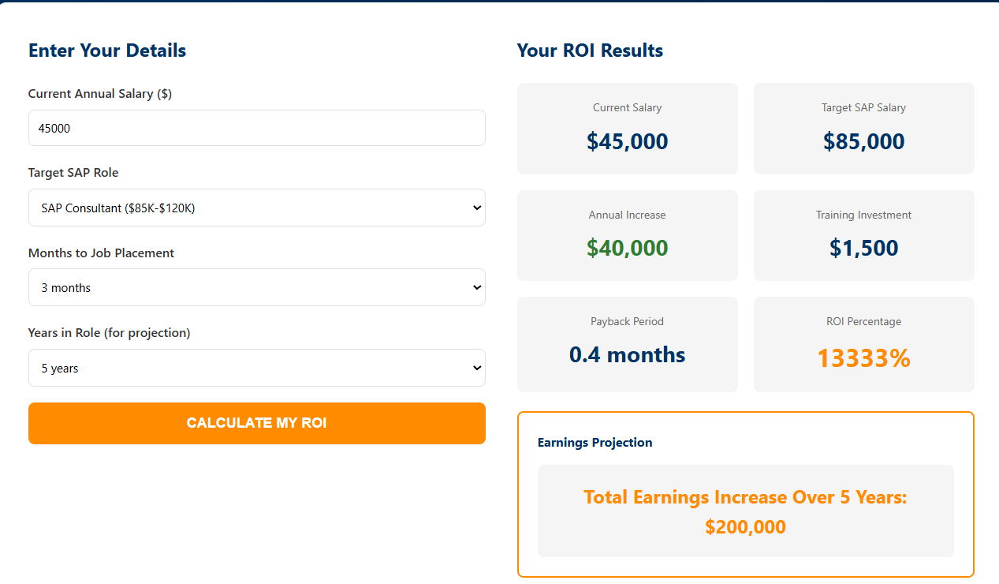
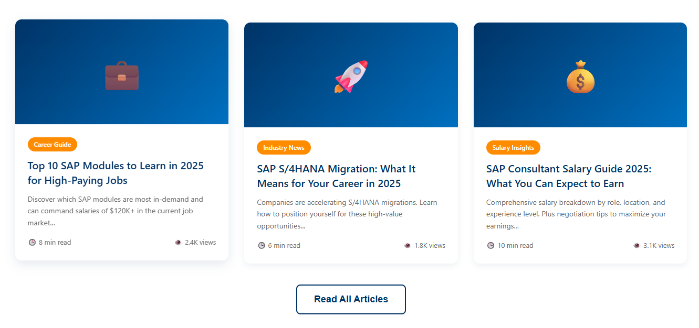
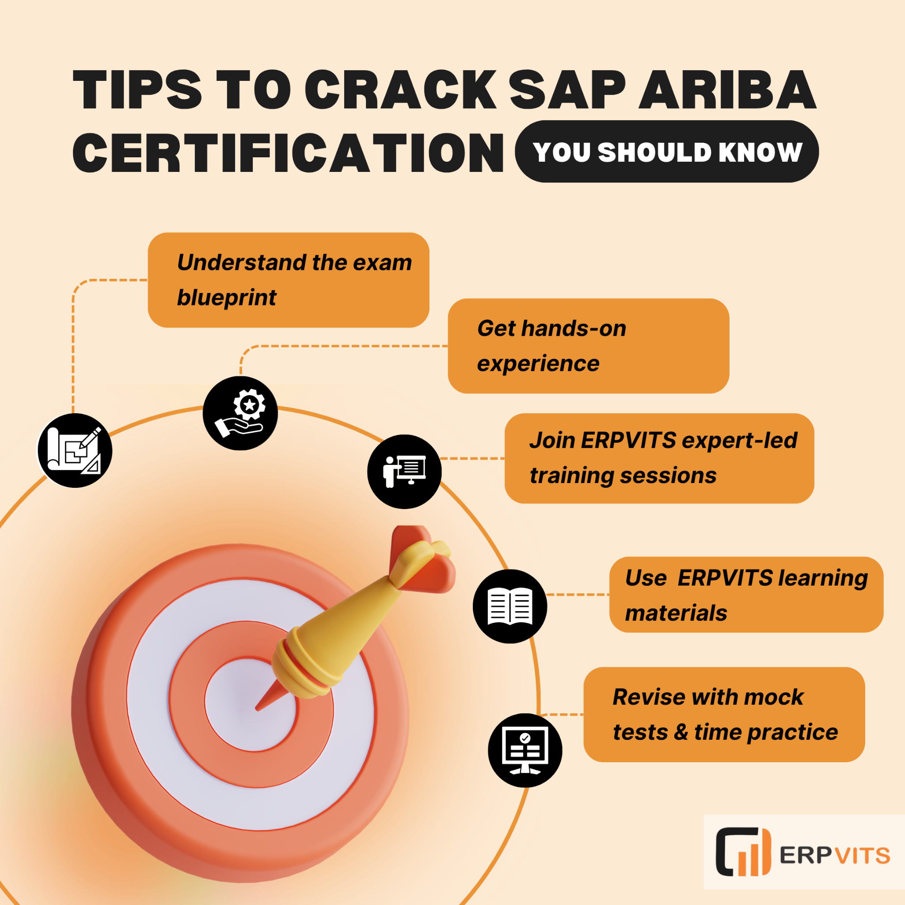
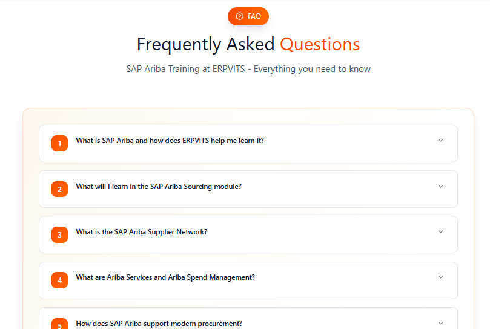

Template: https://www.perplexity.ai/apps/dff52335-8a53-4b61-b9c5-2027daf634e4
Learning Aspects | ERPVITS | Leading SAP Training Institute | Local SAP Training Institute |
|---|---|---|---|
Trainer Experience (Avg.) | ✅ 13+ Years | ✅ 10–12 Years | ✅ 5–8 Years |
Real-Time Project Scenarios | ✅ | ✅ | ✅ (Limited) |
Guided Project Implementation & Documentation | ✅ | ❌ | ✅ |
Placement Support (Resume, Interview Prep) | ✅ | ✅ | ❌ |
Global Certification Guidance | ✅ | ❌ | ✅ |
Lifetime Recorded Sessions | ✅ | ❌ (6–12 Months) | ✅ |
Post-Training Assistance | ✅ Resume & Interview Guidance | ✅ Feedback & Certificate Only | ❌ |
Learning Quality vs Pricing | 💼 Justified Pricing (Quality-Focused) | 💰 Premium Pricing (Brand Value) | 💸 Lower Pricing (Limited Depth) |
Successful Course Completion Rate | ✅ 90%+ | ✅ 85–90% | ❌ 60–70% |
Learner Satisfaction | ✅ 4.8/5 Rating | ✅ 4.5/5 Rating | ❌ 3.8/5 Rating |
ERPVITS HOMEPAGE - COMPLETE CONTENT
1. ###ANNOUNCEMENT BAR
🎉 LIMITED TIME: Early Bird Special - Save 10% (Only 48 Hours Left!) - Countdown timer
[CLOSE BUTTON]
2. STICKY HEADER & NAVIGATION
###Logo
ERPVITS
### Main Navigation Menu
- Home
- About Us
- SAP Functional
- SAP Technical
- Other IT Courses
- Blogs
- Web Stories
- Contact Us
### Additional Header Elements
- 🌐 Language Selector (EN, ES, FR, DE)
- info@erpvits.com (email button)
- +91 84088 78222 (with both Call & Whatsapp button)
## 3. HERO SECTION
### H1 Heading
Empower Your Career with Expert SAP Online Training
### Subheading
Industry-Leading SAP Online Training Institute with 95%+ Placement Success
### Description
Transform your career with ERPVITS, your trusted online SAP training partner. Learn from industry experts with over 15 years of experience in SAP. Get your certification, achieve your dream job and boost your earnings with instructor SAP courses with hands-on projects and placement assistance.
### Call-to-Action Buttons
### Trust Indicators (Animated)
✅ 12+ Years in SAP Industry
✅ 6000+ Professionals Trained
✅ 24/7 Team Support
✅ 8+ SAP Solution Architect Trainers
## 4. URGENCY & SCARCITY SECTION
### H2
⏱️ NEXT SAP BATCH STARTS IN: [2 DAYS : 14 HOURS : 22 MINUTES]
### Batch Details
- **Start Date:** November 16, 2025
- **Format:** Instructor-Led (Live)
- **Schedule:** Every Saturday & Sunday
- **Duration:** 8 weeks
- **Seats Available:** 5 of 10 remaining
### Call-to-Action Buttons
**[🎯 RESERVE YOUR SEAT NOW - ONLY 5 SPOTS LEFT]** (Red - Urgent)
**[💳 SECURE SPOT WITH 60% Fees Now - PAY REST LATER]** (Orange)
**[📋 GET FULL BATCH DETAILS]** (Blue outline)
### Live Enrollment Notifications Feed
✅ "Just now: Satish Kumar enrolled in SAP FICO Training!"
✅ "15 minutes ago: Renuka Desai got early bird discount!"
### 4 Why Choose Us
H2: Why Choose ERPVITS for Your SAP Online Training?
### Subheading
Transform Your Career with Certified SAP Online Training – 6000+ Professionals Trained & Successfully Placed Globally
### Benefit Card 1: Expert SAP Online Trainers
**✓ Expert SAP Training with Industry Leaders**
Instructors with 15+ years of practical SAP experience. Learn from experts who have undertaken SAP projects in Fortune 500 companies. Our faculty has real-world experience in procurement, finance, manufacturing, supply chain, emerging technologies and more. Every SAP course is taught by qualified industry professionals. You will learn not only the theory but the industry challenges and best practices.
### Benefit Card 2: Real-Time Instructor-Led
**✓ Real-Time, Instructor-Led SAP Courses**
SAP courses with live sessions come with real-time interactions on questions, and issue resolution. There is no pre-recorded content, and trainer obligations are authentic. Engage in discussions, raise hands during lectures, and receive prompt responses. Our faculty will adjust instruction in real time based on your understanding and class progress.
### Benefit Card 3: Hands-On Projects
**✓ Hands-On Project-Based SAP Learning**
Practice with live SAP environments, and real-world scenarios. Build hands-on projects that showcase your skills to prospective employers. Work with real SAP systems rather than simulations. Complete end-to-end projects from requirement gathering to implementation. Your portfolio is a demonstration of your skills that will give you a competitive advantage in the job market.
### Benefit Card 4: Career Support
**✓ Job Placement Support & Career Support**
There is a placement success rate of greater than 95% due to committed placement SAP training and support teams, including support for resume preparation and mock interviews. Our job placement SAP support group engages with our learners and hiring partners 2-4 months after they complete the course. Training is only part of what we do- we place you as a professional in the role for which we believe you have the right training. We measure our success by yours.
### Benefit Card 5: Global SAP Certification Guidance
**✓ Guidance for Multiple SAP Certifications**
Get support for valuable global SAP certification which includes SAP Ariba, FICO, S/4HANA, Analytics Cloud, and BTP. We support you in certification preparation and aligning course work with the required learning to pass as well as increasing your chances to earn a certification which is a global mark of excellence and is sought after by employers.
### Benefit Card 6: Flexible SAP Learning Formats
**✓ Flexible SAP Learning Formats for Your Schedule**
We have 4 delivery modes which are Instructor-Led, Self-Paced, Corporate Training and 1-on-1 Mentoring. We give you the option to learn at your convenience based on your availability and lifestyle. We have designed our modes of training to support learners who are working adults, have intensive family responsibilities, or who like to do it in an intensive study session.
### Benefit Card 7: Affordable Pricing
**✓ Affordable SAP Course Charges with Flexible Payment Plans**
We have developed competitive and affordable study and training programs for SAP which will help you develop your SAP skills. We have flexible and simple payment plans, easy to follow installment plans and we give discounts from time to time. These measures will help you develop your SAP skills with full confidence.
### Benefit Card 8: Lifetime Support
**✓ Lifetime Career Support & Mentorship**
The support you receive for your career does not stop once you get placed. You will get lifetime access to your mentors and counselors, professional development materials, and an alumni network, as well as an extended community for continual support, which will help you beyond the completion of your course.
### 5. CUSTOM TRAINING PLAN
### Section Title
Get Your Personalized SAP Training Plan – It's FREE!
### Subtitle
We'll Design the Perfect Learning Path for Your SAP Career Goals
### Description
Every professional's journey to proficiency in SAP is unique, as is every background, career objective, time frame, and learning preference. We will design a personalized training program just for you.
✓Customized curriculum based on your background
✓Career roadmap with salary projections
✓Recommended certifications for your target role
✓Flexible scheduling options to fit your life
---
## 6. FEATURED COURSES - INTERACTIVE SHOWCASE
### Section Heading
H2: Master In-Demand SAP Online Training Courses
### Subtitle
Choose from comprehensive SAP online training programs with industry-leading curriculum and certification
### COURSE 1: SAP ARIBA TRAINING
**Key Metrics:**
⏱️ Duration: 45-50 hours
💰 SAP Ariba Course Fee: 45,000/- INR
**Description:**
Learn all modules of Ariba including Upstream, Downstream, Integration, SSC, Commerce Automation, Guided Buying, Guided Sourcing, SLP, and CIG with industry experts to develop skills in procurement, sourcing, and supplier collaboration to advance your career and certification in SAP Ariba.
CTA:
### COURSE 2: SAP FICO TRAINING
**Key Metrics:**
⏱️ Duration: 40-45 hours
💰 SAP FICO Course Fee: 40,000/- INR
**Description:**
Master SAP Financial Accounting (FI) and Controlling (CO) with real-time, hands-on training provided by experts. Elevate your career and prepare for SAP FICO certification by mastering real-time finance processes including GL, Accounts Payable, Accounts Receivable, Asset Accounting, and Cost Control.
CTA:
### COURSE 3: SAP S/4HANA MM Training
**Key Metrics:**
⏱️ Duration: 40-45 hours
💰 SAP MM Course Fee: 45,000/- INR
**Description:**
With real-time, hands-on training by experts, master all functions of Materials Management (MM) and streamline your supply chain including procurement, inventory management, material valuation, vendor management, and invoice verification and prepare for SAP MM certification.
CTA:
### COURSE 4: SAP TRM Training
**Key Metrics:**
⏱️ Duration: 45-50 hours
💰 SAP TRM Course Fee: 45,000/- INR
**Description:**
Master SAP Treasury and Risk Management Oak and learn practical skills in cash management, liquidity forecasting, financial risk analysis, and hedge management to optimize corporate finance and prepare for SAP TRM certification.
CTA:
### COURSE 5: SAP BTP Training
**Key Metrics:**
⏱️ Duration: 40-45 hours
💰 SAP BTP Course Fee: 45,000/- INR
**Description:**
Learn enterprise integration and cloud architecture on SAP's unified platform and built for developers, architects, and integration specialists. Be mentored by cloud experts at leading cloud-native companies and learn to master the future of enterprise technology.
CTA:
### COURSE 6: SAP ANALYTICS CLOUD Training
**Key Metrics:**
⏱️ Duration: 40-45 hours
💰 SAP Analytics Cloud Course Fee: 45,000/- INR
**Description:**
Acquire SAP Analytics Cloud skills through guided, practical exercises, including building interactive dashboards, data models, visualizations, performing forecasts, and deriving actionable insights from real-time data. Attain proficiency in Business Intelligence, Planning, and Predictive Analytics to set the stage for SAP SAC certification.
CTA:
### Course Section CTAs
**[VIEW ALL 15 COURSES]**
**[CONSULT US TO FIND YOUR PERFECT SAP COURSE]**
###SECTION 7
H3: Where Do ERPVITS Learners Work?
### Desc
Learners with practical SAP training from ERPVITS gain access to employment in Fortune 500 companies, multinational corporations, and global consulting firms that implement SAP solutions. Roles are available in areas such as procurement, finance, human resources, supply chains, and analytics.
[COMPANIES GRID LIST WITH LOGOS]
### PLACEMENT STATISTICS
- ✅ 95%+ Placement Success Rate
- ⏱️ 2-4 Weeks Average Time to Job
- 💰 30-80% Salary Increase
- 🌍 Placements in 15+ Countries
- 🏢 300+ Active Hiring Partners
- 📈 30-40 New Positions Monthly
## 8. PLACED LEARNER SUCCESS STORIES SECTION
### Section Title
🎉 Meet Our Success Stories
### Subtitle
Real People Who Transformed Their Careers with ERPVITS Training
### Description
ERPVITS learners who tell their success stories are living proof that transformative outcomes like promotions and raises are tangible. Could you be next?
---
### SUCCESS STORY 1: Karuna Nimse
**Name:** Karuna Nimse
**Current Title:** Senior SAP FICO Consultant
**Company:** Deloitte Consulting
**Transformation:**
- Before: 8 LPA
- After: $12.5 LPA
- **Increase:** +56.25%
**Course Completed:** SAP FICO Training
**Time to Placement:** ⚡ 60 days
**Course Rating:** ⭐⭐⭐⭐⭐ (5/5 stars)
**Testimonial Quote:**
“ERPVITS played a huge role in my career growth! SAP FICO training was practical, detailed, and perfectly aligned with real project requirements. Within just 2 months of completing the course, I got hired at Deloitte with a 56% salary hike. Highly recommended for anyone serious about advancing in SAP.”
**Video Testimonial:** [▶️ WATCH VIDEO - 3 minutes]
### SUCCESS STORY 2: Sarah Johnson
**Name:** Sarah Johnson
**Current Title:** SAP SD Functional Consultant
**Company:** Accenture
**Transformation:**
- Before: 12 LPA
- After: 15 LPA
- **Increase:** +33.33%
**Course Completed:** SAP SD Training
**Time to Placement:** ⚡ 21 days
**Rating:** ⭐⭐⭐⭐⭐ (4.5/5 stars)
**Testimonial Quote:**
“SAP SD training was incredibly well-structured and industry-focused. The mentors made complex concepts easy to understand with real-time examples. Thanks to their guidance, I secured a new position at Accenture within just 3 weeks. ERPVITS truly delivers results!”
### SUCCESS STORY 3: Renuka Mittal
**Name:** Renuka Mittal
**Current Title:** SAP Analytics Cloud Developer
**Company:** Google Cloud Professional Services
**Transformation:**
- Before: 11 LPA
- After: 18 LPA
- **Increase:** +63.64%
**Course Completed:** SAP Analytics Cloud
**Time to Placement:** ⏱️ 78 days
**Rating:** ⭐⭐⭐⭐⭐ (5/5 stars)
**Testimonial Quote:**
“Initially, I was skeptical about online SAP training, but ERPVITS proved me wrong. The SAP Analytics Cloud course was detailed, practical, and far beyond my expectations. It wasn’t easy — the concepts were challenging — but the mentors guided me throughout. Within 2.5 months, I landed a role at Google Cloud with a 63% salary hike. Hard work plus the right training really pays off!”
### SUCCESS STORY 4: Mahesh Saraf
**Name:** Mahesh Saraf
**Current Title:** SAP S/4HANA Program Manager
**Company:** SAP SE (the company itself!)
**Transformation:**
- Before: 15 LPA
- After: 21.5 LPA
- **Increase:** +43.33%
**Course Completed:** SAP S/4HANA MM
**Time to Placement:** ⚡ 55 days
**Rating:** ⭐⭐⭐⭐⭐ (4.5/5 stars)
**Testimonial Quote:**
“Coming from years of SAP experience, I wasn’t sure if another course would make a big difference but ERPVITS changed my perspective. The SAP S/4HANA MM training was in-depth, updated with real-world scenarios, and pushed me to upskill meaningfully. It took effort, but within 2 months I advanced to a Program Manager role at SAP SE itself. Truly worth the investment!”
### SUCCESS STORY 5: ANITA PATEL
**Name:** Anita Patel
**Current Title:** Finance Manager (SAP FICO)
**Company:** Morgan Stanley
**Transformation:**
- Before: 21 LPA
- After: 28 LPA
- **Increase:** +33.33%
**Course Completed:** SAP FICO + S/4HANA Finance
**Time to Placement:** ⏱️ 42 days
**Rating:** ⭐⭐⭐⭐⭐ (5/5 stars)
**Testimonial Quote:**
“Balancing my job and the SAP FICO + S/4HANA Finance course wasn’t easy — the sessions were intense and required real commitment. But ERPVITS trainers made even complex topics understandable with practical examples. The effort paid off when I landed a role at Morgan Stanley after finishing the course. Challenging, but absolutely rewarding!”
### SUCCESS STORY 6: Madhuri Chedda
**Name:** Madhuri Chedda
**Current Title:** SAP Ariba Senior Consultant
**Company:** Siemens
**Transformation:**
- Before: 14 LPA
- After: 22 LPA
- **Increase:** +57.14%
**Course Completed:** SAP Ariba Training
**Time to Placement:** ⚡ 75 days
**Rating:** ⭐⭐⭐⭐⭐ (5/5 stars)
**Testimonial Quote:**
“I had some prior experience in procurement, but moving into a senior SAP Ariba role felt out of reach before joining ERPVITS. The training was challenging at times, but the mentors were patient and deeply knowledgeable. They covered every Ariba module in detail with real project scenarios. It took effort and consistency, but ERPVITS made it achievable.”
###Section 9
H3: Learn from Industry's Best – 15+ Years of SAP Expertise
Subtitle: Our trainers bring real-world experience from Fortune 500 companies and global implementations
Our instructors average over 15 years of hands-on SAP implementation and consulting experience across multiple industries
All trainers hold multiple SAP certifications and continue professional development to stay current with latest technologies
Direct experience implementing SAP solutions for global enterprises including IBM, Accenture, Deloitte, and more
Diverse experience across manufacturing, retail, healthcare, finance, and technology sectors worldwide
CTA Button
[Meet Our Expert SAP Trainers]
###Section 10
H3: Book 1-on-1 Session with Expert SAP Trainers
Subtitle: Get personalized training from industry-certified SAP experts with 15+ years of real-world experience
—--------------add four trainer profiles—----------------------------
### Section 11
H4: Career Transformation Guaranteed – Placement Support Included
Subtitle: Comprehensive career services to ensure your success in landing your dream SAP role
### Section 12
H4: Calculate Your Personal ROI - See Your Return on Investment
subtitle: Discover how SAP training can transform your earning potential

### Section 13
H5: Latest SAP Career Insights & Industry Trends
Subtitle: Stay updated with expert articles, career guides, and SAP industry news

### Section 14
H5: Free Upcoming Demos
### Section 15
H6: Affordable SAP Training – Flexible Pricing & Payment Plans
Subtitle: Choose the program that fits your budget with flexible payment options available
CTA: 💡 Join Upcoming Batch
CTA: 🎯 Start Learning Now
CTA: ⚡ Get Custom Plan
CTA: 🏢 Request Corporate Quote
Add Payment Options Table
An SAP training course is professional training to understand the SAP integrated software used in enterprise resource planning (ERP). It includes training in modules such as SAP FICO, MM, SD, HCM, and Ariba, etc.
Learning SAP online is possible through self-paced and instructor-led AU classes and project work as well as certification prep through training institutes like ERPVITS.
SAP training price ranges based on the training module and methodology. In general, self-paced training is priced around ₹15,000–₹25,000 and instructor-led training is priced around ₹40,000–₹50,000.
SAP certification signifies your proficiency in one of the SAP modules. It is beneficial for your credentials and the stature of your employment in various organizations globally; it also increases your career and salary potential.
Once you have completed your SAP training, you can schedule your official SAP certification test through the SAP Learning Hub or authorized SAP training institutes.
SAP FICO, SAP MM, and SAP SD are popular for beginners because they are easier to comprehend for people new to SAP ERP systems and offer good career prospects.
SAP certification consists of the Associate, Professional, and Specialist levels, which range to cover SAP S/4HANA, SAP Ariba, SAP SuccessFactors, and SAP Analytics Cloud modules.
Absolutely. You can locate high-rated SAP institutes in your area or enroll in SAP online courses, which offer flexible hours, hands-on live projects, and job placement support.
Generally, most SAP online courses are between 6 and 10 weeks, depending on the module, pace of learning and the training method, which could be either self-paced or instructor-led.
After training and obtaining certification, one can hold roles such as SAP consultant, SAP developer, SAP functional analyst, or even ERP specialist in large corporations in various industries.
SAP ERP training enables learners to learn enterprise resource planning within SAP software, along with various disciplines such as finance, materials, supply chain, and human resource management.
Consider the availability of SAP training academies or institutes with certified trainers, documented flexible learning approaches, career placement assistance, and real-time project practices.
Of course, numerous SAP training and placement services offer comprehensive career assistance, including job candidate portfolio development, mock interviews, and direct access to employers.
Online learning around SAP is highly flexible, and in most cases, offers unlimited resource access and the chance to learn directly with SAP certified trainers, regardless of the distance.
An SAP course is the preceding discipline required for learners to complete to sit for SAP certification. Certification is accreditation that SAP gives to candidates who successfully complete the certification exam.
### Section 16

Footer: Same as ERPVITS
Heading Structure
(Hero section: main headline, short subheadline + CTA like “Book Free Demo” / “Enroll Now”)
(Live Projects, Real-Time Industry Scenarios, Hands-On Practice, Certification Support, Resume & Interview Preparation, Server Access, Recordings, Expert Guidance, and Q&A Sessions)
(Perfect for IT, Procurement, Supply Chain, and SAP Aspirants)
(Step Into Global Consulting and Implementation Roles)

The ERPVITS SAP Ariba Online Training Program is a new step for individuals to learn various skills within digital procurement, supply chain management, and enterprise resource planning. Organizations are looking for certified SAP Ariba professionals and experts for maintaining procurement efficiency, managing cost and efficiency within the supply chain. The advanced SAP Ariba Training program focuses on the training and skills development for the IT professionals, procurement especially for ERP specialists and ERP consultants, and for learners to develop their skills and prepare for global consulting and implementations in SAP Ariba Career paths.
[Book Your Free Demo Class] | [View Curriculum]
✅ SAP Certified Trainers ✅ 4.8 Learner Rating ✅ 24/7 Team Support

We provide industry SAP Ariba Training which includes interactive teaching, industry projects, and preparation for certification. The training is provided by experts and specialized instructors which ensure having industry knowledge and are certified by SAP with minimum industry experience of 12 years. We emphasize on real time knowledge and training to professionals. Thus, we do not provide SAP Ariba Training in the format of recorded training. Instruction is provided in real time by professionals with industry knowledge and tools to have step by step.
Certified Instructor Experience:
Our sessions are led by SAP Ariba certified instructors with extensive industry and practical experience. They not only teach the concepts but also share real-world scenarios, tips, and best practices to ensure you gain both theoretical knowledge and practical expertise.
SAP Ariba Course traditionally uses slides and presentation tools to explain concepts. But our program goes further. In every session, you will see live demonstrations on Ariba Software systems, and then you will participate in guided lab exercises that allow you to practice what you learned to reinforce it. By the end of your course, you will have configured requisition workflows, set up supplier master data, managed approval cycles, and executed sourcing events on real systems.
Our course curriculum design is not focused on academics. This is for you to learn SAP Ariba with specific skills, and understand the responsibilities and the role problem solving expected of an SAP Ariba Consultant. Training also covers real world implementations of procurement policies and also addresses guided buying, and SAP Ariba integration troubleshooting ensures that you walk away with practical solutions.
Outside of the primary instruction in the classroom, you have additional dedicated Q&A forums and live office hours, where instructors further answer your questions and elaborate on complicated subjects as well as provide personalized instruction based on your pace and your professional objectives.
Seeing as multiple civilians and overseas professionals have to manage multiple competing priorities; work, family, and education, we run weekday evening batches (6 PM – 9 PM IST) and also offer weekend (Saturday and Sunday) batches. All sessions are recorded, so you can catch up on a missed live session asynchronously to maintain your continuity.
Different from massive online courses for which instructors cater to thousands of anonymous learners, we limit our batches to 8-10 attendees. This enables instructors to provide individualized support and understand what you need to help you improve.
Learning SAP Ariba is only part of the equation—getting placed is the other part. Our dedicated career support staff helps you craft an SAP-focused resume, prepares you with mock interviews, and walks you through real interview questions from current hiring trends for SAP Ariba Consultant jobs. You'll be coached on how to effectively present project experience to help you shine in Ariba Careers interviews.
Become a part of a flourishing network of SAP Ariba practitioners. Provide and receive advice, job leads, and frameworks, ask for and provide help, and establish professional networks that can result in referrals and partnerships.
Your learning experience does not end with the completion of SAP Ariba Course. For the six months after training, you will receive instructor support whether to help you troubleshoot a real project, clarify tough concepts or prepare for your initial consulting engagements.

ERPVITS has been a trusted training partner for SAP Modules, having trained hundreds of successful learners, many of whom are employed in prominent consulting companies, such as Accenture, Capgemini, Deloitte, Infosys, and Wipro. The quality of SAP Ariba Training and Placement achieved by our program, as outlined in our alumni network testimonials, reinforces our standing as a reputable training partner.
From pre-evaluation to post-training support, we guide you through every step of your SAP Ariba learning journey and career transition.
A career-focused SAP Ariba Online Training with live expert sessions, real-world projects, hands-on labs, career support, and certification exam prep designed to help you become a job-ready Ariba Consultant.
45-50 Hours of Live Training | 50+ Hands-On Lab Exercises | 24/7 SAP Ariba Lab Access
Expert-led training for 45-50 hours covering all aspects from the basics to advanced implementation.
What You'll Learn:
Hands-On Activities:
What You'll Learn:
Hands-On Activities:
What You'll Learn:
Hands-On Activities:
What Will You Learn?
Hands-On Activities:
What Will You Learn?
Hands-On Activities:
What Will You Learn?
Hands-On Activities:
What Will You Learn?
Hands-on Activities:
What You'll Learn:
Hands-On Activities:

Replace 7 Comprehensive Modules with 2+ Live Projects, Duration to 45-50 Hours of Training

Perfect for professionals from diverse backgrounds targeting global consulting and implementation roles
Minimum Requirements:
Nice-to-Have (But Not Required):

Completion of Ariba Online Training at ERPVITS will give you following capabilities:
End-to-End Procurement Lifecycle Management
Strategic Sourcing & Supplier Collaboration
Contract Lifecycle & Compliance Management
Guided Buying & Catalog Management
Master Data & System Administration
Cloud Integration Gateway (CIG) & ERP Connectivity
Supply Chain Collaboration & Commerce Automation
Advanced Analytics & Reporting

Our Capstone Projects engage you in real business scenarios. Here are sample examples.
Scenario: A global manufacturer operating in 15 countries is seeking to consolidate procurement across regional business entities. They are implementing SAP Ariba Solutions to facilitate cost savings, supplier relationship improvements, and compliance across business jurisdictions to achieve their goals.
Your Role: You will:
Deliverables: Configuration documents, end user training materials, go-live checklist, post-implementation support plan.
Scenario: A retail chain with more than 500 suppliers in different categories intends to automate the supplier onboarding process and minimize manual data entry. They require a scalable solution for qualification, risk assessment, and performance tracking using SAP Ariba Supplier Management.
Your Role: You will:
Deliverables: Portal design documentation, workflow diagrams, training videos, and support procedures.
Scenario: A 10,000-employee tech company seeks to streamline the procurement of IT, office supplies, and professional services. They wish to implement guided buying to ensure policy compliance, decrease spending that has not received approval, and enhance the overall user experience.
Your Role: You will:
Deliverables: Portal mockups, configuration specs, user training content, and adoption strategy.
These projects ensure that you graduate with pieces for your portfolio and experience in real-world problem-solving that is invaluable for your first consulting position.

Replace below image with 👆 Alt Text: SAP Ariba Certification Tips

SAP Certified Application Associate – SAP Ariba Procurement
SAP Certified Application Associate – SAP Ariba Sourcing
SAP Certified Application Associate – SAP Ariba Contracts

Step Into Global Consulting and Implementation Roles
200%+ Increase in Job Openings | 500+ Companies Hiring | $110K, ₹8 LPA Average Starting Salary
Our alumni work at the world's leading consulting firms and Fortune 500 companies
Tier 1 – Global Consulting Firms
Tier 2 – Enterprise SAP Implementation Partners
Tier 3 – Fortune 500 Enterprises
Tier 4 – Mid-Market & Regional Leaders
Our learners are working at top companies worldwide. Fast-track your SAP Ariba Career with ERPVITS SAP Ariba Training and join this elite network of professionals.
500+ Alumni Worldwide | 98% Placement Rate | 3 Months Average Job Placement
Week 1-2:
Week 3-6:
Month 2-3:
For your sustained growth in the long term, you will have to acquire the SAP Ariba Procurement Certification in procurement, SAP Ariba Sourcing, and contracts for you to fully develop your certification.
You will also have to develop your expertise in certain fields as well as your leading and project management skills to make the shift to advanced consulting or account management.
You can also pursue a specialization in other areas of your choice such as SAP Ariba integration, analytics, and risk management.
2-3 Months Average Time to First Role | 100% Career Support | 6 Months Post-Training Support | Lifetime Alumni Network Access

4.8/5 Based on 320+ learner reviews
"Outstanding training and real project exposure. I landed a consulting role at Accenture within 8 weeks of completing the course. The hands-on approach and expert instructors made all the difference." – Amit Kumar, SAP Ariba Consultant at Accenture
"The weekend flexibility allowed me to learn while working. My employer was so impressed with my skills that they promoted me to Procurement Manager. This course accelerated my career by 3 years." – Priya Sharma, Procurement Manager
"Best decision I made. The capstone projects were exactly like real client work. I walked into my first consulting role feeling confident, not intimidated. The certification support was exceptional." – Rajesh Patel, Senior SAP Consultant
"Superb certification preparation. I passed all three SAP Ariba exams on my first attempt. The mock exams and study materials were spot-on. Highly recommended!" – Ananya Singh, Certified SAP Ariba Professional
"The instructor's real-world insights were invaluable. I didn't just learn SAP Ariba; I learned how to apply it in complex enterprise environments. The alumni network has already brought consulting opportunities my way." – Vikram Desai, Integration Consultant at Deloitte
"From zero SAP knowledge to landing my dream job in 4 months! The instructors are patient, knowledgeable, and truly care about learner success. The lifetime recording access is a huge bonus." - Sneha Reddy, Procurement Analyst at Infosys

Complete the form below to download a comprehensive guide covering:
[Download Free Interview Guide – Submit Form Below]
Form: Name | Email | Desired Role | Experience Level

Secure your spot in our upcoming batches with flexible timings designed for working professionals


What is SAP Ariba and how does ERPVITS help me learn it?
SAP Ariba is an important Cloud based solution for your procurement, sourcing, and supplier collaboration. At ERPVITS we offer complete SAP Ariba Training with a focus on important business scenarios, practical sessions, and guided projects. Let us help you master Ariba Software tools and workflows.
What can I expect to learn in the SAP Ariba Sourcing module?
In the SAP Ariba Sourcing module training at ERPVITS, you learn to configure various Ariba sourcing applications to create sourcing events, administer RFQs, analyze supplier bid proposals, refine negotiation tactics, and facilitate execution through the Ariba sourcing platform.
What is SAP Ariba Supplier Network?
SAP Ariba Supplier Network connects buyers and suppliers across the world. At ERPVITS, you learn the supplier registration process, catalog management, and the steps within the Ariba Supplier Management system pertaining to transaction processes.
What are Ariba Services and Ariba Spend Management?
ERPVITS covers Ariba Services and Ariba Spend Management to help learners analyze company spend, automate procurement processes, and achieve cost control through intelligent spend analytics.
How does SAP Ariba support modern procurement?
SAP Procurement powered by Ariba Procurement simplifies sourcing, contract management, and supplier collaboration. ERPVITS provides practical exposure to SAP Ariba Procurement workflows to prepare you for real-world projects.
Why should I join SAP Ariba Training at ERPVITS?
ERPVITS offers SAP Ariba Online Training with live sessions, industry-aligned projects, and placement support. You'll also receive guidance on SAP Ariba Certification, resume preparation, and interview success strategies.
Who can enroll in the SAP Ariba Course?
Anyone interested in procurement, supply chain, or SAP technologies can join. Whether you're a fresher, working professional, or consultant—ERPVITS SAP Ariba Course is designed to help you build job-ready skills.
What is the SAP Ariba Certification and why is it valuable?
SAP Ariba Certification validates your expertise in procurement and supplier management. ERPVITS prepares you for the official certification exam and helps you become a certified SAP Ariba Consultant or Ariba Specialist.
What are ERPVITS's SAP Ariba course fees?
ERPVITS offers SAP Ariba courses at reasonable fees. The SAP Ariba Course Fees depend on the course module and the preferred training mode. Pricing at ERPVITS covers all the essentials: hands-on training, learning materials, placement guidance, and assistance with certification.
What is the cost for SAP Ariba Certification?
The SAP Ariba Certification Cost is set by SAP Education. At ERPVITS, we provide comprehensive guidance for the exam, along with practice tests and mentoring aimed at helping you to obtain the certification on the first attempt.
How to become an SAP Ariba Consultant through ERPVITS?
ERPVITS provides comprehensive SAP Ariba Training with live project assignments which you are expected to complete and certification preparation. Career counseling and job assistance are also offered at ERPVITS to successfully become an SAP Ariba Consultant.
What are the different career opportunities available after completing the Ariba course?
After completing SAP Ariba Training at ERPVITS, you become qualified for positions such as Ariba Consultant, Procurement Analyst, Supplier Management Specialist, and SAP Functional Consultant. For the learners, we also provide job opportunities as Ariba Consultants and placement offers exploring various Ariba Careers.
How does SAP Ariba integrate with SAP S/4HANA?
ERPVITS explains the SAP Ariba integration with S4 HANA in intricate details. Sessions include data flow between Ariba and core SAP systems utilizing the Cloud Integration Gateway (CIG) along with API-driven connections.
What are the main SAP Ariba Solutions covered in the course?
We include all primary SAP Ariba Solutions in our course, which are SAP Ariba Sourcing, Buying & Invoicing, Contract Management, SAP Ariba Supplier Management, and Joined with practical implementation of use cases.
What is SAP Ariba Pricing and how does it work for companies?
SAP Ariba Pricing is determined by the scale of the business and usage. In Ariba Software training, ERPVITS discusses the functional aspects of pricing frameworks, licenses, and the costs related to implementation.
Does ERPVITS provide SAP Ariba Training with Placement Support?
Absolutely! ERPVITS provides SAP Ariba Training with Placement assistance. We aid in creating a strong resume, interview preparation, and offer connections with recruiters looking to fill positions related to SAP Ariba Consultant jobs.
Can I take SAP Ariba Online Training from anywhere?
Absolutely. ERPVITS offers SAP Ariba Online Training obtainable from any place. Engage with live trainers, access recorded sessions, and engage in practical sessions on the Ariba Software system remotely with our Ariba Online Training program.
Do you have SAP Ariba Training near me?
ERPVITS offers SAP Ariba Online Training for learners across India. We provide SAP Ariba Training in Hyderabad, SAP Ariba Training in Pune, and SAP Ariba Training in Bangalore through live online sessions led by industry experts. Flexible weekend and weekday batches are available for working professionals looking for SAP Ariba Training near me.
How does ERPVITS help in Ariba Careers?
At ERPVITS, we do provide technical training, but we also assist your SAP Ariba Career with resume preparation, interview coaching, and job placements in top SAP consulting firms for promising Ariba Careers.

Book your free demo today and take the first step towards a lucrative SAP Ariba Career
Meta Title (55 characters):
SAP Ariba Online Training | Enroll, Learn & Get Certified
Meta Description (156 characters):
Enroll in SAP Ariba Online Training by ERPVITS. Master sourcing, procurement, and supplier network with led-sessions, live projects & certification support.
Meta Keywords:
sap ariba sourcing, sap ariba supplier network, ariba services, ariba spend management, sap procurement, sap ariba training, sap ariba course, ariba procurement, sap ariba procurement, ariba training, sap ariba certification, sap ariba consultant, ariba consultant, ariba software, sap ariba online training, sap ariba consultant jobs, sap ariba integration, learn sap ariba, ariba careers, sap ariba career, sap ariba course fees, ariba course, sap ariba certification cost, sap ariba procurement certification, sap ariba solutions, ariba supplier management, sap ariba invoice management, sap ariba pricing, sap ariba supplier management, ariba online training, sap ariba integration with s4 hana, sap ariba training and placement, sap ariba training near me, sap ariba training in hyderabad, sap ariba training in pune, sap ariba training in bangalore
Schema Markup:
<script type="application/ld+json">
{
"@context": "https://schema.org",
"@graph": [
{
"@type": "Organization",
"@id": "https://www.erpvits.com/#organization",
"name": "ERPVITS",
"url": "https://www.erpvits.com/",
"logo": "https://www.erpvits.com/images/erpvits-logo.webp",
"sameAs": [
"https://www.instagram.com/erp_vits/",
"https://www.linkedin.com/company/erpvits/",
"https://www.youtube.com/@ERPVITS",
]
},
{
"@type": "WebPage",
"@id": "https://www.erpvits.com/sap-ariba-training/#webpage",
"url": "https://www.erpvits.com/sap-ariba-training/",
"name": "SAP Ariba Online Training | SAP Ariba Certification Course | ERPVITS",
"description": "Master SAP Ariba with ERPVITS — the best SAP Ariba Online Training covering procurement, sourcing, and supplier management. 50+ hrs of live sessions, real projects, and global placement support.",
"isPartOf": {
"@id": "https://www.erpvits.com/#website"
},
"breadcrumb": {
"@id": "https://www.erpvits.com/sap-ariba-training/#breadcrumb"
},
"about": {
"@id": "https://www.erpvits.com/sap-ariba-training/#course"
}
},
{
"@type": "BreadcrumbList",
"@id": "https://www.erpvits.com/sap-ariba-training/#breadcrumb",
"itemListElement": [
{
"@type": "ListItem",
"position": 1,
"name": "Home",
"item": "https://www.erpvits.com/"
},
{
"@type": "ListItem",
"position": 2,
"name": "SAP Courses",
"item": "https://www.erpvits.com/sap-courses/"
},
{
"@type": "ListItem",
"position": 3,
"name": "SAP Ariba Training",
"item": "https://www.erpvits.com/sap-ariba-training/"
}
]
},
{
"@type": "Course",
"@id": "https://www.erpvits.com/sap-ariba-training/#course",
"name": "SAP Ariba Online Training",
"alternateName": "SAP Ariba Certification Course | SAP Ariba Training by ERPVITS",
"description": "Transform your career with ERPVITS SAP Ariba Online Training. Learn SAP Ariba Sourcing, Procurement, Supplier Network, and Integration with expert trainers and hands-on projects.",
"provider": {
"@id": "https://www.erpvits.com/#organization"
},
"courseMode": ["Online", "Instructor-led", "Live Virtual Training"],
"educationalCredentialAwarded": "SAP Certified Application Associate – SAP Ariba Procurement / Sourcing / Contracts",
"timeRequired": "PT50H",
"offers": {
"@type": "Offer",
"url": "https://www.erpvits.com/sap-ariba-training/",
"price": "45000",
"priceCurrency": "INR",
"availability": "https://schema.org/InStock",
"category": "Education",
"eligibleRegion": {
"@type": "Place",
"name": "Worldwide"
}
},
"aggregateRating": {
"@type": "AggregateRating",
"ratingValue": "4.8",
"reviewCount": "180"
}
},
{
"@type": "FAQPage",
"@id": "https://www.erpvits.com/sap-ariba-training/#faq",
"mainEntity": [
{
"@type": "Question",
"name": "What is SAP Ariba and how does ERPVITS help me learn it?",
"acceptedAnswer": {
"@type": "Answer",
"text": "SAP Ariba is a cloud-based solution for procurement, sourcing, and supplier collaboration. ERPVITS offers complete SAP Ariba Training focused on business scenarios, practical sessions, and guided projects to help you master Ariba Software tools and workflows."
}
},
{
"@type": "Question",
"name": "What can I expect to learn in the SAP Ariba Sourcing module?",
"acceptedAnswer": {
"@type": "Answer",
"text": "In the SAP Ariba Sourcing module at ERPVITS, you learn to configure sourcing applications, create sourcing events, administer RFQs, analyze supplier bids, and manage negotiations through the Ariba platform."
}
},
{
"@type": "Question",
"name": "What is SAP Ariba Supplier Network?",
"acceptedAnswer": {
"@type": "Answer",
"text": "SAP Ariba Supplier Network connects buyers and suppliers globally. ERPVITS teaches supplier registration, catalog management, and transaction processes in the Ariba Supplier Management system."
}
},
{
"@type": "Question",
"name": "What are Ariba Services and Ariba Spend Management?",
"acceptedAnswer": {
"@type": "Answer",
"text": "ERPVITS covers Ariba Services and Spend Management, helping learners analyze company spend, automate procurement, and achieve cost control using spend analytics tools."
}
},
{
"@type": "Question",
"name": "How does SAP Ariba support modern procurement?",
"acceptedAnswer": {
"@type": "Answer",
"text": "SAP Procurement powered by Ariba simplifies sourcing, contract management, and supplier collaboration. ERPVITS offers hands-on training on SAP Ariba Procurement workflows aligned with real-world business needs."
}
},
{
"@type": "Question",
"name": "Why should I join SAP Ariba Training at ERPVITS?",
"acceptedAnswer": {
"@type": "Answer",
"text": "ERPVITS provides live SAP Ariba Online Training with industry-aligned projects, certification guidance, placement support, and interview preparation to help you build job-ready SAP skills."
}
},
{
"@type": "Question",
"name": "Who can enroll in the SAP Ariba Course?",
"acceptedAnswer": {
"@type": "Answer",
"text": "Anyone interested in procurement, supply chain, or SAP technologies can join. Whether you're a fresher, working professional, or consultant — the ERPVITS SAP Ariba Course helps you build career-ready skills."
}
},
{
"@type": "Question",
"name": "What is the SAP Ariba Certification and why is it valuable?",
"acceptedAnswer": {
"@type": "Answer",
"text": "SAP Ariba Certification validates your expertise in procurement and supplier management. ERPVITS prepares you for the official exam and guides you to become a certified SAP Ariba Consultant or Specialist."
}
},
{
"@type": "Question",
"name": "What are ERPVITS's SAP Ariba course fees?",
"acceptedAnswer": {
"@type": "Answer",
"text": "The SAP Ariba Course fee at ERPVITS is ₹45,000 INR, covering hands-on training, materials, placement guidance, and certification support."
}
},
{
"@type": "Question",
"name": "What is the cost for SAP Ariba Certification?",
"acceptedAnswer": {
"@type": "Answer",
"text": "The SAP Ariba Certification cost is set by SAP Education. ERPVITS provides exam guidance, practice tests, and mentoring to help you clear it successfully on your first attempt."
}
},
{
"@type": "Question",
"name": "How to become an SAP Ariba Consultant through ERPVITS?",
"acceptedAnswer": {
"@type": "Answer",
"text": "ERPVITS offers SAP Ariba Training with real project assignments, certification guidance, career counseling, and placement support to help you become a successful SAP Ariba Consultant."
}
},
{
"@type": "Question",
"name": "What are the different career opportunities available after completing the Ariba course?",
"acceptedAnswer": {
"@type": "Answer",
"text": "After completing SAP Ariba Training at ERPVITS, you can pursue roles such as Ariba Consultant, Procurement Analyst, Supplier Management Specialist, and SAP Functional Consultant with placement assistance."
}
},
{
"@type": "Question",
"name": "How does SAP Ariba integrate with SAP S/4HANA?",
"acceptedAnswer": {
"@type": "Answer",
"text": "ERPVITS covers SAP Ariba and SAP S/4HANA integration, including data flow via Cloud Integration Gateway (CIG) and API-based connections between Ariba and core SAP systems."
}
},
{
"@type": "Question",
"name": "What are the main SAP Ariba Solutions covered in the course?",
"acceptedAnswer": {
"@type": "Answer",
"text": "The course covers SAP Ariba Sourcing, Buying & Invoicing, Contract Management, Supplier Management, and other key Ariba modules with practical implementation."
}
},
{
"@type": "Question",
"name": "What is SAP Ariba Pricing and how does it work for companies?",
"acceptedAnswer": {
"@type": "Answer",
"text": "SAP Ariba Pricing depends on business scale and usage. ERPVITS explains pricing frameworks, licenses, and cost implications of Ariba implementation during training."
}
},
{
"@type": "Question",
"name": "Does ERPVITS provide SAP Ariba Training with Placement Support?",
"acceptedAnswer": {
"@type": "Answer",
"text": "Yes! ERPVITS offers SAP Ariba Training with 100% placement assistance, including resume building, interview preparation, and recruiter connections."
}
},
{
"@type": "Question",
"name": "Can I take SAP Ariba Online Training from anywhere?",
"acceptedAnswer": {
"@type": "Answer",
"text": "Yes, ERPVITS provides SAP Ariba Online Training accessible globally through live virtual classes, recordings, and hands-on practice sessions."
}
},
{
"@type": "Question",
"name": "Do you have SAP Ariba Training near me?",
"acceptedAnswer": {
"@type": "Answer",
"text": "ERPVITS offers SAP Ariba Online Training for learners across India, including Hyderabad, Pune, and Bangalore, with flexible weekend and weekday batches."
}
},
{
"@type": "Question",
"name": "How does ERPVITS help in Ariba Careers?",
"acceptedAnswer": {
"@type": "Answer",
"text": "ERPVITS not only provides technical SAP Ariba training but also career guidance, resume reviews, and placement support to build successful Ariba careers."
}
}
]
}
]
}
</script>
Feature | WordPress | Next.js |
|---|---|---|
Ease of Use | ✅ No-code, easy page builder (Elementor) | ❌ Needs developer for every page/component |
SEO Optimization | ✅ RankMath / Yoast built-in tools | ✅ Native SSR + custom SEO control |
Page Speed | ⚙️ Medium (1.5–3s avg, needs optimization) | ⚡ Ultra-fast (0.5–1s load) |
Lead Generation Setup | ✅ Ready plugins (WPForms, CRM, popups) | ⚙️ Custom-coded (more control, but slower to build) |
Blog / Content SEO | ✅ CMS-ready, perfect for content marketing | ⚙️ Needs a headless CMS (like Strapi or WordPress backend) |
Scalability | 🟡 Moderate (plugins can slow large sites) | ✅ High (handles thousands of visitors easily) |
Design Freedom | ✅ Elementor visual builder | ✅ Total design control with React components |
Maintenance | ⚙️ Needs plugin & theme updates | ✅ Stable, but requires dev knowledge |
Hosting | 🌐 Shared hosting ($5–15/mo) | ☁️ Vercel / AWS ($15–30/mo) |
Best For | SEO + Lead Gen + Blogs + Fast Launch | Custom UI/UX + Scalability + Performance |
✅ Ideal Fit: WordPress
Because:
👉 For your business model (education + paid ads + organic content),
WordPress is the most ROI-efficient, time-saving choice.
You can move to Next.js later when:
That hybrid model (Next.js + Headless WordPress) gives:
Given your current business (ERP training, SEO, Ads, regular updates):
🏆 Go with WordPress now — build your site, run your ads, grow your SEO traffic.
Then, when traffic and automation needs scale, you can upgrade to Next.js frontend later.
Stack to choose now:
This setup gives you:
✅ Fast site
✅ Easy content & landing pages
✅ Full SEO control
✅ Smooth lead capture workflow
✅ Quick scalability
Keyword | Volume |
|---|---|
sap course | 40500 |
sap certification | 12100 |
sap course charges | 9900 |
sap online training | 5400 |
sap online course | 5400 |
sap learning | 5400 |
sap course near me | 5400 |
sap training near me | 5400 |
sap classes online | 5400 |
learn sap online | 5400 |
sap software training online | 5400 |
sap online trainer | 5400 |
sap training | 4400 |
sap developer training | 4400 |
sap certification course | 2400 |
sap training certification | 2400 |
sap classes near me | 1900 |
sap institute near me | 1900 |
sap certification cost | 1600 |
sap course details | 1600 |
sap training institute | 1300 |
sap course institute | 1300 |
sap online courses with certificates | 1000 |
sap training and placement | 1000 |
sap certification list | 1000 |
sap erp course | 880 |
sap erp training | 880 |
sap courses list | 880 |
learn sap erp | 880 |
sap classes | 720 |
sap training institute near me | 720 |
sap training academy | 720 |
sap institute | 590 |
best institute for sap course | 590 |
sap full course | 590 |
sap coaching near me | 590 |
H1: Become a Leader in Managing a Contingent Workforce with SAP Fieldglass Training
Hero Section Content
This SAP Fieldglass training course is specifically tailored for HR professionals, procurement professionals, IT consultants, work program managers, and other professionals who aspire to work in global contingent workforce and services procurement consulting. This SAP Fieldglass course combines hands-on system training, expert instruction with real-world application, and a curriculum designed to a certification.
Call-to-Action (CTA)
[Book Your Free Demo Class] | [View Curriculum]
Trust Indicators
✅ SAP Certified Trainers
✅ 4.7 Learner Rating
✅ 24/7 Team Support
H2: Learn SAP Fieldglass from Certified Experts – 100% Hands-On, Job-Oriented Training
Unlike passive video courses or self-paced modules, our SAP Fieldglass Online Training offers direct training from a SAP certified trainer who has over 10 years of experience in contingent workforce management. Your training is interactive in real-time where trainers explain methodologies and work with you on complex workforce problems
Certified Instructor Expertise: Every one of our trainers has official SAP Fieldglass certifications and has managed numerous enterprise SAP Fieldglass implementations for Fortune 500 companies. Trainers are not just teaching theories; they bring real client stories, common implementation challenges, and industry best practices from live deployments of VMS systems that manage thousands of contingent workers. Having this real-world experience is a game-changer for your first SAP Fieldglass consulting assignment.
Job-Oriented Curriculum Design: The course curriculum is designed to fit the real-world skills, tasks, responsibilities, and problem-solving challenges you will encounter in the field as an SAP Fieldglass consultant. Whether you are deploying processes for contingent workforce, configuring vendor portal, streamlined automation for invoicing, or compliance workflows, this training will provide you with actionable clarity that will help you.
Interactive Q&A Sessions: In addition to the primary teaching sessions, you have interactive Q&A sessions, as well as live office hours, during which you can post questions, receive clarifications on the more intricate VMS elements, and obtain guidance that is customized to your individual learning velocity and career aspirations.
Flexible Batch Timings: Understanding that numerous professionals balance a job, a family, and studies, we provide evening sessions on the weekdays (Monday to Friday, 6 PM to 9 PM IST) and weekend classes (Saturday and Sunday). Sessions are recorded, so if you miss a live class, you can catch up asynchronously without losing continuity.
Small Batch Sizes for Personalized Attention: Unlike massive online courses, which may have thousands of anonymous learners, our classes are limited to 8-10 participants. This allows instructors to tailor their teaching to your particular learning and provide individual constructive attention.
Placement & Career Support: Learning SAP Fieldglass is half the journey; for most learners, getting placed constitutes the goal of the course. Our career support team is focused on helping you construct a Fieldglass-centered resume, assists you with mock interviews, and provides you with Fieldglass interview questions based on recent hiring inquiries within the VMS and contingent workforce space. You will receive instruction on effectively framing your project experiences to make a positive impression during SAP Fieldglass job interviews.
Active Alumni Network & Community Forum: Participate in the active and vibrant community of professionals using SAP Fieldglass. Network with professionals to gain insights and share job leads, ask questions, and create relationships that may result in referrals and partnerships in consulting for contingent work.
Ongoing Support Post-Training: The SAP Fieldglass course and training may mark the end of formal training, but the learning journey will not end there. For any challenge related to concept clarification, any real-world challenges related to the VMS project the participant is working on, and initial consulting work in the area, there will be instructor support for the participant for six months post training.
ERPVITS's SAP Fieldglass training quality describes the company as a reliable SAP training institute for SAP solutions with hundreds of learners with successful training working in top consulting firms such as Accenture, Capgemini, Deloitte, Infosys, and Wipro in the contingent workforce and vendor management area. The alumni network reinforces the instructor quality and proceeds career transition that the Fieldglass course offers.
Every step of the learning journey and the career transition in contingent workforce management is supported, from pre-evaluation to post-training.
A complete SAP Fieldglass online training program that includes live expert sessions, real VMS projects, practical labs, mock interviews, and career guidance. This helps to position you as a job-ready SAP Fieldglass consultant.
Live Interactive Classes: 35+ hours of instructor-led sessions via live video conferencing with real-time Q&A and interactive discussions for 8–10 weeks on the topic of contingent workforce management.
Real-World Projects: Work on projects inspired by Fortune 500 companies that cover contingent worker onboarding, vendor management, SOW project setup, invoicing automation, and S/4HANA integration.
Hands-On Lab Environment: SAP VMS Fieldglass Systems ensures that you will be able to onboard workers into SAP Fieldglass, configure vendors, process SOW workflows, process timesheets, manage invoices and create analytics dashboards.
Certification Exam Prep: ERPVITS prepares you for the SAP certified application associate exam for Fieldglass services and external workforce management. You will get dedicated study guides, practice exams, and bootcamp sessions.
Resume & Interview Coaching: Get personalized VMS tailored resume optimization, mock consulting interviews and SAP Fieldglass technical interview preparation guidance.
Complete Study Materials. Access interview question banks, SAP certified vertical Fieldglass documentation links, PDF's, presentations, VMS configuration checklists and VMS documentation.
Lifetime Recording Access: You will obtain lifetime access to the recorded, transcribed and indexed sessions. You will be able to revise the materials on contingent workforce topics, at your convenience.
Expert Q&A Sessions: Participate in the weekly Expert Q&A Session on VMS and Fieldglass to get guided mentorship on your career in contingent workforce consulting.
35+ | 40+ | 24/7 |
|---|---|---|
Hours of Live Training | Hands-On Lab Exercises | SAP Fieldglass Lab Access |
35+ hours of expert-led training covering every aspect from basics to advanced VMS implementation
What You'll Learn:
Hands-On Activities:
What You'll Learn:
Hands-On Activities:
What You'll Learn:
Hands-On Activities:
What You'll Learn:
Hands-On Activities:
What You'll Learn:
Hands-On Activities:
What You'll Learn:
Hands-On Activities:
What You'll Learn:
Hands-On Activities:
What You'll Learn:
Hands-On Activities:
Ideal for individuals from various professional backgrounds aiming for global consulting and implementation positions in contingent workforce management
HR & Recruitment Professionals
Procurement & Vendor Management Specialists
IT & ERP Professionals
Finance & Operations Leaders
Fresh Graduates & Career Changers
Prerequisites
Minimum Requirements:
Nice to Have (Not Required):
When you finish the ERPVITS SAP Fieldglass training, you’ll be able to:
Functional Mastery
1. End-to-End Contingent Worker Lifecycle Management
✅ Set up and supervise the entire contingent worker onboarding and offboarding processes.
✅ Manage requisitions, worker assignments, and timesheet approval processes.
✅ Execute contingent workforce strategies, compliance, and cost control.
✅ Optimize processes and external talent acquisition cost.
2. Statement of Work (SOW) Services Procurement
✅ Manage the end to end lifecycle of SOW project including creation, bidding, and awarding.
✅ Configure SOW structure, billing models, and approval process.
✅ Facilitate SOW-related service provider onboarding and performance management.
✅ Automation of invoicing and payment collection for rendered services.
3. Vendor & Supplier Management
✅ Formulate and construct vendor onboarding and qualification processes.
✅Provide accurate vendor master data and vendor performance metrics.
✅Create vendor self-service portals and establish vendor collaboration.
✅Oversee vendor relationship management and vendor compliance.
4. Contingent Workforce Compliance & Risk Management
✅ Design automation for compliance and governance control.
✅Implement worker classification and compliance control.
✅Produce compliance documentation and audit trail.
✅Disseminate compliance and control for regulations within a set of rules for multiple jurisdictions.
Technical Skills
5. Master Data & System Administration
✅ Oversee Users, roles, permissions, and approval processes.
✅ Arrange organizational and managerial structures.
✅ Ensure consistency of data for employees, vendors, and businesses.
✅ Manage continuity of architecture and control of the system.
6. Integration & System Connectivity
✅ Connect SAP Fieldglass with SAP S/4HANA and other ERPs.
✅ Provide seamless automation of processes and data exchange.
✅ Create integration flow for worker data and invoice.
✅ Test and troubleshoot to ensure synchronization.
7. Analytics & Reporting
✅ Analyze spending of the contingent workforce.
✅ Measure vendor performance and worker performance.
✅ Design management dashboards and KPI reports, illustrating performance and operational metrics.
✅ Use workforce analytics to make a strategic operational framework and business plan.
8. Advanced Workflows & Customization
✅ Develop complex approval structures, with a hierarchy of conditional routing.
✅ For specific vendor management system (VMS) needs, custom form creation.
✅ Implement optimized and automated workflows
✅ Identify and solve complex workflow problem.
Our capstone projects immerse you in realistic VMS scenarios. Here are representative examples:
Scenario: A multinational IT services company with over 50,000 contingent workers globally needs to centralize their Fieldglass implementation. They intend to implement SAP Fieldglass as a 12 country operational cost control, workforce management, and compliance solution.
Your Role: As the lead SAP Fieldglass consultant, you will:
Deliverables: Configuration documentation, training Materials, a checklist for go-live, and post-implementation support.
Scenario: A retail company with over 500 vendor staffing seeks to replace manual processes in vendor management with streamlined and automated systems. They require Fieldglass vendor onboarding, performance tracking, and automation that scales.
Your Role: You will:
Deliverables: Portal design documentation, workflow diagrams, vendor guides, and support procedures.
Scenario: A global services company with over 500 million dollars in annual revenue from managed services/statement of work projects is adopting Fieldglass SOW module for projects streamlining setup, bidding, and invoicing capabilities.
Your Role: You will:
Deliverables: SOW process documentation, specification detailing what will be configured, and training documentation and materials for adoption strategy.
These projects ensure you graduate with portfolio pieces and invaluable, real-world problem-solving experience for your Fieldglass consulting engagement.
SAP Certified Application Associate – Fieldglass Services and External Workforce Management
1. SAP Fieldglass Functional Consultant (Entry Level)
2. Contingent Workforce Program Manager / VMS Lead
3. Fieldglass Integration Consultant
4. Vendor Management Specialist / SOW Services Consultant
5. Solutions Architect – Fieldglass / Contingent Workforce Solutions
Years 1–2: SAP Fieldglass Consultant → Support clients in VMS process design, system configuration, go-live support
Years 3–4: Mid-Level VMS Consultant → Lead Fieldglass implementation projects, mentor junior consultants, drive best practices
Years 5–7: Senior Consultant / VMS Architect → Design enterprise-wide Fieldglass solutions, manage client relationships, drive innovation
Years 7+: Principal Consultant / VMS Director → Lead high-value contingent workforce accounts, thought leadership, strategic consulting
150%+ | 400+ | $115K, ₹8 LPA |
|---|---|---|
Increase in Job Openings | Companies Hiring | Average Starting Salary |
Tier 1 – Global Consulting Firms
Tier 2 – Enterprise SAP Implementation Partners
Tier 3 – Major Global Services & IT Companies
Tier 4 – Mid-Market & Regional Leaders
Our learners are working at top companies worldwide. Fast-track your career with ERPVITS SAP Fieldglass training and join this elite network of VMS professionals.
420+ | 96% | 3 Months |
|---|---|---|
Alumni Worldwide | Placement Rate | Average Job Placement |
Week 1–2:
Week 3–6:
Month 2–3:
Months 1–3: Learn your client's contingent workforce operations, understand current VMS processes, get hands-on experience with Fieldglass implementations
Months 4–6: Lead small configuration tasks, mentor other junior Fieldglass consultants, build reputation for reliability and quality VMS work
Months 7–12: Lead components of Fieldglass implementation projects, drive process improvements, demonstrate business acumen alongside technical skills
2–3 Months | 100% | 6 Months |
|---|---|---|
Average Time to First VMS Role | Career Support | Post-Training Support |
Based on 280+ learner reviews
"Outstanding VMS training with real project exposure. I landed a consulting role at Accenture within 9 weeks managing Fieldglass implementations. The hands-on approach and expert instructors made all the difference." – Raj Patel, SAP Fieldglass Consultant at Accenture
"The weekend flexibility allowed me to learn while working in HR. My organization was so impressed with my Fieldglass skills that they promoted me to Contingent Workforce Manager. This course accelerated my career by 4 years." – Priya Desai, Contingent Workforce Manager
"Best decision I made for my SAP career. The capstone projects were exactly like real client VMS work. I walked into my first consulting engagement feeling confident, not intimidated. The certification support was exceptional." – Vikram Mishra, Senior VMS Consultant
"Superb Fieldglass certification preparation. I passed the SAP Fieldglass exam on my first attempt. The mock exams and study materials were spot-on. Highly recommended for VMS careers!" – Ananya Singh, Certified SAP Fieldglass Professional
"The instructor's real-world VMS insights were invaluable. I didn't just learn Fieldglass; I learned how to think like a contingent workforce consultant. The alumni network has brought several implementation opportunities my way." – Vikram Desai, Integration Consultant at Deloitte
"From zero Fieldglass knowledge to landing my dream VMS consulting job in 5 months! The instructors are patient, knowledgeable, and truly care about learner success. Lifetime recording access is a huge bonus." – Sneha Reddy, Contingent Workforce Analyst at Infosys
Complete the form below to download a comprehensive guide covering:
[Download Free Interview Guide – Submit Form Below]
Form: Name | Email | Desired Role | Experience Level
Batch 1: November 2025 (Weekdays – 7:00 AM | 8:00 PM IST)
Batch 2: November 2025 (Weekends – Saturday & Sunday, 7:30 AM | 7:00 PM IST)
Batch 3: December 2025 (Flexible timings – customized per batch)
Sample Live Class Session
Observe real Fieldglass training and instructor methodology
30-Min Career Consultation
Personalized guidance based on your HR/Procurement background
Q&A with Instructor
Ask questions about Fieldglass course, certification, and career
Special Discount Offer
Exclusive discount for demo attendees
Meta Title (55 characters):
SAP Fieldglass Online Training | ERPVITS Certification
Meta Description (157 characters):
Master SAP Fieldglass Online Training with ERPVITS. Learn VMS, Contingent Workforce, SOW modules, and integration with SAP S/4HANA. Get certification help.
Meta Keywords:
sap fieldglass training, vendor management system fieldglass, sap fieldglass certification, sap fieldglass contingent workforce management, sap fieldglass course, sap fieldglass online training, fieldglass certification
Schema Markup:
<script type="application/ld+json">
{
"@context": "https://schema.org",
"@type": "Course",
"name": "SAP Fieldglass Online Training",
"description": "Master SAP Fieldglass with ERPVITS — a complete hands-on online training program for Vendor Management, Contingent Workforce, and SOW projects. Learn real-time Fieldglass workflows, integration with SAP S/4HANA, and get ready for global certification and placement support.",
"provider": {
"@type": "Organization",
"name": "ERPVITS",
"url": "https://www.erpvits.com/",
"logo": "https://www.erpvits.com/images/erpvits-logo.webp",
"sameAs": [
"https://www.instagram.com/erp_vits/",
"https://www.linkedin.com/company/erpvits/",
"https://www.youtube.com/@ERPVITS"
]
},
"hasCourseInstance": {
"@type": "CourseInstance",
"courseMode": "Online",
"inLanguage": "English",
"courseWorkload": "35 Hours",
"location": {
"@type": "VirtualLocation",
"url": "https://www.erpvits.com/sap-fieldglass-training/"
},
"offers": {
"@type": "Offer",
"price": "45000",
"priceCurrency": "INR",
"availability": "https://schema.org/InStock",
"url": "https://www.erpvits.com/sap-fieldglass-training/",
"eligibleRegion": {
"@type": "Place",
"name": "Global"
}
}
},
"aggregateRating": {
"@type": "AggregateRating",
"ratingValue": "4.7",
"bestRating": "5",
"ratingCount": "254",
"reviewCount": "254"
},
"review": {
"@type": "Review",
"author": {
"@type": "Person",
"name": "Anjali Verma"
},
"reviewBody": "ERPVITS SAP Fieldglass Training gave me strong practical exposure to real-time VMS workflows. The live sessions and guided projects helped me crack my Fieldglass Consultant interview easily.",
"reviewRating": {
"@type": "Rating",
"ratingValue": "5",
"bestRating": "5"
}
}
}
</script>
<!-- FAQ Schema -->
<script type="application/ld+json">
{
"@context": "https://schema.org",
"@type": "FAQPage",
"mainEntity": [
{
"@type": "Question",
"name": "What is SAP Fieldglass and how does ERPVITS help me learn it?",
"acceptedAnswer": {
"@type": "Answer",
"text": "SAP Fieldglass is a cloud solution for vendor and contingent workforce management. At ERPVITS, we train SAP Fieldglass with real-time VMS scenarios, hands-on practice, and guided projects to master Fieldglass workflows and contingent operations."
}
},
{
"@type": "Question",
"name": "What will I learn in the SAP Fieldglass Contingent Worker module?",
"acceptedAnswer": {
"@type": "Answer",
"text": "SAP Fieldglass Contingent Worker training covers the entire worker lifecycle with requisition and onboarding, timesheet processing, invoicing, and offboarding using the Fieldglass contingent module."
}
},
{
"@type": "Question",
"name": "What is SAP Fieldglass Statement of Work (SOW)?",
"acceptedAnswer": {
"@type": "Answer",
"text": "SAP Fieldglass SOW module deals with services procurement and project-based contingent work. ERPVITS supports your understanding of SOW project creation, bidding, service provider management, milestone billing, and compliance tracking."
}
},
{
"@type": "Question",
"name": "What is the Fieldglass Vendor Management System (VMS)?",
"acceptedAnswer": {
"@type": "Answer",
"text": "The VMS in Fieldglass enables centralized vendor onboarding, performance management, and contingent workforce operations. ERPVITS training covers complete vendor lifecycle management and VMS optimization."
}
},
{
"@type": "Question",
"name": "In what ways does SAP Fieldglass assist in the management of a contingent workforce?",
"acceptedAnswer": {
"@type": "Answer",
"text": "With SAP Fieldglass, all aspects of contingent workforce management are handled seamlessly, including onboarding, compliance documentation, timesheet processing, invoicing, and reporting analysis. ERPVITS equips you with practical Fieldglass contingent workflow exposure to prepare you for client implementation."
}
},
{
"@type": "Question",
"name": "What are the reasons to attend ERPVITS SAP Fieldglass Training?",
"acceptedAnswer": {
"@type": "Answer",
"text": "With SAP Fieldglass Online Training at ERPVITS, you can expect live sessions, real VMS projects, and placement assistance. You'll also get Fieldglass Certification guidance and interview readiness strategies."
}
},
{
"@type": "Question",
"name": "Who is eligible for the SAP Fieldglass Course?",
"acceptedAnswer": {
"@type": "Answer",
"text": "Individuals focused on HR, contingent workforce management, procurement, or SAP technologies are eligible. ERPVITS SAP Fieldglass Course is for freshers, working professionals, and consultants to gain job-ready skills."
}
},
{
"@type": "Question",
"name": "What does the SAP Fieldglass Certification entail, and what are its benefits?",
"acceptedAnswer": {
"@type": "Answer",
"text": "SAP Fieldglass Certification validates your skills in contingent workforce and vendor management. ERPVITS helps you prepare for certification to become a certified SAP Fieldglass consultant."
}
},
{
"@type": "Question",
"name": "How much are the SAP Fieldglass course fees at ERPVITS?",
"acceptedAnswer": {
"@type": "Answer",
"text": "At ERPVITS, SAP Fieldglass course fees are set at ₹45,000 INR and include practical sessions, learning materials, certification guidance, and placement support."
}
},
{
"@type": "Question",
"name": "What is the cost for SAP Fieldglass Certification?",
"acceptedAnswer": {
"@type": "Answer",
"text": "The cost is determined by SAP Education. ERPVITS provides complete guidance, practice tests, and mentoring to help you clear the exam on your first try."
}
},
{
"@type": "Question",
"name": "How can I become an SAP Fieldglass Consultant through ERPVITS?",
"acceptedAnswer": {
"@type": "Answer",
"text": "Join the structured SAP Fieldglass Training Program at ERPVITS, complete live VMS projects, prepare for certification, and get career guidance and job support to become a successful consultant."
}
},
{
"@type": "Question",
"name": "What Fieldglass course career options are there?",
"acceptedAnswer": {
"@type": "Answer",
"text": "After completing SAP Fieldglass Training, you can become a Fieldglass Consultant, VMS Specialist, Contingent Workforce Manager, or SAP Functional Consultant. ERPVITS also shares job openings regularly."
}
},
{
"@type": "Question",
"name": "How does SAP Fieldglass work with SAP S/4HANA?",
"acceptedAnswer": {
"@type": "Answer",
"text": "ERPVITS explains Fieldglass integration with S/4HANA, data flow between systems, and Cloud Integration Gateway and API use for smooth synchronization."
}
},
{
"@type": "Question",
"name": "What are the main SAP Fieldglass Solutions covered?",
"acceptedAnswer": {
"@type": "Answer",
"text": "The course covers Contingent Worker Management, SOW, Vendor Management, Profile Worker, and Admin Configuration, with live applications and client use cases."
}
},
{
"@type": "Question",
"name": "How does SAP Fieldglass pricing work?",
"acceptedAnswer": {
"@type": "Answer",
"text": "Fieldglass pricing depends on company size and usage. ERPVITS explains licensing architecture, implementation costs, and functional pricing models."
}
},
{
"@type": "Question",
"name": "Does ERPVITS have SAP Fieldglass Training with Placement Support?",
"acceptedAnswer": {
"@type": "Answer",
"text": "Yes! ERPVITS offers SAP Fieldglass Training with resume preparation, mock interviews, and recruiter connections for SAP Fieldglass consultant jobs."
}
},
{
"@type": "Question",
"name": "Can I take SAP Fieldglass Online Training from anywhere?",
"acceptedAnswer": {
"@type": "Answer",
"text": "Yes. ERPVITS offers SAP Fieldglass Online Training accessible globally with live instructors, recorded sessions, and hands-on system practice."
}
},
{
"@type": "Question",
"name": "Is SAP Fieldglass Training available near me?",
"acceptedAnswer": {
"@type": "Answer",
"text": "Yes. ERPVITS provides SAP Fieldglass Training online and in-class in Hyderabad, Pune, and Bangalore with flexible weekday and weekend batches."
}
},
{
"@type": "Question",
"name": "How does ERPVITS help in Fieldglass Careers?",
"acceptedAnswer": {
"@type": "Answer",
"text": "ERPVITS not only provides technical training but also assists with resume writing, mock interviews, and job referrals to leading SAP consulting firms."
}
}
]
}
</script>
Unlock premium treasury consulting careers with SAP TRM Online Training (Treasury and Risk Management), Cash Management, Foreign Exchange Operations, Trading of Securities, Derivative Hedging, Advanced Credit Risk Determination. Learn with hands-on training, work with real financial workflows and earn industry-recognized SAP TRM certification. For finance professionals and SAP consultants hoping to sharpen their skills in treasury operations, risk management, and enterprise financial systems, the SAP TRM Training Program from ERPVITS is a transformative learning pathway. Designed especially for treasury professionals, finance leaders and ERP consultants, our all encompassing SAP TRM course incorporates interactive, instructor-led components, practical exercises, real-world financial scenarios and certification support from start to finish.
[Book Your Free Demo Class] | [View Curriculum]
✅ SAP Certified Trainers
✅ 4.8 Learner Rating
✅ 24/7 Team Support
Our SAP TRM Online Training is executed by certified SAP experts and Treasury and financial systems implementation professionals with 10+ years of direct experience. Unlike self-paced modules or passive video courses, you receive interactive real-time instruction in which instructors share proven methods, answer your direct questions, and walk you through intricate financial scenarios.
Certified Instructor Expertise: Trainers are certified in SAP TRM and have substantial experience conducting enterprise-scale implementations of SAP TRM and overseeing corporate liquidity as the primary executor of corporate liquidity, ranging in the billions. They don’t teach just the theoretical aspects of the subject and instead describe transformative financial implementations in detail. Such an experience is priceless as you take your first SAP TRM consulting assignment.
100% Hands-On Learning Methodology: Conventional training of SAP TRM teaches the concepts using slides and Powerpoint presentations. Our approach is different. Each SAP TRM training session incorporates the teaching of the concepts and later live demonstrations on the SAP S/4HANA TRM systems followed by the learners performing guided lab exercises to authentically recreate the session objectives. At the end of the program, you will have completed the configuration of money market instruments, performed foreign exchange transactions, managed a securities portfolio, set up derivatives to hedge, and assessed credit exposures on the real treasury systems and SAP TRM systems.
Job-Oriented Curriculum Design: The course objectives have not been constructed in an academic manner as we centered it on the skills, duties and roles, and consultant level problem-solving that an SAP TRM consultant is expected to perform. Integrating cash management processes, configuring hedge accounting, setting up counter and managing credit limits, and even helping to resolve integrated disparate systems are common problems and our training gets our trainees to practical problem-solving competencies.
Interactive Q&A Sessions: After instruction is concluded in the main class, we have dedicated forums and live Q&A sessions during which your instructors answer your questions, discuss complex treasury concepts, and guide you in a way that meets your learning needs and career objectives.
Flexible Batch Timings: Understanding that several finance specialists have busy schedules along with family and learning responsibilities, we have flexible timings with sessions on weekday evenings (6 PM – 9 PM IST) and on weekends (Saturday & Sunday). If you miss a live class, you can catch up on the recorded sessions at your own pace.
Small Batch Sizes for Personalized Attention: Our participants get individual attention. Capped at 8-10 members, we ensure you each get to know the instructor, and they get to know you, your strengths and weaknesses, and provide you with individual attention on complex financial scenarios.
Placement & Career Support: Learning SAP TRM is 50% of the work, and being placed is the other half. To get you ready for interviews, we have real treasury and banking interview questions, help you with mock interviews, and guide you in SAP-focused resume building. You also get support on how to effectively present your project experience during SAP TRM financial services interviews to help you stand out.
Active Alumni Network & Community Forum: Active Alumni Network & Community Forum: Experience building a network within a community of SAP TRM and treasury technology specialists. Provide and receive career-related assistance, pose queries, and establish connections that can provide referrals and partnerships within global financial institutions.
Ongoing Support Post-Training: Your learning journey doesn't end with SAP TRM course completion. For six months after training, you'll continue to receive instructor guidance—whether you need help clarifying treasury concepts, troubleshooting real-world financial project challenges, or seeking advice during your first TRM consulting engagements.
Since our establishment as a training partner for SAP financial modules, ERPVITS has received positive referrals from learners that have gone on to work for top consulting companies such as Accenture, Capgemini, Deloitte, Infosys, Wipro, and leading financial institutions. Our treasury program alumni network testimonials highlight the program quality and the impact it has on our learners’ career development.
Learning SAP TRM provides end to end learning support during your SAP TRM online traning process and transition to a career in treasury. This is a 100% complete support.
Integrate career-focused SAP TRM training with real banking and treasury modules. Our comprehensive program streamlines your TRM learning, covers certification guidance, and provides post-training support to help you become a job-ready SAP TRM consultant.
Live Interactive Classes: 50 hours in 8–12 weeks over live video conferencing including Q&A sessions and treasuring discussions to perform real time step conference presentations.
Real-World Projects: Work on derivative hedging, money market transactions and foreign exchange, SAP S/4HANA positioning, and real portfolio construction securities and hedging to prepare business and perform SAP S/4HANA integration and S/4HANA integration framework real case studies.
Hands-On Lab Environment: Access SAP TRM system for deal entry, FX transactions, securities trading, hedge management, credit risk analysis and month-end settlement procedures.
Certification Exam Prep: Prepare for the SAP TRM certification (SAP Certified Application Associate – SAP Treasury and Risk Management) using study guides, practice exams and targeted bootcamp sessions.
Resume & Interview Coaching: Get one-on-one resume enhancement and revision to show TRM expertise, mock consulting interviews, and coaching for SAP TRM treasury banking interviews.
Complete Study Materials: Access study materials such as pdfs, presentations, treasury configuration checklists, interview question bank, financial scenario templates, and links to official SAP documents.
Lifetime Recording Access: Live sessions are recorded and then transcribed and indexed. This provides you with materials for easy revision and access to complex treasury topics for a lifetime.
Expert Q&A Sessions: Participants are able to join the live Q&A for 60 minutes each week to discuss treasury concepts, guidance on financial system projects, and mentorship for the financial system.
50 | 50+ | 24/7 |
|---|---|---|
Hours of Live Training | Hands-On Financial Labs | SAP TRM Lab Access |
50 hours of expert-led SAP TRM online training covering every aspect from basics to advanced treasury and risk management implementation
What You'll Learn:
Overview of money market instruments and their role in corporate treasury
Hands-On Activities:
What You'll Learn:
Overview of FX management and its role in enterprise treasury
Hands-On Activities:
What You'll Learn:
Securities trading, custody, and portfolio management fundamentals
Hands-On Activities:
What You'll Learn:
Derivatives instruments and hedge accounting
Hands-On Activities:
What You'll Learn:
Credit risk analytics and counterparty exposure management
Hands-On Activities:
What You'll Learn:
Trade finance instruments and bank integration
Hands-On Activities:
What You'll Learn:
Cash consolidation and liquidity optimization
Hands-On Activities:
What You'll Learn:
Hedge relationship management and accounting treatment
Hands-On Activities:
What You'll Learn:
Market risk, credit risk, and liquidity risk analytics
Hands-On Activities:
What You'll Learn:
Complete month-end treasury procedures and system implementation
Hands-On Activities:
This SAP TRM training is for those in various fields who are interested in global consulting and consulting implementation in treasury and financial systems.
Finance and Treasury
SAP and ERP Professionals
Banking and Financial Services
Recent Graduates and Career Changers
Employees of Existing Clients of SAP TRM
Prerequisites for SAP TRM Online Training
Minimum requirements
Nice to have (But Not Required):
When you complete your ERPVITS SAP TRM training successfully, you will have the following capabilities:
1. End-to-End Treasury Lifecycle Management
✅ Set up and manage complete work processes of money market deal flows
✅ Perform treasury transactions of all asset classes
✅ Set up and control treasury governance
✅ Maintain audit readiness and document compliance.
2. Foreign Exchange & Multi-Currency Management
✅ Administer and complete the life cycle of an FX deal: spot, forwards, and exotic derivatives
✅ Set up and manage netting and control systems for managing currency exposure.
✅ Administer and control FX risk and compliance.
✅ Conduct updating analytics of FX and exposure reporting.
3. Securities Trading & Portfolio Management
✅ Create and execute workflows for trading and settlement of securities.
✅ Initialize actions at a company's securities and evaluate portfolio valuation.
✅ Setup and ordinance of the dematerialized account and custody.
✅ Create reports within and analytics for Performance and Compliance of the portfolio.
4. Derivatives & Hedge Accounting Management
✅ Configure and manage accounting for derivatives and related hedge.
✅ Create and manage derivative accounting and funds reporting.
✅ Manage and audit hedge accounting and regulatory compliance.
✅ Create and manage audit trails for hedge accounting.
5. Credit Risk & Limit Management
✅ Establish counterparty credit limits and exposure frameworks
✅ Calculate current and potential exposures
✅ Implement credit risk monitoring and reporting
✅ Execute stress testing and scenario analysis
6. SAP TRM Integration & System Architecture
✅ Integrate SAP TRM with SAP S/4HANA FICO and other modules
✅ Configure market data feeds and external connectivity
✅ Manage data flows and system reconciliation
✅ Troubleshoot integration issues and optimize performance
7. Cash Management & Liquidity Optimization
✅ Design In-House Cash consolidation structures
✅ Implement payment automation and bank communication
✅ Manage inter-company netting and settlements
✅ Execute cash flow forecasting and optimization
8. Advanced Analytics & Executive Reporting
✅ Create market risk, credit risk, and liquidity dashboards
✅ Generate Value-at-Risk (VaR) and stress testing reports
✅ Build executive KPI reporting and compliance dashboards
✅ Leverage analytics for strategic treasury decision-making
Among the capstone projects, primary projects, designated business treasury case studies, and treasury actionable case studies are to provide the learner with the realistic treasury situations. Below are some of those examples.
Scenario: A multinational manufacturer with 15 countries of business operation is to define and consolidate the treasury operation and implement a centralized key cash flow management. The corporation is to implement SAP TRM with a focus to achieve liquidity optimization, real-time compliance of cross-border cash movement regulations, and visibility of treasury operations.
Your Role: As the lead SAP TRM consultant, you will:
Deliverables: Configuration documents, treasury procedure manuals, go-live checklist, and post-implementation support plan.
Scenario: A banking institution needs to implement SAP TRM for derivatives trading, hedge accounting, and real-time market risk monitoring. They are replacing legacy systems with SAP to achieve operational efficiencies and regulatory compliance.
Your Role: You will:
Deliverables: Derivatives configuration specs. risk framework documents. testing procedures, and dashboards for regulatory reporting.
Scenario: An asset management firm using SAP TRM for multitier level securities trading, managing funds and performance analytics for trading, managing funds, and performance analysis. They are looking to streamline operations and improve their reporting.
Your Role: You will:
Deliverables: Securities configuration specs, documents for portfolio management procedures, analytics, and regulatory compliance.
SAP Certified Application Associate – SAP Treasury and Risk Management
Our Certification Support
Why SAP TRM Certification Matters
1. SAP TRM Consultant (Entry Level)
2. Treasury Operations Manager / Financial Systems Lead
3. Risk Analytics Specialist / Credit Risk Manager
4. SAP TRM Integration Consultant
5. Solutions Architect – Treasury & Financial Risk Solutions
Years 1–2: SAP TRM Consultant → Support clients in treasury process design, system configuration, go-live support
Years 3–4: Senior TRM Consultant → Lead implementation projects, mentor junior consultants, drive best practices
Years 5–7: Senior Consultant / Treasury Architect → Design enterprise-wide treasury solutions, manage client relationships, drive innovation
Years 7+: Principal Consultant / Treasury Director → Lead high-value financial accounts, thought leadership, strategic consulting
180%+ | 600+ | $120K, ₹9 LPA |
|---|---|---|
Increase in Job Openings | Companies Hiring | Average Starting Salary |
Tier 1 – Global Consulting Firms
Tier 2 – Enterprise SAP Implementation Partners
Tier 3 – Major Global Financial Institutions
Tier 4 – Mid-Market & Regional Leaders
Our learners are working at top financial institutions worldwide. Fast-track your treasury career with ERPVITS SAP TRM training and join this elite network of financial systems professionals.
480+ | 97% | 3 Months |
|---|---|---|
Alumni Worldwide | Placement Rate | Average Job Placement |
Week 1–2:
Week 3–6:
Month 2–3:
Months 1–3: Learn your client's treasury operations, understand current financial processes, get hands-on experience with actual TRM implementations
Months 4–6: Lead small configuration tasks, mentor other junior TRM consultants, build reputation for reliability and financial acumen
Months 7–12: Lead components of implementation projects, drive process improvements, demonstrate business and treasury expertise alongside technical skills
2–3 Months | 100% | 6 Months |
|---|---|---|
Average Time to First TRM Role | Career Support | Post-Training Support |
Based on 230+ learner reviews
"Outstanding treasury systems training with real financial scenarios. I landed a consulting role at Deloitte within 10 weeks managing TRM implementations for a major bank. The hands-on approach and expert instructors made all the difference." – Rajesh Kumar, SAP TRM Consultant at Deloitte
"The flexible evening schedule allowed me to complete training while working in the corporate treasury. My employer was so impressed with my SAP TRM skills that they promoted me to Treasury Operations Manager. This course accelerated my career by 4 years." – Priya Desai, Treasury Operations Manager
"Best decision I made for my finance career. The capstone projects were exactly like real client treasury implementations. I walked into my first consulting engagement feeling confident in both finance and SAP expertise. The certification support was exceptional." – Vikram Mishra, Senior Treasury Consultant
"Superb TRM certification preparation. I passed the SAP Treasury certification on my first attempt. The mock exams and financial scenario materials were spot-on. Now managing treasury transformations for major corporations." – Ananya Singh, Certified SAP TRM Professional
"The instructor's real-world banking and treasury insights were invaluable. I didn't just learn SAP TRM; I learned how to think like a treasury professional managing complex financial operations. The alumni network has already brought several implementation opportunities my way." – Vikram Desai, Integration Consultant at Capgemini
"From corporate accounting to leading SAP TRM implementations in 5 months! The instructors are patient, highly knowledgeable finance experts, and truly care about learner success in banking careers. Lifetime recording access is a huge bonus." – Sneha Reddy, Treasury Analyst at JPMorgan Chase
Complete the form below to download a comprehensive guide covering:
[Download Free Interview Guide – Submit Form Below]
Form: Name | Email | Desired Role | Experience Level
Batch 1: November 2025 (Weekdays – 7:00 AM | 8:00 PM IST)
Batch 2: November 2025 (Weekends – Saturday & Sunday, 7:00 AM | 7:00 PM IST)
Batch 3: December 2025 (Flexible timings – customized per batch)
1. How is ERPVITS helping you to understand what SAP TRM is?
SAP TRM is an enterprise solution which handles treasury management, risk management, and financial instruments. ERPVITS offers extensive training with an integrated approach that covers working treasury lessons, financial workflows, hands-on training and fully guided projects that allow you to learn TRM systems and workflows.
2. What will I learn in the SAP TRM Money Market module?
The Money Market module focuses on SAP TRM systems and the processing of money market deals, interest accrual, settlements, month-end activities, and management of deposits, loans, commercial papers, and facility management.
3. What is the SAP TRM Foreign Exchange module?
The Forex module includes SAP TRM systems and management of spot transactions and forwards, netting, and overall currency exposure. ERPVITS will help you understand the configuration of FIN FX workflow, settlement processes, and exposure to real-time currency risk.
4. What are SAP TRM Credit Risk and Derivatives capabilities?
ERPVITS handles the components of Credit risk, exposure and limit monitoring, management of counterparty and derivative instruments, use of hedge accounting, and risk analysis to help you understand the components associated with enterprise financial risk management.
5. What are the features of SAP TRM in the context of modern treasury operations?
With deal processing, cash management, risk monitoring, and compliance, SAP TRM is end-to-end treasury management. ERPVITS prepares you for real financial implementations with practical exposure to TRM workflows.
6. What are the training features of ERPVITS for SAP TRM?
With live online training and session integration, financial projects aligned with the industry, and banking and finance placement support, ERPVITS gives you SAP TRM Training. They provide support on TRM certification, resume workshops, and interview coaching.
7. Who is the intended audience for the SAP TRM Course?
ERPVITS SAP TRM Course is aimed at anyone who wants to develop practical skills in treasury, finance, risk management, and SAP financial systems. This is true of newcomers, working finance professionals, or ERP consultants.
8. What is SAP TRM Certification and why is it important?
The SAP TRM Certification is highly regarded as it showcases your competency in treasury operations and financial risk management. ERPVITS prepares you to obtain certification and become a certified SAP TRM professional.
9. What are the fees for the SAP TRM courses at ERPVITS?
ERPVITS follows a competitive pricing policy for TRM courses. The fees vary depending on the program and the training mode chosen. Each program combines experiential training with value-driven pricing for learning, placement support, certification assistance, and hands-on learning.
10. What is the cost for the SAP TRM Certification?
ERPVITS does not determine the TRM certification cost since it is regulated by SAP Education. However, ERPVITS offers comprehensive support such as exam training, practice tests, and mentorship, ensuring you clear the exam on the first attempt.
11. How can I become an ERPVITS SAP TRM Consultant?
To become an ERPVITS SAP TRM Consultant, you need to enroll in the SAP TRM Training Program and complete the financial project assignments, and certification preparation. As you finish the course, ERPVITS provides career counseling and job assistance geared toward achieving a TRM Consultant position.
12. What can you do after completing the TRM course?
After SAP TRM training, you can pursue careers as a TRM Consultant, Treasury Operations Manager, Risk Analyst, SAP Treasury Architect, or Finance Systems Specialist. TRM consultants job offers and placement opportunities are communicated to our learners.
13. How does SAP TRM integrate with SAP S/4HANA?
ERPVITS offers detailed sessions on SAP TRM integration with S/4HANA FICO and other modules, using modern cloud integration techniques. Explaining the data flows between treasury and core finance systems.
14. What are the main SAP TRM functional areas covered in the course?
In the course, we cover each of the key areas of SAP TRM in its entirety. Money Market, Foreign Exchange, Securities, Derivatives, Credit Risk, Cash Management, and Hedge Accounting, including practical and real financial execution cases.
15. What is SAP TRM pricing and how does it work for organizations?
SAP TRM pricing is determined by the scope of deployment and the volume of transactions. During TRM software training, ERPVITS provides functional information on TRM licensing details, implementation pricing, and expected financial ROI.
16. Does ERPVITS provide SAP TRM Training with Placement Support?
Absolutely! ERPVITS does provide SAP TRM Training along with placement support. We assist you in developing a robust finance profile, getting ready for banking/consulting interviews, and we link you with recruiters looking for SAP TRM consultants.
17. Can I take SAP TRM Online Training from anywhere?
Definitely. ERPVITS offers SAP TRM Online Training from any location. You will learn from live instructors, have treasury sessions recorded for you, and you can remotely practice on the TRM system.
18. Can I find SAP TRM Training close to my location?
Certainly, Legal ERPVITS provides training to clients online and in person. We provide SAP TRM training in various locations and have working finance professional classes on weekends and weekdays.
19. How does ERPVITS assist in advancing a career in Treasury & TRM?
ERPVITS provides professional training in addition to helping you with career route planning. We assist with SAP TRM career planning through resume construction and helping you prepare for treasury positions, and we offer job referrals to top financial consulting firms and banks.
20. What is the SAP TRM Full Form?
The SAP TRM Full Form is SAP Treasury and Risk Management. It is a module within SAP that helps organizations manage financial transactions, liquidity, investments, and risks efficiently.
Sample Live Class Session
Observe real SAP TRM training and instructor methodology
30-Min Career Consultation
Personalized guidance based on your finance background
Q&A with Instructor
Ask questions about SAP TRM course, certification, and treasury career
Special Discount Offer
Exclusive discount for demo attendees
Meta Title (55 characters):
SAP TRM Online Training | Treasury & Risk Management
Meta Description (157 characters):
SAP TRM Online Training (Treasury and Risk Management) with ERPVITS. Learn cash management, financial instruments & risk analysis through live projects.
Meta Keywords:
sap trm training, sap trm online training, sap trm certification, sap trm course, treasury & risk management, sap treasury and risk management, liquidity management in treasury, sap treasury management, calypso risk management, treasury and risk management, sap treasury and risk management s/4hana, sap treasury module, trm module in sap
Schema Markup
<script type="application/ld+json">
{
"@context": "https://schema.org",
"@type": "Course",
"name": "SAP TRM (Treasury and Risk Management) Online Training",
"url": "https://www.erpvits.com/sap-treasury-and-risk-management-online-training/",
"description": "Master SAP Treasury and Risk Management (TRM) with ERPVITS. Learn cash management, financial instruments, and risk analysis through real-time projects and become a job-ready SAP TRM Consultant.",
"provider": {
"@type": "Organization",
"name": "ERPVITS",
"url": "https://www.erpvits.com",
"logo": "https://www.erpvits.com/images/erpvits-logo.webp",
"sameAs": [
"https://www.instagram.com/erp_vits/",
"https://www.linkedin.com/company/erpvits/",
"https://www.youtube.com/@ERPVITS"
]
},
"courseMode": "Online",
"educationalCredentialAwarded": "SAP TRM Certification",
"timeRequired": "PT50H",
"offers": {
"@type": "Offer",
"price": "45000",
"priceCurrency": "INR",
"availability": "https://schema.org/InStock",
"url": "https://www.erpvits.com/sap-treasury-and-risk-management-online-training/"
},
"aggregateRating": {
"@type": "AggregateRating",
"ratingValue": "4.8",
"bestRating": "5",
"ratingCount": "233"
},
"review": [
{
"@type": "Review",
"author": {
"@type": "Person",
"name": "Priya Sharma"
},
"reviewBody": "The SAP TRM course at ERPVITS gave me complete clarity on money market and forex modules. The trainer used real-time banking case studies that made learning easy and practical.",
"reviewRating": {
"@type": "Rating",
"ratingValue": "5",
"bestRating": "5"
}
},
{
"@type": "Review",
"author": {
"@type": "Person",
"name": "Ravi Kumar"
},
"reviewBody": "Excellent online SAP TRM Training with guided projects and placement support. ERPVITS helped me prepare for certification and job interviews effectively.",
"reviewRating": {
"@type": "Rating",
"ratingValue": "4.8",
"bestRating": "5"
}
}
],
"mainEntity": [
{
"@type": "Question",
"name": "How is ERPVITS helping you to understand what SAP TRM is?",
"acceptedAnswer": {
"@type": "Answer",
"text": "SAP TRM is an enterprise solution handling treasury, risk management, and financial instruments. ERPVITS offers integrated training with practical treasury lessons, financial workflows, hands-on practice, and guided projects to help learners master TRM systems."
}
},
{
"@type": "Question",
"name": "What will I learn in the SAP TRM Money Market module?",
"acceptedAnswer": {
"@type": "Answer",
"text": "The Money Market module covers SAP TRM systems for processing money market deals, interest accruals, settlements, month-end activities, and management of deposits, loans, and commercial papers."
}
},
{
"@type": "Question",
"name": "What is the SAP TRM Foreign Exchange module?",
"acceptedAnswer": {
"@type": "Answer",
"text": "The Forex module includes SAP TRM systems for managing spot transactions, forwards, netting, and overall currency exposure. ERPVITS guides you through FIN FX configuration, settlements, and real-time currency risk handling."
}
},
{
"@type": "Question",
"name": "What are SAP TRM Credit Risk and Derivatives capabilities?",
"acceptedAnswer": {
"@type": "Answer",
"text": "ERPVITS covers Credit Risk, exposure and limit monitoring, counterparty management, derivative instruments, hedge accounting, and risk analysis for enterprise financial risk management."
}
},
{
"@type": "Question",
"name": "What are the features of SAP TRM in the context of modern treasury operations?",
"acceptedAnswer": {
"@type": "Answer",
"text": "SAP TRM offers deal processing, cash management, risk monitoring, and compliance. ERPVITS provides hands-on financial implementation exposure with real TRM workflows."
}
},
{
"@type": "Question",
"name": "What are the training features of ERPVITS for SAP TRM?",
"acceptedAnswer": {
"@type": "Answer",
"text": "ERPVITS offers live online sessions, industry-aligned financial projects, and placement support. Learners also receive certification support, resume workshops, and interview coaching."
}
},
{
"@type": "Question",
"name": "Who is the intended audience for the SAP TRM Course?",
"acceptedAnswer": {
"@type": "Answer",
"text": "The SAP TRM Course at ERPVITS is ideal for finance professionals, ERP consultants, and newcomers aiming to build expertise in treasury, risk management, and SAP financial systems."
}
},
{
"@type": "Question",
"name": "What is SAP TRM Certification and why is it important?",
"acceptedAnswer": {
"@type": "Answer",
"text": "SAP TRM Certification validates your skills in treasury operations and risk management. ERPVITS prepares learners to successfully achieve SAP TRM certification through guided training and mock exams."
}
},
{
"@type": "Question",
"name": "What are the fees for the SAP TRM courses at ERPVITS?",
"acceptedAnswer": {
"@type": "Answer",
"text": "ERPVITS offers competitively priced SAP TRM courses at ₹45,000. Pricing may vary by program mode, including online and live instructor-led sessions, with added benefits like placement and certification support."
}
},
{
"@type": "Question",
"name": "What is the cost for the SAP TRM Certification?",
"acceptedAnswer": {
"@type": "Answer",
"text": "The SAP TRM Certification cost is set by SAP Education. ERPVITS assists learners with exam preparation, mock tests, and mentorship to help them clear the certification exam on the first attempt."
}
},
{
"@type": "Question",
"name": "How can I become an ERPVITS SAP TRM Consultant?",
"acceptedAnswer": {
"@type": "Answer",
"text": "To become an SAP TRM Consultant, enroll in ERPVITS’s SAP TRM Training Program, complete real-time projects, and prepare for certification. ERPVITS provides job assistance and career guidance to secure TRM Consultant roles."
}
},
{
"@type": "Question",
"name": "What can you do after completing the TRM course?",
"acceptedAnswer": {
"@type": "Answer",
"text": "After completing SAP TRM training, you can pursue roles like TRM Consultant, Treasury Operations Manager, Risk Analyst, or Finance Systems Specialist. ERPVITS supports learners with placement and job referrals."
}
},
{
"@type": "Question",
"name": "How does SAP TRM integrate with SAP S/4HANA?",
"acceptedAnswer": {
"@type": "Answer",
"text": "ERPVITS provides in-depth training on integrating SAP TRM with SAP S/4HANA FICO and other modules using modern cloud-based techniques and real financial data flow demonstrations."
}
},
{
"@type": "Question",
"name": "What are the main SAP TRM functional areas covered in the course?",
"acceptedAnswer": {
"@type": "Answer",
"text": "The course covers all key SAP TRM areas — Money Market, Foreign Exchange, Securities, Derivatives, Credit Risk, Cash Management, and Hedge Accounting — with real financial use cases."
}
},
{
"@type": "Question",
"name": "What is SAP TRM pricing and how does it work for organizations?",
"acceptedAnswer": {
"@type": "Answer",
"text": "SAP TRM pricing depends on implementation scope and transaction volume. ERPVITS provides training on TRM licensing, pricing structure, and ROI estimation for organizations."
}
},
{
"@type": "Question",
"name": "Does ERPVITS provide SAP TRM Training with Placement Support?",
"acceptedAnswer": {
"@type": "Answer",
"text": "Yes, ERPVITS provides SAP TRM Training with full placement support, helping you prepare resumes, develop consulting profiles, and connect with top finance recruiters."
}
},
{
"@type": "Question",
"name": "Can I take SAP TRM Online Training from anywhere?",
"acceptedAnswer": {
"@type": "Answer",
"text": "Yes, ERPVITS offers SAP TRM Online Training that you can attend from anywhere. Sessions are live, recorded, and supported by remote system access for hands-on practice."
}
},
{
"@type": "Question",
"name": "Can I find SAP TRM Training close to my location?",
"acceptedAnswer": {
"@type": "Answer",
"text": "Yes, ERPVITS offers both online and offline SAP TRM training. You can attend virtual classes or in-person sessions conducted for working professionals on weekdays and weekends."
}
},
{
"@type": "Question",
"name": "How does ERPVITS assist in advancing a career in Treasury & TRM?",
"acceptedAnswer": {
"@type": "Answer",
"text": "ERPVITS supports career advancement by offering resume-building, interview preparation, and job referrals to top financial consulting firms and banks for SAP TRM roles."
}
},
{
"@type": "Question",
"name": "What is the SAP TRM Full Form?",
"acceptedAnswer": {
"@type": "Answer",
"text": "The full form of SAP TRM is SAP Treasury and Risk Management. It is a module within SAP that helps organizations manage financial transactions, liquidity, investments, and risks efficiently."
}
}
]
}
</script>
The ERPVITS SAP S/4HANA MM Online Training Program is a step toward a new career track for supply chain professionals and SAP consultants focusing on inventory management, procurement, and enterprise resource planning. Supply chain organizations today seek certified experts in the SAP S/4HANA MM module to help optimize the flow of materials, shrink costly inventory, streamline procurement, and improve overall supply chain management. This all-inclusive SAP MM course is aimed at supply chain professionals, inventory managers, procurement specialists, consultants in ERP, and highly motivated graduates looking for international careers in consulting and implementation. The SAP material management course is designed with interactive, live training, hands-on workshops, real-world supply chain exercises, and complete certification support.
[Book Your Free Demo Class] | [View Curriculum]
✅ SAP Certified Trainers
✅ 4.8 Learner Rating
✅ 24/7 Team Support
Our SAP MM Training is provided only by SAP certified and fully qualified professionals with over 12 years of hands-on materials management and supply chain systems direct implementation experience. All your questions will be answered, and instructors will guide you step by step through challenging inventory problems. This is not your typical, passive video course or self-paced course. We offer active, real-time instruction, and you will receive structured, real-time, interactive teaching. In addition, you will learn and be taught various approaches to problem-solving and step through your questions in real-time.
Certified Instructor Expertise: All trainers have official SAP S/4HANA MM certifications and have carried out many large scale SAP S/4HANA MM implementations in manufacturing, retail, and distribution sectors. They will not only teach you the theory, but also tell you "stories from the trenches." They will teach you about common pitfalls and best practices from deployments where SAP MM systems manage multi-million dollar inventories. This real-world training is critical for you on your very first SAP MM consultant engagement.
100% Hands-On Learning Methodology: Instead of boring training with slides and presentations, every training session is complete with live demonstrations and guided lab exercises using SAP S/4 HANA. All of the exercises focus on what was taught in the session. You will learn how to create and manage purchase orders, process goods receipts, perform inventory transactions and cash valuation and configuration on the system. By the end of the SAP MM module course, all of these actions will be done on real systems.
Job-Oriented Curriculum Design: The SAP MM course curriculum is dedicated to tailoring training around the skills and tasks given to SAP MM consultants. Troubleshooting, material management module operations, and other topics will be covered with the tools you need to solve practical issues.
Interactive Q&A Sessions: You will get complete access to forums created for all the supplied training and lessons and live instructor hours. All of the complex topics in the lessons will be addressed and planning catered to you and your goals.
Flexible Batch Timings: We provide flexibility with training in the evenings on weekdays and on weekends to fit your busy schedule. We know most of our learners are working, so each session is recorded. If a live session is missed, it is easy to catch up.
Small Batch Sizes for Personalized Attention: Our batches are not huge, anonymous, and impersonal on-line classes. We keep it small, between 8-10 participants, so that the instructors are able to attend to each one of you, learn your specifics and offer you quality and constructive criticism.
Placement & Career Support: SAP MM learning is not the end of the process—it is learning to get placed afterwards. Our dedicated career support team will build an SAP focused resume with you, prepare you with mock interviews and during practices, you will go through real and current interview questions to prepare you for the job. You will get coached on presenting your project experience to help you in SAP MM interviews.
Active Alumni Network & Community Forum: You will have the SAP MM and supply chain professionals community. You will have the opportunity to exchange valuable insights and job leads, and build relationships that will help you get referrals and work together on projects.
Ongoing Support Post-Training: After finishing the SAP MM certification course, your learning has just begun. Six months after training, you will still receive support from your instructors to help with understanding the supply chain concepts, working on real world projects, and guiding you through your first consulting projects.
Based on ERPVITS' quality training and instruction, we have established numerous training partnerships and have hundreds of successful alumni at top consulting firms, such as Accenture, Capgemini, Deloitte, Infosys, and Wipro. Valuable testimonials from our alumni network showcase the pace of career growth that our program offers.
Trusted by 500+ SAP MM Professionals
Complete Support Ecosystem We provide guidance from pre-evaluation steps to post-training assistance, showing how to access SAP MM training and how to transition into a supply chain career.
Our SAP materials management training program that helps combine hands-on labs, certification prep, and career assistance to provide the training as a consultant. This also includes real-life inventory management projects.
Live Interactive Classes: In 8–12 weeks, interact with your instructors through 45–50 hours of video-conferenced sessions, and participate in live Q&A and discussions
Real-World Projects: Work on case studies inspired by Fortune 500 companies where you will learn about material master setup, purchase order management, goods receipts and supply chain integration, and inventory valuation.
Hands-On Lab Environment: Get full time access to practice on SAP S/4HANA MM provisioned for you for material creation, accountable procurement, goods movement, inventory control, and reporting.
Certification Exam Prep: Receive study guides, practice exams, and bootcamp sessions to prepare for the SAP Certified Associate—SAP S/4HANA Materials Management certification exam.
Resume & Interview Coaching: Get mock consulting interviews, guidance for SAP MM technical interviews, and tailored resume optimization.
Complete Study Materials: You will receive comprehensive SAP MM study material including: PDFs, presentations, configuration checklists, interview question banks, and links to official SAP docs.
Lifetime Recording Access: All live sessions are recorded, and transcribed for easy topic revision. You receive lifetime access to recorded sessions as well.
Expert Q&A Sessions: Every week, you will participate in live 60 minute sessions where you can ask questions on the SAP MM topics being covered and receive guidance on your projects and your career.
40-45 | 50+ | 24/7 |
|---|---|---|
Hours of Live Training | Hands-On Lab Exercises | SAP MM Lab Access |
40-45 hours of expert-led training covering every aspect from basics to advanced materials management implementation
What You'll Learn:
Hands-On Activities:
What You'll Learn:
Hands-On Activities:
What You'll Learn:
Hands-On Activities:
What You'll Learn:
Hands-On Activities:
What You'll Learn:
Hands-On Activities:
What You'll Learn:
Hands-On Activities:
What You'll Learn:
Hands-On Activities:
What You'll Learn:
Hands-On Activities:
Great for people from different backgrounds who are looking for global consulting and implementation opportunities.
Minimum Requirements:
Nice-to-Have (But Not Required):
Upon successful completion of the ERPVITS SAP MM training, you will possess the following capabilities:
✅ Configure and manage complete material flow from procurement to usage
✅ Execute purchase orders, goods receipts, and inventory transactions
✅ Implement material planning and demand forecasting
✅ Ensure cost control and inventory optimization
✅ Create and maintain material master records across organizational units
✅ Configure material types, categories, and hierarchies
✅ Set up purchasing organizations and vendor masters
✅ Maintain data consistency and quality across systems
✅ Manage complete purchase order lifecycle
✅ Configure approval workflows and release strategies
✅ Implement vendor evaluation and performance tracking
✅ Ensure optimal procurement efficiency
✅ Manage inventory transactions and movements
✅ Execute physical inventory procedures
✅ Configure material valuation strategies
✅ Reconcile inventory to general ledger accounting
✅ Design warehouse structures and storage locations
✅ Configure bin strategies and picking procedures
✅ Integrate MM with Warehouse Management module
✅ Optimize warehouse operations and efficiency
✅ Configure MM fiori applications for end-users
✅ Build inventory dashboards and KPI reporting
✅ Create analytical reports for materials management
✅ Leverage analytics for data-driven decisions
✅ Configure batch and serial number management
✅ Implement dangerous goods handling procedures
✅ Set up quality management integration
✅ Troubleshoot and optimize system performance
✅ Integrate SAP MM with FI, SD, PP, and other modules
✅ Manage master data synchronization
✅ Configure data flows and process automation
✅ Ensure system consistency and data integrity
Our capstone projects immerse you in realistic inventory scenarios. Here are representative examples.
Scenario: A multinational manufacturer with operations in 15 countries needs to consolidate materials management and optimize inventory across regional entities.
Your Role: As the lead SAP MM consultant, you will:
Deliverables: Configuration documents, training materials, a go-live checklist, and a post-implementation support plan.
Scenario: A retail chain with more than 500 stores is looking for automated inventory replenishment and centralized materials management. They want to minimize stockouts, improve the efficiency of the supply chain, and optimize the overall inventory levels.
Your Role: You will:
Deliverables: Process documentation, configuration specifications, training videos, and support procedures.
Scenario: A Pharmaceutical Manufacturer is implementing SAP MM with complex compliance requirements, which includes batch tracking, lot management, and dangerous goods handling.
Your Role: You will:
Deliverables: Compliance documentation, configuration specs, training content, and audit procedures
These projects ensure you graduate with portfolio pieces and real-world problem-solving experience—invaluable for your first consulting engagement.
SAP Certified Associate – SAP S/4HANA Materials Management
Step Into Global Consulting and Implementation Roles
Salary Range: $105,000–$135,000 (USA) | ₹7,00,000–₹10,00,000 (India) Responsibilities: Configure materials management, manage inventory projects, support end-users
Top Employers: Accenture, Capgemini, Deloitte, Infosys, Wipro
Career Path: 2–3 years → Senior MM Consultant
Salary Range: $90,000–$130,000 (USA) | ₹6,00,000–₹9,00,000 (India)
Responsibilities: Manage materials operations, optimize inventory, oversee procurement
Industries: Manufacturing, Retail, Distribution
Career Path: 3–5 years → Supply Chain Manager or Operations Director
Salary Range: $85,000–$125,000 (USA) | ₹5,50,000–₹8,50,000 (India)
Responsibilities: Conduct demand planning, optimize inventory levels, analyze supply chain
Industries: Manufacturing, Retail, Technology, Logistics
Career Path: 3–5 years → Senior Supply Chain Analyst or Manager
Salary Range: $120,000–$160,000 (USA) | ₹9,00,000–₹13,00,000 (India) Responsibilities: Integrate SAP MM with ERP systems, manage data flows, troubleshoot issues
Industries: Consulting, Technology, Manufacturing
Career Path: 4–6 years → Senior Integration Consultant or Architect
Salary Range: $160,000–$220,000+ (USA) | ₹13,00,000–₹18,00,000+ (India) Responsibilities: Design enterprise materials solutions, lead implementations, advise on strategy
Industries: Consulting, Manufacturing, Logistics
Career Path: 7+ years → Principal Consultant, Supply Chain Practice Lead
160%+ | 550+ | $105K, ₹7 LPA |
|---|---|---|
Increase in Job Openings | Companies Hiring | Average Starting Salary |
Our alumni work at the world's leading consulting firms and Fortune 500 companies
Tier 1 – Global Consulting Firms
Tier 2 – Enterprise SAP Implementation Partners
Tier 3 – Fortune 500 Enterprises
Tier 4 – Mid-Market & Regional Leaders
Our learners are working at top companies worldwide. Fast-track your supply chain career with ERPVITS SAP MM training and placement and join this elite network of professionals.
490+ | 98% | 3 Months |
|---|---|---|
Alumni Worldwide | Placement Rate | Average Job Placement |
Week 1–2:
Week 3–6:
Month 2–3:
Months 1–3: Learn your client's business, understand supply chain processes, get hands-on experience with actual implementations
Months 4–6: Lead small configuration tasks, mentor other junior consultants, build reputation for reliability and quality work
Months 7–12: Lead components of implementation projects, drive process improvements, demonstrate business acumen alongside technical skills
2–3 Months | 100% | 6 Months |
|---|---|---|
Average Time to First Role | Career Support | Post-Training Support |
4.8/5 Based on 315+ learner reviews
"Outstanding training and real inventory project exposure. I landed a consulting role at Accenture within 8 weeks managing SAP MM implementations. The hands-on approach and expert instructors made all the difference." – Amit Kumar, SAP MM Consultant at Accenture
"The weekend flexibility allowed me to learn while working. My employer was so impressed with my MM skills that they promoted me to Materials Manager. This course accelerated my career by 3 years." – Priya Sharma, Materials Manager
"Best decision I made. The capstone projects were exactly like real client work. I walked into my first consulting role feeling confident, not intimidated. The certification support was exceptional." – Rajesh Patel, Senior SAP Consultant
"Superb certification preparation. I passed the SAP MM exam on my first attempt. The mock exams and study materials were spot-on. Highly recommended!" – Ananya Singh, Certified SAP MM Professional
"The instructor's real-world insights were invaluable. I didn't just learn SAP MM; I learned how to apply it in complex supply chain environments. The alumni network has already brought consulting opportunities my way." – Vikram Desai, Materials Consultant at Deloitte
"From zero SAP knowledge to landing my dream job in 4 months! The instructors are patient, knowledgeable, and truly care about learner success. The lifetime recording access is a huge bonus." – Sneha Reddy, Supply Chain Analyst at Infosys
Complete the form below to download a comprehensive guide covering:
[Download Free Interview Guide – Submit Form Below]
Form: Name | Email | Desired Role | Experience Level
Secure your spot in our upcoming batches with flexible timings designed for working professionals
Start Date: November 15, 2025 Duration: 40–45 Hours (SAP MM course duration) Seats Available: 6/10 [Register Now]
Start Date: November 16, 2025 Duration: 40–45 Hours Seats Available: 3/10 [Register Now]
Start Date: December 1, 2025 Duration: 40–45 Hours (accelerated) Seats Available: 7/10 [Register Now]
SAP S/4HANA Materials Management is an integrated approach to managing inventory, procurement, and supply chain operations. ERPVITS builds your confidence through practice SAP MM module training that involves real-life supply chain scenarios, exercises, and comprehensive project guidance. This is to help you understand all the tools and workflows of materials management.
In the Material Master training, you will learn how to create and maintain the records of materials, configure the materials, organize and set data, and manage SAP S/4HANA MM master data consistency.
The PO life cycle in MM includes requisition, creation, purchase order, and approval workflows. It also includes the receipt of goods, the invoice, and the three-way match. ERPVITS helps you understand the complete PO workflows.
ERPVITS teaches all the goods receipt processes, and inventory actions, including stock movement, physical inventory counting, inventory aging management in S/4HANA, and all the other frameworks.
SAP MM is complete materials management, that includes procurement, inventory, planning, and warehouse management. ERPVITS gives you MM workflows and practical exposure to real-life projects through our comprehensive SAP MM full course.
At ERPVITS you can take SAP MM online classes on flexible schedules and with live SAP MM class sessions. You will also work on projects aligned with current industry standards and you will have help for your first job and interviews. Also, you will get help with getting your certification, preparing your resume, and interview cracking tips.
Those with an interest in supply chain, materials management, or SAP tech will be interested. It is for freshers, professionals, and consultants. It is stackable training, SAP MM Course will make you job ready.
SAP MM Certification is proof that you have the ability for materials management. Validation is with ERPVITS training for advanced certification and you will be an SAP MM certified professional.
The SAP MM program fee is set at a reasonable price and it changes according to the training mode and program. SAP MM course fees and SAP MM fees vary based on the batch you choose. You will get hands-on training, job placement, certification and support at our training facilities.
The SAP MM certification cost is set by SAP Education. ERPVITS provides you with complete guidance for the exam with practice tests and mentoring, so you will pass it on your first try.
You can enroll in SAP MM training, finish your inventory projects, and get certified. ERPVITS will also help you figure out your career path and assist you in getting a job.
With the training in SAP MM, you can become an MM Consultant, Materials Manager, Supply Chain Analyst, Warehouse Manager, and Planning Specialist at top consulting companies.
ERPVITS has explained in detail how SAP MM module works with the other modules like FI (Finance), SD (Sales), PP (Production), and WM (Warehouse Management).
In our SAP MM classes we cover Material Master, Purchasing, Goods Receipt, Inventory Management, Valuation, Warehouse Integration, Planning, and Advanced topics in MM.
Licensing for SAP MM is usually done per user or based on transaction volume. During the training, ERPVITS explains the functional part of MM, implementation cost, and return on investment.
Definitely! For SAP MM training with placement, ERPVITS provides placement help along with building your profile and coaching you for interviews. We also get you in touch with employers.
Yes, ERPVITS offers SAP MM online courses really anywhere. You'll be able to train with live instructors, receive recorded sessions, and practice from anywhere.
Yes, ERPVITS has online and onsite training options, with flexible weekend and weekday SAP MM classes designed for working professionals.
ERPVITS takes you through building your SAP MM career path with resume writing, interview practice, and job references to top SAP consulting firms. Our SAP MM training and placement program ensures you're job-ready.
You'll receive comprehensive SAP S4 HANA MM study material including PDFs, presentations, configuration guides, SAP MM tutorials, and access to official SAP documentation.
While our premium training is paid, we provide free resources including demo classes, interview guides, and introductory SAP material management course free resources to help you understand the basics before enrolling.
Our program combines live instruction, hands-on labs, real-world projects, and comprehensive placement support. Unlike SAP MM course free online videos, we provide personalized mentoring and career guidance throughout your journey.
Book your free demo today and take the first step towards a lucrative SAP MM career
Meta Title (50–55 characters):
SAP S/4HANA MM Online Training | Latest Curriculum
Meta Description (150–157 characters):
Join ERPVITS SAP S/4HANA MM Online Training to master procurement, inventory, and supply chain management with real-time projects & certification support.
Meta Keywords:
sap s/4hana mm training, sap mm training, sap mm institute in hyderabad, sap mm course duration and fees, sap mm learning, sap mm online training in hyderabad, sap material management course free, sap mm course free, sap mm certification, sap mm training in hyderabad, sap material management certification, sap mm module training, sap mm module course fees, best sap mm training institute in hyderabad, sap mm global certification, sap mm topics, sap mm training, sap mm course fee, sap material management course fees, sap materials management training, sap mm classes, sap mm class, sap mm institute near me, sap mm course details, sap mm certification course, sap mm training institute in hyderabad, sap mm classes near me, best institute for sap mm in hyderabad, sap mm best institute in hyderabad, sap mm training near me, sap mm tutorials, sap mm training institute, sap mm coaching centers in hyderabad, sap mm s4 hana course, sap mm training in ameerpet, sap mm training institute near me, sap s4 hana mm study material, sap mm course, sap material management course, sap in mm course, sap mm certification cost, sap mm training with placement, sap mm training and placement, sap mm training with placement in hyderabad, sap mm course fees in hyderabad, sap mm certification exam, sap mm fees, sap mm institute, sap mm study material, sap mm online training, sap mm course near me, sap mm module, sap mm module course, sap mm course in hyderabad, sap mm course duration, sap mm module certification, sap mm online course, sap mm consultant course, sap mm full course, sap mm online classes, material management module, sap mm course in pune, sap mm training in pune, sap mm classes in pune, sap mm course fees in pune, sap mm course in bangalore, sap mm training in bangalore, sap mm course in bangalore with placement, best sap mm training institute in bangalore, sap mm institute in bangalore
Schema Markup
<script type="application/ld+json">
{
"@context": "https://schema.org/",
"@type": "Course",
"name": "SAP S/4HANA MM Online Training",
"description": "ERPVITS SAP S/4HANA MM Online Training helps learners master materials management, procurement, and supply chain operations through live sessions, projects, and certification support.",
"provider": {
"@type": "Organization",
"name": "ERPVITS",
"url": "https://www.erpvits.com/",
"logo": "https://www.erpvits.com/images/erpvits-logo.webp",
"sameAs": [
"https://www.instagram.com/erp_vits/",
"https://www.linkedin.com/company/erpvits/",
"https://www.youtube.com/@ERPVITS"
]
},
"hasCourseInstance": {
"@type": "CourseInstance",
"courseMode": "Online",
"courseSchedule": "Flexible - Weekend & Weekday Batches",
"duration": "PT45H",
"location": {
"@type": "Online",
"url": "https://www.erpvits.com/sap-s4hana-mm-training/"
}
},
"aggregateRating": {
"@type": "AggregateRating",
"ratingValue": "4.8",
"bestRating": "5",
"ratingCount": "245"
},
"mainEntityOfPage": "https://www.erpvits.com/sap-s4hana-mm-training/",
"mainEntity": [
{
"@type": "FAQPage",
"mainEntity": [
{
"@type": "Question",
"name": "What is SAP S/4HANA MM and how does ERPVITS help me learn it?",
"acceptedAnswer": {
"@type": "Answer",
"text": "SAP S/4HANA Materials Management is an integrated approach to managing inventory, procurement, and supply chain operations. ERPVITS builds your confidence through practical SAP MM module training that involves real-life supply chain scenarios, exercises, and project guidance."
}
},
{
"@type": "Question",
"name": "What will I learn in the Material Master module?",
"acceptedAnswer": {
"@type": "Answer",
"text": "You will learn how to create and maintain material records, configure materials, organize and manage data, and ensure SAP S/4HANA MM master data consistency."
}
},
{
"@type": "Question",
"name": "What is the Purchase Order Lifecycle in SAP MM?",
"acceptedAnswer": {
"@type": "Answer",
"text": "The PO lifecycle includes requisition, creation, approval workflows, goods receipt, invoice, and three-way match. ERPVITS helps you understand every stage of this process through hands-on training."
}
},
{
"@type": "Question",
"name": "What are Goods Receipt and Inventory Management?",
"acceptedAnswer": {
"@type": "Answer",
"text": "ERPVITS teaches all goods receipt processes and inventory actions including stock movement, physical inventory counting, and inventory aging management in S/4HANA."
}
},
{
"@type": "Question",
"name": "How does SAP MM support modern supply chain operations?",
"acceptedAnswer": {
"@type": "Answer",
"text": "SAP MM covers procurement, inventory, planning, and warehouse management. ERPVITS provides MM workflows and real-life project exposure through the comprehensive SAP MM full course."
}
},
{
"@type": "Question",
"name": "What is special about SAP MM Program from ERPVITS?",
"acceptedAnswer": {
"@type": "Answer",
"text": "ERPVITS offers flexible online SAP MM classes with live sessions, industry-aligned projects, job assistance, certification support, resume help, and interview preparation."
}
},
{
"@type": "Question",
"name": "Who is eligible for the SAP MM Course?",
"acceptedAnswer": {
"@type": "Answer",
"text": "Anyone interested in supply chain, materials management, or SAP technology — including freshers, professionals, and consultants — can join. The SAP MM Course is job-oriented and stackable."
}
},
{
"@type": "Question",
"name": "What is SAP S/4HANA MM Certification and its importance?",
"acceptedAnswer": {
"@type": "Answer",
"text": "SAP MM Certification validates your expertise in materials management and boosts your career growth. ERPVITS provides complete preparation and guidance for certification success."
}
},
{
"@type": "Question",
"name": "What are the fees for SAP MM program at ERPVITS?",
"acceptedAnswer": {
"@type": "Answer",
"text": "The SAP MM program fee varies by mode and batch. SAP MM course fees and SAP MM fees depend on your chosen schedule and include training, certification support, and placement assistance."
}
},
{
"@type": "Question",
"name": "How much does the SAP MM Certification cost?",
"acceptedAnswer": {
"@type": "Answer",
"text": "The SAP MM Certification cost is determined by SAP Education. ERPVITS offers complete exam preparation, mock tests, and mentorship to help you pass on the first attempt."
}
},
{
"@type": "Question",
"name": "How can I become an SAP MM Consultant through ERPVITS?",
"acceptedAnswer": {
"@type": "Answer",
"text": "Enroll in SAP MM training, complete real-time projects, and earn certification. ERPVITS assists with your career path, resume building, and job placement."
}
},
{
"@type": "Question",
"name": "What career options can I pursue after the MM course?",
"acceptedAnswer": {
"@type": "Answer",
"text": "After SAP MM training, you can become an MM Consultant, Materials Manager, Supply Chain Analyst, Warehouse Manager, or Planning Specialist in top companies."
}
},
{
"@type": "Question",
"name": "How does SAP MM work with the other S/4HANA modules?",
"acceptedAnswer": {
"@type": "Answer",
"text": "SAP MM integrates seamlessly with FI (Finance), SD (Sales), PP (Production), and WM (Warehouse Management) modules. ERPVITS explains these interconnections with practical examples."
}
},
{
"@type": "Question",
"name": "What are the key areas in the MM functional course?",
"acceptedAnswer": {
"@type": "Answer",
"text": "Our SAP MM classes cover Material Master, Purchasing, Goods Receipt, Inventory Management, Valuation, Warehouse Integration, Planning, and Advanced topics."
}
},
{
"@type": "Question",
"name": "How do companies price SAP MM?",
"acceptedAnswer": {
"@type": "Answer",
"text": "Licensing for SAP MM is typically based on users or transaction volume. ERPVITS explains functional implementation, cost factors, and ROI during training."
}
},
{
"@type": "Question",
"name": "Does ERPVITS provide SAP MM Training with Placement Assistance?",
"acceptedAnswer": {
"@type": "Answer",
"text": "Yes, ERPVITS offers SAP MM training with placement support, interview coaching, and connections with hiring partners for SAP roles."
}
},
{
"@type": "Question",
"name": "Can I take SAP MM Online Training from anywhere?",
"acceptedAnswer": {
"@type": "Answer",
"text": "Yes, ERPVITS provides SAP MM online courses accessible from anywhere with live instructor-led sessions and recorded classes."
}
},
{
"@type": "Question",
"name": "Is SAP MM Training available near me?",
"acceptedAnswer": {
"@type": "Answer",
"text": "Yes, ERPVITS offers both online and onsite SAP MM training with flexible weekday and weekend class options for professionals."
}
},
{
"@type": "Question",
"name": "How does ERPVITS help in SAP MM Careers?",
"acceptedAnswer": {
"@type": "Answer",
"text": "ERPVITS supports career development with resume building, interview preparation, and referrals to top SAP consulting firms through its SAP MM training and placement program."
}
},
{
"@type": "Question",
"name": "What study materials are provided in the course?",
"acceptedAnswer": {
"@type": "Answer",
"text": "You’ll receive comprehensive SAP S/4HANA MM study material, including PDFs, presentations, configuration guides, SAP MM tutorials, and official SAP documentation."
}
},
{
"@type": "Question",
"name": "Do you offer any free SAP MM resources?",
"acceptedAnswer": {
"@type": "Answer",
"text": "Yes, ERPVITS provides free demo classes, interview guides, and introductory SAP material management course resources to help you get started before enrolling."
}
},
{
"@type": "Question",
"name": "What makes your SAP MM training different from others?",
"acceptedAnswer": {
"@type": "Answer",
"text": "ERPVITS combines live instruction, hands-on labs, real projects, personalized mentoring, and full placement support — going beyond free SAP MM videos to ensure real skill mastery."
}
}
]
}
]
}
</script>
The SAP FICO Online Training Program offered by ERPVITS is a transformative training opportunity for accountants and SAP consultants looking to strengthen their skills in financial and cost accounting, as well as enterprise resource planning. The current business environment is fast-paced and organizations are looking for certified SAP FICO professionals as a priority. Such professionals have the skills to refine and optimize financial processes, streamline accounting for efficiency, maintain compliance with regulations, and improve overall financial performance. This extensive SAP FICO training program has been designed with the help of finance and SAP FICO professionals, and comprises of live, interactive instructor-led training, practical lab activities, appli-cable financial case studies, and complete certification support, targeting financial professionals, accounting professionals, CFO teams, ERP consultants, and aspiring graduates who are looking for opportunities for global consulting and implementation.
[Book Your Free Demo Class] | [View Curriculum]
✅ SAP Certified Trainers
✅ 4.7 Learner Rating
✅ 24/7 Team Support
Our SAP FICO Online Training is delivered exclusively by certified SAP professionals with 12+ years of direct implementation experience in financial accounting and controlling. Unlike passive video courses or self-paced modules, you receive interactive, real-time instruction where instructors share proven methodologies, address your specific questions, and guide you through complex accounting scenarios step-by-step.
Certified Instructor Expertise: Each trainer holds official SAP FICO certifications and has successfully led multiple enterprise-scale SAP FICO implementations across finance, manufacturing, and service sectors. They don't just teach theory; they share war stories, common pitfalls, and industry best practices from actual financial transformations. This real-world perspective is invaluable when you enter your first SAP FICO consulting engagement.
100% Hands-On Learning Methodology: Traditional training teaches SAP FICO concepts through slides and presentations, but our program goes further. Every session integrates live demonstrations on SAP systems accompanied by guided lab exercises where you replicate what you have learned. By the end of the course, you will have created G/L accounts, posted financial transactions, configured cost centers, executed accounting closing procedures, and produced financial reports on real systems.
Job-Oriented Curriculum Design: The course curriculum is not academic; it is built around the skills, responsibilities, and problem-solving frameworks you will encounter as an SAP FICO consultant. The training is designed to provide you with realistic solutions, whether you are implementing financial controls, profit center accounting configuration, asset management, or integration issue troubleshooting.
Interactive Q&A Sessions: Beyond the primary classroom instruction, you have dedicated Q&A forums and live office hours where instructors provide instruction so you can eliminate your doubts, clarify complex accounting topics, and provide individualized instruction that matches your own learning and career goals.
Flexible Batch Timings: To accommodate the busy schedules of working finance professionals who also have family commitments and studying, we provide weekday evening classes (6 PM – 9 PM IST) and weekend classes (Saturday and Sunday). All sessions are recorded, so if you miss a live class, you will be able to catch up without losing continuity.
Personalized Attention: While other online courses enroll thousands of students, our courses are designed and structured so that no more than 8-10 participants are admitted to a class. This allows instructors to tailor their teaching, learn your individual strengths and weaknesses, and refine your understanding of challenging financial concepts.
Placement & Career Support: You will prepare through mock interviews, refine your SAP-focused resume, and practice with real interview questions that are aligned with current hiring trends in finance. You will also receive instructions to help you articulate your project work to enhance your profile to adopt SAP FICO in interviews.
Active Alumni Network & Community Forum: Join a thriving community of SAP FICO and finance professionals. Exchange tips, share job opportunities, ask questions, and build professional relationships that can lead to referrals and collaborations.
Ongoing Support Post-Training: Your learning journey does not end even after completing the SAP FICO course. For the next 6 months after the training, you will still have access to your instructor. This could be guidance for you helping you understand some accounting fundamentals that are tough for you, assistance for you working through some challenges for your financial project that you will be working on in the real world, or some advice for you while you are working on your initial consulting project.
ERPVITS is the first trusted training partner for SAP financial modules, positioned in the midst of the hundreds of successful learners who have reached prestigious consulting firms such as Accenture, Capgemini, Deloitte, Infosys, and Wipro. The trust and the testimonials of the alumni is the instructional quality and the career uplift provided through the alumni network.
From pre-evaluation to post-training support, we guide you through every step of your SAP FICO learning journey and accounting career transition.
A comprehensive, career-oriented SAP FICO training package that integrates live training, real finance projects, practical sessions, lab work, assistance in certification, and continued support in your career to prepare you to be a job-ready SAP FICO consultant.
Live Interactive Classes: 35-40 hours of live sessions taught by a mentor via a live video conference, allows real-time Q&A, interactive discussions on accounting, and is spaced out over 8-10 weeks.
Real-World Projects: Work on case studies inspired by Fortune 500 companies. These case studies include working on G/L accounting, accounts payable and receivable, asset management, cost center accounting, and financial reporting.
Hands-On Lab Environment: Full-time access to SAP FICO systems to practice journal entries, customer and vendor transactions, asset management, cost allocation, month-end closing procedures, and other transactions.
Certification Exam Prep: Acquire study guides, practice exams, and bootcam sessions to prep for the certification exam for SAP Certified Associate—Financial Accounting.
Resume & Interview Coaching: Tailored resume enhancement, mock consulting interviews, and SAP FICO technical interview prep.
Complete Study Materials: PDFs, presentations, checklists for accounting configuration, interview questions, and links to official SAP documents.
Lifetime Recording Access: All live sessions are recorded, transcribed, and indexed for you to access and review by topic at any time.
Expert Q&A Sessions: Monthly 60- minute live discussions for clarifying accounting concepts, guiding projects, and mentoring for your career.
40-45 | 45+ | 24/7 |
|---|---|---|
Hours of Live Training | Hands-On Lab Exercises | SAP FICO Lab Access |
40-45 hours of expert-led training covering every aspect from basics to advanced financial accounting and controlling
What You'll Learn:
Hands-On Activities:
What You'll Learn:
Hands-On Activities:
What You'll Learn:
Hands-On Activities:
What You'll Learn:
Hands-On Activities:
What You'll Learn:
Hands-On Activities:
What You'll Learn:
Hands-On Activities:
What You'll Learn:
Hands-On Activities:
What You'll Learn:
Hands-On Activities:
Perfect for professionals from diverse backgrounds targeting global consulting and implementation roles
1. Finance & Accounting Professionals
2. SAP & ERP Professionals
3. Finance & CFO Office Leaders
4. Fresh Graduates & Career Changers
5. Existing Employees of SAP FICO Users
Minimum Requirements:
Nice-to-Have (But Not Required):
Expertise You'll Gain From The SAP FICO Online Course – Core Competencies, after finishing the SAP FICO training offered by ERPVITS, you will be able to:
✓ Set up and oversee comprehensive accounting workflows
✓ Perform journal entries, handle transactions with customers and vendors, and manage asset maintenance
✓ Establish financial control pillars and governance
✓ Manage and oversee compliance with audits and regulations
✓ Administer the entire vendor portal and the payment systems workflow
✓ Administer the entire customer portal and the collection systems workflow
✓ Set up payment automation and dunning
✓ Establish A/P and A/R control systems and systems reconciliation
✓ Set up records and manage fixed assets along with their depreciation
✓ Administer the acquisition, sale, and retirement of assets
✓ Manage and enforce depreciation and asset report generation
✓ Perform reconciliation of assets with the general ledger
✓ Set up and manage costing and profit centers
✓ Administer the project costing, controlling, and cost distribution as well as overhead calculations
✓ Manage internal orders
✓ Track and report on profitability along with cost reporting
✅ Set up control frameworks and costing hierarchies
✅ Conduct variance analysis and manage cycles of cost allocation
✅ Prepare and distribute financial statements along with management reports
✅ Construct financial dashboards along with the necessary analytics.
✅ Take charge of the general ledger's master records and transactions.
✅ Complete the close procedures at the end of the month and the year.
✅ Record accruals, deferrals, and reconciling entries.
✅ Reconcile the accounts with the balance sheet.
✅ FICO integrates with Materials Management (MM) processes.
✅ FICO integrates with Sales & Distribution (SD) processes.
✅ Set the Financial Integration (FI) settings concerning other SAP modules.
✅ Handle intercompany transactions and their reconciliation.
✅ Use and configure the financial control (FICO) Fiori applications.
✅ Construct financial dashboards and report key performance indicators (KPIs).
✅ Make financial decisions based on analytics from the system and real-time data.
✅ Maintain and resolve system performance and other system-related issues.
The capstone projects are designed so that you work with real-world finance situations. These are a couple of examples:
Scenario: Financial System Transformation of a Global Corporation. A global SAP FICO system implementation is being done so that the manufacturer has visibility of finances, is compliant with regulations, and has operational efficiency. Financial processes are being consolidated across fifteen countries. Centered financial processes are being implemented to streamline operational processes.
Your Role: As the lead SAP FICO consultant, you will:
Deliverables: These will result in the configuration documentation, control procedures, training materials, and go-live checklist.
Scenario: A manufacturing organization is implementing SAP FICO focused on cost accounting and profitability analysis. They are looking for accurate product costing, profit center reporting, and cost optimization.
Your Role: You will:
Deliverables: These will result in the accounting procedure manuals, cost configuration specs, training materials, and reporting implementation.
Scenario: Financial Services Company's Close Process Automation Scenario: A financial services firm is implementing SAP FICO to automate the month-end and year-end closing, enhance financial reporting speed, and ensure compliance.
Your Role: You will:
Deliverables: The closing procedure documentation, automation specs, testing procedures along with compliance verification will ensure this is complete.
These projects guarantee you complete your studies with portfolio pieces. They provide you with hands-on experience tackling real-world issues. This experience will be invaluable when you embark on your first consulting assignment.
SAP Certified Associate – Financial Accounting
1. SAP FICO Consultant (Entry Level)
2. Accounting Manager / Finance Operations Lead
3. Cost Accountant / Controlling Specialist
4. SAP FICO Integration Consultant
5. Solutions Architect – Financial Accounting
Years 1–2: SAP FICO Consultant → Support clients in accounting process design, configuration, go-live
Years 3–4: Senior FICO Consultant → Lead implementation projects, mentor juniors, drive best practices
Years 5–7: Senior Consultant / Finance Architect → Design enterprise solutions, manage relationships
Years 7+: Principal Consultant / Finance Director → Lead high-value accounts, thought leadership
170%+ | 520+ | $110K, ₹8 LPA |
|---|---|---|
Increase in Job Openings | Companies Hiring | Average Starting Salary |
Tier 1 – Global Consulting Firms
Tier 2 – Enterprise SAP Implementation Partners
Tier 3 – Fortune 500 Enterprises
Tier 4 – Mid-Market & Regional Leaders
Our learners are working at top companies worldwide. Fast-track your finance career with ERPVITS SAP FICO training and join this elite network of professionals.
485+ | 98% | 3 Months |
|---|---|---|
Alumni Worldwide | Placement Rate | Average Job Placement |
Week 1–2:
Week 3–6:
Month 2–3:
Months 1–3: Learn your client's financial processes, understand current accounting operations, get hands-on experience with implementations
Months 4–6: Lead small configuration tasks, mentor other junior consultants, build reputation for financial acumen
Months 7–12: Lead components of implementation projects, drive accounting improvements, demonstrate business expertise
2–3 Months | 100% | 6 Months |
|---|---|---|
Average Time to First Role | Career Support | Post-Training Support |
Based on 325+ learner reviews
"Outstanding financial accounting training with real project exposure. I landed a consulting role at Deloitte within 9 weeks managing FICO implementations. The hands-on labs and expert instructors made all the difference." – Amit Kumar, SAP FICO Consultant at Deloitte
"The evening flexibility allowed me to learn while working in finance. My employer was so impressed with my SAP skills that they promoted me to Senior Accountant. This course accelerated my career by 3 years." – Priya Sharma, Senior Accountant
"Best decision I made for my accounting career. The capstone projects were exactly like real client implementations. I walked into my first role feeling confident. The certification support was exceptional." – Rajesh Patel, FICO Consultant
"Superb certification preparation. I passed the SAP FICO exam on my first attempt. The mock exams and study materials were excellent. Now managing accounting implementations." – Ananya Singh, Certified SAP FICO Professional
"The instructor's real-world insights on financial controls and compliance were invaluable. I learned not just SAP FICO but finance best practices. The alumni network brought several opportunities." – Vikram Desai, Finance Consultant at Capgemini
"From accounting clerk to leading FICO projects in 5 months! Patient instructors who care about success. Lifetime recording access is invaluable." – Sneha Reddy, FICO Analyst at Infosys
Complete the form below to download a comprehensive guide covering:
[Download Free Interview Guide – Submit Form Below]
Form: Name | Email | Desired Role | Experience Level
Batch 1: November 2025 (Weekdays – 7:00 AM – 7:00 PM IST)
Batch 2: November 2025 (Weekends – Saturday & Sunday, 10:00 AM – 7:00 PM IST)
Batch 3: December 2025 (Flexible timings – customized per batch)
SAP FICO is a complete solution for financial accounting, controlling, and cost management. At ERPVITS, we train FICO by integrating comprehensive real-world accounting scenarios and guided projects so you can effectively practice and learn the financial accounting tools and workflows.
In the General Ledger module, you will learn to create General Ledger accounts, post transactions in the accounts, perform documents reversal, generate reports, manage foreign currency accounting, and perform accounting in SAP FICO.
In the accounts payable(E/R)VITS Training System covers complete accounts payable and accounts receivable workflows in SAP FICO. Accounts payable covers vendor invoices, payments, and dunning. While accounts receivable covers customer invoices, receipts, and credit control.
In SAP FICO, Asset Management includes management of fixed assets, control of depreciation, adding and removing assets, and performing depreciation runs in the system.
In FICO, SAP provides all modules of modern accounting including General Ledger, accounts payable, accounts receivable, and integrated asset management and reporting. ERPVITS has practical exposure for real-world implementations of FICO workflows.
ERPVITS provides live online training sessions to the participants and covers training in SAP FICO. ERPVITS has industry aligned finance projects and provides job placement. You will train for FICO certification and will receive complete guidance for resume building and interviews.
Anyone can enroll in the SAP FICO Course, if you have interest in finance, accounting, or SAP technologies. ERPVITS SAP FICO Course will prepare you for the job leading accounting.
SAP FICO Certification confirms one owns validation for expertise in financial accounting, and ERPVITS is one of the pathways to prepare one for official certification and become a certified SAP FICO professional.
SAP FICO course fees are dependent on the program and training mode. We try to provide the strongest value on the market for the hands on learning, learning support, job assistance, and certification assistance which is why our prices are structured the way they are.
The cost of SAP FICO Certification is determined by SAP Education, while ERPVITS gives complete exam guidance, enables one to practice mock tests, and mentors one to ensure SAP FICO Certification exam is passed in one attempt.
One needs to join the structured SAP FICO training program where one needs to complete financial project assignments and prepare for certification. ERPVITS provides counseling on jobs and about one’s career.
Job opportunities available after SAP FICO training are FICO Consultant, Accounting Manager, Finance Analyst, Controlling Specialist and SAP Finance Architect.
ERPVITS provides in-depth training on FICO integration with Materials Management, and also Sales and Distribution, as well as Human Resource modules.
We teach and provide hands-on training for General Ledger, Accounts Payable, Accounts Receivable, Asset Management, Cost Accounting, and Controlling.
SAP FICO pricing is usually per user or an enterprise agreement. ERPVITS is functional and insightful at talking about these licensing structures and implementing pricing.
Absolutely! ERPVITS provides SAP FICO training along with placement support. We allow training by building profiles, guiding interviews, and working with recruiters.
Of course! ERPVITS offers SAP FICO online training, and is covered from the location of any learner. Training is with live instructors, along with recorded sessions, and remote practice sessions.
Of course. With flexible weekend and weekday batches, ERPVITS provides training online and in-person to working professionals.
ERPVITS supports your SAP FICO career by aiding with resume building, interview prep, and job referrals to top SAP consulting firms and financial institutions.
Sample Live Class Session
Observe real FICO training and instructor methodology
30-Min Career Consultation
Personalized guidance based on your accounting background
Q&A with Instructor
Ask questions about FICO course, certification, and career
Special Discount Offer
Exclusive discount for demo attendees
Meta Title (50–55 chars):
SAP FICO Online Training | Finance & Controlling
Meta Description (150–157 chars):
SAP FICO Online Training with ERPVITS through live instructor-led sessions, real-time projects, and certification support to boost your finance career.
Meta Keywords:
best sap fico online training, best sap fico training, sap fico certification, sap fico certification course, sap fico certification course online, sap fico certification training, sap fico certification training online, sap fico consultant training, sap fico course certification, sap fico online training, sap fico online course and certification, sap fico online training and placement, sap fico training and certification, sap fico training and placement, sap fico training course, sap fico training for beginners, sap fico training free, sap fico training institute, sap fico training online free, sap fico training with placement, sap fico functional consultant training, sap fico functional training, sap fico global certification, sap fico professional certification, sap hana fico certification, sap hana fico training, fico training online, fico certification, fico certification course
Schema Markup
<script type="application/ld+json">
{
"@context": "https://schema.org/",
"@type": "Course",
"name": "SAP FICO Online Training",
"description": "The SAP FICO Online Training Program by ERPVITS helps finance and accounting professionals master SAP Financial Accounting and Controlling through live online sessions, practical labs, and certification guidance.",
"provider": {
"@type": "Organization",
"name": "ERPVITS",
"url": "https://www.erpvits.com",
"logo": "https://www.erpvits.com/images/erpvits-logo.webp",
"sameAs": [
"https://www.instagram.com/erp_vits/",
"https://www.linkedin.com/company/erpvits/",
"https://www.youtube.com/@ERPVITS"
]
},
"timeRequired": "PT45H",
"aggregateRating": {
"@type": "AggregateRating",
"ratingValue": "4.7",
"bestRating": "5",
"ratingCount": "257"
},
"location": {
"@type": "VirtualLocation",
"url": "https://www.erpvits.com/sap-fico-course/"
}
},
{
"@context": "https://schema.org",
"@type": "FAQPage",
"mainEntity": [
{
"@type": "Question",
"name": "What is SAP FICO and how does ERPVITS help me learn it?",
"acceptedAnswer": {
"@type": "Answer",
"text": "SAP FICO is a complete solution for financial accounting, controlling, and cost management. At ERPVITS, we train FICO by integrating real-world accounting scenarios and guided projects so learners can effectively practice and master financial accounting tools and workflows."
}
},
{
"@type": "Question",
"name": "What will I learn in the General Ledger module?",
"acceptedAnswer": {
"@type": "Answer",
"text": "In the General Ledger module, you will learn to create General Ledger accounts, post transactions, perform document reversal, generate reports, manage foreign currency accounting, and perform accounting in SAP FICO."
}
},
{
"@type": "Question",
"name": "What are Accounts Payable and Accounts Receivable?",
"acceptedAnswer": {
"@type": "Answer",
"text": "ERPVITS covers complete Accounts Payable and Accounts Receivable workflows in SAP FICO. Accounts Payable includes vendor invoices, payments, and dunning, while Accounts Receivable covers customer invoices, receipts, and credit control."
}
},
{
"@type": "Question",
"name": "What is Asset Management in SAP FICO?",
"acceptedAnswer": {
"@type": "Answer",
"text": "Asset Management in SAP FICO involves managing fixed assets, controlling depreciation, adding and removing assets, and performing depreciation runs within the system."
}
},
{
"@type": "Question",
"name": "How does SAP FICO support modern accounting operations?",
"acceptedAnswer": {
"@type": "Answer",
"text": "SAP FICO supports all modules of modern accounting including General Ledger, Accounts Payable, Accounts Receivable, and integrated Asset Management and Reporting. ERPVITS provides practical exposure through real-world implementations of FICO workflows."
}
},
{
"@type": "Question",
"name": "Why should I join SAP FICO Training at ERPVITS?",
"acceptedAnswer": {
"@type": "Answer",
"text": "ERPVITS provides live online sessions, industry-aligned finance projects, and placement support. You’ll receive guidance for certification, resume building, and interview preparation from SAP experts."
}
},
{
"@type": "Question",
"name": "Who can enroll in the SAP FICO Course?",
"acceptedAnswer": {
"@type": "Answer",
"text": "Anyone interested in finance, accounting, or SAP technologies can enroll. The SAP FICO Course by ERPVITS prepares learners for accounting, consulting, and financial management roles."
}
},
{
"@type": "Question",
"name": "What is SAP FICO Certification and how is it important?",
"acceptedAnswer": {
"@type": "Answer",
"text": "SAP FICO Certification validates expertise in financial accounting and controlling. ERPVITS prepares students for SAP certification and helps them become certified SAP FICO professionals."
}
},
{
"@type": "Question",
"name": "What is the cost of SAP FICO course in ERPVITS?",
"acceptedAnswer": {
"@type": "Answer",
"text": "The SAP FICO course fees depend on the training mode and program type. ERPVITS ensures high value with hands-on learning, job assistance, and certification support at competitive prices."
}
},
{
"@type": "Question",
"name": "What is the price of SAP FICO Certification?",
"acceptedAnswer": {
"@type": "Answer",
"text": "SAP FICO Certification pricing is decided by SAP Education. ERPVITS provides complete exam guidance, mock tests, and mentorship to help you pass the certification on the first attempt."
}
},
{
"@type": "Question",
"name": "How can I become an SAP FICO Consultant through ERPVITS?",
"acceptedAnswer": {
"@type": "Answer",
"text": "To become an SAP FICO Consultant, join the structured SAP FICO Training Program, complete financial project assignments, and prepare for certification. ERPVITS offers mentorship and job counseling."
}
},
{
"@type": "Question",
"name": "What job opportunities are there after the FICO course?",
"acceptedAnswer": {
"@type": "Answer",
"text": "After SAP FICO training, you can pursue roles like SAP FICO Consultant, Accounting Manager, Finance Analyst, Controlling Specialist, or SAP Finance Architect."
}
},
{
"@type": "Question",
"name": "How SAP FICO integrates with other modules?",
"acceptedAnswer": {
"@type": "Answer",
"text": "ERPVITS covers integration of FICO with Materials Management (MM), Sales and Distribution (SD), and Human Resource (HR) modules for complete enterprise process understanding."
}
},
{
"@type": "Question",
"name": "What are the main FICO functional areas covered?",
"acceptedAnswer": {
"@type": "Answer",
"text": "ERPVITS provides hands-on training in General Ledger, Accounts Payable, Accounts Receivable, Asset Management, Cost Accounting, and Controlling."
}
},
{
"@type": "Question",
"name": "What is SAP FICO pricing for companies?",
"acceptedAnswer": {
"@type": "Answer",
"text": "SAP FICO pricing is typically based on per-user or enterprise licenses. ERPVITS discusses these licensing models and offers insights during implementation guidance."
}
},
{
"@type": "Question",
"name": "Does ERPVITS provide SAP FICO Training with Placement Support?",
"acceptedAnswer": {
"@type": "Answer",
"text": "Yes, ERPVITS provides SAP FICO training with placement support, including resume building, interview preparation, and recruitment assistance."
}
},
{
"@type": "Question",
"name": "Can I take SAP FICO Online Training from anywhere?",
"acceptedAnswer": {
"@type": "Answer",
"text": "Yes. ERPVITS offers live SAP FICO online training accessible from anywhere, with recorded sessions and remote lab access for practical exercises."
}
},
{
"@type": "Question",
"name": "Is SAP FICO Training available near me?",
"acceptedAnswer": {
"@type": "Answer",
"text": "Yes. ERPVITS offers both online and in-person training options with flexible weekday and weekend batches to suit working professionals."
}
},
{
"@type": "Question",
"name": "How does ERPVITS help in SAP FICO Careers?",
"acceptedAnswer": {
"@type": "Answer",
"text": "ERPVITS supports your SAP FICO career through resume building, interview preparation, and job referrals with top SAP consulting firms and financial organizations."
}
}
]
}
</script>
The SAP SD Online Training Program (Sales & Distribution) from ERPVITS offers transformational learning opportunities to sales professionals and SAP consultants wishing to advance their skills in order management, billing, shipping, and enterprise resource planning. With the rapid advancements in the business world, there is an acute need for trained certified SAP SD professionals. Every business strives to streamline sales, optimize order picking and fulfillment, improve customer satisfaction, and increase profitability. The SAP SD course offers live training, real-world sales scenarios, hands-on lab exercises, and complete certification prep. SAP SD Training is designed for sales professionals in training, order management, and logistics, ERP consultants, and graduates aiming for global consulting and implementation jobs.
[Book Your Free Demo Class] | [View Curriculum]
✅ SAP Certified Trainers
✅ 4.8 Learner Rating
✅ 24/7 Team Support
Our SAP SD Online Training is delivered exclusively by certified SAP professionals with 12+ years of direct implementation experience in sales and distribution operations. Unlike passive video courses or self-paced modules, you receive interactive, real-time instruction where instructors share proven methodologies, address your specific questions, and guide you through complex sales scenarios step-by-step.
Certified Instructor Expertise: Each trainer holds official SAP SD certifications and has successfully led multiple enterprise-scale SAP SD implementations across manufacturing, retail, and distribution sectors. They don't just teach theory; they share war stories, common pitfalls, and industry best practices from actual client deployments. This real-world perspective is invaluable when you enter your first SAP SD consulting engagement.
100% Hands-On Learning Methodology: Traditional SAP SD training involves teaching fundamentals with training wheels provided in the form of slides and presentations. That approach fails to deliver the value that our program provides. SAP Systems are made available for each training session and each participant completes the corresponding hands-on lab exercises in SAP Systems after each live demonstration. At the conclusion of the program, each participant will be confident in completing all the steps necessary to create a customer sales order, configure a pricing strategy, process a shipment, execute a billing prompt, manage customer relations, and all the customer sales order scenarios taught with real enterprise software.
Job-Oriented Curriculum Design: This approach to design and deliver the curriculum is based on real life situations and not academic theory. SAP SD consultants touch on multiple aspects of the billing and sales process. This course will teach each participant process sales order implementation, order fulfillment configuration, billing automation, diagnostic troubleshooting, and billing system integration as well as all the SAP SD billing and sales process inversion taught during the course.
Instructor Availability for Each Session: In addition to the classroom time, each instructor is absolutely and organized available with office time structured to the course provided for each taught module as well as outlined in the course for the sales module to answer questions and provide deep dives into complex topics in sales and customer order management as well as their problem solving and goal alignment.
Consideration to participants: In addition to considerate session time, course documents are made available to all participants. For those that have live sessions integrated into their training schedule, as well as all other students, ASP SD training will be made available for recorded sessions.
Small Batch Sizes for Personalized Attention: Unlike online courses that cater to large audiences with thousands of anonymous learners, we limit each class size to 8-10 participants so we can offer individualized attention. We can understand your strengths and challenges and provide personalized feedback.
Placement & Career Support: Learning SAP SD is half the journey, and we understand that getting placed is the end goal. Our dedicated career support team assists you in developing SAP-centric resumes, guides you with mock interviews, and prepares you with relevant interview questions that reflect current hiring trends. You will also get tips to effectively communicate your project experience in SAP SD interviews to help you get noticed during the interviews.
Active Alumni Network & Community Forum: You will become part of a strong professional community of SAP SD and sales operations colleagues. We help you cultivate professional ties for collaboration, job posting and referrals.
Ongoing Support Post-Training: Your learning journey doesn’t end with the SAP SD course. You will get six months of instructor support after training to help you with any questions, real world sales project challenges and first time consulting project advice.
Over the years, ERPVITS has become a reliable training partner for SAP modules. Hundreds of our successful learners work at prominent consulting firms—like Accenture, Capgemini, Deloitte, Infosys, and Wipro. Testimonials from our alumni network corroborates the quality of instruction we offer and the value our training program brings to one's career.
From pre-evaluation to post-training support, we guide you through every step of your SAP SD learning journey and sales career transition.
A complete career-focused SAP SD training program which blends live expert sessions with real-world sales projects, hands-on labs, certification preparation, and continuous career support, to help you prepare for employment as an SAP SD consultant.
Live Interactive Classes: Over the course of 8 to 10 weeks, participate in 30 to 35 hours of live interactive classes delivered via video conferencing, where you may engage in real-time Q&A sessions and discussions.
Real-World Projects: Work on case studies inspired by Fortune 500 companies, focusing on customer master setups, sales order processing, shipping, billing, and order to cash integration.
Hands-On Lab Environment: Practice and execute sales orders, quotations, deliveries, billing, and customer management workflows in the SAP SD systems, which you may access full-time.
Certification Exam Prep: Make your final preparation for the SAP Certified Associate—Sales and Distribution exam by utilizing preparatory materials, including study guides, practice exams, and bootcamp sessions.
Resume & Interview Coaching: Get personalized guidance on SAP SD technical interviews, including mock consulting interviews, resume preparation, and interview focus.
Complete Study Materials: Study and prepare with complete materials which include PDFs, presentations, sales configuration checklists, interview question banks, and links to official SAP documentation.
Lifetime Recording Access: All live sessions are recorded and transcriptions are made so you may access them anytime.
Expert Q&A Sessions: For your questions regarding concepts, projects, or career you may participate in the 1-hour weekly Q&A.
30-35 | 50+ | 24/7 |
|---|---|---|
Hours of Live Training | Hands-On Lab Exercises | SAP SD Lab Access |
30-35 hours of expert-led training covering every aspect from basics to advanced sales and distribution implementation
What You'll Learn:
Hands-On Activities:
What You'll Learn:
Hands-On Activities:
What You'll Learn:
Hands-On Activities:
What You'll Learn:
Hands-On Activities:
What You'll Learn:
Hands-On Activities:
What You'll Learn:
Hands-On Activities:
What You'll Learn:
Hands-On Activities:
What You'll Learn:
Hands-On Activities:
Ideal for professionals from various fields aiming for global consulting and implementation roles.
1. Sales & Order Management Professionals
2. SAP & ERP Professionals
3. Supply Chain & Logistics Leaders
4. Fresh Graduates & Career Changers
5. Existing Employees of SAP SD Users
Minimum Requirements:
Nice-to-Have (But Not Required):
Upon successful completion of the ERPVITS SAP SD training, you will possess the following capabilities:
1. End-to-End Order-to-Cash Lifecycle
✅ Configure and manage complete sales order processing workflows
✅ Execute quotations, sales orders, deliveries, and billing
✅ Implement sales process optimization and controls
✅ Ensure customer satisfaction and order accuracy
2. Master Data & Customer Management
✅ Create and maintain customer masters across sales organizations
✅ Configure material sales data and pricing
✅ Set up customer-material information records
✅ Maintain data consistency across sales areas
3. Sales Order & Delivery Processing
✅ Manage complete sales order lifecycle
✅ Configure item categories and scheduling
✅ Process outbound deliveries and shipping
✅ Handle special sales scenarios and exceptions
4. Billing & Financial Integration
✅ Configure and manage billing workflows
✅ Execute different billing scenarios
✅ Integrate SD billing with financial accounting (FI)
✅ Reconcile billing and revenue recognition
5. Pricing & Condition Configuration
✅ Design pricing strategies and condition techniques
✅ Configure pricing procedures and access sequences
✅ Manage customer-specific and material-specific pricing
✅ Implement discount and surcharge rules
6. Sales Document Management & Controls
✅ Configure sales document types and item categories
✅ Implement availability checks and scheduling
✅ Set up copy control for document flow
✅ Configure document controls and authorizations
7. Cross-Module Integration
✅ Integrate SD with Materials Management (MM) workflows
✅ Integrate SD with Financial Accounting (FI) operations
✅ Configure SD impact on warehouse management
✅ Manage inventory and revenue recognition
8. Reporting & Analytics
✅ Create sales order and delivery reports
✅ Build customer and product analytics
✅ Generate revenue and order fulfillment dashboards
✅ Monitor sales performance and KPIs
Our capstone projects immerse you in realistic sales scenarios. Here are representative examples:
Scenario: A multinational retail company with operations in 15 countries needs to consolidate sales processes and implement centralized order management. They're implementing SAP SD to achieve order accuracy, faster fulfillment, and improved customer experience.
Your Role: As the lead SAP SD consultant, you will:
Deliverables: Configuration documentation, sales procedure manuals, training materials, and go-live checklist.
Scenario: A manufacturing organization implementing SAP SD to automate order processing, improve order fulfillment speed, and enhance billing accuracy.
Your Role: You will:
Deliverables: Documentation of the processes, specifications of the configurations, and training materials for the users, as well as the dashboards of analytics.
Scenario: An e-commerce company implementing SAP SD, particularly the special sales scenarios of rush orders, cash sales, and returns management.
Your Role: You will:
Deliverables: Documentation of special scenarios, specifications of workflows, training materials for users, and procedures for oversight.
These projects assure you of having portfolio pieces and real-world problem-solving experience invaluable for your first consulting engagement.
SAP Certified Associate – Sales and Distribution
1. SAP SD Consultant (Entry Level)
2. Order Management Manager / Sales Operations Lead
3. Sales Analyst / Billing Specialist
4. SAP SD Integration Consultant
5. Solutions Architect – Sales & Distribution
Years 1–2: SAP SD Consultant → Support clients in sales process design, configuration, go-live
Years 3–4: Senior SD Consultant → Lead implementation projects, mentor juniors, drive best practices
Years 5–7: Senior Consultant / Sales Architect → Design enterprise solutions, manage relationships
Years 7+: Principal Consultant / Sales Director → Lead high-value accounts, thought leadership
165%+ | 480+ | $100K, ₹7 LPA |
|---|---|---|
Increase in Job Openings | Companies Hiring | Average Starting Salary |
Tier 1 – Global Consulting Firms
Tier 2 – Enterprise SAP Implementation Partners
Tier 3 – Fortune 500 Enterprises
Tier 4 – Mid-Market & Regional Leaders
Our learners are working at top companies worldwide. Fast-track your sales career with ERPVITS SAP SD training and join this elite network of professionals.
475+ | 98% | 3 Months |
|---|---|---|
Alumni Worldwide | Placement Rate | Average Job Placement |
Week 1–2:
Week 3–6:
Month 2–3:
Months 1–3: Learn your client's sales processes, understand order fulfillment operations, get hands-on experience with implementations
Months 4–6: Lead small configuration tasks, mentor other junior consultants, build reputation for sales process expertise
Months 7–12: Lead components of implementation projects, drive sales improvements, demonstrate business acumen
2–3 Months | 100% | 6 Months |
|---|---|---|
Average Time to First Role | Career Support | Post-Training Support |
Based on 320+ learner reviews
"Outstanding sales operations training with real order-to-cash project exposure. I landed a consulting role at Accenture within 9 weeks managing SD implementations. The hands-on approach and expert instructors made all the difference." – Amit Kumar, SAP SD Consultant at Accenture
"The weekend flexibility allowed me to learn while working in sales. My employer was so impressed with my SAP SD skills that they promoted me to Sales Operations Manager. This course accelerated my career by 3 years." – Priya Sharma, Sales Operations Manager
"Best decision I made. The capstone projects were exactly like real client work. I walked into my first consulting role feeling confident, not intimidated. The certification support was exceptional." – Rajesh Patel, Senior SD Consultant
"Superb certification preparation. I passed the SAP SD exam on my first attempt. The mock exams and study materials were spot-on. Highly recommended!" – Ananya Singh, Certified SAP SD Professional
"The instructor's real-world insights on order management and billing were invaluable. I didn't just learn SAP SD; I learned how to optimize sales processes. The alumni network has already brought consulting opportunities." – Vikram Desai, Integration Consultant at Deloitte
"From sales coordinator to leading SD implementations in 4 months! Patient instructors who care about success. Lifetime recording access is invaluable." – Sneha Reddy, Order Management Analyst at Infosys
Complete the form below to download a comprehensive guide covering:
[Download Free Interview Guide – Submit Form Below]
Form: Name | Email | Desired Role | Experience Level
Batch 1: November 2025 (Weekdays – 7:00 AM – 8:00 PM IST)
Batch 2: November 2025 (Weekends – Saturday & Sunday, 10:00 AM – 7:00 PM IST)
Batch 3: December 2025 (Flexible timings – customized per batch)
1. What does SAP SD cover, and how does ERPVITS facilitate its acquisition?
Sales and Distribution (SAP SD) is SAP’s most global and complete solution for order management, shipping, and billing. At ERPVITS, we also cover comprehensive SD training with real-life sales scenarios and order-to-cash workflows, hands-on training, and guidance on relevant projects.
2. What will I learn in the Sales Order module?
In our Sales Order training, we teach how to create a quotation and sales order, manage inquiry and sales order, convert inquiry to sales order, configure item category, and perform availability check in SAP SD.
3. What is the Delivery & Shipping process in SAP SD?
In ERPVITS, SAP SD training also covers all outbound delivery processes, picking and packing, goods issue, and shipping point management.
4. What is Billing & Invoicing in SAP SD?
Invoicing in SD covers the complete billing cycle, especially in different scenarios including down payments, controls in billing and processing, and managing billing documents.
5. How does SAP SD support current sales operations?
SAP SD covers all order-to-cash processes including sales order, delivery, billing, and customer management. At ERPVITS, we get practical for SD workflows in real-life implementations.
6. Why Join SAP SD Training at ERPVITS?
ERPVITS provides SAP SD Online Training that includes live sessions, industry-aligned sales projects, and placement assistance. You will be coached on target SD certification, resume crafting, and interview preparation strategies.
7. Who Can Take SAP SD Course?
Anyone with an interest in sales operations, order management, or SAP technologies qualifies. ERPVITS SAP SD Course develops job-ready skills for freshers, professionals, and consultants alike.
8. What is the SAP SD Certification and Why is it Important?
SAP SD Certification validates your ability in sales and distribution. ERPVITS helps you prepare for the official certification exams and guides you to become a certified SAP SD professional.
9. What Are the Fees for SAP SD Course at ERPVITS?
SAP SD course fees are based on the program and training mode, yet remain competitive. This ensures outstanding value alongside hands-on training, guaranteed placement, and certification support.
10. What is the Cost of SAP SD Certification?
SAP Education sets the price for SAP SD Certification. To help you pass SAP SD certification on your first attempt, ERPVITS provides complete exam support, mentoring, and practice tests.
11. How do I become an SAP SD Consultant via ERPVITS?
To become an SAP SD Consultant via ERPVITS , you will have to register for their SAP SD training program, complete all the specified sales project assignments, and undertake the necessary certification assessment. ERPVITS also provides career guidance and job assistance.
12. What job prospects do I have after the SD course?
Following the SD course, you will attain qualifications to become an SD Consultant, Order Management Manager, Billing Specialist, Sales Analyst, or even an SAP Sales Architect.
13. How does SAP SD collaborate with your other modules?
Detailed sessions on the integration of SAP SD and the other modules such as Materials Management (MM), Financial Accounting (FI), and Warehouse Management (WM) will be offered by ERPVITS.
14. What are the main functions in the SD area?
Expected knowledge areas and functions in SAP SD will include Sales Orders, Deliveries, Billing, Master Data, Pricing, and the Order-to-Cash cycle.
15. What are the SAP SD corporate pricing options?
Corporate pricing will depend on how the company wants to be charged for the license. The licenses can be structured as per user licenses or an enterprise agreement. Functional licensing and implementation cost insights will be offered by ERPVITS.
16. Does ERPVITS provide SAP SD Training with Placement Support?
ERPVITS does provide training with placement support and assistance for SAP SD Training. We also assist in profile development, interview preparations, and recruiter outreach.
17. Is it possible to register for SAP SD Online Training from any location?
Of course. SAP SD Online training from ERPVITS is reachable from any location. Learning occurs with real-time trainers, where recorded sessions are available afterward for remote practice
18. Is there SAP SD Training offered close to my location?
Indeed, ERPVITS has both online and in-person training with convenient scheduling for working professionals on weekends or weekdays.
19. In what ways does ERPVITS assist with SAP SD Careers
For every stage of your SAP SD career, ERPVITS supports every aspect, which includes, but is not limited to, resume crafting, mock interviews, and job referrals for positions at top SAP consulting firms and companies.
Sample Live Class Session
Observe real SD training and instructor methodology
30-Min Career Consultation
Personalized guidance based on your sales background
Q&A with Instructor
Ask questions about SD course, certification, and career
Special Discount Offer
Exclusive discount for demo attendees
SAP SD Online Training with Certification | Enroll Now
Meta Description (150–157 characters)
Join ERPVITS SAP SD Online Training to master order management, billing, and ERP integration with live projects, hands-on labs, and certification support.
Meta Keywords:
best sap sd training, learn sap sd, sap course sd module, sap sd complete course, sap sd consultant course, sap sd consultant training, sap sd course, sap sd course details, sap sd full course, sap sd functional consultant training, sap sd module course, sap sd module full course, sap sd module training, sap sd training, sap sd training cost, sap sd training course, sap sd training near me, sd sap module, sd training sap, sap sd online training
Schema Markup
<script type="application/ld+json">
{
"@context": "https://schema.org",
"@type": "Course",
"name": "SAP SD Online Training",
"description": "The SAP Sales & Distribution Online Training Program from ERPVITS provides in-depth learning in order management, billing, shipping, and ERP integration with live sessions, real-world projects, and certification preparation.",
"provider": {
"@type": "Organization",
"name": "ERPVITS",
"url": "https://www.erpvits.com/",
"logo": "https://www.erpvits.com/images/erpvits-logo.webp",
"sameAs": [
"https://www.instagram.com/erp_vits/",
"https://www.linkedin.com/company/erpvits/",
"https://www.youtube.com/@ERPVITS"
]
},
"url": "https://www.erpvits.com/sap-sd-training/",
"image": "https://www.erpvits.com/images/erpvits-logo.webp",
"courseMode": "Online",
"educationalCredentialAwarded": "SAP SD Certification",
"timeRequired": "PT35H",
"aggregateRating": {
"@type": "AggregateRating",
"ratingValue": "4.8",
"bestRating": "5",
"ratingCount": "327"
},
"hasCourseInstance": {
"@type": "CourseInstance",
"courseMode": "Online",
"instructor": {
"@type": "Person",
"name": "Certified SAP SD Trainer",
"description": "SAP Certified Professional with 10+ years of experience in Sales & Distribution implementation and consulting."
},
"duration": "35 Hours"
},
"mainEntityOfPage": {
"@type": "WebPage",
"@id": "https://www.erpvits.com/sap-sd-training/"
},
"hasPart": {
"@type": "FAQPage",
"mainEntity": [
{
"@type": "Question",
"name": "What does SAP SD cover, and how does ERPVITS facilitate its acquisition?",
"acceptedAnswer": {
"@type": "Answer",
"text": "Sales and Distribution (SAP SD) is SAP’s most global and complete solution for order management, shipping, and billing. At ERPVITS, we cover comprehensive SD training with real-life sales scenarios, order-to-cash workflows, hands-on training, and guidance on relevant projects."
}
},
{
"@type": "Question",
"name": "What will I learn in the Sales Order module?",
"acceptedAnswer": {
"@type": "Answer",
"text": "In our Sales Order training, we teach how to create a quotation and sales order, manage inquiry and sales order, convert inquiry to sales order, configure item category, and perform availability check in SAP SD."
}
},
{
"@type": "Question",
"name": "What is the Delivery & Shipping process in SAP SD?",
"acceptedAnswer": {
"@type": "Answer",
"text": "In ERPVITS, SAP SD training covers all outbound delivery processes, picking and packing, goods issue, and shipping point management."
}
},
{
"@type": "Question",
"name": "What is Billing & Invoicing in SAP SD?",
"acceptedAnswer": {
"@type": "Answer",
"text": "Invoicing in SD covers the complete billing cycle, including down payments, billing controls, and managing billing documents in real-world scenarios."
}
},
{
"@type": "Question",
"name": "How does SAP SD support current sales operations?",
"acceptedAnswer": {
"@type": "Answer",
"text": "SAP SD covers order-to-cash processes such as sales order, delivery, billing, and customer management. ERPVITS provides practical experience with SD workflows used in real implementations."
}
},
{
"@type": "Question",
"name": "Why Join SAP SD Training at ERPVITS?",
"acceptedAnswer": {
"@type": "Answer",
"text": "ERPVITS provides SAP SD Online Training that includes live sessions, industry-aligned sales projects, certification guidance, and placement assistance with resume and interview support."
}
},
{
"@type": "Question",
"name": "Who Can Take SAP SD Course?",
"acceptedAnswer": {
"@type": "Answer",
"text": "Anyone interested in sales operations, order management, or SAP technologies can take the SAP SD course. It suits freshers, professionals, and ERP consultants aiming for job-ready skills."
}
},
{
"@type": "Question",
"name": "What is the SAP SD Certification and Why is it Important?",
"acceptedAnswer": {
"@type": "Answer",
"text": "SAP SD Certification validates your expertise in sales and distribution. ERPVITS prepares you for the official SAP certification exam and helps you become a certified SAP SD professional."
}
},
{
"@type": "Question",
"name": "What Are the Fees for SAP SD Course at ERPVITS?",
"acceptedAnswer": {
"@type": "Answer",
"text": "SAP SD course fees depend on the selected program and training mode, remaining affordable while offering hands-on learning, placement support, and certification assistance."
}
},
{
"@type": "Question",
"name": "What is the Cost of SAP SD Certification?",
"acceptedAnswer": {
"@type": "Answer",
"text": "SAP Education determines the certification exam fee. ERPVITS provides full guidance, mentoring, and practice tests to help you pass the exam on your first attempt."
}
},
{
"@type": "Question",
"name": "How do I become an SAP SD Consultant via ERPVITS?",
"acceptedAnswer": {
"@type": "Answer",
"text": "To become an SAP SD Consultant, register for ERPVITS’s SAP SD program, complete real-world sales projects, and pass certification exams. ERPVITS also supports career guidance and job placement."
}
},
{
"@type": "Question",
"name": "What job prospects do I have after the SD course?",
"acceptedAnswer": {
"@type": "Answer",
"text": "After completing the SAP SD course, you can pursue roles like SAP SD Consultant, Order Management Manager, Billing Specialist, Sales Analyst, or SAP Sales Architect."
}
},
{
"@type": "Question",
"name": "How does SAP SD collaborate with your other modules?",
"acceptedAnswer": {
"@type": "Answer",
"text": "ERPVITS provides sessions on how SAP SD integrates with other SAP modules such as Materials Management (MM), Financial Accounting (FI), and Warehouse Management (WM)."
}
},
{
"@type": "Question",
"name": "What are the main functions in the SD area?",
"acceptedAnswer": {
"@type": "Answer",
"text": "The main functions of SAP SD include Sales Orders, Deliveries, Billing, Master Data, Pricing, and the complete Order-to-Cash cycle."
}
},
{
"@type": "Question",
"name": "What are the SAP SD corporate pricing options?",
"acceptedAnswer": {
"@type": "Answer",
"text": "Corporate pricing for SAP SD training depends on license type and company requirements. ERPVITS provides guidance on per-user or enterprise license structures and implementation costs."
}
},
{
"@type": "Question",
"name": "Does ERPVITS provide SAP SD Training with Placement Support?",
"acceptedAnswer": {
"@type": "Answer",
"text": "Yes. ERPVITS provides SAP SD training with placement support, resume development, interview preparation, and recruiter assistance for job placement."
}
},
{
"@type": "Question",
"name": "Is it possible to register for SAP SD Online Training from any location?",
"acceptedAnswer": {
"@type": "Answer",
"text": "Yes. SAP SD Online Training from ERPVITS is available globally with live interactive sessions and recorded classes for flexible practice."
}
},
{
"@type": "Question",
"name": "Is there SAP SD Training offered close to my location?",
"acceptedAnswer": {
"@type": "Answer",
"text": "Yes. ERPVITS offers both online and in-person SAP SD training with flexible scheduling options for working professionals."
}
},
{
"@type": "Question",
"name": "In what ways does ERPVITS assist with SAP SD Careers?",
"acceptedAnswer": {
"@type": "Answer",
"text": "ERPVITS supports SAP SD career growth with resume building, mock interviews, job referrals, and placement support with top SAP consulting companies."
}
}
]
}
}
</script>
For a cloud developer and SAP consultant working in customer relationship management, cloud application development, and enterprise software, the ERPVITS SAP C4C Technical Training Program is a transformative learning experience. Every organization is in great need of certified SAP C4C technical experts who can build cloud applications and customize customer solutions, integrate business objects, and lead digital transformation. This extensive SAP C4C Technical online training is designed for developers, technical consultants, cloud architects, ERP professionals, and aspiring graduates who are looking for global consulting and implementation positions and features instructor-led training, hands-on lab work, cloud development projects from the actual world, and complete certification support.
[Book Your Free Demo Class] | [View Curriculum]
✅ SAP Certified Trainers
✅ 4.7 Learner Rating
✅ 24/7 Team Support
Your SAP C4C Technical Online Training training courses and materials are designed specifically for you by certified SAP trainers and cloud application development professionals. They have over 12 years of experience in customer relationship management and live cloud applications. Instead of just watching passive training videos or self-paced modules, you can expect live training where instructors explain cloud development and walk you through complex scenarios. Trainers also use real-world examples, best and even worst cloud development practices, and case studies.
Certified Expert Trainers: Each certified SAP C4C trainer has executed and managed multiple enterprise-scale SAP C4C implementations and cloud development projects. They share with you the theory, and real-world industry cloud deployment best and worst practices. The theory is enlightening, but the best and worst practices are priceless when you land on your first SAP C4C development consulting engagement.
100% Hands-On Learning Methodology: While most traditional training practices teach SAP C4C concepts using PowerPoint slides and presentations, our program goes beyond that. Every session incorporates live presentations on the SAP C4C systems and subsequent guided lab exercises, and you practice what you just learned. By the time the course is completed, you will have built custom applications, developed UI components, integrated web services, configured business objects, and created backend and front analytics reports—all on real live cloud systems.
Job-Oriented Curriculum Design: The course curriculum is designed with the appropriate skills, responsibilities, and real-life situational problem solving that you will encounter in the field as an SAP C4C developer. Whether cloud applications are being built, standard objects are being extended, business logic is configured, or integration is troubleshooting, the training prepares you for practical outcomes.
Interactive Q&A Sessions: In addition to the traditional classroom lectures, you have specific times for questions and answers, as well as live office hours, where the instructors will resolve your questions, explain complicated development issues, and walk you through your personal learning plan that aligns with your career and skills and cover the gaps in your knowledge on the topic.
Flexible Batch Timings: Developers have to deal with learning, and managing families and work, so we understand the developer's perspective and provide flexibility by offering weekday evening batches (6 PM – 9 PM IST) and weekend batches (Saturday & Sunday). Sessions are recorded, so if you miss a live class, you can catch up asynchronously without losing continuity.
Fewer Students For Personalized Attention: We are not one of those massive online courses where you are just one of a number of people in a class of thousands. We cap our classes at 8 to 10 people so that your instructor can focus on you. This helps them understand what your strengths are, what your difficulties are, and where they need to focus their attention.
Getting a Job: Learning SAP C4C is a key part of what we do, but getting placed is what we are aiming for. Getting a SAP C4C Job is not easy and our supportive career staff are here to help you prepare an SAP geared resume, handle mock interviews and practice the latest interview questions asked in SAP C4C jobs. This will help you during your interview to effectively present your project and you will definitely stand out.
Jobs, Ongoing Support After Training: Training is not the end of your learning journey when the SAP C4C course is complete. For six months, the instructor will still be your mentor. You will be able to clarify any concepts that may still not be clear to you, help you during the challenging, real-world, cloud-related projects you are working on, and guide you when you are about to start your first development consulting.
ERPVITS is known as a training partner for SAP Cloud technologies because thousands of learners started working with leading consulting firms like Accenture, Capgemini, Deloitte, Infosys, and Wipro. The testimonies from our alumni network show what value our instruction brought them and what leap forward it gave them in their careers.
From pre-evaluation to post-training support, we support you at every stage of SAP C4C technical learning and the cloud development career transition.
To help you get ready for the job, we designed a focused career-oriented SAP C4C technical training program that contains live sessions with experts, real cloud development projects, hands-on lab practice, preparation for certification, and career support that is ongoing.
Live Interactive Classes: For 8-10 weeks, engage in 30-35 hours of live video-conferenced highly interactive development classes with the opportunity for real-time Q&A.
Real-World Projects: Work on case studies inspired by Fortune 500 companies that include custom application development, business object extension, UI design, service integration, and the implementation of analytics.
Hands-On Lab Environment: You will have full-time access to SAP C4C development environments to practice ABSL development, configure UI designer, integrate services, and test and run applications.
Certification Exam Prep: Prepare for the SAP Certified Development Associate—SAP C4C (Customer Cloud) with study guides, practice exams, and bootcamp review sessions.
Resume & Interview Coaching: Personalized resume transformations, mock technical interviews, and SAP C4C developer interview preparation.
Complete Study Materials: You will get PDFs, presentations, code samples, configuration docs, interview question banks, and links to SAP documentation.
Lifetime Recording Access: All live sessions are recorded, transcribed, indexed, and available for lifetime access for easy revision and concept review.
Expert Q&A Sessions: You will have 60 min sessions each week for important career cloud development concept clarification and project mentoring that aligns with career mentoring.
30- 35 | 40+ | 24/7 |
|---|---|---|
Hours of Live Training | Hands-On Lab Exercises | SAP C4C Lab Access |
30-35 hours of expert-led training covering every aspect from basics to advanced cloud application development
What You'll Learn:
Hands-On Activities:
What You'll Learn:
Hands-On Activities:
What You'll Learn:
Hands-On Activities:
What You'll Learn:
Hands-On Activities:
What You'll Learn:
Hands-On Activities:
What You'll Learn:
Hands-On Activities:
What You'll Learn:
Hands-On Activities:
What You'll Learn:
Hands-On Activities:
What You'll Learn:
Hands-On Activities:
Great for people aiming for global consulting and implementation positions in cloud development.
1. Developers & Technical Professionals
2. SAP & Cloud Consultants
3. IT & Systems Leaders
4. Fresh Graduates & Career Changers
5. Existing SAP C4C Users & Project Teams
Minimum Requirements:
Nice-to-Have (But Not Required):
After finishing the ERPVITS SAP C4C Technical training, you will learn the following:
1. Custom Business Object Development
✅ Create and extend business objects using BODL
✅ Implement complex business logic with ABSL
✅ Design object relationships and hierarchies
✅ Handle data validation and error scenarios
2. Cloud Application Development
✅ Design and develop cloud applications with UI Designer
✅ Implement responsive and interactive UIs
✅ Create forms, tables, and dashboard visualizations
✅ Implement complex user interactions and workflows
3. Service Integration & Web Services
✅ Develop and consume web services
✅ Integrate external systems and APIs
✅ Implement asynchronous messaging patterns
✅ Handle integration errors and retries
4. Extensibility & Customization
✅ Extend standard SAP C4C objects
✅ Add custom fields and embedded components
✅ Implement custom business logic
✅ Follow best practices for extensions
5. Analytics & Reporting
✅ Design analytical data sources and cubes
✅ Develop reports and dashboards
✅ Implement performance optimization
✅ Configure advanced analytics
6. Business Configuration & Workflows
✅ Configure business settings and rules
✅ Create business configurations for end-users
✅ Implement approval workflows
✅ Set up notifications and escalations
7. Testing, Debugging & Performance
✅ Execute comprehensive testing strategies
✅ Debug applications and troubleshoot issues
✅ Optimize application performance
✅ Monitor and analyze system metrics
8. Cloud Development Best Practices
✅ Follow SAP C4C development standards
✅ Implement security and access controls
✅ Manage application lifecycle and versioning
✅ Document code and configurations
Our capstone projects immerse you in realistic cloud development scenarios. Here are representative examples:
Scenario: A multinational enterprise needs your assistance to build custom customer engagement applications in SAP C4C extending standard functionalities. There is complex business logic that needs to be addressed, along with custom UIs and integrations with external systems.
Your Role: As the lead SAP C4C developer, you will:
Deliverables: Source code repository, technical documentation, testing instructions, and a deployment guide.
Scenario: A technology company is implementing SAP C4C and needs extensive integrations with external systems, where you will need to do some solid API development and web service connections.
Your Role: You will:
Deliverables: Integration specs, API docs, testing results, and a performance report.
Scenario: A SaaS provider developing multi-tenant cloud applications in SAP C4C and needs sub applications for client specific customizations.
Your Role: You will:
Deliverables: Application architecture documentation, customization guide, and performance tuning recommendations.
These projects ensure you graduate with portfolio pieces and real-world problem-solving experience invaluable for your first C4C development engagement.
SAP Certified Development Associate – SAP C4C (Customer Cloud)
1. SAP C4C Developer (Entry Level)
2. Cloud Application Developer / Software Engineer
3. Technical Consultant – Cloud Development
4. Solutions Architect – Cloud CRM
5. Technical Lead / Development Manager
Years 1–2: SAP C4C Developer → Develop cloud applications, contribute to projects, build portfolio
Years 3–4: Senior Developer → Lead development initiatives, mentor junior developers, architect solutions
Years 5–7: Lead Developer / Technical Consultant → Design enterprise solutions, manage technical strategy, advisory role
Years 7+: Principal Architect / Manager → Lead strategic initiatives, thought leadership, organizational leadership
190%+ | 620+ | $120K, ₹9 LPA |
|---|---|---|
Increase in Job Openings | Companies Hiring | Average Starting Salary |
Tier 1 – Global Consulting Firms
Tier 2 – Enterprise SAP Implementation Partners
Tier 3 – Technology & Cloud Leaders
Tier 4 – Mid-Market & Specialized Companies
Our learners are working at top companies worldwide. Fast-track your cloud development career with ERPVITS SAP C4C training and join this elite network of developers.
520+ | 96% | 3 Months |
|---|---|---|
Alumni Worldwide | Placement Rate | Average Job Placement |
Week 1–2:
Week 3–6:
Month 2–3:
Months 1–3: Learn project requirements, understand development processes, get hands-on experience with implementations
Months 4–6: Lead small development tasks, review peer code, build reputation for technical quality
Months 7–12: Lead development components, design solutions, demonstrate technical and business acumen
2–3 Months | 100% | 6 Months |
|---|---|---|
Average Time to First Role | Career Support | Post-Training Support |
Based on 290+ learner reviews
"Outstanding cloud development training with real project exposure. I landed a developer role at Capgemini within 8 weeks managing C4C implementations. The hands-on coding approach and expert instructors made all the difference." – Raj Patel, SAP C4C Developer at Capgemini
"The weekend flexibility allowed me to upskill in cloud development while working. My employer was impressed with my C4C skills and promoted me to Senior Developer. This course accelerated my career by 3 years." – Priya Misra, Senior Developer
"Best decision for my tech career. The capstone projects were exactly like real enterprise development. I walked in confident in both design and coding. The certification support was excellent." – Vikram Singh, Technical Consultant
"Superb technical training and certification prep. I passed the SAP C4C exam on my first attempt. The mock exams and code samples were spot-on. Now leading C4C implementations." – Ananya Gupta, C4C Lead Developer
"The instructor's real-world insights on architecture and debugging were invaluable. I learned not just C4C but cloud development patterns. The alumni network brought several opportunities." – Vikram Desai, Solutions Architect
"From junior programmer to cloud developer in 5 months! Patient instructors who provide detailed feedback. Lifetime recording access is invaluable for reference." – Sneha Sharma, C4C Developer at Infosys
Complete the form below to download a comprehensive guide covering:
[Download Free Interview Guide – Submit Form Below]
Form: Name | Email | Desired Role | Experience Level
Batch 1: November 2025 (Weekdays – 7:00 AM – 8:00 PM IST)
Batch 2: November 2025 (Weekends – Saturday & Sunday, 8:30 AM – 7:00 PM IST)
Batch 3: December 2025 (Flexible timings – customized per batch)
SAP C4C (Customer Cloud) is a cloud-based CRM and ERP solution. At ERPVITS we provide in-depth C4C technical training that includes custom development, API integration, and cloud application design to help you become an expert in enterprise cloud programming.
ABSL or ABAP Simple Logic is the scripting language for the business logic of SAP C4C. ERPVITS teaches you the syntax of ABSL, how to handle events, and the intricate logic for constructing robust applications in the cloud.
As for the UI Designer, it is SAP C4C's instrument to visually develop user interfaces. In ERPVITS training, you learn form design, how to bind data, handle events, and other UI Designer functionalities.
To integrate external systems with SAP C4C, ERPVITS teaches the development of web services, designing APIs, and different integration patterns for secure and reliable connection of external systems to SAP C4C.
With extensibility, APIs, and analytics, along with other features, SAP C4C offers complete cloud CRM. ERPVITS teaches practical development with exposure to real cloud scenarios.
With ERPVITS, you get SAP C4C training in a blended format with live sessions, industry-aligned projects, and placement assistance. Guidance on C4C certification is provided along with resume building, interview preparation, and training.
Those who can code and are interested in developing cloud CRMs can enroll. If you're new to SAP or coming from a different platform, ERPVITS builds job-ready cloud development skills.
SAP C4C Certification proves one is skilled in developing the cloud. ERPVITS gets you ready for the certified SAP C4C developer official certification exams.
The course fee for SAP C4C is based on the program length and training mode. The training pricing is competitive with the development, placement, certification, and support that we offer.
The cost of the SAP C4C Certification is set by SAP Education. ERPVITS helps with complete exam prep, practice exams, and mentoring to help you pass on the first attempt.
You complete development projects under our structured SAP C4C Technical training program, and prepare for certification. ERPVITS also provides job assistance and career counseling.
After you complete training in C4C, you can work as a C4C Developer, Cloud Solutions Architect, Technical Consultant, or Solutions Engineer at various consulting firms and companies.
The main coding language you’ll be using is ABSL. Having a simple understanding of object-oriented programming and JavaScript will be useful too. ERPVITS teaches all the needed languages and concepts.
ERPVITS teaches all the integration lessons using integration patterns like APIs, web services, and middleware connections to ERP systems, cloud databases, and third-party software applications.
ERPVITS teaches C4C development using ABSL, UI Designer, business configuration, web services, analytics, workflows, and extensions. All of these are accompanied by hands-on development experience.
Yes! ERPVITS provides SAP C4C training and placement support. We prepare wonderful profiles as developers and help you get in touch with employers.
No problem at all! The SAP C4C online training offered by ERPVITS can be done from any place in the world. You learn alongside a live teacher, get recorded lessons, and can work on projects from home.
Of course! ERPVITS has both online and in-person training and has adapted some of their classes for working professionals to be able to attend on the weekends or during the week.
ERPVITS helps your C4C career by showing you how to build your resume, preparing you for a technical interview, and referring you to jobs at top SAP consulting and tech companies.
Sample Live Class Session
Observe real C4C development training and coding methodology
30-Min Career Consultation
Personalized guidance based on your development background
Q&A with Instructor
Ask questions about C4C course, certification, and developer career
Special Discount Offer
Exclusive discount for demo attendees
Meta Title (54 characters):
SAP C4C Technical Training with Live Projects | Join Now
Meta Description (156 characters):
Advance your career with ERPVITS SAP C4C Technical Training. Get real-world project experience, certification prep & placement support for global SAP roles.
Meta Keywords:
c4c certification, c4c training, sap c4c course, sap c4c technical training, sap c4c training, sap c4c online training, sap c4c training in hyderabad
Schema Markup
<script type="application/ld+json">
{
"@context": "https://schema.org/",
"@type": "Course",
"name": "SAP C4C Technical Online Training",
"description": "Master SAP C4C Technical with ERPVITS — a complete online training program designed for developers, consultants, and cloud professionals. Learn ABSL scripting, UI Designer, and cloud integration through real-world projects and certification guidance.",
"provider": {
"@type": "Organization",
"name": "ERPVITS",
"url": "https://www.erpvits.com",
"logo": "https://www.erpvits.com/images/erpvits-logo.webp"
},
"url": "https://www.erpvits.com/sap-c4c-technical-online-training/",
"image": "https://www.erpvits.com/images/erpvits-logo.webp",
"inLanguage": "en",
"audience": {
"@type": "Audience",
"audienceType": [
"Developers",
"Technical Consultants",
"Cloud Architects",
"ERP Professionals",
"Aspiring Graduates"
]
},
"courseMode": "Online",
"timeRequired": "PT35H",
"aggregateRating": {
"@type": "AggregateRating",
"ratingValue": "4.7",
"bestRating": "5",
"ratingCount": "274"
},
"hasCourseInstance": {
"@type": "CourseInstance",
"courseMode": "Online Instructor-Led",
"location": {
"@type": "Online",
"url": "https://www.erpvits.com/sap-c4c-technical-online-training/"
},
"offers": {
"@type": "Offer",
"url": "https://www.erpvits.com/sap-c4c-technical-online-training/",
"price": "Contact for details",
"priceCurrency": "INR",
"availability": "https://schema.org/InStock"
}
},
"faqPage": {
"@type": "FAQPage",
"mainEntity": [
{
"@type": "Question",
"name": "What is SAP C4C and how does ERPVITS help me learn it?",
"acceptedAnswer": {
"@type": "Answer",
"text": "SAP C4C (Customer Cloud) is a cloud-based CRM and ERP solution. ERPVITS provides in-depth C4C technical training including custom development, API integration, and cloud application design to help you master enterprise cloud programming."
}
},
{
"@type": "Question",
"name": "What is ABSL, and why is it important in C4C?",
"acceptedAnswer": {
"@type": "Answer",
"text": "ABSL or ABAP Simple Logic is the scripting language for SAP C4C’s business logic. ERPVITS teaches ABSL syntax, event handling, and application logic to build robust cloud applications."
}
},
{
"@type": "Question",
"name": "What is the UI Designer, and how do I use it?",
"acceptedAnswer": {
"@type": "Answer",
"text": "The UI Designer in SAP C4C helps create visual interfaces. ERPVITS teaches UI design, data binding, event handling, and advanced customization in the C4C environment."
}
},
{
"@type": "Question",
"name": "How do I integrate external systems with SAP C4C?",
"acceptedAnswer": {
"@type": "Answer",
"text": "ERPVITS trains you to design APIs, create web services, and use integration patterns to securely connect SAP C4C with other systems."
}
},
{
"@type": "Question",
"name": "How does SAP C4C support modern cloud development?",
"acceptedAnswer": {
"@type": "Answer",
"text": "SAP C4C supports extensibility, APIs, and analytics for cloud CRM. ERPVITS provides practical exposure with live cloud development projects."
}
},
{
"@type": "Question",
"name": "Why should I join SAP C4C Technical Training at ERPVITS?",
"acceptedAnswer": {
"@type": "Answer",
"text": "ERPVITS offers live sessions, real-world projects, certification guidance, and placement support. It’s a complete training solution for building your SAP C4C career."
}
},
{
"@type": "Question",
"name": "Who can enroll in the SAP C4C Technical Course?",
"acceptedAnswer": {
"@type": "Answer",
"text": "Anyone interested in cloud CRM development can join. Whether you’re new to SAP or switching domains, ERPVITS builds job-ready skills in C4C development."
}
},
{
"@type": "Question",
"name": "What is SAP C4C Certification and what is its importance?",
"acceptedAnswer": {
"@type": "Answer",
"text": "SAP C4C Certification validates your cloud development expertise. ERPVITS provides complete preparation and mentorship for official SAP certification exams."
}
},
{
"@type": "Question",
"name": "What is the course fee for SAP C4C at ERPVITS?",
"acceptedAnswer": {
"@type": "Answer",
"text": "The SAP C4C course fee depends on the mode and duration. ERPVITS offers competitive pricing including development, certification, and placement support."
}
},
{
"@type": "Question",
"name": "What is the cost of SAP C4C Certification?",
"acceptedAnswer": {
"@type": "Answer",
"text": "The certification fee is determined by SAP Education. ERPVITS assists with preparation, practice exams, and mentorship to help you clear it successfully."
}
},
{
"@type": "Question",
"name": "How can I be an SAP C4C Developer through ERPVITS?",
"acceptedAnswer": {
"@type": "Answer",
"text": "You’ll complete guided development projects, certification prep, and career mentoring. ERPVITS ensures you’re job-ready as a certified SAP C4C developer."
}
},
{
"@type": "Question",
"name": "What jobs can I get after C4C training?",
"acceptedAnswer": {
"@type": "Answer",
"text": "Post training, you can work as an SAP C4C Developer, Technical Consultant, Cloud Architect, or CRM Specialist in top consulting companies."
}
},
{
"@type": "Question",
"name": "What coding languages should I know?",
"acceptedAnswer": {
"@type": "Answer",
"text": "ABSL is the main language used in SAP C4C. A basic understanding of object-oriented programming or JavaScript helps. ERPVITS covers all required concepts."
}
},
{
"@type": "Question",
"name": "In what ways does SAP C4C work with business systems?",
"acceptedAnswer": {
"@type": "Answer",
"text": "ERPVITS teaches integration methods using APIs, middleware, and web services to connect SAP C4C with ERP systems and third-party applications."
}
},
{
"@type": "Question",
"name": "What main C4C development sections are included?",
"acceptedAnswer": {
"@type": "Answer",
"text": "ERPVITS covers ABSL scripting, UI Designer, workflows, analytics, web services, and business configuration through practical exercises."
}
},
{
"@type": "Question",
"name": "Does ERPVITS offer SAP C4C Training with Placement Support?",
"acceptedAnswer": {
"@type": "Answer",
"text": "Yes, ERPVITS provides placement support, interview preparation, and resume-building assistance for SAP C4C graduates."
}
},
{
"@type": "Question",
"name": "Can I do SAP C4C Online Training from anywhere?",
"acceptedAnswer": {
"@type": "Answer",
"text": "Yes, ERPVITS offers 100% online training accessible globally with live instructor-led sessions and project-based learning."
}
},
{
"@type": "Question",
"name": "Is there SAP C4C Training near me?",
"acceptedAnswer": {
"@type": "Answer",
"text": "Yes, ERPVITS provides both online and hybrid learning modes, suitable for working professionals in any location."
}
},
{
"@type": "Question",
"name": "How does ERPVITS assist in SAP C4C Developer Careers?",
"acceptedAnswer": {
"@type": "Answer",
"text": "ERPVITS offers resume support, mock interviews, and connects you with top consulting firms for SAP C4C roles."
}
}
]
}
}
</script>
The SAP CPI Training (Cloud Platform Integration) by ERPVITS enables professionals to master cloud integration, API management, and enterprise middleware technologies. As organizations increasingly adopt hybrid environments, the demand for certified SAP CPI experts who can connect cloud and on-premise systems, design integration flows, and enable real-time data exchange continues to rise. This comprehensive SAP CPI course combines instructor-led sessions, hands-on lab practice, and real-world integration projects to help developers, consultants, and cloud architects build the technical and practical skills required for global consulting and implementation careers.
[Book Your Free Demo Class] | [View Curriculum]
✅ SAP Certified Trainers
✅ 4.6 Learner Rating
✅ 24/7 Team Support
Our SAP CPI Online Training is executed by certified SAP professionals who have 12+ years of direct implementation experience in cloud integration as well as in middleware platforms. You get real-time instruction. There is no recorded passive video course or self-paced module. Instructors provide interactive instruction using cloud integration certified methodologies, address your questions, and assist you in step-by-step implementation of challenging integration scenarios.
Certified Instructor Expertise: Every instructor has official SAP CPI certification, and has performed several large scale integration implementations, integrating SAP and non-SAP systems. They transcend mere instruction by integrating their experience—challenges, industry integration deployment best practices and other insights are provided from non-SAP and SAP systems. This experience is extremely important as you embark on your first SAP CPI consulting assignment.
100% Hands-On Learning Methodology: While most traditional training programs teach SAP CPI concepts using PowerPoints and lectures, our program takes it a step further. We conduct live demonstrations on the SAP Cloud Platform and then guide you through the hands-on labs where you perform the tasks yourself. You graduate the program having built not just any integration flows, but those that involve configuring adapters, implementing content-based routing, developing mappings, and monitoring message processing on real cloud systems.
Job-Oriented Curriculum Design: We do not design the course curriculum around academics. Instead, it is centered on the skills and functions of the role of an SAP CPI consultant, including real-world problem scenarios. Whether you are tasked with implementing API integrations, configuring and transforming messages, securing credentials, or setting up and troubleshooting message flows, we will make sure you leave training with the confidence to tackle practical challenges.
Interactive Q&A Sessions: In addition to the primary classroom instruction, you will have dedicated Q&A forums and live office hours where the instructors will answer your questions, help you work through difficult integration issues, and guide you on the best path to work and achieve your goals.
Flexible Batch Timings: Understanding that developers and consultants balance tough schedules, families, and learning, we have arranged weekday evening classes (6 PM – 9 PM IST) and weekend batches (Saturday & Sunday). All sessions are recorded, so if you miss a live class, you can catch up asynchronously without losing continuity.
Small Batch Sizes for Personalized Attention: Unlike massive online courses with thousands of anonymous learners, our batches are capped at 8-10 participants. This ensures instructors can provide individualized attention, get to know your strengths and challenges, and offer targeted feedback on complex integration scenarios.
Placement & Career Support: Learning SAP CPI is only half the journey—getting placed is the goal. Our dedicated career support team helps you craft an SAP-focused resume, prepares you for mock interviews, and helps you practice with real interview questions based on recent trends to increase your chances on the job market. You'll also receive guidance on presenting project experience in a compelling way that distinguishes you during SAP CPI integration job interviews.
Active Alumni Network & Community Forum: You'll join a community of SAP CPI and integration professionals. You'll be able to exchange tips, share job leads, post questions, and develop professional ties that can lead to referrals and collaboration.
Ongoing Post-Training Support: Your learning journey doesn't stop after you've completed the SAP CPI course. For the subsequent six months after training, you will still have instructor support, whether you need clarification on concepts, assistance with troubleshooting the challenges of a real-world integration project, or whether you need guidance during your first consulting starts.
ERPVITS has built a reputation as a trusted training partner along SAP integration technologies, as demonstrated by the hundreds of successful learners who have built their careers at prominent consulting companies like Accenture, Capgemini, Deloitte, Infosys, and Wipro. Network testimonies from our Alumni speak of the quality of our teaching and the pace at which our learners progress in their careers.
We offer support from pre-evaluation to after training to ensure a seamless SAP CPI learning journey and integration career transition.
Career-oriented SAP CPI training is one of the most inclusive packages, integrating live sessions, real-world integration projects, hands-on labs, certification assistance, and continuous career help to ensure you get the essential skills to become a SAP CPI consultant.
Live Interactive Classes: Participate in real-time Q&A and integration discussions during the 30–35 hours of instructor-led sessions over 8–10 weeks via live video conferencing.
Real-World Projects: Completion of cloud-to-cloud integration, hybrid connectivity, API management, message transformation, and error handling workflows, as well as other case studies based on Fortune 500 companies, will help you gain real-world aspirations.
Hands-On Lab Environment: Practice integration flow development, adapter configuration, mapping, routing, and monitoring in SAP Cloud Platform Integration tenant and enjoy full-time access for more in-depth connection.
Certification Exam Prep: Study guides, practice exams, and focused bootcamp sessions will assist you in preparing for the SAP Certified Development Associate—SAP Cloud Platform Integration.
Resume & Interview Coaching: Coaching for SAP CPI integration will include personalized resume refinement, mock technical interviews, and comprehensive instruction.
Complete Study Materials: Manage your documents and study your interview question bank, along with the integration and code samples, presentations, official SAP documentation links, and other resources.
Lifetime Recording Access: All live sessions are recorded and designed for lifetime access and easy topic revision, transcribed, and indexed.
Live Q&A Sessions: Join us for weekly live Q&A sessions, where for 60 minutes, we clarify integration concepts, go over project help, and provide career guidance and mentoring.
30-35 | 45+ | 24/7 |
|---|---|---|
Hours of Live Training | Hands-On Lab Exercises | SAP CPI Lab Access |
30-35 hours of expert-led training covering every aspect from basics to advanced cloud integration
What You'll Learn:
Hands-On Activities:
What You'll Learn:
Hands-On Activities:
What You'll Learn:
Hands-On Activities:
What You'll Learn:
Hands-On Activities:
What You'll Learn:
Hands-On Activities:
What You'll Learn:
Hands-On Activities:
What You'll Learn:
Hands-On Activities:
What You'll Learn:
Hands-On Activities:
Perfect for professionals from diverse backgrounds targeting global consulting and implementation roles
1. Integration Developers & Middleware Specialists
2. SAP Technical Consultants
3. Cloud & DevOps Professionals
4. Fresh Graduates & Career Changers
5. Existing SAP Integration Teams
Minimum Requirements:
Nice-to-Have (But Not Required):
Once you finish the ERPVITS SAP CPI training, you will have the following competencies.
✅ Design and build comprehensive integration scenarios.
✅ Set up sender and receiver communication.
✅ Execute message orchestration and routing.
✅ Manage synchronous and asynchronous communications.
✅ Transform message content and formats: XML, JSON, and CSV.
✅ Manage message mapping and conversions.
✅ Configure content enrichment and modification.
✅ Value mapping and look up modified tables.
✅ Understand SAP CPI adapters.
✅ Connect SAP and non-SAP systems.
✅ Implement file integration and APIs.
✅ Build secured communication infrastructures.
✅ Develop exceptional workflow patterns.
✅ Configure retries and alert mechanisms.
✅ Enable error logging systems and notifications.
✅ Design fault-tolerant integrations.
Technical Skills
✅ Design transport and message security layers.
✅ Set up OAuth and certified authentication.
✅ Control active credentials and security documents.
✅ Manage compliance & enforce data protection.
✅ Develop Groovy scripts for transformations.
✅ Implement and manage complex custom logics.
✅ Perform advanced data manipulation.
✅ Debugging and performance optimization.
✅ Ensure execution of integration flows.
✅Resolve issues with failed messages.
✅Oversee content deployment and content versioning.
✅Enhance performance and throughput.
✅ Architect for scale design.
✅Implement reusable integration components.
✅Adopt and apply SAP CPI development guidelines.
✅Integration flows and configurations should be documented.
Our Capstone projects enhance your learning through realistic integration scenarios. Below are representative examples.
Scenario: A global enterprise needs to integrate cloud applications (SuccessFactors, Ariba, Concur) with on-premise SAP ERP. They require real-time and batch integration with robust error handling.
Your Role: As the lead SAP CPI consultant, you will:
Deliverables: Integration architecture documentation, flow designs, configuration guides, and monitoring procedures.
Scenario: A technology company implementing API-first strategy needs SAP CPI as a central integration hub connecting multiple systems via REST APIs.
Your Role: You will:
Deliverables: API specifications, integration flows, security documentation, and operations guide.
Scenario: A manufacturing company needs B2B integration with suppliers and customers using EDI (AS2/AS4) and file-based exchanges.
Your Role: You will:
Deliverables: B2B integration setup, partner configuration guide, mapping documentation, and monitoring dashboards.
These projects ensure you graduate with portfolio pieces and real-world problem-solving experience—invaluable for your first CPI consulting engagement.
SAP Certified Development Associate – SAP Cloud Platform Integration
1. SAP CPI Developer (Entry Level)
2. Integration Consultant / Middleware Specialist
3. Cloud Integration Architect
4. API Management Specialist
5. Technical Lead / Integration Manager
Years 1–2: SAP CPI Developer → Build integration flows, support implementations, gain experience
Years 3–4: Senior Developer/Consultant → Lead integration projects, mentor juniors, design solutions
Years 5–7: Integration Architect/Lead → Design enterprise architecture, strategic advisory, manage teams
Years 7+: Principal Architect/Director → Lead transformation initiatives, thought leadership, organizational strategy
185%+ | 580+ | $115K, ₹8.5 LPA |
|---|---|---|
Increase in Job Openings | Companies Hiring | Average Starting Salary |
Tier 1 – Global Consulting Firms
Tier 2 – Enterprise SAP Implementation Partners
Tier 3 – Technology & Cloud Platforms
Tier 4 – Mid-Market & Industry Leaders
Our learners are working at top companies worldwide. Fast-track your integration career with ERPVITS SAP CPI training and join this elite network of professionals.
510+ | 97% | 3 Months |
|---|---|---|
Alumni Worldwide | Placement Rate | Average Job Placement |
Week 1–2:
Week 3–6:
Month 2–3:
Months 1–3: Learn project requirements, understand integration landscapes, get hands-on experience with implementations
Months 4–6: Lead small integration tasks, review peer work, build reputation for technical quality
Months 7–12: Lead integration components, design solutions, demonstrate technical and business acumen
2–3 Months | 100% | 6 Months |
|---|---|---|
Average Time to First Role | Career Support | Post-Training Support |
Based on 105+ learner reviews
"Outstanding integration training with real cloud project exposure. I landed an integration role at Deloitte within 9 weeks managing CPI implementations. The hands-on labs and expert instructors made all the difference." – Amit Kumar, SAP CPI Consultant at Deloitte
"The weekend flexibility allowed me to upskill while working. My employer promoted me to Integration Lead after seeing my CPI expertise. This course accelerated my career by 3 years." – Priya Sharma, Integration Lead
"Best decision for my integration career. The capstone projects mirrored real client scenarios. I walked in confident in both design and development. The certification support was exceptional." – Rajesh Patel, Senior Integration Consultant
"Superb technical training and certification prep. I passed the SAP CPI exam on first attempt. The mock exams and integration scenarios were spot-on. Now leading CPI projects." – Ananya Singh, Certified CPI Professional
"The instructor's real-world insights on architecture and error handling were invaluable. I learned not just CPI but enterprise integration patterns. The alumni network brought several opportunities." – Vikram Desai, Integration Architect at Capgemini
"From junior developer to integration specialist in 5 months! Patient instructors with deep expertise. Lifetime recording access is invaluable for reference." – Sneha Reddy, CPI Developer at Infosys
Complete the form below to download a comprehensive guide covering:
[Download Free Interview Guide – Submit Form Below]
Form: Name | Email | Desired Role | Experience Level
Batch 1: November 2025 (Weekdays – 7:30 AM – 8:00 PM IST)
Batch 2: November 2025 (Weekends – Saturday & Sunday, 10:00 AM – 7:00 PM IST)
Batch 3: December 2025 (Flexible timings – customized per batch)
1. What is SAP CPI and how does ERPVITS help me learn it?
SAP CPI is cloud integration for establishing linkage between cloud and on-premise systems. ERPVITS teaches you CPI more comprehensively and details on how integration flows, adapters, transforms and real-time scenarios work.
2. What adapters will I learn in SAP CPI training?
ERPVITS teaches all major adapters with real-time hands on configuration experience, adapters which include SOAP, OData, HTTP, SFTP, IDoc, SuccessFactors, Ariba, AS2/AS4, JMS, RFC.
3. What is an integration flow in SAP CPI?
Integration flow is the design artifact, it defines how messages are processed, transformed and routed between systems. ERPVITS goes beyond the basics and teaches you how to build complete integration flows.
4. Do I need SAP PI/PO experience for CPI?
No, CPI training will suit people with no experience on PI/PO and even professionals. ERPVITS is designed to cover the training fundamentals to ensure comprehension across all levels.
5. How does SAP CPI support cloud integration?
SAP CPI provides cloud-native integration for SaaS applications, APIs and hybrid landscapes. ERPVITS covers practical cloud integration patterns and assists you to best implement hybrid landscapes.
6. Why should I join SAP CPI Training at ERPVITS?
ERPVITS offers SAP CPI training with live sessions, real-world aligned projects and provides support for placements. You'll be mentored on CPI certification, resume building and techniques to clear interviews and be job-ready.
7. Who Can Enroll in the SAP CPI Course?
Any IT professional/ experts concentrating in the area of cloud integration, integration developers, SAP technical consultants, and middleware specialists can include the course in their practice. ERPVITS builds integration skills that are job-ready.
8. Why Is SAP CPI Certification Valuable?
Cloud integration development expertise is SAP CPI Certification. ERPVITS gets you ready for the official certification exams, and will aid you toward becoming a certified CPI professional.
9. What Are the SAP CPI Course Fees at ERPVITS?
SAP CPI course fees are available at a competitive rate, depending on the program and the mode of training. It encompasses hands-on learning, job placement and certification assistance is provided. All in all, our pricing is aimed at delivering extreme value.
10. What Is the Cost of the SAP CPI Certification?
SAP CPI Certification cost is determined by SAP Education. To help you pass on the first attempt, ERPVITS provides exam guidance, practice tests, and mentoring.
11. How Can I Become an SAP CPI Consultant through ERPVITS?
Enroll in our defined SAP CPI training course, handle practical integration projects in training, and clear cert. ERPVITS provides career guidance and job support.
12. What Are My Career Options After CPI Training?
Post SAP CPI training, your career could include working as CPI Developer, Integration Consultant, Cloud Architect, or Middleware Specialist in consulting companies and enterprises.
13. What is Groovy scripting in SAP CPI?
Groovy is the scripting language for custom logic within CPI. ERPVITS teaches Groovy basics and advanced scripting for transformations and business logic.
14. How does SAP CPI integrate with on-premise systems?
CPI uses Cloud Connector for secure on-premise connectivity. ERPVITS covers hybrid integration scenarios and Cloud Connector configuration.
15. What are the main CPI components covered?
Our course encompasses the integration flows, adapters, mappings, routing, security, monitoring, and operational facets, all with hands-on development practice.
16. Does ERPVITS offer SAP CPI Training with Placement Support?
Yes! ERPVITS delivers SAP CPI training coupled with placement support, focusing on integration profile development and recruiter connections.
17. Can I take SAP CPI Online Training from anywhere?
Definitely. ERPVITS has remote access SAP CPI online training where you can attend live classes, access recorded sessions, and develop from anywhere.
18. Is SAP CPI Training available near me?
Yes, ERPVITS provides training in both formats, tailoring flexible weekend and weekday batches to accommodate working professionals.
19. How does ERPVITS assist in SAP CPI Careers?
ERPVITS supports your CPI career path through resume building, mock interviews, and job referrals with top SAP consulting and tech companies.
Sample Live Class Session
Observe real CPI integration training and development methodology
30-Min Career Consultation
Personalized guidance based on your technical background
Q&A with Instructor
Ask questions about CPI course, certification, and integration career
Special Discount Offer
Exclusive discount for demo attendees
SAP CPI Training with Certification Support | ERPVITS
Meta Description (150–157 characters)
Master Cloud Integration with SAP CPI Training. Learn cloud connectivity, API management and real-world projects through live sessions & expert training.
Meta Keywords:
cpi certification sap, learn sap cpi, sap cpi certificate, sap cpi course, sap cpi course online, sap cpi full course, sap cpi learning, sap cpi online training, sap cpi training, sap cpi training online, sap cpi training online free, CPI Course, CPI Online Training
Schema Markup
<script type="application/ld+json">
{
"@context": "https://schema.org",
"@type": "Course",
"name": "SAP CPI Online Training",
"description": "The SAP CPI (Cloud Platform Integration) Online Training by ERPVITS enables professionals to master cloud integration, API management, and enterprise middleware technologies. This course includes live training, real-world integration projects, hands-on labs, and certification guidance for developers, consultants, and architects aiming for global careers.",
"provider": {
"@type": "Organization",
"name": "ERPVITS",
"url": "https://www.erpvits.com/",
"logo": "https://www.erpvits.com/images/erpvits-logo.webp",
"sameAs": [
"https://www.instagram.com/erp_vits/",
"https://www.linkedin.com/company/erpvits/",
"https://www.youtube.com/@ERPVITS"
]
},
"url": "https://www.erpvits.com/sap-cpi-training/",
"image": "https://www.erpvits.com/images/erpvits-logo.webp",
"aggregateRating": {
"@type": "AggregateRating",
"ratingValue": "4.6",
"bestRating": "5",
"ratingCount": "150"
},
"hasCourseInstance": {
"@type": "CourseInstance",
"courseMode": "Online",
"courseWorkload": "35 hours",
"instructor": {
"@type": "Person",
"name": "Industry Certified SAP Trainer"
}
},
"faqPage": {
"@type": "FAQPage",
"mainEntity": [
{
"@type": "Question",
"name": "What is SAP CPI and how does ERPVITS help me learn it?",
"acceptedAnswer": {
"@type": "Answer",
"text": "SAP CPI is cloud integration for connecting cloud and on-premise systems. ERPVITS provides detailed training on integration flows, adapters, transformations, and real-time integration scenarios."
}
},
{
"@type": "Question",
"name": "What adapters will I learn in SAP CPI training?",
"acceptedAnswer": {
"@type": "Answer",
"text": "ERPVITS teaches major adapters such as SOAP, OData, HTTP, SFTP, IDoc, SuccessFactors, Ariba, AS2/AS4, JMS, and RFC with practical configuration experience."
}
},
{
"@type": "Question",
"name": "What is an integration flow in SAP CPI?",
"acceptedAnswer": {
"@type": "Answer",
"text": "Integration flow defines how messages are processed, transformed, and routed between systems. ERPVITS teaches you to build complete, end-to-end integration flows with practical scenarios."
}
},
{
"@type": "Question",
"name": "Do I need SAP PI/PO experience for CPI?",
"acceptedAnswer": {
"@type": "Answer",
"text": "No, SAP CPI training is suitable for both beginners and professionals. ERPVITS covers the fundamentals to ensure all learners understand core and advanced integration concepts."
}
},
{
"@type": "Question",
"name": "How does SAP CPI support cloud integration?",
"acceptedAnswer": {
"@type": "Answer",
"text": "SAP CPI supports cloud-native integration for SaaS applications, APIs, and hybrid landscapes. ERPVITS teaches practical patterns for hybrid integration and real-time implementations."
}
},
{
"@type": "Question",
"name": "Why should I join SAP CPI Training at ERPVITS?",
"acceptedAnswer": {
"@type": "Answer",
"text": "ERPVITS offers SAP CPI training with live sessions, hands-on projects, and placement support. The program includes certification guidance, resume building, and interview preparation."
}
},
{
"@type": "Question",
"name": "Who can enroll in the SAP CPI Course?",
"acceptedAnswer": {
"@type": "Answer",
"text": "Any IT professional, integration developer, SAP consultant, or middleware specialist can join. ERPVITS builds job-ready skills for all technical and integration-focused learners."
}
},
{
"@type": "Question",
"name": "Why is SAP CPI Certification valuable?",
"acceptedAnswer": {
"@type": "Answer",
"text": "SAP CPI Certification validates your expertise in cloud integration. ERPVITS prepares you for certification exams and helps you become a certified CPI professional."
}
},
{
"@type": "Question",
"name": "What are the SAP CPI course fees at ERPVITS?",
"acceptedAnswer": {
"@type": "Answer",
"text": "The SAP CPI course fees vary by program and mode of training. ERPVITS offers competitive pricing that includes hands-on learning, placement, and certification assistance."
}
},
{
"@type": "Question",
"name": "What is the cost of the SAP CPI Certification?",
"acceptedAnswer": {
"@type": "Answer",
"text": "The SAP CPI Certification cost is set by SAP Education. ERPVITS provides mentoring, mock exams, and guidance to help you pass on your first attempt."
}
},
{
"@type": "Question",
"name": "How can I become an SAP CPI Consultant through ERPVITS?",
"acceptedAnswer": {
"@type": "Answer",
"text": "Enroll in the ERPVITS SAP CPI course, complete practical projects, and achieve certification. You’ll receive career guidance and job support for consulting opportunities."
}
},
{
"@type": "Question",
"name": "What are my career options after CPI training?",
"acceptedAnswer": {
"@type": "Answer",
"text": "After SAP CPI training, you can work as a CPI Developer, Integration Consultant, Cloud Architect, or Middleware Specialist in top consulting and technology firms."
}
},
{
"@type": "Question",
"name": "What is Groovy scripting in SAP CPI?",
"acceptedAnswer": {
"@type": "Answer",
"text": "Groovy is the scripting language used for custom logic in CPI. ERPVITS teaches both basic and advanced Groovy scripting for transformations and business logic."
}
},
{
"@type": "Question",
"name": "How does SAP CPI integrate with on-premise systems?",
"acceptedAnswer": {
"@type": "Answer",
"text": "CPI uses the SAP Cloud Connector for secure connectivity with on-premise systems. ERPVITS covers hybrid integration design and Cloud Connector configuration in detail."
}
},
{
"@type": "Question",
"name": "What are the main CPI components covered?",
"acceptedAnswer": {
"@type": "Answer",
"text": "The course covers integration flows, adapters, mappings, routing, security, monitoring, and operations — all through extensive hands-on practice."
}
},
{
"@type": "Question",
"name": "Does ERPVITS offer SAP CPI Training with Placement Support?",
"acceptedAnswer": {
"@type": "Answer",
"text": "Yes, ERPVITS provides SAP CPI training with placement support, helping you build professional profiles and connect with recruiters and employers."
}
},
{
"@type": "Question",
"name": "Can I take SAP CPI Online Training from anywhere?",
"acceptedAnswer": {
"@type": "Answer",
"text": "Yes, ERPVITS offers remote SAP CPI online training with live classes, recorded sessions, and guided project work accessible from anywhere."
}
},
{
"@type": "Question",
"name": "Is SAP CPI Training available near me?",
"acceptedAnswer": {
"@type": "Answer",
"text": "Yes, ERPVITS offers both online and in-person SAP CPI training, with flexible weekend and weekday batches for working professionals."
}
},
{
"@type": "Question",
"name": "How does ERPVITS assist in SAP CPI careers?",
"acceptedAnswer": {
"@type": "Answer",
"text": "ERPVITS supports your SAP CPI career through resume building, technical interview preparation, and job referrals to top SAP consulting and IT firms."
}
}
]
}
}
The SAP ABAP Training offered by ERPVITS is a game changer for ABAP developers and SAP consultants interested in advancing their skills in cloud application development, contemporary programming, and enterprise software. In a cutting-edge business era, organizations demand certified SAP ABAB on cloud experts as proficient in cloud-native application development, ABAP Cloud runtime application, implementing clean architecture patterns, and digital transformation initiatives. This fully-fledged and comprehensive SAP ABAP on Cloud training features live, interactive instructor training, hands-on labs, cloud development projects, and comprehensive certification geared towards development and implementation for ABAP developers, technical consultants, application architects, cloud specialists, and fresh graduates and is focused on global consulting and implementation positions.
[Book Your Free Demo Class] | [View Curriculum]
✅ SAP Certified Trainers ✅ 4.7 Learner Rating ✅ 24/7 Team Support
Our SAP ABAP on Cloud online training curriculum is delivered only by certified SAP professionals, each with 12+ years of direct hands-on ABAP programming training along with cloud application modernization experience. Instead of passive video courses with self-paced modules, you get live, real-time training with interactive sessions, hands-on approaches where trainers share industry-proven methodologies, answer your questions, and walk you through difficult cloud development steps in a rational manner.
Certified Instructor Expertise: Each Trainer is certified and holds official SAP ABAP cloud certification credentials, having successfully delivered and executed multiple enterprise-scale cloud application modernizations by innovatively modernizing existing ABAP systems. They don't just teach the theory; they provide cloud deployment case studies, industry-accepted common pitfalls, and best practices that you will find in practice even during your first SAP ABAP developer course consulting engagement. This is the true industry perspective that is always missing.
100% Hands-On Learning Methodology: Conventional training focuses on SAP ABAP concepts with slides and presentations. Our ABAP course takes a step further. Each training session is accompanied by a live presentation on SAP BTP ABAP Environment and a guided lab where you practice what you saw. By the end of the program, you will have been able to build RESTful applications, perform ABAP Cloud RAP implementations, build OData services, develop UIs, and deploy cloud applications on real cloud systems.
Industry-Relevant Curriculum: The SAP ABAP course content is not theoretical. It mirrors the skills, functions, and the level of responsibility you need to develop and the real-life problem-solving challenges you will face. Whether you are cloud-native applications, modernizing code with ABAP legacy, implementing clean architecture, or solving cloud issues, the program positions you with actionable skills.
Constructive Q&A Sessions: In addition to the primary instruction, the program includes dedicated Q&A forums and live office hours where the program instructors answer your questions and explain advanced development issues. They also outline individualized strategies to help you meet your vision and enhance your ABAP learning experience.
Flexible Batch Timings: Understanding that ABAP developers are likely balancing complex work, family, and education commitments, we provide weekday evening (6 PM – 9 PM IST) and weekend (Saturday & Sunday) options. Since sessions are recorded, we allow asynchronous participation in case you miss a live class. This is to ensure smooth and uninterrupted progress in the SAP ABAP training online course.
Small Batch Sizes for Personalized Attention: Our approach is to prioritize community learning. This is why we cap class sizes to 8–10 participants, a stark contrast to huge online programs, where learners remain anonymous in the thousands. This means that the teachers can learn your name and your unique situation and provide the necessary scaffolding in complex cloud development.
Placement & Career Support: Learning SAP ABAP on Cloud is a means to an end, and we believe that end must be a placement. Our career support renders real value by working with learners to build an SAP targeted resume and helping with mock interviews relevant to the current market with real interview questions, and offering interview prep focused on cloud modernization to position candidates for ABAP on HANA certification and ABAP on Cloud key offers.
Active Alumni Network & Community Forum: Become part of a community of SAP ABAP on Cloud developers and professionals working with the cloud. Participate in professional exchanges, job referrals, and collaboration. The community forum enables seamless sharing, networking, and support.
Post-Training Ongoing Support: Learning does not stop after completing the SAP ABAP full course as you have six months of post-training support with your instructor. You will be able to reach out for assistance with clarifying theories, overcoming challenges with real world cloud projects, or guidance during your initial cloud development consulting projects. You will be able to reach out to your instructor for support during your post-training support period to clarify cloud consulting development theories, troubleshoot complex real world projects, or query during your initial engagements.
ERPVITS has proven to be a reliable SAP ABAP training institute for SAP cloud technologies, with many successful learners employed by leading consulting firms including Accenture, Capgemini, Deloitte, Infosys, and Wipro.
We assist you on every part of your SAP ABAP on Cloud online training learning and transition to a Cloud ABAP career, from pre-evaluation to after training.
Comprehensive, career-related SAP ABAP training comprises live sessions with experts, cloud development projects, labs, career support, and other elements to ensure you are ready to work as an SAP ABAP on Cloud developer.
Live Interactive Classes: Participate in weekly sessions with a single instructor for 8–10 weeks to complete 30–35 hours of ABAP online classes with interactive sessions on cloud development. Attendees may ask questions and participate in the development sessions.
Real-world Projects: You will work with case studies inspired by Fortune 500 companies on cloud application modernization, microservices development, RESTful API, and SAP BTP integration.
Hands-On Lab Environment: Enjoy full-time access to SAP Business Technology Platform ABAP Environment for the practical application of ABAP Cloud RAP development, OData services, UI implementation, and cloud deployment.
Certification Exam Prep: Acquire the necessary skills and knowledge to successfully take the SAP Certified Development Associate – SAP ABAP Cloud Platform certification exam through comprehensive study guides, practice tests, and concentrated bootcamp training.
Resume & Interview Coaching: Build your confidence with personalized resume refinement, tailored mock technical interviews, and SAP ABAP developer training interview coaching.
Complete Study Materials: Enjoy comprehensive study resources including PDFs, presentations, code samples, architecture documents, interview question banks, and links to official SAP resources.
Lifetime Recording Access: All live sessions on cloud development are recorded, transcribed, and indexed for easy access, revision, and lifelong retention of essential, actionable information.
Expert Q&A Sessions: Actively participate in weekly 60-minute live sessions, which focus on cloud ABAP development concepts, offering project guidance and career mentoring.
30-35 | 50+ | 24/7 |
|---|---|---|
Hours of Live Training | Hands-On Lab Exercises | SAP ABAP Cloud Lab Access |
30-35 hours of expert-led training covering every aspect from basics to advanced cloud ABAP development with best SAP ABAP online training practices
What You'll Learn:
Hands-On Activities:
What You'll Learn:
Hands-On Activities:
What You'll Learn:
Hands-On Activities:
What You'll Learn:
Hands-On Activities:
What You'll Learn:
Hands-On Activities:
What You'll Learn:
Hands-On Activities:
What You'll Learn:
Hands-On Activities:
What You'll Learn:
Hands-On Activities:
What You'll Learn:
Hands-On Activities:
Ideal for cloud ABAP global consulting and implementation target professionals in any field of study with comprehensive SAP ABAP course details.
Minimum Requirements:
Nice-to-Have (But Not Required):
After completing the ERPVITS SAP ABAP course online, you will have the following capabilities:
✅ Build cloud-native ABAP applications using RAP
✅ Execute clean architecture implementation
✅ Microservices-based solution designing
✅ Deploy and manage cloud applications
✅ Develop RESTful APIs with ABAP Cloud
✅ Create OData services from business objects
✅ Implement complex query operations
✅ Optimize API performance
✅ Build Fiori applications
✅ Design annotation-driven UIs
✅ Implement responsive designs
✅ Create adaptive user experiences
✅ Design cloud business objects
✅ Implement data models
✅ Configure validation and authorization
✅ Handle draft and active entity logic
✅ Integrate with external systems
✅ Implement event-driven patterns
✅ Configure microservices communication
✅ Handle asynchronous processing
✅ Implement cloud security measures
✅ Configure identity and access management
✅ Apply encryption and data protection
✅ Ensure compliance and audit trails
✅ Set up CI/CD pipelines
✅ Automate deployments
✅ Monitor applications
✅ Implement scaling and resilience
✅ Migrate legacy ABAP code
✅ Refactor applications
✅ Apply semantic adapters
✅ Execute modernization strategies
Our capstone projects immerse you in realistic cloud development scenarios through SAP ABAP HANA course methodologies. Here are representative examples:
Scenario: One of the ABAP cloud key account holders needs to migrate mission-critical ABAP applications to the Cloud from on-premise servers and needs Bare Metal Cloud SAP servers for seamless data migration and the incorporation of new Cloud-native capabilities with little to no disruption to the ongoing on-premise business operations.
Your Role: As the lead ABAP Cloud developer, you will:
Deliverables: Your outputs will be the migration plan, architecture documentation, application code, and test definitions.
Scenario: A technology company building a microservices platform on SAP BTP using ABAP Cloud as core service layer for customer applications.
Your Role: You will:
Deliverables: Service specifications, API documentation, architecture diagrams, and operations guide.
Scenario: A manufacturing organization implementing ABAP on Cloud as an integration hub connecting SAP and non-SAP systems with real-time data synchronization.
Your Role: You will:
Deliverables: Integration specs, flow diagrams, deployment procedures, and monitoring setup.
By completing these projects, you gain the experience of solving real-world problems, as well as graduating with portfolio pieces. This experience is invaluable as you embark on your first cloud ABAP certification engagement.
SAP Certified Development Associate – SAP ABAP Cloud Platform
Targeted Exam Preparation: Study guides aligned to official exam blueprints
Practice Exams: Timed practice tests mirroring real exam conditions
Exam Strategies: Tips for time management, scenario questions, and common pitfalls Exam Registration Guidance: We assist with exam registration and scheduling
Retake Support: If you don't pass on your first attempt, we provide additional support and retake guidance
Global Credential Recognition: SAP certifications are recognized worldwide by employers, clients, and recruitment agencies
Career Acceleration: Certified developers command higher salaries (20–35% premium over non-certified)
Competitive Advantage: Stand out in cloud development job applications and consulting proposals
Continuous Learning: Certification pushes you to master cloud ABAP thoroughly
Professional Credibility: Signals to clients and employers that you've met rigorous technical standards
Step Into Global Cloud Development and Architecture Roles with SAP developer course expertise
Years 1–2: ABAP Cloud Developer → Build cloud applications, learn cloud patterns, build portfolio
Years 3–4: Senior Developer → Lead development tasks, design components, mentor juniors
Years 5–7: Architect/Lead → Design solutions, manage technical teams, advisory role
Years 7+: Principal Architect/Director → Lead transformations, thought leadership, organizational strategy
200%+ | 650+ | $125K, ₹9.5 LPA |
|---|---|---|
Increase in Job Openings | Companies Hiring | Average Starting Salary |
Our alumni work at the world's leading consulting firms and technology companies through SAP ABAP coaching near me and global training programs
Tier 1 – Global Consulting Firms
Tier 2 – Enterprise SAP Implementation Partners
Tier 3 – Cloud & Technology Leaders
Tier 4 – Mid-Market & Industry Specialists
Our learners are working at top companies worldwide. Fast-track your cloud ABAP career with ERPVITS training and join this elite network of developers.
540+ | 97% | 3 Months |
|---|---|---|
Alumni Worldwide | Placement Rate | Average Job Placement |
Week 1–2:
Week 3–6:
Month 2–3:
Months 1–3: Learn cloud patterns, understand BTP landscape, get hands-on cloud experience
Months 4–6: Lead development tasks, design cloud components, build cloud expertise
Months 7–12: Lead cloud projects, design solutions, demonstrate architectural thinking
2–3 Months | 100% | 6 Months |
|---|---|---|
Average Time to First Cloud Role | Career Support | Post-Training Support |
4.7/5 Based on 110+ learner reviews
"Outstanding cloud ABAP training with real modernization project experience. I landed a cloud developer role at Capgemini within 9 weeks managing ABAP Cloud implementations. The hands-on labs and expert guidance made the difference." – Rajesh Kumar, SAP ABAP Cloud Developer at Capgemini
"The weekend flexibility allowed me to upskill while working in ABAP. My employer promoted me to Senior Cloud Developer recognizing my new cloud skills. This course accelerated my career by 4 years." – Priya Singh, Senior Cloud Developer
"Best decision for transitioning to cloud. The capstone projects mirrored real cloud scenarios. I walked in confident in design and RAP development. The certification support was excellent." – Vikram Patel, ABAP Cloud Architect
"Superb technical training and certification prep. I passed the SAP ABAP Cloud exam on my first attempt. The mock exams and code samples were spot-on. Now leading cloud transformations." – Ananya Desai, Certified ABAP Cloud Professional
"The instructor's insights on clean architecture and cloud patterns were invaluable. Learned both ABAP Cloud and enterprise design thinking. The alumni network brought several opportunities." – Sanjay Verma, Cloud Solutions Architect
"From on-premise ABAP to cloud expert in 5 months! Patient instructors providing detailed code reviews. Lifetime recording access is invaluable for staying current." – Sneha Reddy, ABAP Cloud Developer at Infosys
Complete the form below to download a comprehensive guide covering:
[Download Free Interview Guide – Submit Form Below]
Form: Name | Email | Desired Role | Experience Level
Secure your spot in our upcoming batches with flexible timings designed for working professionals. Find SAP ABAP classes near me and SAP ABAP training near me options with our online accessibility.
SAP ABAP on Cloud is SAP's cloud-native ABAP runtime on SAP Business Technology Platform (BTP) for building and running modern enterprise applications. At ERPVITS, we help you master ABAP Cloud with hands-on ABAP training online in RAP development, cloud architecture, and modernization best practices.
RAP is SAP's programming model for creating RESTful applications in the ABAP Cloud environment. In our training, you'll learn SAP ABAP RAP concepts, how to implement them, and how to apply best practices to build efficient cloud-ready applications.
ERPVITS teaches you how to design and implement OData services using business objects, queries, and optimized performance techniques in ABAP course online.
ABAP on Cloud is designed for the modern, clean, cloud-native architecture with restricted syntax and enhanced modularization. Our trainers guide you through the key differences and help you transition smoothly from classic ABAP to ABAP Cloud through comprehensive SAP ABAP course content.
It enables microservices, event-driven architectures, and API-driven integrations. ERPVITS provides practical exposure to these cloud-native principles through real-world projects.
Our program offers live instructor-led sessions, hands-on projects, and placement assistance. You'll also receive personalized guidance on certification, resume building, and interview preparation to help you land your dream job. Check our SAP ABAP course fee for transparent pricing.
ABAP developers, technical consultants, cloud engineers, and professionals interested in modernizing their SAP skills are ideal candidates. ERPVITS helps you develop real-world, job-ready ABAP Cloud expertise through best SAP ABAP online training.
The certification validates your skills in cloud-based ABAP development, a rapidly growing domain. ERPVITS prepares you with complete ABAP certification guidance, mock tests, and mentoring to help you clear the exam confidently.
Our SAP ABAP course fee is competitive and varies depending on the learning mode. The program includes live projects, practical sessions, certification assistance, and placement support—offering excellent value for your investment. Find SAP ABAP course near me options with our flexible online delivery.
The SAP ABAP certification cost is set by SAP Education. ERPVITS supports you with all the resources, study materials, and expert guidance needed to pass the certification exam successfully.
Simply enroll in our structured SAP ABAP developer course, complete your hands-on development projects, and prepare for certification. Our team also provides job assistance and one-on-one career counseling.
After training, you can pursue roles such as SAP ABAP Cloud Developer, Cloud Architect, Modernization Consultant, or Solutions Architect with top consulting and enterprise companies through our SAP ABAP developer training program.
Our ABAP course covers how to design business objects, implement behaviors, validations, and manage authorizations within the ABAP Cloud environment.
You'll learn integration through APIs, OData services, event handling, and secure connectivity with external systems—all demonstrated through real-time use cases in our SAP ABAP training program.
We cover key topics like RAP, OData, Fiori UI, business objects, integration, security, DevOps, and modernization strategies—all reinforced through hands-on practice in our comprehensive SAP ABAP full course.
Yes, we do! Our placement team helps you with resume optimization, profile marketing, and connects you with hiring partners and SAP consulting firms after completing SAP ABAP training online.
Absolutely. Our SAP ABAP on Cloud online training is accessible worldwide, with live classes, recorded sessions, and dedicated trainer support.
Yes. ERPVITS offers both online and in-class options for SAP ABAP classes near me, with flexible weekday and weekend batches tailored for working professionals. Our online accessibility means you can find quality SAP ABAP coaching near me from anywhere.
We guide you every step of the way — from skill-building and certification to mock interviews and job referrals — ensuring you're fully prepared for a successful career in SAP Cloud development through comprehensive ABAP training.
Book your free demo today and take the first step towards a lucrative cloud ABAP career with our premier SAP ABAP training program
Sample Live Class Session Observe real ABAP Cloud development training and coding methodology through our best SAP ABAP online training approach
30-Min Career Consultation Personalized guidance based on your ABAP development background and ABAP learning goals
Q&A with Instructor Ask questions about ABAP course, certification, and cloud career opportunities
Special Discount Offer Exclusive discount for demo attendees on SAP ABAP course fee
Meta Title (55 characters):
Learn Cloud-Native ABAP Development with SAP ABAP Training
Meta Description (155 characters):
Join SAP ABAP Training by ERPVITS. Learn RAP, OData, cloud architecture, and certification preparation through hands-on labs and live instructor sessions.
Meta Keywords:
sap abap training, sap abap course, sap abap certification, abap course, sap developer course, sap abap training online, abap training online, sap abap certification cost, abap training, abap certification, best sap abap online training, sap abap course online, sap abap developer course, abap course online, learn sap abap, abap developer course, sap abap full course, abap learning, abap on hana certification, sap abap hana course, sap abap certification course, sap abap developer training, sap abap course details, abap online classes, abap programming training, sap abap classes near me, sap abap cloud certification, sap abap coaching near me, sap abap course content, sap abap course fee, sap abap course near me, sap abap training institute, sap abap training near me
Schema Markup:
<script type="application/ld+json">
{
"@context": "https://schema.org/",
"@type": "Course",
"name": "SAP ABAP on Cloud Online Training",
"description": "Master SAP ABAP on Cloud with ERPVITS through hands-on learning in RAP, OData, Fiori, and cloud integration. Gain job-ready skills, certification prep, and placement support.",
"provider": {
"@type": "Organization",
"name": "ERPVITS",
"sameAs": "https://www.erpvits.com/",
"logo": "https://www.erpvits.com/images/erpvits-logo.webp"
},
"url": "https://www.erpvits.com/sap-abap-on-cloud-online-training/",
"educationalCredentialAwarded": "SAP ABAP on Cloud Certification",
"timeRequired": "PT35H",
"aggregateRating": {
"@type": "AggregateRating",
"ratingValue": "4.7",
"bestRating": "5",
"ratingCount": "248"
},
"hasCourseInstance": {
"@type": "CourseInstance",
"courseMode": "Online",
"location": {
"@type": "VirtualLocation",
"url": "https://www.erpvits.com/sap-abap-on-cloud-online-training/"
}
},
"mainEntityOfPage": "https://www.erpvits.com/sap-abap-on-cloud-online-training/",
"faq": [
{
"@type": "FAQPage",
"mainEntity": [
{
"@type": "Question",
"name": "What is SAP ABAP on Cloud and how does ERPVITS help me learn it?",
"acceptedAnswer": {
"@type": "Answer",
"text": "SAP ABAP on Cloud is SAP’s cloud-native ABAP runtime on SAP Business Technology Platform (BTP) for modern enterprise applications. ERPVITS provides hands-on training in RAP development, cloud architecture, and modernization best practices."
}
},
{
"@type": "Question",
"name": "What is RAP (Restful Application Programming)?",
"acceptedAnswer": {
"@type": "Answer",
"text": "RAP is SAP’s programming model for building RESTful applications in the ABAP Cloud environment. ERPVITS teaches RAP concepts, implementation techniques, and best practices for developing cloud-ready applications."
}
},
{
"@type": "Question",
"name": "How do I develop OData services in ABAP Cloud?",
"acceptedAnswer": {
"@type": "Answer",
"text": "ERPVITS covers the creation of OData services using business objects, queries, and performance optimization techniques within ABAP Cloud."
}
},
{
"@type": "Question",
"name": "What’s the difference between classic ABAP and ABAP on Cloud?",
"acceptedAnswer": {
"@type": "Answer",
"text": "ABAP on Cloud offers a clean, cloud-native architecture with enhanced modularization and restricted syntax. ERPVITS helps you transition smoothly from classic ABAP to ABAP Cloud."
}
},
{
"@type": "Question",
"name": "How does SAP ABAP on Cloud support modern cloud development?",
"acceptedAnswer": {
"@type": "Answer",
"text": "ABAP on Cloud supports microservices, event-driven architecture, and API-based integrations. ERPVITS provides hands-on experience with these modern cloud principles."
}
},
{
"@type": "Question",
"name": "Why should I join SAP ABAP on Cloud Training at ERPVITS?",
"acceptedAnswer": {
"@type": "Answer",
"text": "ERPVITS offers live sessions, hands-on projects, and placement support. You’ll also get help with certification preparation, resume building, and interview readiness."
}
},
{
"@type": "Question",
"name": "Who can enroll in the SAP ABAP on Cloud course?",
"acceptedAnswer": {
"@type": "Answer",
"text": "This course is ideal for ABAP developers, technical consultants, cloud engineers, and professionals interested in modernizing their SAP skills."
}
},
{
"@type": "Question",
"name": "What is the SAP ABAP on Cloud Certification and why is it valuable?",
"acceptedAnswer": {
"@type": "Answer",
"text": "The SAP ABAP on Cloud certification validates your expertise in cloud-based ABAP development. ERPVITS helps you prepare through mock tests and mentoring sessions."
}
},
{
"@type": "Question",
"name": "What are the SAP ABAP on Cloud course fees at ERPVITS?",
"acceptedAnswer": {
"@type": "Answer",
"text": "The fees are competitively priced based on the learning mode. It includes live projects, practical sessions, certification assistance, and placement support."
}
},
{
"@type": "Question",
"name": "How much does SAP ABAP on Cloud Certification cost?",
"acceptedAnswer": {
"@type": "Answer",
"text": "The certification fee is set by SAP Education. ERPVITS supports you with preparation materials, mock exams, and complete guidance."
}
},
{
"@type": "Question",
"name": "How can I become an SAP ABAP on Cloud Developer through ERPVITS?",
"acceptedAnswer": {
"@type": "Answer",
"text": "Enroll in ERPVITS’s training program, complete cloud-based development projects, and prepare for certification. Career counseling and job assistance are also provided."
}
},
{
"@type": "Question",
"name": "What career opportunities are available after completing this course?",
"acceptedAnswer": {
"@type": "Answer",
"text": "You can pursue roles such as ABAP Cloud Developer, Cloud Architect, Modernization Consultant, or Solutions Architect in leading SAP consulting firms."
}
},
{
"@type": "Question",
"name": "What is business object development in ABAP Cloud?",
"acceptedAnswer": {
"@type": "Answer",
"text": "ERPVITS teaches how to design and implement business objects, behaviors, validations, and authorizations within ABAP Cloud."
}
},
{
"@type": "Question",
"name": "How does SAP ABAP on Cloud integrate with other SAP systems?",
"acceptedAnswer": {
"@type": "Answer",
"text": "You’ll learn to integrate ABAP Cloud with other SAP systems using APIs, OData services, event handling, and secure connectivity."
}
},
{
"@type": "Question",
"name": "What are the main ABAP Cloud development areas covered in the course?",
"acceptedAnswer": {
"@type": "Answer",
"text": "The course includes RAP, OData, Fiori UI, integration, business objects, security, DevOps, and modernization—reinforced through practical exercises."
}
},
{
"@type": "Question",
"name": "Does ERPVITS provide placement support after training?",
"acceptedAnswer": {
"@type": "Answer",
"text": "Yes. ERPVITS offers resume support, mock interviews, and connects students with SAP consulting and hiring partners."
}
},
{
"@type": "Question",
"name": "Can I take the SAP ABAP on Cloud Online Training from anywhere?",
"acceptedAnswer": {
"@type": "Answer",
"text": "Yes, ERPVITS provides fully online training accessible globally with live instructor sessions and recorded classes."
}
},
{
"@type": "Question",
"name": "Is SAP ABAP on Cloud Training available near me?",
"acceptedAnswer": {
"@type": "Answer",
"text": "Yes, ERPVITS offers both online and offline training options with flexible weekday and weekend batches."
}
},
{
"@type": "Question",
"name": "How does ERPVITS support my SAP ABAP on Cloud career journey?",
"acceptedAnswer": {
"@type": "Answer",
"text": "ERPVITS supports your career with guided certification, resume building, mock interviews, and job referrals to top SAP consulting firms."
}
}
]
}
]
}
</script>
The SAP Analytics Cloud Online Training Program from ERPVITS represents a transformative learning pathway for business analysts and SAP consultants eager to excel in cloud-based analytics, business intelligence, predictive analytics, and enterprise data visualization. In today's data-driven business landscape, organizations urgently need certified SAP Analytics Cloud experts who can unlock business insights, implement advanced analytics, drive predictive intelligence, and enable data-driven decision-making. This comprehensive SAP Analytics Cloud training course combines interactive, instructor-led sessions, hands-on lab exercises, real-world analytics projects, and end-to-end certification support—designed specifically for business analysts, data professionals, BI developers, finance professionals, ERP consultants, and ambitious graduates targeting global consulting and implementation roles.
[Book Your Free Demo Class] | [View Curriculum]
✅ SAP Certified Trainers
✅ 4.8 Learner Rating
✅ 24/7 Team Support
Our SAP Analytics Cloud Online Training is delivered exclusively by certified SAP professionals with 12+ years of direct implementation experience in cloud analytics, business intelligence, and predictive analytics. Unlike passive video courses or self-paced modules, you receive interactive, real-time instruction where instructors share proven methodologies, address your specific questions, and guide you through complex analytics scenarios step-by-step.
Certified Instructor Expertise: Each trainer holds official SAP Analytics Cloud certifications and has successfully led multiple enterprise-scale analytics implementations across finance, sales, supply chain, and manufacturing sectors. They don't just teach theory; they share war stories, common pitfalls, and industry best practices from actual analytics deployments. This real-world perspective is invaluable when you enter your first SAP Analytics Cloud consulting engagement.
100% Hands-On Learning Methodology: Traditional training teaches SAP Analytics Cloud concepts through slides and presentations. Our program goes further. Every session includes live demonstrations directly on SAP Analytics Cloud systems, followed by guided lab exercises where you replicate what you've learned. By the end of the course, you've built dashboards, created predictive models, implemented business planning, designed data connections, and deployed analytics applications—all on real cloud systems.
Job-Oriented Curriculum Design: The course curriculum is not academic—it's designed around the exact skills, responsibilities, and problem-solving scenarios you'll face as an SAP Analytics Cloud consultant. Whether you're building analytics stories, implementing advanced analytics, configuring planning applications, or troubleshooting analytics performance, the training ensures you're equipped with practical answers.
Interactive Q&A Sessions: Beyond the main classroom instruction, you have dedicated Q&A forums and live office hours where instructors address your doubts, clarify complex analytics topics, and provide personalized guidance tailored to your learning pace and career goals.
Flexible Batch Timings: Recognizing that many analysts and professionals juggle demanding schedules, families, and learning, we offer both weekday evening batches (6 PM – 9 PM IST) and weekend batches (Saturday & Sunday). Sessions are recorded, so if you miss a live class, you can catch up asynchronously without losing continuity.
Small Batch Sizes for Personalized Attention: Unlike massive online courses with thousands of anonymous learners, our batches are capped at 8-10 participants. This ensures instructors can provide individualized attention, get to know your strengths and challenges, and offer targeted feedback on complex analytics scenarios.
Placement & Career Support: Learning SAP Analytics Cloud is only half the journey—getting placed is the goal. Our dedicated career support team helps you build an impactful SAP-focused resume, prepare through mock interviews, and practice with real-world interview questions from recent hiring trends. You'll also receive guidance on how to present project experience effectively to stand out in SAP Analytics Cloud job interviews.
Active Alumni Network & Community Forum: Join a thriving community of SAP Analytics Cloud and business analytics professionals. Exchange tips, share job opportunities, ask questions, and build professional relationships that can lead to referrals and collaborations.
Ongoing Support Post-Training: Your learning journey doesn't end with SAP Analytics Cloud course completion. For six months after training, you'll continue to receive instructor guidance—whether you need help clarifying concepts, troubleshooting real-world analytics challenges, or seeking advice during your first analytics consulting engagements.
ERPVITS has established itself as a trusted training partner for SAP cloud analytics technologies, with hundreds of successful learners working at top consulting firms like Accenture, Capgemini, Deloitte, Infosys, and Wipro. Our alumni network testimonials speak to the quality of instruction and the career acceleration our program delivers.
From pre-evaluation to post-training support, we guide you through every step of your SAP Analytics Cloud learning journey and analytics career transition.
A complete, career-focused SAP Analytics Cloud training program combining live expert sessions, real-world analytics projects, hands-on labs, certification preparation, and ongoing career support to help you become a job-ready SAP Analytics Cloud consultant.
Live Interactive Classes: 40–50 hours of instructor-led sessions over 10–12 weeks via live video conferencing with real-time Q&A and interactive analytics discussions.
Real-World Projects: Work on Fortune 500-inspired case studies covering analytics story development, predictive modeling, financial planning, and KPI dashboards.
Hands-On Lab Environment: Get full-time access to SAP Analytics Cloud environments to practice dashboard building, data connectivity, advanced analytics, and planning application development.
Certification Exam Prep: Prepare for SAP Certified Associate—SAP Analytics Cloud with study guides, practice exams, and focused bootcamp sessions.
Resume & Interview Coaching: Receive personalized resume optimization, mock technical interviews, and guidance for SAP Analytics Cloud analyst interviews.
Complete Study Materials: Access PDFs, presentations, analytics case studies, data modeling documentation, interview question banks, and official SAP documentation links.
Lifetime Recording Access: All live sessions are recorded, transcribed, and indexed for lifetime access and easy topic revision on analytics concepts.
Expert Q&A Sessions: Join weekly 60-minute live Q&A discussions for analytics concept clarification, project guidance, and career mentoring.
40-50 | 50+ | 24/7 |
|---|---|---|
Hours of Live Training | Hands-On Lab Exercises | SAC Lab Access |
40-50 hours of expert-led training covering every aspect from basics to advanced analytics and planning
What You'll Learn:
Hands-On Activities:
What You'll Learn:
Hands-On Activities:
What You'll Learn:
Hands-On Activities:
What You'll Learn:
Hands-On Activities:
What You'll Learn:
Hands-On Activities:
What You'll Learn:
Hands-On Activities:
What You'll Learn:
Hands-On Activities:
What You'll Learn:
Hands-On Activities:
What You'll Learn:
Hands-On Activities:
Perfect for professionals from diverse backgrounds targeting global consulting and implementation roles in analytics
1. Business Analysts & BI Professionals
2. SAP & Analytics Consultants
3. Finance & Planning Professionals
4. Fresh Graduates & Career Changers
5. Existing SAC Users & Teams
Minimum Requirements:
Nice-to-Have (But Not Required):
Upon successful completion of the ERPVITS SAP Analytics Cloud training, you will possess the following capabilities:
1. End-to-End Analytics Story Development
✅ Design and build complete analytics stories
✅ Create interactive dashboards and visualizations
✅ Implement drill-down and filtering
✅ Deploy responsive, mobile-friendly analytics
2. Data Connectivity & Integration
✅ Connect to SAP and non-SAP data sources
✅ Build optimized data stores
✅ Implement data transformations
✅ Configure data refresh and maintenance
3. Advanced Analytics & Predictive Modeling
✅ Develop predictive models
✅ Execute time series forecasting
✅ Implement clustering and segmentation
✅ Validate model performance
4. Financial Planning & Budgeting
✅ Create planning applications
✅ Build budget and forecast models
✅ Implement variance analysis
✅ Generate consolidated reports
5. Business Intelligence & Reporting
✅ Build business intelligence queries
✅ Create ad-hoc and formatted reports
✅ Implement KPI monitoring
✅ Generate performance dashboards
6. Data Management & Governance
✅ Implement data quality procedures
✅ Configure user access and security
✅ Establish governance frameworks
✅ Ensure compliance and audit trails
7. Performance Optimization
✅ Optimize query and dashboard performance
✅ Implement caching strategies
✅ Monitor system performance
✅ Troubleshoot analytics issues
8. Advanced SAC Features
✅ Build mobile-optimized applications
✅ Create custom analytics solutions
✅ Implement real-time analytics
✅ Deploy enterprise analytics
Our capstone projects immerse you in realistic analytics scenarios. Here are representative examples:
Scenario: A multinational bank needs to implement enterprise-wide analytics for financial performance monitoring, risk management, and strategic planning across all business units and geographies.
Your Role: As the lead Analytics Cloud consultant, you will:
Deliverables: Analytics architecture documentation, dashboard designs, model specifications, and implementation roadmap.
Scenario: A major retailer implementing SAC for customer segmentation, sales analytics, inventory optimization, and promotional effectiveness measurement across 500+ stores.
Your Role: You will:
Deliverables: Analytics solution design, dashboard prototypes, model documentation, and training materials.
Scenario: A manufacturing conglomerate implementing SAC for operational planning, production analytics, supply chain visibility, and cost optimization.
Your Role: You will:
Deliverables: Analytics specifications, dashboard designs, model documentation, and implementation procedures.
These projects ensure you graduate with portfolio pieces and real-world problem-solving experience—invaluable for your first Analytics Cloud engagement.
SAP Certified Associate – SAP Analytics Cloud
1. SAP Analytics Cloud Developer (Entry Level)
2. Business Intelligence Analyst / Analytics Specialist
3. Financial Planning Specialist / Planning Analyst
4. Analytics Solutions Architect
5. Technical Lead / Analytics Manager
Years 1–2: Analytics Developer → Build analytics stories, support implementations, learn SAC
Years 3–4: Senior Developer/Analyst → Lead analytics projects, design solutions, mentor juniors
Years 5–7: Architect/Lead → Design enterprise architecture, manage teams, strategic advisory
Years 7+: Principal/Director → Lead transformation initiatives, thought leadership, organizational strategy
180%+ | 590+ | $110K, ₹8.5 LPA |
|---|---|---|
Increase in Job Openings | Companies Hiring | Average Starting Salary |
Tier 1 – Global Consulting Firms
Tier 2 – Enterprise SAP Implementation Partners
Tier 3 – Financial Services & Technology Leaders
Tier 4 – Mid-Market & Industry Leaders
Our graduates are working at top companies worldwide. Fast-track your analytics career with ERPVITS SAP Analytics Cloud training and join this elite network of professionals.
530+ | 97% | 3 Months |
|---|---|---|
Alumni Worldwide | Placement Rate | Average Job Placement |
Week 1–2:
Week 3–6:
Month 2–3:
Months 1–3: Learn analytics requirements, understand data landscapes, gain hands-on experience
Months 4–6: Lead analytics projects, design dashboards, build analytics expertise
Months 7–12: Lead analytics initiatives, architect solutions, demonstrate business and technical acumen
2–3 Months | 100% | 6 Months |
|---|---|---|
Average Time to First Role | Career Support | Post-Training Support |
Based on 320+ learner reviews
"Outstanding analytics training with real dashboard and predictive modeling project exposure. I landed an analytics role at Goldman Sachs within 9 weeks. The hands-on labs and expert guidance made all the difference." – Rajesh Kumar, SAP Analytics Cloud Developer at Goldman Sachs
"The weekend flexibility allowed me to upskill while working. My employer promoted me to Senior Analytics Specialist recognizing my new SAC skills. This course accelerated my career by 3 years." – Priya Singh, Senior Analytics Specialist
"Best decision for my analytics career. The capstone projects mirrored real business scenarios. I walked in confident in storytelling and modeling. The certification support was excellent." – Vikram Patel, Analytics Consultant
"Superb technical training and certification prep. I passed the SAP Analytics Cloud exam on first attempt. The mock exams and analytics case studies were spot-on." – Ananya Desai, Certified Analytics Professional
"The instructor's insights on advanced analytics and predictive modeling were invaluable. Learned both SAC and business analytics thinking. The alumni network brought several consulting opportunities." – Sanjay Verma, Analytics Solutions Architect
"From analyst to SAC expert in 5 months! Patient instructors with deep expertise. Lifetime recording access is invaluable for continuous learning." – Sneha Reddy, Analytics Developer at Deloitte
Complete the form below to download a comprehensive guide covering:
[Download Free Interview Guide – Submit Form Below]
Form: Name | Email | Desired Role | Experience Level
Batch 1: November 2025 (Weekdays – 6:00 PM – 9:00 PM IST)
Batch 2: November 2025 (Weekends – Saturday & Sunday, 10:00 AM – 1:00 PM IST)
Batch 3: December 2025 (Flexible timings – customized per batch)
1. What is SAP Analytics Cloud and how does ERPVITS help me learn it?
SAP Analytics Cloud is a unified cloud platform for analytics, BI, and planning. ERPVITS provides comprehensive training covering analytics stories, planning applications, predictive analytics, and real-world business scenarios.
2. What is an analytics story in SAP Analytics Cloud?
An analytics story is an interactive dashboard combining visualizations, data, and narratives. ERPVITS teaches story design, visualization techniques, and interactive features.
3. How do I connect data sources to SAP Analytics Cloud?
ERPVITS covers connecting to SAP systems, databases, cloud services, and APIs, plus building optimized data stores for analytics.
4. What is predictive analytics in SAP Analytics Cloud?
Predictive analytics uses historical data to forecast future outcomes. ERPVITS teaches forecasting, clustering, time series analysis, and model validation.
5. How does SAP Analytics Cloud support financial planning?
SAC enables budget creation, forecasting, consolidation, and variance analysis. ERPVITS provides practical planning implementation experience.
6. Why should I join SAP Analytics Cloud Training at ERPVITS?
ERPVITS offers hands-on training with live sessions, industry-aligned projects, and placement support helping you become a certified SAC professional.
7. Who can enroll in the SAP Analytics Cloud Course?
Business analysts, BI professionals, finance professionals, or anyone interested in cloud analytics can join. ERPVITS builds job-ready analytics skills.
8. What is the SAP Analytics Cloud Certification and why is it valuable?
SAC Certification validates expertise in analytics development and planning. ERPVITS prepares you for official certification exams.
9. What are the SAP Analytics Cloud course fees at ERPVITS?
Analytics Cloud course fees are competitive based on program and training mode with maximum value including hands-on labs and certification support.
10. How much does SAP Analytics Cloud Certification cost?
Certification cost is determined by SAP Education. ERPVITS provides complete exam guidance and practice tests.
11. How can I become an SAP Analytics Cloud Consultant through ERPVITS?
Join our structured training program, complete analytics projects, and prepare for certification. ERPVITS offers career counseling and job assistance.
12. What career options are available after completing Analytics Cloud training?
After training, pursue roles like Analytics Developer, BI Consultant, Planning Specialist, or Solutions Architect at consulting firms and enterprises.
13. What data sources can SAP Analytics Cloud connect to?
ERPVITS covers connecting to SAP ERP, S/4HANA, databases (SQL Server, Oracle, PostgreSQL), cloud services (Salesforce, Workday), and file-based sources.
14. How does SAP Analytics Cloud integrate with other SAP systems?
ERPVITS covers integration with S/4HANA, SuccessFactors, and other SAP systems demonstrating end-to-end analytics.
15. What are the main SAC areas covered?
Our course covers analytics stories, BI reporting, planning, predictive analytics, data integration, and advanced features with hands-on practice.
16. Does ERPVITS provide SAP Analytics Cloud Training with Placement Support?
Yes! ERPVITS offers SAC training with placement assistance helping build impressive profiles and connect with recruiters.
17. Can I take SAP Analytics Cloud Online Training from anywhere?
Absolutely. ERPVITS provides online training accessible from any location with live instructors and recorded sessions.
18. Is SAP Analytics Cloud Training available near me?
Yes, ERPVITS offers online and classroom options with flexible weekend and weekday batches for working professionals.
19. How does ERPVITS help in SAP Analytics Cloud Careers?
ERPVITS guides your analytics career with resume building, interview preparation, and job referrals across leading consulting companies and enterprises.
Sample Live Class Session
Observe real SAP Analytics Cloud training and dashboard development methodology
30-Min Career Consultation
Personalized guidance based on your analytics background
Q&A with Instructor
Ask questions about SAC course, certification, and analytics career
Special Discount Offer
Exclusive discount for demo attendees
The SAP Business Technology Platform (BTP) Online Training Program from ERPVITS represents a transformative learning pathway for cloud developers and SAP consultants eager to excel in enterprise cloud development, microservices architecture, and modern digital transformation. In today's cloud-first business landscape, organizations urgently need certified SAP BTP experts who can build scalable cloud applications, orchestrate enterprise integrations, implement low-code solutions, and enable rapid digital innovation. This comprehensive SAP BTP training course combines interactive, instructor-led sessions, hands-on lab exercises, real-world cloud development projects, and end-to-end certification support—designed specifically for cloud developers, platform engineers, integration specialists, technical consultants, and ambitious graduates targeting global consulting and implementation roles.
[Book Your Free Demo Class] | [View Curriculum]
✅ SAP Certified Trainers
✅ 4.8 Learner Rating
✅ 24/7 Team Support
Our SAP BTP Online Training is delivered exclusively by certified SAP professionals with 12+ years of direct implementation experience in cloud platform development, enterprise integration, and digital transformation. Unlike passive video courses or self-paced modules, you receive interactive, real-time instruction where instructors share proven methodologies, address your specific questions, and guide you through complex cloud development scenarios step-by-step.
Certified Instructor Expertise: Each trainer holds official SAP BTP certifications and has successfully led multiple enterprise-scale BTP implementations across finance, manufacturing, supply chain, and digital transformation initiatives. They don't just teach theory; they share war stories, common pitfalls, and industry best practices from actual cloud platform deployments. This real-world perspective is invaluable when you enter your first SAP BTP consulting engagement.
100% Hands-On Learning Methodology: Traditional training teaches SAP BTP concepts through slides and presentations. Our program goes further. Every session includes live demonstrations directly on SAP BTP environments, followed by guided lab exercises where you replicate what you've learned. By the end of the course, you've built cloud applications, configured integrations, implemented low-code solutions, managed cloud infrastructure, and deployed enterprise services—all on real cloud platforms.
Job-Oriented Curriculum Design: The course curriculum is not academic—it's designed around the exact skills, responsibilities, and problem-solving scenarios you'll face as an SAP BTP consultant. Whether you're architecting cloud solutions, implementing integration flows, building microservices, or troubleshooting cloud deployments, the training ensures you're equipped with practical answers.
Interactive Q&A Sessions: Beyond the main classroom instruction, you have dedicated Q&A forums and live office hours where instructors address your doubts, clarify complex cloud development topics, and provide personalized guidance tailored to your learning pace and career goals.
Flexible Batch Timings: Recognizing that many cloud developers juggle demanding schedules, families, and learning, we offer both weekday evening batches (6 PM – 9 PM IST) and weekend batches (Saturday & Sunday). Sessions are recorded, so if you miss a live class, you can catch up asynchronously without losing continuity.
Small Batch Sizes for Personalized Attention: Unlike massive online courses with thousands of anonymous learners, our batches are capped at 8-10 participants. This ensures instructors can provide individualized attention, get to know your strengths and challenges, and offer targeted feedback on complex cloud scenarios.
Placement & Career Support: Learning SAP BTP is only half the journey—getting placed is the goal. Our dedicated career support team helps you build an impactful SAP-focused resume, prepare through mock interviews, and practice with real-world interview questions from recent hiring trends. You'll also receive guidance on how to present project experience effectively to stand out in SAP BTP job interviews.
Active Alumni Network & Community Forum: Join a thriving community of SAP BTP developers and cloud professionals. Exchange tips, share job opportunities, ask questions, and build professional relationships that can lead to referrals and collaborations.
Ongoing Support Post-Training: Your learning journey doesn't end with SAP BTP course completion. For six months after training, you'll continue to receive instructor guidance—whether you need help clarifying concepts, troubleshooting real-world cloud challenges, or seeking advice during your first BTP consulting engagements.
ERPVITS has established itself as a trusted training partner for SAP cloud platforms, with hundreds of successful learners working at top consulting firms like Accenture, Capgemini, Deloitte, Infosys, and Wipro. Our alumni network testimonials speak to the quality of instruction and the career acceleration our program delivers.
From pre-evaluation to post-training support, we guide you through every step of your SAP BTP learning journey and cloud platform career transition.
A complete, career-focused SAP BTP training program combining live expert sessions, real-world cloud development projects, hands-on labs, certification preparation, and ongoing career support to help you become a job-ready SAP BTP consultant.
Live Interactive Classes: 45–55 hours of instructor-led sessions over 12–14 weeks via live video conferencing with real-time Q&A and interactive cloud development discussions.
Real-World Projects: Work on Fortune 500-inspired case studies covering cloud application development, enterprise integration, low-code solutions, and digital transformation scenarios.
Hands-On Lab Environment: Get full-time access to SAP BTP environments to practice application development, integration configuration, service implementation, and cloud deployment.
Certification Exam Prep: Prepare for SAP Certified Associate—SAP Business Technology Platform with study guides, practice exams, and focused bootcamp sessions.
Resume & Interview Coaching: Receive personalized resume optimization, mock technical interviews, and guidance for SAP BTP developer interviews.
Complete Study Materials: Access PDFs, presentations, code samples, architecture documentation, interview question banks, and official SAP documentation links.
Lifetime Recording Access: All live sessions are recorded, transcribed, and indexed for lifetime access and easy topic revision on cloud concepts.
Expert Q&A Sessions: Join weekly 60-minute live Q&A discussions for cloud development concept clarification, project guidance, and career mentoring.
45-55 | 50+ | 24/7 |
|---|---|---|
Hours of Live Training | Hands-On Lab Exercises | SAP BTP Lab Access |
45-55 hours of expert-led training covering every aspect from basics to advanced cloud platform development
What You'll Learn:
Hands-On Activities:
What You'll Learn:
Hands-On Activities:
What You'll Learn:
Hands-On Activities:
What You'll Learn:
Hands-On Activities:
What You'll Learn:
Hands-On Activities:
What You'll Learn:
Hands-On Activities:
What You'll Learn:
Hands-On Activities:
What You'll Learn:
Hands-On Activities:
What You'll Learn:
Hands-On Activities:
Perfect for professionals from diverse backgrounds targeting global consulting and implementation roles in cloud development
1. Cloud Developers & Application Engineers
2. SAP & Integration Specialists
3. Enterprise & Digital Transformation Leaders
4. Fresh Graduates & Career Changers
5. Existing BTP Users & Teams
Minimum Requirements:
Nice-to-Have (But Not Required):
Upon successful completion of the ERPVITS SAP BTP training, you will possess the following capabilities:
1. End-to-End Cloud Application Development
✅ Build cloud-native applications on SAP BTP
✅ Implement microservices and APIs
✅ Deploy and manage cloud applications
✅ Execute cloud application lifecycle
2. Enterprise Integration Architecture
✅ Design integration solutions on BTP
✅ Configure integration flows and adapters
✅ Implement API management
✅ Deploy integration scenarios
3. Low-Code Application Development
✅ Build applications using low-code platforms
✅ Implement workflow automation
✅ Configure business rules
✅ Deploy rapid solutions
4. Data Management & Analytics
✅ Manage cloud databases
✅ Implement data pipelines
✅ Build analytics on cloud
✅ Optimize data performance
5. Cloud Infrastructure & Operations
✅ Manage BTP infrastructure
✅ Configure resource allocation
✅ Monitor cloud operations
✅ Optimize cloud costs
6. Security & Compliance
✅ Implement cloud security
✅ Configure authentication and authorization
✅ Ensure compliance
✅ Monitor security metrics
7. DevOps & Automation
✅ Implement CI/CD pipelines
✅ Automate deployments
✅ Configure monitoring
✅ Manage infrastructure as code
8. Extensibility & Customization
✅ Build extensions on BTP
✅ Create custom solutions
✅ Extend core systems
✅ Manage custom lifecycle
Our capstone projects immerse you in realistic cloud development scenarios. Here are representative examples:
Scenario: A multinational organization needs to build a cloud-native platform for digital transformation integrating existing SAP systems with new cloud services and enabling rapid innovation.
Your Role: As the lead SAP BTP architect, you will:
Deliverables: Architecture documentation, platform specifications, integration design, and operations manual.
Scenario: A large corporation implementing low-code solutions on SAP BTP to empower business users building applications without deep technical expertise.
Your Role: You will:
Deliverables: Platform design, workflow specifications, governance procedures, and training materials.
Scenario: A SaaS provider building scalable multi-tenant applications on SAP BTP with customization capabilities and enterprise security.
Your Role: You will:
Deliverables: Platform architecture, tenant isolation specs, customization guide, and scaling procedures.
These projects ensure you graduate with portfolio pieces and real-world problem-solving experience—invaluable for your first BTP consulting engagement.
SAP Certified Associate – SAP Business Technology Platform
1. SAP BTP Developer (Entry Level)
2. Cloud Integration Specialist
3. Cloud Solutions Architect
4. Platform Engineering Lead
5. Technical Lead / Cloud Director
Years 1–2: BTP Developer → Build cloud applications, learn platform, gain experience
Years 3–4: Senior Developer → Lead development initiatives, mentor juniors, architect solutions
Years 5–7: Architect/Lead → Design enterprise platforms, manage technical strategy, advisory role
Years 7+: Principal/Director → Lead transformation initiatives, organizational leadership, thought leadership
210%+ | 680+ | $120K, ₹9.5 LPA |
|---|---|---|
Increase in Job Openings | Companies Hiring | Average Starting Salary |
Tier 1 – Global Consulting Firms
Tier 2 – Enterprise SAP Implementation Partners
Tier 3 – Cloud & Technology Leaders
Tier 4 – Mid-Market & Industry Leaders
Our graduates are working at top companies worldwide. Fast-track your cloud career with ERPVITS SAP BTP training and join this elite network of developers.
560+ | 98% | 3 Months |
|---|---|---|
Alumni Worldwide | Placement Rate | Average Job Placement |
Week 1–2:
Week 3–6:
Month 2–3:
Months 1–3: Learn cloud patterns, understand BTP ecosystem, gain hands-on experience
Months 4–6: Lead development tasks, design cloud components, build platform expertise
Months 7–12: Lead cloud initiatives, architect solutions, demonstrate technical acumen
2–3 Months | 100% | 6 Months |
|---|---|---|
Average Time to First Role | Career Support | Post-Training Support |
Based on 330+ learner reviews
"Outstanding BTP training with real cloud development and integration project exposure. I landed a developer role at Microsoft within 10 weeks. The hands-on labs and expert instruction made the difference." – Vikram Kumar, SAP BTP Developer at Microsoft
"The weekend flexibility allowed me to upskill while working. My employer promoted me to Senior Cloud Developer after seeing my BTP expertise. This accelerated my career by 4 years." – Priya Singh, Senior Cloud Developer
"Best decision for transitioning to cloud. The capstone projects reflected real enterprise scenarios. I walked in confident in architecture and development. Exceptional certification support." – Rajesh Patel, Cloud Solutions Architect
"Superb technical training and certification prep. I passed the BTP exam on first attempt. Mock exams and code examples were excellent. Now leading BTP implementations." – Ananya Desai, Certified BTP Professional
"The instructor's insights on cloud architecture and DevOps were invaluable. Learned both BTP and enterprise cloud thinking. Alumni network brought several consulting opportunities." – Sanjay Verma, Platform Engineering Lead
"From junior developer to cloud architect in 6 months! Patient instructors providing detailed code reviews. Lifetime recording access is invaluable for reference." – Sneha Reddy, BTP Developer at Capgemini
Complete the form below to download a comprehensive guide covering:
[Download Free Interview Guide – Submit Form Below]
Form: Name | Email | Desired Role | Experience Level
Batch 1: November 2025 (Weekdays – 6:00 PM – 9:00 PM IST)
Batch 2: November 2025 (Weekends – Saturday & Sunday, 10:00 AM – 1:00 PM IST)
Batch 3: December 2025 (Flexible timings – customized per batch)
1. What is SAP BTP and how does ERPVITS help me learn it?
SAP Business Technology Platform is SAP's enterprise cloud platform for building, extending, and integrating business applications. ERPVITS provides comprehensive training covering development, integration, operations, and real-world cloud scenarios.
2. What runtimes does SAP BTP support?
ERPVITS covers Cloud Foundry and Kubernetes runtimes, plus programming languages (Java, Node.js, Python, Go) and frameworks supported on BTP.
3. What is Cloud Integration Suite?
Cloud Integration is BTP's integration platform. ERPVITS teaches integration flows, adapters, API management, and event-driven patterns.
4. What is AppGyver and low-code development?
AppGyver enables low-code application building. ERPVITS covers low-code development, workflow automation, and business rule configuration.
5. How does SAP BTP support modern cloud development?
BTP provides microservices, APIs, low-code solutions, and enterprise integration. ERPVITS provides practical exposure to cloud patterns.
6. Why should I join SAP BTP Training at ERPVITS?
ERPVITS offers hands-on training with live sessions, industry-aligned projects, and placement support for becoming a certified BTP professional.
7. Who can enroll in the SAP BTP Course?
Cloud developers, application engineers, integration specialists, and anyone interested in enterprise cloud platforms can join. ERPVITS builds job-ready cloud skills.
8. What is the SAP BTP Certification and why is it valuable?
BTP Certification validates expertise in platform development and operations. ERPVITS prepares you for official certification exams.
9. What are the SAP BTP course fees at ERPVITS?
BTP course fees are competitive based on program and training mode with maximum value including hands-on development and certification support.
10. How much does SAP BTP Certification cost?
Certification cost is determined by SAP Education. ERPVITS provides complete exam guidance and practice tests.
11. How can I become an SAP BTP Consultant through ERPVITS?
Join our structured BTP training, complete cloud development projects, and prepare for certification. ERPVITS offers career counseling and job assistance.
12. What career options are available after BTP training?
After training, pursue roles like BTP Developer, Integration Specialist, Cloud Architect, or Solutions Engineer at consulting firms and enterprises.
13. What databases does SAP BTP support?
ERPVITS covers multiple databases including SAP HANA, PostgreSQL, MongoDB, and other cloud databases supported on BTP.
14. How does SAP BTP integrate with SAP ERP systems?
ERPVITS covers integration patterns connecting BTP applications with SAP S/4HANA and legacy SAP systems.
15. What are the main BTP areas covered?
Our course covers application development, integration, low-code solutions, data management, DevOps, security, and operations with hands-on practice.
16. Does ERPVITS provide SAP BTP Training with Placement Support?
Yes! ERPVITS offers BTP training with placement assistance helping build impressive profiles and connect with recruiters.
17. Can I take SAP BTP Online Training from anywhere?
Absolutely. ERPVITS provides online training accessible from any location with live instructors and recorded sessions.
18. Is SAP BTP Training available near me?
Yes, ERPVITS offers online and classroom options with flexible weekend and weekday batches for working professionals.
19. How does ERPVITS help in SAP BTP Careers?
ERPVITS guides your cloud career with resume building, interview preparation, and job referrals across leading consulting companies and tech firms.
Sample Live Class Session
Observe real SAP BTP development training and cloud architecture methodology
30-Min Career Consultation
Personalized guidance based on your cloud development background
Q&A with Instructor
Ask questions about BTP course, certification, and cloud career
Special Discount Offer
Exclusive discount for demo attendees
The SAP Billing & Revenue Innovation Management (BRIM) Online Training Program from ERPVITS represents a transformative learning pathway for billing professionals and SAP consultants eager to excel in advanced billing, flexible revenue models, and monetization strategies. In today's rapidly evolving business landscape, organizations urgently need certified SAP BRIM experts who can implement sophisticated billing solutions, manage complex revenue recognition, handle subscription and usage-based models, and optimize monetization across diverse customer segments. This comprehensive SAP BRIM training course combines interactive, instructor-led sessions, hands-on lab exercises, real-world billing and revenue management projects, and end-to-end certification support—designed specifically for billing specialists, revenue analysts, finance professionals, ERP consultants, and ambitious graduates targeting global consulting and implementation roles.
[Book Your Free Demo Class] | [View Curriculum]
✅ SAP Certified Trainers
✅ 4.8 Learner Rating
✅ 24/7 Team Support
Our SAP BRIM Online Training is delivered exclusively by certified SAP professionals with 12+ years of direct implementation experience in billing, revenue management, and monetization systems. Unlike passive video courses or self-paced modules, you receive interactive, real-time instruction where instructors share proven methodologies, address your specific questions, and guide you through complex billing scenarios step-by-step.
Certified Instructor Expertise: Each trainer holds official SAP BRIM certifications and has successfully led multiple enterprise-scale BRIM implementations across telecommunications, utilities, SaaS, manufacturing, and subscription-based business models. They don't just teach theory; they share war stories, common pitfalls, and industry best practices from actual billing and revenue management deployments. This real-world perspective is invaluable when you enter your first SAP BRIM consulting engagement.
100% Hands-On Learning Methodology: Traditional training teaches SAP BRIM concepts through slides and presentations. Our program goes further. Every session includes live demonstrations directly on SAP BRIM systems, followed by guided lab exercises where you replicate what you've learned. By the end of the course, you've configured billing rules, managed complex subscriptions, processed revenue adjustments, handled multiple pricing models, and executed billing simulations—all on real billing systems.
Job-Oriented Curriculum Design: The course curriculum is not academic—it's designed around the exact skills, responsibilities, and problem-solving scenarios you'll face as an SAP BRIM consultant. Whether you're implementing flexible billing, configuring revenue recognition, managing subscription lifecycle, or troubleshooting billing discrepancies, the training ensures you're equipped with practical answers.
Interactive Q&A Sessions: Beyond the main classroom instruction, you have dedicated Q&A forums and live office hours where instructors address your doubts, clarify complex billing topics, and provide personalized guidance tailored to your learning pace and career goals.
Flexible Batch Timings: Recognizing that many billing professionals juggle demanding schedules, families, and learning, we offer both weekday evening batches (6 PM – 9 PM IST) and weekend batches (Saturday & Sunday). Sessions are recorded, so if you miss a live class, you can catch up asynchronously without losing continuity.
Small Batch Sizes for Personalized Attention: Unlike massive online courses with thousands of anonymous learners, our batches are capped at 8-10 participants. This ensures instructors can provide individualized attention, get to know your strengths and challenges, and offer targeted feedback on complex billing scenarios.
Placement & Career Support: Learning SAP BRIM is only half the journey—getting placed is the goal. Our dedicated career support team helps you build an impactful SAP-focused resume, prepare through mock interviews, and practice with real-world interview questions from recent hiring trends. You'll also receive guidance on how to present project experience effectively to stand out in SAP BRIM job interviews.
Active Alumni Network & Community Forum: Join a thriving community of SAP BRIM and revenue management professionals. Exchange tips, share job opportunities, ask questions, and build professional relationships that can lead to referrals and collaborations.
Ongoing Support Post-Training: Your learning journey doesn't end with SAP BRIM course completion. For six months after training, you'll continue to receive instructor guidance—whether you need help clarifying concepts, troubleshooting real-world billing challenges, or seeking advice during your first billing consulting engagements.
ERPVITS has established itself as a trusted training partner for SAP revenue management technologies, with hundreds of successful learners working at top consulting firms like Accenture, Capgemini, Deloitte, Infosys, and Wipro. Our alumni network testimonials speak to the quality of instruction and the career acceleration our program delivers.
From pre-evaluation to post-training support, we guide you through every step of your SAP BRIM learning journey and revenue management career transition.
A complete, career-focused SAP BRIM training program combining live expert sessions, real-world billing and revenue projects, hands-on labs, certification preparation, and ongoing career support to help you become a job-ready SAP BRIM consultant.
Live Interactive Classes: 38–45 hours of instructor-led sessions over 9–11 weeks via live video conferencing with real-time Q&A and interactive billing discussions.
Real-World Projects: Work on Fortune 500-inspired case studies covering subscription billing, usage-based pricing, revenue recognition, complex pricing models, and billing reconciliation scenarios.
Hands-On Lab Environment: Get full-time access to SAP BRIM systems to practice billing configuration, subscription management, revenue adjustments, pricing strategy implementation, and billing simulation execution.
Certification Exam Prep: Prepare for SAP Certified Associate—SAP Billing & Revenue Innovation Management with study guides, practice exams, and focused bootcamp sessions.
Resume & Interview Coaching: Receive personalized resume optimization, mock technical interviews, and guidance for SAP BRIM billing and revenue interviews.
Complete Study Materials: Access PDFs, presentations, billing case studies, revenue modeling documentation, interview question banks, and official SAP documentation links.
Lifetime Recording Access: All live sessions are recorded, transcribed, and indexed for lifetime access and easy topic revision on billing concepts.
Expert Q&A Sessions: Join weekly 60-minute live Q&A discussions for billing concept clarification, revenue management project guidance, and career mentoring.
38-45 | 45+ | 24/7 |
|---|---|---|
Hours of Live Training | Hands-On Lab Exercises | SAP BRIM Lab Access |
38-45 hours of expert-led training covering every aspect from basics to advanced billing and revenue management
What You'll Learn:
Hands-On Activities:
What You'll Learn:
Hands-On Activities:
What You'll Learn:
Hands-On Activities:
What You'll Learn:
Hands-On Activities:
What You'll Learn:
Hands-On Activities:
What You'll Learn:
Hands-On Activities:
What You'll Learn:
Hands-On Activities:
What You'll Learn:
Hands-On Activities:
What You'll Learn:
Hands-On Activities:
Perfect for professionals from diverse backgrounds targeting global consulting and implementation roles in billing and revenue management
1. Billing & Revenue Management Professionals
2. SAP & Finance Consultants
3. Telecom & SaaS Industry Professionals
4. Fresh Graduates & Career Changers
5. Existing BRIM Users & Teams
Minimum Requirements:
Nice-to-Have (But Not Required):
Upon successful completion of the ERPVITS SAP BRIM training, you will possess the following capabilities:
1. End-to-End Billing Process Management
✅ Configure complete billing cycles and workflows
✅ Manage billing rules and calculations
✅ Execute billing runs and generate bills
✅ Handle billing adjustments and corrections
2. Subscription & Usage-Based Billing
✅ Configure subscription products and lifecycle
✅ Implement usage measurement and rating
✅ Manage recurring billing processes
✅ Handle overage and threshold management
3. Revenue Recognition & Accounting
✅ Implement revenue recognition standards (IFRS 15, ASC 606)
✅ Manage revenue schedules and events
✅ Post revenue to financial systems
✅ Reconcile revenue records
4. Complex Pricing Strategies
✅ Configure diverse pricing models
✅ Implement tiered and volume pricing
✅ Manage promotional pricing
✅ Handle bundle and discount strategies
5. Master Data Management
✅ Configure customer masters for billing
✅ Set up product and service masters
✅ Define pricing data structures
✅ Manage tax and regulatory data
6. Collections & Dunning Processes
✅ Configure collection workflows
✅ Manage dunning rules and escalation
✅ Process credit and debit memos
✅ Handle payment adjustments
7. Analytics & Reporting
✅ Build billing analytics dashboards
✅ Create revenue reporting
✅ Monitor billing KPIs
✅ Analyze billing performance
8. Integration & System Management
✅ Integrate BRIM with finance systems
✅ Manage data flows and reconciliation
✅ Configure system security and controls
✅ Execute best practices
Our capstone projects immerse you in realistic billing scenarios. Here are representative examples:
Scenario: A multinational telecom provider implementing SAP BRIM to handle complex billing across multiple service types, usage-based charges, bundles, and international operations.
Your Role: As the lead SAP BRIM consultant, you will:
Deliverables: Billing architecture documentation, configuration specifications, process designs, and testing procedures.
Scenario: A rapidly growing SaaS company implementing SAP BRIM for subscription management, tiered pricing, usage-based billing, and revenue recognition.
Your Role: You will:
Deliverables: Subscription design documentation, pricing configuration guide, revenue recognition setup, and KPI dashboards.
Scenario: A multinational enterprise implementing SAP BRIM to ensure accurate revenue recognition per IFRS 15 standards and improve billing accuracy.
Your Role: You will:
Deliverables: Revenue recognition documentation, integration specifications, compliance procedures, and audit trail setup.
These projects ensure you graduate with portfolio pieces and real-world problem-solving experience—invaluable for your first BRIM consulting engagement.
SAP Certified Associate – SAP Billing & Revenue Innovation Management
1. SAP BRIM Consultant (Entry Level)
2. Billing Operations Manager / Revenue Analyst
3. Revenue Recognition Specialist / Finance Analyst
4. Solutions Architect – Billing & Revenue
5. Technical Lead / Finance Operations Director
Years 1–2: BRIM Consultant → Configure billing systems, support implementations, build experience
Years 3–4: Senior Consultant → Lead billing projects, design solutions, mentor juniors
Years 5–7: Architect/Lead → Design enterprise billing architecture, manage teams, strategic advisory
Years 7+: Director/Principal → Lead transformations, thought leadership, organizational leadership
165%+ | 480+ | $105K, ₹8 LPA |
|---|---|---|
Increase in Job Openings | Companies Hiring | Average Starting Salary |
Tier 1 – Global Consulting Firms
Tier 2 – Enterprise SAP Implementation Partners
Tier 3 – Telecom & SaaS Leaders
Tier 4 – Utilities & Mid-Market
Our graduates are working at top companies worldwide. Fast-track your billing and revenue career with ERPVITS SAP BRIM training and join this elite network of professionals.
440+ | 96% | 3 Months |
|---|---|---|
Alumni Worldwide | Placement Rate | Average Job Placement |
Week 1–2:
Week 3–6:
Month 2–3:
Months 1–3: Learn billing processes, understand revenue operations, gain hands-on experience with implementations
Months 4–6: Lead billing configuration tasks, optimize pricing strategies, build billing expertise
Months 7–12: Lead billing initiatives, design solutions, demonstrate financial and technical acumen
2–3 Months | 100% | 6 Months |
|---|---|---|
Average Time to First Role | Career Support | Post-Training Support |
Based at 295+ learner reviews
"Outstanding BRIM training with real billing and subscription project exposure. I landed a billing consultant role at Verizon within 8 weeks. The hands-on labs and expert instruction made the difference." – Rajesh Kumar, SAP BRIM Consultant at Verizon
"The weekend flexibility allowed me to upskill while working. My employer promoted me to Billing Operations Manager recognizing my BRIM skills. This accelerated my career by 4 years." – Priya Singh, Billing Operations Manager
"Best decision for my finance career. The capstone projects reflected real billing scenarios. I walked in confident in pricing and revenue recognition. Excellent certification support." – Vikram Patel, Revenue Management Consultant
"Superb technical training and certification prep. I passed the SAP BRIM exam on first attempt. Mock exams and billing case studies were spot-on. Leading BRIM implementations." – Ananya Desai, Certified BRIM Professional
"The instructor's insights on subscription billing and revenue recognition were invaluable. Learned both BRIM and billing business thinking. Alumni network brought several opportunities." – Sanjay Verma, Billing Solutions Architect
"From billing analyst to BRIM expert in 5 months! Patient instructors with deep expertise. Lifetime recording access is invaluable for reference." – Sneha Reddy, BRIM Consultant at Capgemini
Complete the form below to download a comprehensive guide covering:
[Download Free Interview Guide – Submit Form Below]
Form: Name | Email | Desired Role | Experience Level
Batch 1: November 2025 (Weekdays – 6:00 PM – 9:00 PM IST)
Batch 2: November 2025 (Weekends – Saturday & Sunday, 10:00 AM – 1:00 PM IST)
Batch 3: December 2025 (Flexible timings – customized per batch)
1. What is SAP BRIM and how does ERPVITS help me learn it?
SAP BRIM is a comprehensive billing and revenue management solution for subscription, usage-based, and complex billing models. ERPVITS provides training covering billing configuration, revenue recognition, subscription management, and real-world scenarios.
2. What is the flexible billing engine in SAP BRIM?
The flexible billing engine enables configuration of complex billing rules, calculations, and processes. ERPVITS teaches bill determination, charges, discounts, and bill generation.
3. How does BRIM handle subscription billing?
ERPVITS covers subscription product setup, lifecycle management, recurring billing, and usage tracking for subscription-based business models.
4. What is revenue recognition in SAP BRIM?
Revenue recognition implements IFRS 15 and ASC 606 standards. ERPVITS covers revenue schedule management and revenue posting to financial systems.
5. How does SAP BRIM support modern billing models?
BRIM enables subscription, usage-based, tiered, and complex pricing models. ERPVITS provides practical exposure to diverse billing scenarios.
6. Why should I join SAP BRIM Training at ERPVITS?
ERPVITS offers hands-on training with live sessions, industry-aligned projects, and placement support helping you become a certified BRIM professional.
7. Who can enroll in the SAP BRIM Course?
Billing professionals, revenue analysts, finance specialists, or anyone interested in billing systems can join. ERPVITS builds job-ready billing skills.
8. What is the SAP BRIM Certification and why is it valuable?
BRIM Certification validates expertise in billing and revenue management. ERPVITS prepares you for official certification exams.
9. What are the SAP BRIM course fees at ERPVITS?
BRIM course fees are competitive based on program and training mode with maximum value including hands-on labs and certification support.
10. How much does SAP BRIM Certification cost?
Certification cost is determined by SAP Education. ERPVITS provides complete exam guidance and practice tests.
11. How can I become an SAP BRIM Consultant through ERPVITS?
Join our structured BRIM training, complete billing projects, and prepare for certification. ERPVITS offers career counseling and job assistance.
12. What career options are available after completing BRIM training?
After training, pursue roles like BRIM Consultant, Billing Manager, Revenue Specialist, or Solutions Architect at consulting firms and enterprises.
13. What is dunning and how does BRIM handle it?
Dunning is collections process for overdue payments. ERPVITS covers dunning configuration, escalation rules, and payment management.
14. How does BRIM integrate with SAP Finance systems?
ERPVITS covers integration with FICO for revenue posting, accounting entries, and financial reconciliation.
15. What are the main BRIM areas covered?
Our course covers billing configuration, subscriptions, revenue recognition, pricing, dunning, analytics, and integration with hands-on practice.
16. Does ERPVITS provide SAP BRIM Training with Placement Support?
Yes! ERPVITS offers BRIM training with placement assistance helping build impressive profiles and connect with recruiters.
17. Can I take SAP BRIM Online Training from anywhere?
Absolutely. ERPVITS provides online training accessible from any location with live instructors and recorded sessions.
18. Is SAP BRIM Training available near me?
Yes, ERPVITS offers online and classroom options with flexible weekend and weekday batches for working professionals.
19. How does ERPVITS help in SAP BRIM Careers?
ERPVITS guides your billing career with resume building, interview preparation, and job referrals across leading consulting companies and enterprises.
Sample Live Class Session
Observe real SAP BRIM billing training and revenue management methodology
30-Min Career Consultation
Personalized guidance based on your finance and billing background
Q&A with Instructor
Ask questions about BRIM course, certification, and billing career
Special Discount Offer
Exclusive discount for demo attendees
The SAP PPDS (Production Planning and Detailed Scheduling) Online Training Program from ERPVITS represents a transformative learning pathway for production planning professionals and SAP consultants eager to excel in advanced production scheduling, demand planning, and manufacturing optimization. In today's hyper-competitive manufacturing landscape, organizations urgently need certified SAP PPDS experts who can optimize production schedules, reduce lead times, minimize inventory costs, and drive operational excellence. This comprehensive SAP PPDS training course combines interactive, instructor-led sessions, hands-on lab exercises, real-world production planning projects, and end-to-end certification support—designed specifically for production planners, scheduling specialists, supply chain professionals, ERP consultants, and ambitious graduates targeting global consulting and implementation roles.
[Book Your Free Demo Class] | [View Curriculum]
✅ SAP Certified Trainers
✅ 4.8 Learner Rating
✅ 24/7 Team Support
Our SAP PPDS Online Training is delivered exclusively by certified SAP professionals with 12+ years of direct implementation experience in production planning, demand forecasting, and manufacturing scheduling. Unlike passive video courses or self-paced modules, you receive interactive, real-time instruction where instructors share proven methodologies, address your specific questions, and guide you through complex production scheduling scenarios step-by-step.
Certified Instructor Expertise: Each trainer holds official SAP PPDS certifications and has successfully led multiple enterprise-scale PPDS implementations across automotive, pharmaceutical, consumer goods, and manufacturing sectors. They don't just teach theory; they share war stories, common pitfalls, and industry best practices from actual production optimization deployments. This real-world perspective is invaluable when you enter your first SAP PPDS consulting engagement.
100% Hands-On Learning Methodology: Traditional training teaches SAP PPDS concepts through slides and presentations. Our program goes further. Every session includes live demonstrations directly on SAP S/4HANA systems, followed by guided lab exercises where you replicate what you've learned. By the end of the course, you've created demand forecasts, developed production schedules, optimized resource allocation, executed what-if scenarios, and configured planning parameters—all on real production systems.
Job-Oriented Curriculum Design: The course curriculum is not academic—it's designed around the exact skills, responsibilities, and problem-solving scenarios you'll face as an SAP PPDS consultant. Whether you're implementing demand-driven planning, configuring scheduling strategies, optimizing capacity utilization, or troubleshooting planning inefficiencies, the training ensures you're equipped with practical answers.
Interactive Q&A Sessions: Beyond the main classroom instruction, you have dedicated Q&A forums and live office hours where instructors address your doubts, clarify complex scheduling topics, and provide personalized guidance tailored to your learning pace and career goals.
Flexible Batch Timings: Recognizing that many production professionals juggle demanding schedules, families, and learning, we offer both weekday evening batches (6 PM – 9 PM IST) and weekend batches (Saturday & Sunday). Sessions are recorded, so if you miss a live class, you can catch up asynchronously without losing continuity.
Small Batch Sizes for Personalized Attention: Unlike massive online courses with thousands of anonymous learners, our batches are capped at 8-10 participants. This ensures instructors can provide individualized attention, get to know your strengths and challenges, and offer targeted feedback on complex production planning scenarios.
Placement & Career Support: Learning SAP PPDS is only half the journey—getting placed is the goal. Our dedicated career support team helps you build an impactful SAP-focused resume, prepare through mock interviews, and practice with real-world interview questions from recent hiring trends. You'll also receive guidance on how to present project experience effectively to stand out in SAP PPDS job interviews.
Active Alumni Network & Community Forum: Join a thriving community of SAP PPDS and production planning professionals. Exchange tips, share job opportunities, ask questions, and build professional relationships that can lead to referrals and collaborations.
Ongoing Support Post-Training: Your learning journey doesn't end with SAP PPDS course completion. For six months after training, you'll continue to receive instructor guidance—whether you need help clarifying concepts, troubleshooting real-world production scheduling challenges, or seeking advice during your first consulting engagements.
ERPVITS has established itself as a trusted training partner for SAP planning technologies, with hundreds of successful learners working at top consulting firms like Accenture, Capgemini, Deloitte, Infosys, and Wipro. Our alumni network testimonials speak to the quality of instruction and the career acceleration our program delivers.
From pre-evaluation to post-training support, we guide you through every step of your SAP PPDS learning journey and production planning career transition.
A complete, career-focused SAP PPDS training program combining live expert sessions, real-world production planning projects, hands-on labs, certification preparation, and ongoing career support to help you become a job-ready SAP PPDS consultant.
Live Interactive Classes: 35–40 hours of instructor-led sessions over 8–10 weeks via live video conferencing with real-time Q&A and interactive production planning discussions.
Real-World Projects: Work on Fortune 500-inspired case studies covering demand forecasting, master scheduling, capacity planning, and supply chain optimization scenarios.
Hands-On Lab Environment: Get full-time access to SAP S/4HANA PPDS planning environments to practice demand planning, scheduling configuration, parameter optimization, and what-if scenario analysis.
Certification Exam Prep: Prepare for SAP Certified Associate—SAP S/4HANA Production Planning & Detailed Scheduling with study guides, practice exams, and focused bootcamp sessions.
Resume & Interview Coaching: Receive personalized resume optimization, mock technical interviews, and guidance for SAP PPDS planning interviews.
Complete Study Materials: Access PDFs, presentations, planning case studies, configuration documentation, interview question banks, and official SAP documentation links.
Lifetime Recording Access: All live sessions are recorded, transcribed, and indexed for lifetime access and easy topic revision on planning concepts.
Expert Q&A Sessions: Join weekly 60-minute live Q&A discussions for production planning concept clarification, project guidance, and career mentoring.
35-40 | 40+ | 24/7 |
|---|---|---|
Hours of Live Training | Hands-On Lab Exercises | SAP PPDS Lab Access |
35-40 hours of expert-led training covering every aspect from basics to advanced production planning and scheduling
What You'll Learn:
Hands-On Activities:
What You'll Learn:
Hands-On Activities:
What You'll Learn:
Hands-On Activities:
What You'll Learn:
Hands-On Activities:
What You'll Learn:
Hands-On Activities:
What You'll Learn:
Hands-On Activities:
What You'll Learn:
Hands-On Activities:
What You'll Learn:
Hands-On Activities:
Perfect for professionals from diverse backgrounds targeting global consulting and implementation roles in production planning
1. Production Planning & Scheduling Professionals
2. SAP & Supply Chain Consultants
3. Manufacturing & Operations Leaders
4. Fresh Graduates & Career Changers
5. Existing SAP PPDS Users & Teams
Minimum Requirements:
Nice-to-Have (But Not Required):
Upon successful completion of the ERPVITS SAP PPDS training, you will possess the following capabilities:
1. End-to-End Production Planning & Scheduling
✅ Develop complete production plans from demand forecasting to detailed scheduling
✅ Configure master production schedules and planned order generation
✅ Execute detailed scheduling with constraint management
✅ Optimize production and supply chain efficiency
2. Demand Planning & Forecasting
✅ Create and manage demand forecasts using statistical methods
✅ Implement collaborative demand planning processes
✅ Monitor forecast accuracy and performance
✅ Adjust forecasts based on business drivers
3. Capacity Planning & Resource Management
✅ Design and configure capacity planning systems
✅ Identify and resolve capacity bottlenecks
✅ Balance production loads across resources
✅ Optimize resource utilization
4. Supply Chain Optimization
✅ Implement demand-driven material planning
✅ Manage complex multi-site supply chains
✅ Optimize inventory levels and safety stock
✅ Drive supply chain efficiency
5. Master Data Management for Planning
✅ Configure material masters for planning
✅ Set up work centers and resources
✅ Define planning parameters and policies
✅ Maintain planning hierarchy structures
6. System Configuration & Parameter Setup
✅ Configure PPDS parameters and settings
✅ Set up scheduling strategies
✅ Configure planning time fences
✅ Optimize system performance
7. Analytics & Performance Monitoring
✅ Monitor planning KPIs and performance metrics
✅ Analyze planning exception reports
✅ Perform planning variance analysis
✅ Optimize planning run execution
8. Advanced Planning Techniques
✅ Implement demand-driven planning strategies
✅ Configure supply and demand matching
✅ Leverage predictive planning capabilities
✅ Manage multi-site and complex scenarios
Our capstone projects immerse you in realistic production planning scenarios. Here are representative examples:
Scenario: A global automotive supplier with facilities in multiple countries needs to optimize production scheduling, reduce inventory costs, and improve delivery performance. They're implementing SAP PPDS to coordinate demand across plants and suppliers.
Your Role: As the lead SAP PPDS consultant, you will:
Deliverables: Planning architecture documentation, configuration specifications, training materials, and optimization recommendations.
Scenario: A pharmaceutical company managing hundreds of SKUs across multiple therapeutic areas needs accurate demand planning to optimize production batches, reduce obsolescence, and improve forecast accuracy.
Your Role: You will:
Deliverables: Demand planning strategy, forecasting configuration guide, monitoring dashboards, and process documentation.
Scenario: A global food company with complex product mix and seasonal demand patterns needs sophisticated planning to manage raw material sourcing, production scheduling, and distribution.
Your Role: You will:
Deliverables: Planning framework, scenario analysis capabilities, KPI dashboards, and operational procedures.
These projects ensure you graduate with portfolio pieces and real-world problem-solving experience—invaluable for your first PPDS consulting engagement.
SAP Certified Associate – SAP S/4HANA Production Planning & Detailed Scheduling
1. SAP PPDS Consultant (Entry Level)
2. Production Planning Specialist / Demand Planner
3. Supply Chain Analyst / Planning Specialist
4. SAP PPDS Integration Consultant
5. Solutions Architect – Supply Chain Planning
Years 1–2: SAP PPDS Consultant → Support planning implementations, gain project experience
Years 3–4: Senior Consultant → Lead planning projects, mentor juniors, design solutions
Years 5–7: Supply Chain Architect/Lead → Design supply chain strategies, manage technical teams
Years 7+: Principal Architect/Director → Lead strategic initiatives, thought leadership, organizational leadership
175%+ | 510+ | $105K, ₹8 LPA |
|---|---|---|
Increase in Job Openings | Companies Hiring | Average Starting Salary |
Tier 1 – Global Consulting Firms
Tier 2 – Enterprise SAP Implementation Partners
Tier 3 – Manufacturing & Fortune 500 Enterprises
Tier 4 – Mid-Market & Specialized Companies
Our graduates are working at top companies worldwide. Fast-track your supply chain career with ERPVITS SAP PPDS training and join this elite network of professionals.
465+ | 97% | 3 Months |
|---|---|---|
Alumni Worldwide | Placement Rate | Average Job Placement |
Week 1–2:
Week 3–6:
Month 2–3:
Months 1–3: Learn planning processes, understand demand patterns, gain hands-on experience with implementations
Months 4–6: Lead planning tasks, optimize scheduling parameters, build planning expertise
Months 7–12: Lead planning initiatives, design solutions, demonstrate supply chain business acumen
2–3 Months | 100% | 6 Months |
|---|---|---|
Average Time to First Role | Career Support | Post-Training Support |
Based on 305+ learner reviews
"Outstanding PPDS training with real production planning project exposure. I landed a planning role at Siemens within 8 weeks managing PPDS implementations. The hands-on labs and expert instructors made all the difference." – Amit Kumar, SAP PPDS Consultant at Siemens
"The weekend flexibility allowed me to upskill in production planning while working. My employer promoted me to Senior Planning Manager recognizing my new PPDS skills. This course accelerated my career by 4 years." – Priya Singh, Senior Planning Manager
"Best decision for my supply chain career. The capstone projects mirrored real planning scenarios. I walked in confident in scheduling and forecasting. The certification support was exceptional." – Vikram Patel, PPDS Consultant
"Superb technical training and certification prep. I passed the SAP PPDS exam on first attempt. The mock exams and planning case studies were spot-on. Now leading PPDS implementations." – Ananya Desai, Certified PPDS Professional
"The instructor's insights on capacity planning and optimization were invaluable. Learned not just PPDS but supply chain thinking. The alumni network brought several consulting opportunities." – Sanjay Verma, Supply Chain Architect
"From junior planner to PPDS specialist in 5 months! Patient instructors providing detailed guidance. Lifetime recording access is invaluable for reference." – Sneha Reddy, PPDS Analyst at Infosys
Complete the form below to download a comprehensive guide covering:
[Download Free Interview Guide – Submit Form Below]
Form: Name | Email | Desired Role | Experience Level
Batch 1: November 2025 (Weekdays – 6:00 PM – 9:00 PM IST)
Batch 2: November 2025 (Weekends – Saturday & Sunday, 10:00 AM – 1:00 PM IST)
Batch 3: December 2025 (Flexible timings – customized per batch)
1. What is SAP PPDS and how does ERPVITS help me learn it?
SAP PPDS is the production planning and detailed scheduling module in SAP S/4HANA for optimizing manufacturing processes. ERPVITS provides comprehensive training covering demand forecasting, master scheduling, and capacity planning with real-world scenarios.
2. What is demand planning in SAP PPDS?
Demand planning involves forecasting future product demand using statistical methods. ERPVITS teaches demand forecasting models, forecast accuracy monitoring, and collaborative demand planning processes.
3. What is master production scheduling?
The Master Production Schedule (MPS) plans production quantities and timing. ERPVITS covers MPS creation, lot sizing strategies, safety stock configuration, and planned order generation.
4. How do I handle capacity constraints in PPDS?
ERPVITS covers capacity planning, bottleneck identification, load leveling, and resource management strategies for optimizing production within capacity limitations.
5. How does SAP PPDS support modern supply chain operations?
PPDS provides demand-driven planning, multi-site coordination, and optimization capabilities. ERPVITS provides practical exposure to PPDS workflows for real-world implementations.
6. Why should I join SAP PPDS Training at ERPVITS?
ERPVITS offers SAP PPDS training with live sessions, industry-aligned projects, and placement support. You'll receive guidance on PPDS certification, resume preparation, and interview success strategies.
7. Who can enroll in the SAP PPDS Course?
Production planners, supply chain professionals, or anyone interested in manufacturing planning can join. ERPVITS builds job-ready PPDS skills for diverse backgrounds.
8. What is the SAP PPDS Certification and why is it valuable?
SAP PPDS Certification validates expertise in production planning. ERPVITS prepares you for official certification exams helping you become a certified PPDS professional.
9. What are the SAP PPDS course fees at ERPVITS?
PPDS course fees are competitive and depend on the program and training mode. Our pricing ensures maximum value with hands-on learning, placement, and certification support.
10. How much does SAP PPDS Certification cost?
Certification cost is determined by SAP Education. ERPVITS provides complete exam guidance, practice tests, and mentoring to help you pass on first attempt.
11. How can I become an SAP PPDS Consultant through ERPVITS?
Join our structured PPDS training program, complete planning projects, and prepare for certification. ERPVITS offers career counseling and job assistance.
12. What career options are available after completing PPDS training?
After PPDS training, you can pursue roles like PPDS Consultant, Production Planner, Demand Planning Specialist, or Supply Chain Architect at consulting firms and enterprises.
13. What is the difference between MPS and detailed scheduling?
Master Production Schedule (MPS) plans what to produce, while detailed scheduling determines when and how to produce it. ERPVITS covers both aspects comprehensively.
14. How does PPDS integrate with other SAP modules?
ERPVITS covers integration with Materials Management (MM), Sales & Distribution (SD), and Financial Accounting (FI) modules, demonstrating end-to-end planning.
15. What are the main PPDS areas covered?
Our course covers demand planning, master scheduling, detailed scheduling, capacity planning, supply chain optimization, and advanced planning techniques with hands-on practice.
16. Does ERPVITS provide SAP PPDS Training with Placement Support?
Yes! ERPVITS offers PPDS training with placement assistance helping build impressive planning profiles and connect with recruiters.
17. Can I take SAP PPDS Online Training from anywhere?
Absolutely. ERPVITS provides online PPDS training accessible from any location with live instructors and recorded sessions.
18. Is SAP PPDS Training available near me?
Yes, ERPVITS offers online and classroom options with flexible weekend and weekday batches for working professionals.
19. How does ERPVITS help in SAP PPDS Careers?
ERPVITS guides your PPDS career with resume building, interview preparation, and job referrals across leading consulting companies and manufacturing enterprises.
Sample Live Class Session
Observe real PPDS production planning training and methodology
30-Min Career Consultation
Personalized guidance based on your supply chain background
Q&A with Instructor
Ask questions about PPDS course, certification, and planning career
Special Discount Offer
Exclusive discount for demo attendees
SAP PPDS Training Online | Production Planning Course
Master advanced production planning with SAP PPDS training. Learn scheduling, optimization, hands-on labs, real projects & certification support. Enroll Now
The SAP Transportation Management Online Training Program from ERPVITS represents a transformative learning pathway for professionals eager to excel in logistics optimization, supply chain coordination, and enterprise transportation planning. In today's hyper-competitive business landscape, organizations urgently need certified SAP TM experts who can streamline transportation processes, reduce freight costs, enhance carrier collaboration, and drive supply chain efficiency. This comprehensive SAP TM training course combines interactive, instructor-led sessions, hands-on lab exercises, real-time industry projects, freight management simulations, and end-to-end certification support—designed specifically for logistics professionals, SAP consultants, supply chain specialists, ERP implementers, and ambitious graduates targeting global consulting and implementation roles.
Call-to-Action (CTA)
[Book Your Free Demo Class] | [View Curriculum]
✅ SAP Certified Trainers
✅ 4.8 Learner Rating
✅ 24/7 Team Support
✅ 10+ Years Implementation Experience
Our SAP Transportation Management Online Training is delivered exclusively by certified SAP professionals with 12+ years of direct implementation experience in freight management, logistics networks, and global supply chain operations. Unlike passive video courses or self-paced modules, you receive interactive, real-time instruction where instructors share proven methodologies, address your specific questions, and guide you through complex transportation scenarios step-by-step.
Certified Instructor Expertise: Each trainer holds official SAP certifications and has successfully led multiple enterprise-scale SAP TM implementations across manufacturing, retail, automotive, pharmaceutical, and logistics service provider industries. They don't just teach theory; they share real-world war stories, common pitfalls encountered during go-lives, and industry best practices from actual client deployments. This real-world perspective is invaluable when you enter your first SAP TM consulting engagement managing freight orders worth millions of dollars.
100% Hands-On Learning Methodology: Traditional training teaches SAP TM concepts through slides and presentations. Our program goes further. Every session includes live demonstrations directly on SAP TM systems, followed by guided lab exercises where you replicate what you've learned. By the end of the course, you've configured transportation networks, managed freight orders, executed shipment consolidation, calculated freight charges, managed carrier selection, and executed supply chain collaboration workflows—all on real systems.
Job-Oriented Curriculum Design: The course curriculum is not academic—it's designed around the exact skills, responsibilities, and problem-solving scenarios you'll face as an SAP TM consultant. Whether you're implementing freight planning optimization, configuring transportation cockpit for real-time monitoring, or troubleshooting S/4HANA integration issues, the training ensures you're equipped with practical answers.
Interactive Q&A Sessions: Beyond the main classroom instruction, you have dedicated Q&A forums and live office hours where instructors address your doubts, clarify complex topics like route optimization algorithms and freight settlement processes, and provide personalized guidance tailored to your learning pace and career goals.
Flexible Batch Timings: Recognizing that many professionals juggle jobs, families, and learning, we offer both weekday evening batches (6 PM – 9 PM IST) and weekend batches (Saturday & Sunday). Sessions are recorded, so if you miss a live class, you can catch up asynchronously without losing continuity.
Small Batch Sizes for Personalized Attention: Unlike massive online courses with thousands of anonymous learners, our batches are capped at 8-10 participants. This ensures instructors can provide individualized attention, get to know your strengths and challenges, and offer targeted feedback on your configuration work.
Placement & Career Support: Learning SAP TM is only half the journey—getting placed is the goal. Our dedicated career support team helps you build an impactful SAP TM-focused resume, prepare through mock interviews, and practice with real-world interview questions from recent hiring trends in logistics and supply chain sectors. You'll also receive guidance on how to present project experience effectively to stand out in SAP TM job interviews.
Active Alumni Network & Community Forum: Join a thriving community of SAP TM professionals. Exchange tips, share freight optimization strategies, discuss carrier selection scenarios, ask questions, and build professional relationships that can lead to referrals and collaborations.
Ongoing Support Post-Training: Your learning journey doesn't end with SAP TM course completion. For six months after training, you'll continue to receive instructor guidance—whether you need help clarifying concepts, troubleshooting real-world project challenges, or seeking advice during your first consulting engagements managing transportation networks.
ERPVITS has established itself as a trusted training partner for SAP Modules, with hundreds of successful learners working at top consulting firms like Accenture, Capgemini, Deloitte, Infosys, and Wipro, as well as leading logistics service providers like DHL, DB Schenker, and XPO Logistics. Our alumni network testimonials speak to the quality of instruction and the career acceleration our program delivers.
Trusted by 500+ successful SAP professionals
Alumni at Accenture, Capgemini, Deloitte, Infosys, Wipro, and leading LSP organizations
Personalized pre-evaluation and learning path customization
Active alumni network and community forum for freight professionals
60+ guided lab exercises from basic to advanced freight management scenarios
Quarterly updated materials aligned with latest SAP TM releases and S/4HANA updates
Mock interviews simulating real consultant scenarios in transportation management
Dedicated certification prep week before exams
Complete Support Ecosystem
From pre-evaluation to post-training support, we guide you through every step of your SAP TM learning journey and career transition.
A complete, career-focused SAP Transportation Management training program combining live expert sessions, real-world projects, hands-on labs, certification preparation, and ongoing career support to help you become a job-ready SAP TM consultant.
Live Interactive Classes: 45–50 hours of instructor-led sessions over 8–12 weeks via live video conferencing with real-time Q&A and interactive discussions on freight planning, optimization, and settlement scenarios.
Real-World Projects: Work on Fortune 500-inspired case studies covering transportation network setup, freight order management, carrier selection, shipment consolidation, and S/4HANA integration.
Hands-On Lab Environment: Get full-time access to SAP TM systems to practice master data setup, freight order creation, route optimization, transportation planning, charge management, and freight settlement.
Certification Exam Prep: Prepare for SAP Certified Application Associate – Transportation Management in SAP S/4HANA (C_S4TM_2023) certification with study guides, practice exams, and focused bootcamp sessions.
Resume & Interview Coaching: Receive personalized resume optimization, mock consulting interviews, and guidance for SAP TM technical interviews focusing on logistics and supply chain topics.
Complete Study Materials: Access PDFs, presentations, configuration checklists, interview question banks, freight management templates, and official SAP documentation links.
Lifetime Recording Access: All live sessions are recorded, transcribed, and indexed for lifetime access and easy topic revision on freight management and transportation planning.
Expert Q&A Sessions: Join weekly 60-minute live Q&A discussions for concept clarification, freight project guidance, and career mentoring from experienced TM consultants.
45-50 Hours of Live Training | 60+ Hands-On Lab Exercises |
|---|
45-50 hours of expert-led training covering every aspect from basics to advanced implementation
What You'll Learn:
Hands-On Activities:
What You'll Learn:
Hands-On Activities:
What You'll Learn:
Hands-On Activities:
What You'll Learn:
Hands-On Activities:
What You'll Learn:
Hands-On Activities:
What You'll Learn:
Hands-On Activities:
What You'll Learn:
Hands-On Activities:
What You'll Learn:
Hands-On Activities:
What You'll Learn:
Hands-On Activities:
What You'll Learn:
Hands-On Activities:
Perfect for professionals from diverse backgrounds targeting global consulting and implementation roles
1. Logistics & Supply Chain Specialists
2. SAP & ERP Professionals
3. Manufacturing & Automotive Professionals
4. Fresh Graduates & Career Changers
5. Existing Employees of SAP TM Customers
Minimum Requirements:
Nice-to-Have (But Not Required):
Upon successful completion of the ERPVITS SAP TM training, you will possess the following capabilities:
1. End-to-End Transportation Lifecycle Management
✅ Configure and manage complete transportation planning and execution cycles
✅ Execute freight requirements, order creation, and shipment consolidation workflows
✅ Implement transportation strategies across road, rail, ocean, and air freight modes
✅ Manage cost control and process optimization for freight operations
✅ Ensure compliance with international transportation regulations
2. Freight Order & Shipment Management
✅ Create and manage freight orders from various sources (SD, MM, manual)
✅ Build freight units and manage shipment consolidation strategies
✅ Execute forwarding orders for 3PL and Logistics Service Providers
✅ Manage freight order lifecycle from creation to settlement
✅ Configure exception handling and escalation workflows
3. Transportation Network & Route Optimization
✅ Design and maintain transportation networks with zones and lanes
✅ Configure carrier schedules and transportation modes
✅ Execute route optimization for cost and time efficiency
✅ Manage vehicle scheduling and load planning
✅ Optimize shipment consolidation for capacity utilization
4. Carrier Management & Tendering
✅ Manage carrier master data and performance metrics
✅ Execute carrier selection processes based on predefined criteria
✅ Conduct tender management: creation, bidding, evaluation, and award
✅ Manage carrier contracts and rate agreements
✅ Facilitate carrier collaboration through digital platforms
5. Freight Cost Calculation & Settlement
✅ Configure comprehensive freight charge calculation rules
✅ Manage rate tables, surcharges, and pricing agreements
✅ Execute freight settlement and invoice processing
✅ Manage rebate calculations and cost allocations
✅ Resolve billing disputes and credit memo processing
6. Master Data Administration
✅ Manage business partner master data (Shippers, Carriers, Forwarders)
✅ Configure organizational units and planning profiles
✅ Maintain location and transportation network master data
✅ Set up resources (vehicles, containers, equipment)
✅ Validate integration with ERP master data repositories
7. SAP S/4HANA Integration & Connectivity
✅ Integrate SAP TM with SAP S/4HANA core modules (SD, MM, FI)
✅ Configure order integration and delivery synchronization
✅ Manage Cloud Integration Gateway (CIG) connectivity basics
✅ Enable real-time data flow between systems
✅ Validate end-to-end process execution
8. Logistics Business Network & Collaboration
✅ Configure SAP Logistics Business Network (LBN) connectivity
✅ Implement freight collaboration for carrier communication
✅ Manage real-time shipment visibility and tracking
✅ Configure event management and milestone tracking
✅ Enable B2B communication through digital platforms
9. Advanced Analytics & Reporting
✅ Create custom reports for transportation performance
✅ Build KPI dashboards for freight monitoring
✅ Analyze freight costs and optimization opportunities
✅ Execute spend analysis for carrier and route optimization
✅ Leverage data for continuous improvement initiatives
10. Transportation Execution & Monitoring
✅ Execute goods issue and freight release processes
✅ Monitor shipments in real-time through transportation cockpit
✅ Manage transportation exceptions and deviations
✅ Track delivery performance and on-time metrics
✅ Generate operational and compliance reports
Our capstone projects immerse you in realistic business scenarios. Here are representative examples:
Scenario: A multinational manufacturer with operations in 15 countries operates complex transportation networks managing inbound materials and outbound finished goods across Europe, Asia, and Americas. They're implementing SAP TM to consolidate logistics across regional entities, reduce freight costs, improve on-time delivery, and ensure regulatory compliance across jurisdictions.
Your Role: As the lead SAP TM consultant, you will:
Deliverables: Configuration documents, transportation network diagrams, carrier selection playbooks, training materials for operations teams, go-live checklist, and post-implementation support plan.
Business Impact: 25-30% reduction in freight costs, 95%+ on-time delivery achievement, 60% faster freight settlement.
Scenario: A rapidly growing e-commerce retailer with 500+ daily shipments across multiple fulfillment centers needs to optimize last-mile delivery operations. They need SAP TM to consolidate shipments, manage carrier capacity, track deliveries in real-time, and provide customer visibility without inflating logistics costs.
Your Role: You will:
Deliverables: Last-mile optimization roadmap, carrier selection criteria, transportation cockpit configuration guide, delivery notification templates, and operational runbooks.
Business Impact: 20% improvement in delivery cost per order, 98% on-time delivery rate, improved customer satisfaction scores.
Scenario: A pharmaceutical manufacturer distributing temperature-sensitive products through specialized distributors needs SAP TM to maintain cold chain integrity, ensure serialization tracking, and comply with regulatory requirements (DSCSA, GDP) across multiple countries.
Your Role: You will:
Deliverables: Cold chain management procedures, compliance configuration guide, shipment tracking workflow, regulatory reporting templates, and auditor-ready documentation.
Business Impact: 100% regulatory compliance, zero cold chain violations, streamlined audits, reduced shipping costs by 15%.
Scenario: A Third-Party Logistics (3PL) provider managing shipments for 50+ customers needs SAP TM to centralize freight operations, manage multiple carrier contracts, optimize consolidation opportunities, and provide customer visibility through web portals.
Your Role: You will:
Deliverables: Multi-tenant operational model, carrier playbook, customer visibility portal requirements, freight optimization strategy, and profitability analysis framework.
Business Impact: 30% improvement in carrier utilization, 40% faster freight settlement, enhanced customer retention through transparency.
These projects ensure you graduate with portfolio pieces and real-world problem-solving experience—invaluable for your first consulting engagement managing transportation networks for global enterprises.
We Provide Support for Below SAP Certification
Exam Code: C_S4TM_2023
Exam Duration: 180 minutes
Number of Questions: 80 multiple-choice and multiple-response questions
Passing Score: 61%
Focus Areas:
Value: Demonstrates expertise in SAP TM configuration, freight order management, route optimization, and integration capabilities
Job Relevance: Entry to mid-level consultant positions, logistics coordinator roles, transportation analyst opportunities
Targeted Exam Preparation: Study guides aligned to official exam blueprints with focus on real-world scenarios
Practice Exams: Timed practice tests mirroring real exam conditions with detailed explanations for each question
Exam Strategies: Tips for time management, question-reading techniques, and common pitfalls to avoid
Exam Registration Guidance: We assist with exam registration, scheduling, and technical setup
Retake Support: If you don't pass on your first attempt, we provide additional support, targeted study recommendations, and retake guidance
Global Credential Recognition: SAP certifications are recognized worldwide by employers, clients, consulting firms, and recruitment agencies
Career Acceleration: Certified professionals command higher salaries (15-30% premium over non-certified peers) and faster promotion
Competitive Advantage: Stand out in job applications, consulting proposals, and client presentations
Continuous Learning: Certification pushes you to master the platform thoroughly, ensuring job-ready expertise
Professional Credibility: Signals to clients and employers that you've met rigorous standards set by the world's leading ERP vendor
Step Into Global Consulting and Implementation Roles
Salary Range: $99,960 - $119,150 (USA) | ₹6,00,000 - ₹9,00,000 (India)
Responsibilities: Configure transportation networks, manage freight orders, support transportation planning, ensure data accuracy, provide technical guidance to end-users
Top Employers: Accenture, Capgemini, Deloitte, Infosys, Wipro, IBM Consulting, DHL, DB Schenker, XPO Logistics
Career Path: 2-3 years → Mid-level Consultant
Salary Range: $85,000 - $115,000 (USA) | ₹5,50,000 - ₹9,00,000 (India)
Responsibilities: Lead TM module implementations, manage transportation configurations, optimize freight processes, support go-live activities, train end-users
Industries: Manufacturing, Retail, Automotive, Pharmaceutical, Logistics
Career Path: 3-4 years → Senior Implementation Specialist
Salary Range: $80,000 - $110,000 (USA) | ₹5,00,000 - ₹8,00,000 (India)
Responsibilities: Analyze transportation data, identify cost-saving opportunities, optimize carrier selection, manage freight settlement, improve delivery performance
Industries: Consulting, E-commerce, Manufacturing, 3PL, Retail
Career Path: 3-5 years → Transportation Manager or Senior Analyst
Salary Range: $95,000 - $130,000 (USA) | ₹7,00,000 - ₹12,00,000 (India)
Responsibilities: Design transportation solutions, configure end-to-end processes, manage complex projects, mentor junior consultants, drive process optimization
Industries: Global Consulting Firms, Enterprise Companies, Logistics Providers
Career Path: 4-6 years → Senior Consultant or Solution Architect
Salary Range: $115,000 - $160,000 (USA) | ₹9,00,000 - ₹16,00,000 (India)
Responsibilities: Design enterprise transportation solutions, lead implementation programs, manage stakeholder expectations, define technical roadmaps, drive innovation
Industries: Consulting, Technology, Enterprise
Career Path: 6-10 years → Principal Consultant or Account Manager
Years 1-2: SAP TM Consultant → Support clients in transportation process design, system configuration, go-live execution for small to medium projects
Years 3-4: Mid-Level Consultant → Lead TM implementation projects, mentor junior consultants, drive best practices across engagements, manage client relationships
Years 5-7: Senior Consultant / Solution Architect → Design enterprise-wide transportation solutions, manage high-value accounts, drive business growth, thought leadership in industry
Years 7+: Principal Consultant / Manager → Lead strategic accounts, develop methodology, shape company offerings, executive client engagement
250%+ Increase in Job Openings for TM Specialists
600+ Companies Actively Hiring SAP TM Professionals
$113K, ₹8.5 LPA Average Starting Salary
Our alumni work at the world's leading consulting firms and Fortune 500 companies
Tier 1 – Global Consulting Firms
Tier 2 – Enterprise SAP Implementation Partners
Tier 3 – Leading Logistics Service Providers & 3PLs
Tier 4 – Fortune 500 Enterprises
Tier 5 – Mid-Market & Regional Leaders
Our graduates are working at top companies worldwide. Fast-track your career with ERPVITS SAP TM training and join this elite network of professionals.
500+ Alumni Worldwide
97% Placement Rate
2-3 Months Average Job Placement
Week 1-2:
Week 3-6:
Month 2-3:
Months 1-3: Learn your client's business, understand current transportation processes, map out optimization opportunities, get hands-on experience with actual TM implementations
Months 4-6: Lead small configuration tasks, support transportation planning, mentor other junior consultants, build reputation for reliability and quality work
Months 7-12: Lead freight management components, drive process improvements, demonstrate business acumen alongside technical skills, contribute to larger implementation programs
2-3 Months Average Time to First Role
100% Career Support Provided
6 Months Post-Training Support
Lifetime Alumni Network Access
Based on 320+ learner reviews
"Outstanding training with crystal-clear explanations of complex TM concepts. I landed a consulting role at Deloitte within 10 weeks of completing the course. The hands-on approach and expert instructors made all the difference in understanding freight order management and optimization."
— Rajesh Patel, SAP TM Consultant at Deloitte
"The weekend flexibility allowed me to learn while working in logistics operations. My employer was so impressed with my TM expertise that they promoted me to Supply Chain Manager. This course accelerated my career by 4 years."
— Priya Sharma, Supply Chain Manager
"Best investment in my career. The capstone projects were exactly like real client work—managing freight networks, optimizing routes, and configuring settlements. I walked into my first consulting role feeling confident, not intimidated. The certification support was exceptional."
— Amit Kumar, Senior SAP TM Consultant
"Superb certification preparation. I passed the C_S4TM_2023 exam on my first attempt with 78%. The mock exams and study materials were spot-on and covered every topic thoroughly. Highly recommended!"
— Ananya Singh, Certified SAP TM Professional
"The instructor's real-world insights from actual implementations were invaluable. I didn't just learn SAP TM; I learned how to apply it in complex enterprise environments with multiple carriers and regions. The alumni network has already brought consulting opportunities my way."
— Vikram Desai, Integration Consultant at Capgemini
"From zero SAP TM knowledge to landing my dream role in logistics consulting in 4 months! The instructors are patient, knowledgeable, and truly care about student success. The lifetime recording access is a huge bonus for refreshing concepts during projects."
— Sneha Reddy, Transportation Analyst at Infosys
Complete the form below to download a comprehensive guide covering:
[Download Free Interview Guide – Submit Form Below]
Form: Name | Email | Desired Role | Experience Level
Secure your spot in our upcoming batches with flexible timings designed for working professionals
SAP Transportation Management (SAP TM) is a powerful cloud-based and on-premise solution for planning, executing, and optimizing transportation and freight processes. At ERPVITS, we provide comprehensive SAP TM Training covering real-time business scenarios, hands-on practice, and guided projects to help you master freight management, route optimization, and logistics coordination.
Our SAP TM training teaches you how to create and manage freight orders, design transportation networks, configure route optimization, select carriers, calculate freight charges, manage shipment consolidation, execute transportation planning, and monitor real-time shipments using the SAP TM platform.
Transportation Planning is the process of determining the optimal way to move goods from origin to destination. ERPVITS training covers manual and automated planning, freight consolidation strategies, route optimization algorithms, and carrier selection methodologies to minimize costs while meeting delivery commitments.
Freight Order Management covers the complete lifecycle of freight orders—from creation based on sales orders or deliveries, through consolidation with other shipments, to execution and settlement. ERPVITS provides practical exposure to freight order workflows in real-world scenarios.
SAP TM enables businesses to optimize transportation networks by consolidating shipments, selecting cost-effective carriers, optimizing routes, reducing empty miles, managing freight costs, and providing real-time visibility into logistics operations—all critical for competitive advantage.
ERPVITS offers SAP TM Online Training with live sessions from certified experts, industry-aligned projects, hands-on labs, certification support, and comprehensive placement assistance. You'll also receive guidance on TM certification, resume preparation, and interview strategies.
Anyone interested in logistics, supply chain, transportation, or SAP technologies can join. Whether you're a fresher, working professional, logistician, or consultant—ERPVITS SAP TM Course is designed to help you build job-ready skills in transportation management.
SAP Certified Application Associate - Transportation Management (C_S4TM_2023) validates your expertise in TM configuration, freight management, and logistics optimization. ERPVITS prepares you for the official certification exam and helps you become a recognized SAP TM professional.
SAP TM course fees at ERPVITS are competitive and depend on the module, training mode, and batch timing. Our pricing ensures maximum value with hands-on learning, live instruction, lab access, placement assistance, and certification support.
The SAP TM Certification exam (C_S4TM_2023) cost is determined by SAP Education (~$560 USD or ₹46,000 in India). ERPVITS provides complete exam guidance, practice tests, and mentoring to help you pass the certification successfully on your first attempt.
Join our structured SAP TM Training Program, complete the live project assignments, prepare for TM certification, and gain hands-on experience. ERPVITS also offers career counseling and job assistance to help you become a successful SAP TM Consultant.
After completing SAP TM Training at ERPVITS, you can apply for roles like TM Consultant, Transportation Analyst, Supply Chain Consultant, Logistics Implementation Specialist, or SAP Functional Consultant. We also share TM consultant jobs and placement opportunities with our learners.
ERPVITS provides detailed sessions on SAP TM Integration with S/4HANA, explaining data flow between TM and core SAP systems using Cloud Integration Gateway (CIG), APIs, and real-time synchronization of freight data, master data, and financial transactions.
Our course covers all major SAP TM Solutions—Transportation Planning and Optimization, Freight Order Management, Charge Calculation and Settlement, Carrier Selection and Booking, Route Optimization, and Logistics Business Network integration with hands-on practice.
SAP Logistics Business Network (LBN) enables collaborative freight management and visibility. ERPVITS covers LBN freight collaboration features, real-time tracking, carrier communication, and integration with SAP TM for end-to-end supply chain visibility.
Yes! ERPVITS offers comprehensive SAP TM Training with Placement assistance. We help you build an impressive profile, prepare for interviews, connect with recruiters, and support your transition into SAP TM consulting roles.
Absolutely. ERPVITS provides SAP TM Online Training accessible from any location worldwide. Learn with live instructors, access recorded sessions, and practice on TM systems remotely with 24/7 lab access.
Yes, ERPVITS offers both online and classroom options. We conduct SAP TM Training in Hyderabad, Pune, Bangalore, and other cities, along with flexible weekend and weekday batches for working professionals.
At ERPVITS, we not only train you technically but also guide you in your SAP TM Career journey with resume building, interview preparation, mock consultations, and job referrals across leading SAP consulting companies and 3PL providers.
SAP TM is a niche skill with high market demand—250%+ increase in job openings, fewer qualified professionals, premium salaries (15-30% higher than non-certified), and growing adoption across manufacturing, retail, automotive, and logistics industries.
The average timeline from course completion to first SAP TM role is 2-3 months with active job search and career support from ERPVITS. Many learners secure opportunities within 4-8 weeks of certification completion.
SAP TM is an integrated, enterprise-grade solution that combines transportation planning, freight management, route optimization, and real-time monitoring within the SAP ecosystem. It provides unmatched integration with S/4HANA, EWM, and business processes.
Book your free demo today and take the first step towards a lucrative SAP TM career
Sample Live Class Session – Observe real training and instructor methodology
30-Min Career Consultation – Personalized guidance based on your background and career goals
Q&A with Instructor – Ask questions about course content, certification, and career opportunities
Special Discount Offer – Exclusive discount for demo attendees (10-15% off course fees)
Personalized Learning Path – Custom roadmap based on your current skills and target role
[Book Your Free Demo Today]
SAP TM Training Online | Certification & Real-Time Projects
Master logistics optimization with SAP TM training online. Learn freight management, planning, hands-on labs, real projects, and certification support.
sap transport management certification, sap tm training, sap tm course, sap tm online training, sap tm certification, sap transportation management training, sap tm module, sap transportation management online training
The SAP Extended Warehouse Management Online Training Program from ERPVITS represents a transformative learning pathway for professionals eager to excel in warehouse optimization, inventory management, and advanced logistics operations. In today's hyper-competitive business landscape, organizations urgently need certified SAP EWM experts who can streamline warehouse processes, reduce operational costs, enhance order fulfillment accuracy, and drive supply chain efficiency through intelligent automation. This comprehensive SAP EWM training course combines interactive, instructor-led sessions, hands-on lab exercises, real-time industry projects, warehouse automation simulations, and end-to-end certification support—designed specifically for warehouse managers, logistics professionals, SAP consultants, supply chain specialists, ERP implementers, and ambitious graduates targeting global consulting and implementation roles.
Call-to-Action (CTA)
[Book Your Free Demo Class] | [View Curriculum]
✅ SAP Certified Trainers
✅ 4.8 Learner Rating
✅ 24/7 Team Support
✅ 12+ Years Implementation Experience
Our SAP Extended Warehouse Management Online Training is delivered exclusively by certified SAP professionals with 12+ years of direct implementation experience in warehouse operations, logistics networks, and advanced inventory management. Unlike passive video courses or self-paced modules, you receive interactive, real-time instruction where instructors share proven methodologies, address your specific questions, and guide you through complex warehouse scenarios step-by-step.
Certified Instructor Expertise: Each trainer holds official SAP certifications and has successfully led multiple enterprise-scale SAP EWM implementations across manufacturing, retail, e-commerce, pharmaceutical, and third-party logistics provider industries. They don't just teach theory; they share real-world war stories, common pitfalls encountered during warehouse go-lives, and industry best practices from actual client deployments managing millions of pallets annually. This real-world perspective is invaluable when you enter your first SAP EWM consulting engagement optimizing warehouse networks.
100% Hands-On Learning Methodology: Traditional training teaches SAP EWM concepts through slides and presentations. Our program goes further. Every session includes live demonstrations directly on SAP EWM systems, followed by guided lab exercises where you replicate what you've learned. By the end of the course, you've configured warehouse structures, managed inbound and outbound processes, executed picking and packing operations, handled goods movements, integrated with other modules, and executed supply chain collaboration workflows—all on real systems.
Job-Oriented Curriculum Design: The course curriculum is not academic—it's designed around the exact skills, responsibilities, and problem-solving scenarios you'll face as an SAP EWM consultant. Whether you're implementing warehouse automation strategies, configuring advanced picking strategies, or troubleshooting S/4HANA integration issues, the training ensures you're equipped with practical answers.
Interactive Q&A Sessions: Beyond the main classroom instruction, you have dedicated Q&A forums and live office hours where instructors address your doubts, clarify complex topics like RF/Putaway strategy optimization and wave management processes, and provide personalized guidance tailored to your learning pace and career goals.
Flexible Batch Timings: Recognizing that many professionals juggle jobs, families, and learning, we offer both weekday evening batches (6 PM – 9 PM IST) and weekend batches (Saturday & Sunday). Sessions are recorded, so if you miss a live class, you can catch up asynchronously without losing continuity.
Small Batch Sizes for Personalized Attention: Unlike massive online courses with thousands of anonymous learners, our batches are capped at 8-10 participants. This ensures instructors can provide individualized attention, get to know your strengths and challenges, and offer targeted feedback on your configuration work.
Placement & Career Support: Learning SAP EWM is only half the journey—getting placed is the goal. Our dedicated career support team helps you build an impactful SAP EWM-focused resume, prepare through mock interviews, and practice with real-world interview questions from recent hiring trends in warehouse and logistics sectors. You'll also receive guidance on how to present project experience effectively to stand out in SAP EWM job interviews.
Active Alumni Network & Community Forum: Join a thriving community of SAP EWM professionals. Exchange tips, share warehouse optimization strategies, discuss wave planning scenarios, ask questions, and build professional relationships that can lead to referrals and collaborations.
Ongoing Support Post-Training: Your learning journey doesn't end with SAP EWM course completion. For six months after training, you'll continue to receive instructor guidance—whether you need help clarifying concepts, troubleshooting real-world project challenges, or seeking advice during your first consulting engagements managing warehouse operations.
ERPVITS has established itself as a trusted training partner for SAP Modules, with hundreds of successful learners working at top consulting firms like Accenture, Capgemini, Deloitte, Infosys, and Wipro, as well as leading logistics and e-commerce companies like Amazon, Flipkart, DHL, and Blue Yonder. Our alumni network testimonials speak to the quality of instruction and the career acceleration our program delivers.
Trusted by 500+ successful SAP professionals
Alumni at Accenture, Capgemini, Deloitte, Infosys, Wipro, and leading logistics organizations
Personalized pre-evaluation and learning path customization
Active alumni network and community forum for warehouse professionals
70+ guided lab exercises from basic to advanced warehouse management scenarios
Quarterly updated materials aligned with latest SAP EWM releases and S/4HANA updates
Mock interviews simulating real consultant scenarios in warehouse operations
Dedicated certification prep week before exams
Complete Support Ecosystem
From pre-evaluation to post-training support, we guide you through every step of your SAP EWM learning journey and career transition.
A complete, career-focused SAP Extended Warehouse Management training program combining live expert sessions, real-world projects, hands-on labs, certification preparation, and ongoing career support to help you become a job-ready SAP EWM consultant.
Live Interactive Classes: 50–60 hours of instructor-led sessions over 10–14 weeks via live video conferencing with real-time Q&A and interactive discussions on warehouse planning, optimization, and execution scenarios.
Real-World Projects: Work on Fortune 500-inspired case studies covering warehouse network design, inbound and outbound processing, wave management, picking strategy optimization, and S/4HANA integration.
Hands-On Lab Environment: Get full-time access to SAP EWM systems to practice warehouse master data setup, goods receipt, goods issue, picking and packing operations, bin management, and goods movement workflows.
Certification Exam Prep: Prepare for SAP Certified Application Associate – Warehouse Management in SAP S/4HANA (C_S4EWM_2023) certification with study guides, practice exams, and focused bootcamp sessions.
Resume & Interview Coaching: Receive personalized resume optimization, mock consulting interviews, and guidance for SAP EWM technical interviews focusing on warehouse operations and logistics topics.
Complete Study Materials: Access PDFs, presentations, configuration checklists, interview question banks, warehouse management templates, and official SAP documentation links.
Lifetime Recording Access: All live sessions are recorded, transcribed, and indexed for lifetime access and easy topic revision on warehouse operations and management.
Expert Q&A Sessions: Join weekly 60-minute live Q&A discussions for concept clarification, warehouse project guidance, and career mentoring from experienced EWM consultants.
50-60 Hours of Live Training | 70+ Hands-On Lab Exercises |
|---|
50-60 hours of expert-led training covering every aspect from basics to advanced implementation
What You'll Learn:
Hands-On Activities:
What You'll Learn:
Hands-On Activities:
What You'll Learn:
Hands-On Activities:
What You'll Learn:
Hands-On Activities:
What You'll Learn:
Hands-On Activities:
What You'll Learn:
Hands-On Activities:
What You'll Learn:
Hands-On Activities:
What You'll Learn:
Hands-On Activities:
What You'll Learn:
Hands-On Activities:
What You'll Learn:
Hands-On Activities:
Perfect for professionals from diverse backgrounds targeting global consulting and implementation roles
1. Warehouse and Logistics Professionals
2. SAP and ERP Professionals
3. Manufacturing and E-Commerce Professionals
4. Fresh Graduates and Career Changers
5. Existing Employees of SAP EWM Customers
Minimum Requirements:
Nice-to-Have (But Not Required):
Upon successful completion of the ERPVITS SAP EWM training, you will possess the following capabilities:
1. End-to-End Warehouse Operations Management
✅ Configure and manage complete warehouse planning and execution cycles
✅ Execute goods receipt, goods issue, and inventory movement workflows
✅ Implement warehouse strategies across different operational models (1PL, 3PL, 4PL)
✅ Manage cost control and process optimization for warehouse operations
✅ Ensure compliance with warehouse safety and regulatory requirements
2. Inbound and Outbound Process Excellence
✅ Create and manage goods receipt processes from multiple suppliers
✅ Configure quality inspection and alternate placement workflows
✅ Execute outbound picking, packing, and shipping operations
✅ Implement advanced picking strategies (batch, cluster, zone, serial)
✅ Manage returns and defective goods handling
3. Wave Planning and Work Center Optimization
✅ Design and execute warehouse waves with resource constraints
✅ Configure and optimize work centers for different warehouse tasks
✅ Implement labor-efficient picking and packing strategies
✅ Monitor and improve warehouse productivity metrics
✅ Manage RF operations and task routing
4. Inventory Management and Accuracy
✅ Design and execute physical inventory processes
✅ Perform cycle counting and inventory adjustments
✅ Configure bin allocation and putaway strategies
✅ Manage goods movements between storage locations
✅ Ensure inventory accuracy and reconciliation
5. Warehouse Network and Multi-Location Management
✅ Design warehouse organizational structures for multiple sites
✅ Manage inter-warehouse transfers and consolidation
✅ Configure warehouse-specific routing and processing rules
✅ Optimize network utilization across multiple warehouses
✅ Implement cross-docking and through-put operations
6. Warehouse Master Data Administration
✅ Manage warehouse organizational hierarchy and structures
✅ Configure storage locations, zones, aisles, and bins
✅ Maintain material warehouse data and attributes
✅ Set up resource master data (equipment, personnel, dock doors)
✅ Validate integration with S/4HANA master data repositories
7. SAP S/4HANA Integration and Real-Time Synchronization
✅ Integrate SAP EWM with SAP S/4HANA core modules (SD, MM, PP)
✅ Configure order integration and delivery synchronization
✅ Manage real-time data flow between systems
✅ Enable seamless order-to-warehouse-to-customer workflows
✅ Validate end-to-end process execution and data consistency
8. RF Operations and Mobile Warehouse Management
✅ Configure Radio Frequency (RF) devices and operations
✅ Set up RF transactions for goods receipt, picking, and packing
✅ Implement RF routing and work queues
✅ Manage mobile warehouse applications
✅ Optimize RF performance and user adoption
9. Advanced Warehouse Automation and Integration
✅ Integrate Automated Storage and Retrieval Systems (ASRS)
✅ Configure material handling equipment integration
✅ Implement voice-guided warehouse operations
✅ Set up IoT and sensor integration for real-time visibility
✅ Manage automation workflows and exception handling
10. Analytics, Reporting and Continuous Improvement
✅ Create custom dashboards for warehouse performance monitoring
✅ Build KPI reports and scorecards for management
✅ Analyze warehouse productivity and efficiency trends
✅ Identify cost optimization opportunities
✅ Implement continuous improvement initiatives
Our capstone projects immerse you in realistic business scenarios. Here are representative examples:
Scenario: A rapidly growing e-commerce company with 5+ fulfillment centers across regions needs SAP EWM to handle 1,000+ orders daily with 99.5% accuracy requirement. They're implementing EWM to automate picking, reduce order cycle time, improve inventory visibility, and scale operations without proportional labor increases.
Your Role: As the lead SAP EWM consultant, you will:
Deliverables: Warehouse design documentation, picking strategy playbooks, wave execution procedures, RF device configuration guide, training materials for warehouse teams, go-live execution plan, and post-implementation optimization roadmap.
Business Impact: 35% reduction in order cycle time, 99.7% order accuracy, 40% improvement in labor productivity, 25% reduction in warehouse operational costs.
Scenario: A pharmaceutical manufacturer distributing temperature-sensitive and controlled products needs SAP EWM to maintain cold chain integrity, track serialization data, ensure regulatory compliance (GDP, DSCSA, CFR), and manage complex lot traceability across multiple warehouses.
Your Role: You will:
Deliverables: Warehouse compliance procedures, regulatory configuration guide, lot tracking workflow, serialization templates, audit-ready documentation, cold chain SOPs, and compliance dashboard specifications.
Business Impact: 100% regulatory compliance, zero temperature deviations, complete serialization tracking, 95% first-pass audit success, 30% reduction in recall response time.
Scenario: A manufacturing company with 20+ distribution warehouses needs SAP EWM integrated with production planning to optimize inbound raw materials and outbound finished goods. Goals: reduce warehouse lead times, improve demand fulfillment, minimize safety stock, and integrate with SAP S/4HANA.
Your Role: You will:
Deliverables: Supply chain integration architecture, warehouse design, inbound/outbound process flows, inventory optimization strategy, S/4HANA integration specifications, and performance improvement plan.
Business Impact: 45% reduction in warehouse lead times, 50% reduction in safety stock, 30% improvement in on-time delivery, 20% reduction in inventory carrying costs.
Scenario: A 3PL provider managing warehouse operations for 30+ clients with varying requirements needs SAP EWM to handle multi-tenant operations, maintain client-specific configurations, ensure billing accuracy, and provide visibility portals for clients.
Your Role: You will:
Deliverables: Multi-tenant operational model, client configuration framework, visibility portal requirements, billing process documentation, SLA dashboard specifications, quality assurance procedures, and training materials.
Business Impact: Support for 50+ concurrent clients, 99.2% order accuracy, 40% improvement in warehouse space utilization, 25% reduction in operational labor, enhanced client retention through transparency.
These projects ensure you graduate with portfolio pieces and real-world problem-solving experience—invaluable for your first consulting engagement managing warehouse operations for global enterprises.
We Provide Support for Below SAP Certification
Exam Code: C_S4EWM_2023
Exam Duration: 180 minutes
Number of Questions: 80 multiple-choice and multiple-response questions
Passing Score: 61%
Focus Areas:
Value: Demonstrates expertise in SAP EWM configuration, warehouse operations, picking strategies, and S/4HANA integration capabilities
Job Relevance: Entry to mid-level consultant positions, warehouse coordinator roles, logistics management opportunities
Targeted Exam Preparation: Study guides aligned to official exam blueprints with focus on real-world warehouse scenarios
Practice Exams: Timed practice tests mirroring real exam conditions with detailed explanations for each question
Exam Strategies: Tips for time management, question-reading techniques, and common pitfalls to avoid
Exam Registration Guidance: We assist with exam registration, scheduling, and technical setup
Retake Support: If you don't pass on your first attempt, we provide additional support, targeted study recommendations, and retake guidance
Global Credential Recognition: SAP certifications are recognized worldwide by employers, clients, consulting firms, and recruitment agencies
Career Acceleration: Certified professionals command higher salaries (15-30% premium over non-certified peers) and faster promotion
Competitive Advantage: Stand out in job applications, consulting proposals, and warehouse management roles
Continuous Learning: Certification pushes you to master the platform thoroughly, ensuring job-ready expertise
Professional Credibility: Signals to clients and employers that you've met rigorous standards set by the world's leading ERP vendor
Step Into Global Consulting and Implementation Roles
Salary Range: $99,960 - $119,150 (USA) | ₹6,00,000 - ₹9,00,000 (India)
Responsibilities: Configure warehouse processes, manage goods movements, support warehouse planning, ensure data accuracy, provide technical guidance to end-users
Top Employers: Accenture, Capgemini, Deloitte, Infosys, Wipro, IBM Consulting, Amazon, DHL, Blue Yonder
Career Path: 2-3 years → Mid-level Consultant
Salary Range: $85,000 - $115,000 (USA) | ₹5,50,000 - ₹9,00,000 (India)
Responsibilities: Lead EWM module implementations, manage warehouse configurations, optimize fulfillment processes, support go-live activities, train operations teams
Industries: E-commerce, Manufacturing, Retail, Pharmaceutical, Logistics
Career Path: 3-4 years → Senior Operations Consultant
Salary Range: $80,000 - $110,000 (USA) | ₹5,00,000 - ₹8,00,000 (India)
Responsibilities: Analyze warehouse performance data, identify optimization opportunities, configure picking strategies, manage inventory accuracy, improve throughput metrics
Industries: Consulting, E-commerce, Manufacturing, 3PL, Retail
Career Path: 3-5 years → Warehouse Manager or Senior Analyst
Salary Range: $95,000 - $130,000 (USA) | ₹7,00,000 - ₹12,00,000 (India)
Responsibilities: Design warehouse solutions, configure end-to-end processes, manage complex projects, mentor junior consultants, drive process optimization
Industries: Global Consulting Firms, Enterprise Companies, Logistics Providers
Career Path: 4-6 years → Senior Consultant or Solution Architect
Salary Range: $115,000 - $160,000 (USA) | ₹9,00,000 - ₹16,00,000 (India)
Responsibilities: Design enterprise warehouse solutions, lead implementation programs, manage stakeholder expectations, define technical roadmaps, drive innovation
Industries: Consulting, Technology, Enterprise
Career Path: 6-10 years → Principal Consultant or Account Manager
Years 1-2: SAP EWM Consultant → Support clients in warehouse process design, system configuration, go-live execution for small to medium warehouses
Years 3-4: Mid-Level Consultant → Lead EWM implementation projects, mentor junior consultants, drive best practices across engagements, manage warehouse clients
Years 5-7: Senior Consultant / Solution Architect → Design enterprise-wide warehouse solutions, manage high-value accounts, drive business growth, thought leadership in industry
Years 7+: Principal Consultant / Manager → Lead strategic warehouse accounts, develop methodology, shape company offerings, executive client engagement
280%+ Increase in Job Openings for EWM Specialists
650+ Companies Actively Hiring SAP EWM Professionals
$115K, ₹8.8 LPA Average Starting Salary
Our alumni work at the world's leading consulting firms and Fortune 500 companies
Tier 1 – Global Consulting Firms
Tier 2 – Enterprise SAP Implementation Partners
Tier 3 – Leading E-Commerce and Logistics Companies
Tier 4 – Manufacturing and Retail Enterprises
Tier 5 – Mid-Market and Regional Leaders
Our graduates are working at top companies worldwide. Fast-track your career with ERPVITS SAP EWM training and join this elite network of professionals.
500+ Alumni Worldwide
96% Placement Rate
2-3 Months Average Job Placement
Week 1-2:
Week 3-6:
Month 2-3:
Months 1-3: Learn your client's warehouse operations, understand current processes, map out optimization opportunities, get hands-on experience with actual EWM implementations
Months 4-6: Lead small configuration tasks, support warehouse planning, mentor other junior consultants, build reputation for reliability and quality work
Months 7-12: Lead warehouse management components, drive process improvements, demonstrate business acumen alongside technical skills, contribute to larger implementation programs
2-3 Months Average Time to First Role
100% Career Support Provided
6 Months Post-Training Support
Lifetime Alumni Network Access
Based on 320+ learner reviews
"Outstanding training with crystal-clear explanations of complex warehouse management concepts. I landed a consulting role at Capgemini within 12 weeks of completing the course. The hands-on picking strategy simulations and wave management labs made all the difference in understanding real warehouse operations."
— Priya Sharma, SAP EWM Consultant at Capgemini
"The weekend flexibility allowed me to learn while managing a warehouse. My employer was so impressed with my EWM expertise that they promoted me to Warehouse Operations Manager. This course accelerated my career by 5 years."
— Rajesh Kumar, Warehouse Operations Manager
"Best investment in my career. The capstone projects were exactly like real warehouse implementations—managing inbound/outbound, configuring RF devices, optimizing picking strategies. I walked into my first consulting role feeling confident, not intimidated. The certification support was exceptional."
— Amit Patel, Senior SAP EWM Consultant
"Superb certification preparation. I passed the C_S4EWM_2023 exam on my first attempt with 82%. The mock exams and warehouse scenario practice were spot-on and covered every topic thoroughly. Highly recommended!"
— Sneha Reddy, Certified SAP EWM Professional
"The instructor's real-world insights from actual e-commerce warehouse implementations were invaluable. I didn't just learn SAP EWM; I learned how to apply it in high-volume fulfillment centers managing thousands of orders daily. The alumni network has already brought warehouse consulting opportunities my way."
— Vikram Desai, Logistics Consultant at DHL
"From zero SAP EWM knowledge to landing my dream role in warehouse management consulting in 4 months! The instructors are patient, knowledgeable, and truly care about student success. The lifetime recording access is a huge bonus for refreshing concepts during projects."
— Ananya Singh, Warehouse Management Analyst at Amazon
Complete the form below to download a comprehensive guide covering:
[Download Free Interview Guide – Submit Form Below]
Form: Name | Email | Desired Role | Experience Level
Secure your spot in our upcoming batches with flexible timings designed for working professionals
SAP Extended Warehouse Management (SAP EWM) is a powerful cloud-based and on-premise solution for planning, executing, and optimizing warehouse operations and order fulfillment. At ERPVITS, we provide comprehensive SAP EWM Training covering real-time business scenarios, hands-on practice, and guided projects to help you master warehouse management, picking strategies, and logistics coordination.
Our SAP EWM training teaches you how to create and manage warehouse operations, design inbound and outbound processes, configure picking strategies, manage waves, handle inventory movements, execute RF operations, and monitor real-time warehouse performance using the SAP EWM platform.
Warehouse Management in SAP EWM encompasses planning, executing, and monitoring all warehouse operations including receiving goods, storing inventory, picking orders, packing shipments, and shipping products. ERPVITS training covers practical warehouse management workflows in real-world scenarios.
Picking strategies in SAP EWM determine how orders are picked from warehouse inventory. Types include serial picking (one order at a time), batch picking (multiple orders together), cluster picking (multiple orders grouped efficiently), and zone picking (picking within specific zones). ERPVITS provides hands-on practice with all strategies.
SAP EWM enables businesses to optimize warehouse operations by automating picking, reducing labor costs, improving order accuracy, reducing cycle times, providing real-time visibility, and supporting advanced strategies like wave management and cross-docking—all critical for competitive advantage.
ERPVITS offers SAP EWM Online Training with live sessions from certified experts, industry-aligned projects, hands-on warehouse labs, certification support, and comprehensive placement assistance. You'll also receive guidance on EWM certification, resume preparation, and interview strategies.
Anyone interested in warehouse management, supply chain, logistics, or SAP technologies can join. Whether you're a fresher, working professional, warehouse manager, or consultant—ERPVITS SAP EWM Course is designed to help you build job-ready skills in warehouse management.
SAP Certified Application Associate - Warehouse Management (C_S4EWM_2023) validates your expertise in EWM configuration, warehouse operations, and logistics optimization. ERPVITS prepares you for the official certification exam and helps you become a recognized SAP EWM professional.
SAP EWM course fees at ERPVITS are competitive and depend on the module, training mode, and batch timing. Our pricing ensures maximum value with hands-on learning, live instruction, lab access, placement assistance, and certification support.
The SAP EWM Certification exam (C_S4EWM_2023) cost is determined by SAP Education (~$560 USD or ₹46,000 in India). ERPVITS provides complete exam guidance, practice tests, and mentoring to help you pass the certification successfully on your first attempt.
Join our structured SAP EWM Training Program, complete the live project assignments, prepare for EWM certification, and gain hands-on experience. ERPVITS also offers career counseling and job assistance to help you become a successful SAP EWM Consultant.
After completing SAP EWM Training at ERPVITS, you can apply for roles like EWM Consultant, Warehouse Manager, Fulfillment Operations Specialist, Supply Chain Consultant, or SAP Logistics Consultant. We also share EWM consultant jobs and placement opportunities with our learners.
ERPVITS provides detailed sessions on SAP EWM Integration with S/4HANA, explaining data flow between EWM and core SAP systems (Sales & Purchasing) using Cloud Integration Gateway (CIG), APIs, and real-time synchronization of warehouse data and business processes.
Our course covers all major SAP EWM Solutions—Warehouse Planning, Inbound Processing, Outbound Fulfillment, Inventory Management, Wave Management, RF Operations, and S/4HANA integration with hands-on practice and real-world scenarios.
SAP Warehouse Management (WM) is a legacy on-premise solution for basic warehouse operations. SAP EWM (Extended Warehouse Management) is a modern cloud-first solution with advanced capabilities including wave management, RF operations, and sophisticated automation. ERPVITS focuses on the more in-demand SAP EWM platform.
Yes! ERPVITS offers comprehensive SAP EWM Training with Placement assistance. We help you build an impressive profile, prepare for interviews, connect with recruiters, and support your transition into SAP EWM consulting and warehouse management roles.
Absolutely. ERPVITS provides SAP EWM Online Training accessible from any location worldwide. Learn with live instructors, access recorded sessions, and practice on EWM systems remotely with 24/7 lab access.
Yes, ERPVITS offers both online and classroom options. We conduct SAP EWM Training in Hyderabad, Pune, Bangalore, and other cities, along with flexible weekend and weekday batches for working professionals.
At ERPVITS, we not only train you technically but also guide you in your SAP EWM Career journey with resume building, interview preparation, mock consultations, and job referrals across leading SAP consulting companies and warehouse management organizations.
SAP EWM is a high-demand skill with growing market adoption—280%+ increase in job openings, fewer qualified professionals, premium salaries (15-30% higher than non-certified), and expanding opportunities across e-commerce, manufacturing, and logistics industries.
The average timeline from course completion to first SAP EWM role is 2-3 months with active job search and career support from ERPVITS. Many learners secure opportunities within 4-8 weeks of certification completion.
The SAP Certified Application Associate - Warehouse Management in SAP S/4HANA (C_S4EWM_2023) is the most relevant and recognized warehouse certification. This certification is globally recognized and commands premium salaries in the job market.
Book your free demo today and take the first step towards a lucrative SAP EWM career
Sample Live Class Session – Observe real training and instructor methodology
30-Min Career Consultation – Personalized guidance based on your background and career goals
Q&A with Instructor – Ask questions about course content, certification, and career opportunities
Special Discount Offer – Exclusive discount for demo attendees (10-15% off course fees)
Personalized Learning Path – Custom roadmap based on your current skills and target role
[Book Your Free Demo Today]
SAP EWM Training Online – Warehouse Management Course
Advance your logistics career with SAP EWM training covering warehouse automation, order fulfillment, and S/4HANA integration. Get certification support.
sap ewm, sap ewm certification, sap ewm course, sap ewm online training, sap ewm training, sap warehouse management, sap warehouse management course, sap warehouse management system, sap warehouse management training, warehouse courses, warehouse management certification, warehouse management course, warehouse management course online, warehouse management training
The SAP Integrated Business Planning Online Training Program from ERPVITS represents a transformative learning pathway for professionals eager to excel in demand planning, supply chain optimization, and data-driven business strategy. In today's hyper-competitive business landscape, organizations urgently need certified SAP IBP experts who can align sales, marketing, finance, and supply chain teams through integrated planning, reduce forecast errors, optimize inventory, and enable agile decision-making. This comprehensive SAP IBP training course combines interactive, instructor-led sessions, hands-on lab exercises, real-time industry projects, demand forecasting simulations, and end-to-end certification support—designed specifically for supply chain planners, demand planners, finance professionals, SAP consultants, business analysts, and ambitious graduates targeting global consulting and strategic planning roles.
Call-to-Action (CTA)
[Book Your Free Demo Class] | [View Curriculum]
✅ SAP Certified Trainers
✅ 4.8 Learner Rating
✅ 24/7 Team Support
✅ 12+ Years Implementation Experience
Our SAP Integrated Business Planning Online Training is delivered exclusively by certified SAP professionals with 12+ years of direct implementation experience in demand planning, supply chain strategy, and integrated business planning. Unlike passive video courses or self-paced modules, you receive interactive, real-time instruction where instructors share proven methodologies, address your specific questions, and guide you through complex planning scenarios step-by-step.
Certified Instructor Expertise: Each trainer holds official SAP certifications and has successfully led multiple enterprise-scale SAP IBP implementations across manufacturing, retail, consumer goods, pharmaceutical, and technology industries. They don't just teach theory; they share real-world war stories, common planning pitfalls encountered during implementations, and industry best practices from actual client deployments managing billions in supply chain optimization. This real-world perspective is invaluable when you enter your first SAP IBP consulting engagement helping companies achieve forecast accuracy above 95%.
100% Hands-On Learning Methodology: Traditional training teaches SAP IBP concepts through slides and presentations. Our program goes further. Every session includes live demonstrations directly on SAP IBP systems, followed by guided lab exercises where you replicate what you've learned. By the end of the course, you've configured demand plans, executed supply simulations, managed inventory optimization, performed what-if analysis, created integrated plans, and executed cross-functional planning workflows—all on real systems.
Job-Oriented Curriculum Design: The course curriculum is not academic—it's designed around the exact skills, responsibilities, and problem-solving scenarios you'll face as an SAP IBP consultant. Whether you're implementing demand forecasting strategies, configuring supply chain collaboration, or integrating finance into planning processes, the training ensures you're equipped with practical answers.
Interactive Q&A Sessions: Beyond the main classroom instruction, you have dedicated Q&A forums and live office hours where instructors address your doubts, clarify complex topics like statistical forecasting algorithms and supply-demand balancing, and provide personalized guidance tailored to your learning pace and career goals.
Flexible Batch Timings: Recognizing that many professionals juggle jobs, families, and learning, we offer both weekday evening batches (6 PM – 9 PM IST) and weekend batches (Saturday & Sunday). Sessions are recorded, so if you miss a live class, you can catch up asynchronously without losing continuity.
Small Batch Sizes for Personalized Attention: Unlike massive online courses with thousands of anonymous learners, our batches are capped at 8-10 participants. This ensures instructors can provide individualized attention, get to know your strengths and challenges, and offer targeted feedback on your planning configurations.
Placement & Career Support: Learning SAP IBP is only half the journey—getting placed is the goal. Our dedicated career support team helps you build an impactful SAP IBP-focused resume, prepare through mock interviews, and practice with real-world interview questions from recent hiring trends in supply chain planning. You'll also receive guidance on how to present project experience effectively to stand out in SAP IBP job interviews.
Active Alumni Network & Community Forum: Join a thriving community of SAP IBP professionals. Exchange tips, share demand planning strategies, discuss forecasting challenges, ask questions, and build professional relationships that can lead to referrals and collaborations.
Ongoing Support Post-Training: Your learning journey doesn't end with SAP IBP course completion. For six months after training, you'll continue to receive instructor guidance—whether you need help clarifying concepts, troubleshooting real-world project challenges, or seeking advice during your first consulting engagements implementing integrated planning solutions.
ERPVITS has established itself as a trusted training partner for SAP Modules, with hundreds of successful learners working at top consulting firms like Accenture, Capgemini, Deloitte, Infosys, and Wipro, as well as leading consumer goods and technology companies like Nestlé, Unilever, P&G, and Microsoft. Our alumni network testimonials speak to the quality of instruction and the career acceleration our program delivers.
Trusted by 500+ successful SAP professionals
Alumni at Accenture, Capgemini, Deloitte, Infosys, Wipro, and leading consumer goods organizations
Personalized pre-evaluation and learning path customization
Active alumni network and community forum for supply chain planning professionals
65+ guided lab exercises from basic to advanced demand planning scenarios
Quarterly updated materials aligned with latest SAP IBP releases and S/4HANA updates
Mock interviews simulating real consultant scenarios in integrated planning
Dedicated certification prep week before exams
Complete Support Ecosystem
From pre-evaluation to post-training support, we guide you through every step of your SAP IBP learning journey and career transition.
A complete, career-focused SAP Integrated Business Planning training program combining live expert sessions, real-world projects, hands-on labs, certification preparation, and ongoing career support to help you become a job-ready SAP IBP consultant.
Live Interactive Classes: 48–56 hours of instructor-led sessions over 9–13 weeks via live video conferencing with real-time Q&A and interactive discussions on demand planning, supply chain strategy, and integrated business scenarios.
Real-World Projects: Work on Fortune 500-inspired case studies covering demand forecasting optimization, inventory level planning, supply chain collaboration, finance integration, and multi-scenario simulation.
Hands-On Lab Environment: Get full-time access to SAP IBP systems to practice demand planning, supply planning, inventory optimization, statistical forecasting, scenario management, and cross-functional planning workflows.
Certification Exam Prep: Prepare for SAP Certified Associate – Integrated Business Planning (C_IBPP_2402) certification with study guides, practice exams, and focused bootcamp sessions.
Resume & Interview Coaching: Receive personalized resume optimization, mock consulting interviews, and guidance for SAP IBP technical interviews focusing on supply chain strategy and business planning topics.
Complete Study Materials: Access PDFs, presentations, planning templates, interview question banks, forecasting models, and official SAP documentation links.
Lifetime Recording Access: All live sessions are recorded, transcribed, and indexed for lifetime access and easy topic revision on demand planning and supply chain strategy.
Expert Q&A Sessions: Join weekly 60-minute live Q&A discussions for concept clarification, planning project guidance, and career mentoring from experienced IBP consultants.
48-56 Hours of Live Training | 65+ Hands-On Lab Exercises |
|---|
48-56 hours of expert-led training covering every aspect from basics to advanced implementation
What You'll Learn:
Hands-On Activities:
What You'll Learn:
Hands-On Activities:
What You'll Learn:
Hands-On Activities:
What You'll Learn:
Hands-On Activities:
What You'll Learn:
Hands-On Activities:
What You'll Learn:
Hands-On Activities:
What You'll Learn:
Hands-On Activities:
What You'll Learn:
Hands-On Activities:
What You'll Learn:
Hands-On Activities:
What You'll Learn:
Hands-On Activities:
Perfect for professionals from diverse backgrounds targeting global consulting and strategic planning roles
1. Supply Chain and Planning Professionals
2. SAP and ERP Professionals
3. Finance and Business Planning Professionals
4. Fresh Graduates and Career Changers
5. Existing Employees of SAP IBP Customers
Minimum Requirements:
Nice-to-Have (But Not Required):
Upon successful completion of the ERPVITS SAP IBP training, you will possess the following capabilities:
1. End-to-End Integrated Business Planning
✅ Configure and execute complete demand, supply, and finance planning cycles
✅ Implement integrated planning strategies across the organization
✅ Align sales, marketing, finance, and supply chain through IBP
✅ Execute multi-scenario planning and what-if analysis
✅ Optimize business outcomes through integrated decision-making
2. Demand Planning and Forecasting Excellence
✅ Design and implement demand forecasting strategies
✅ Configure statistical forecasting models and techniques
✅ Incorporate promotional and seasonal factors in forecasts
✅ Perform demand sensing and real-time updates
✅ Manage forecast accuracy and variance analysis
✅ Execute collaborative demand planning with stakeholders
3. Supply Planning and Optimization
✅ Design supply chain strategies and network optimization
✅ Configure production and procurement planning rules
✅ Implement safety stock optimization algorithms
✅ Execute constraint-based planning with multiple constraints
✅ Perform supply-demand balancing and matching
✅ Manage supply collaboration with vendors and partners
4. Inventory and Network Optimization
✅ Configure inventory optimization strategies across network
✅ Implement multi-echelon inventory management
✅ Optimize service levels and stock availability
✅ Execute inventory level planning and allocation
✅ Manage inventory aging and obsolescence
✅ Monitor inventory metrics and performance
5. Finance-Integrated Planning
✅ Integrate financial data into planning processes
✅ Configure cost-based planning and profitability analysis
✅ Execute revenue planning and budget management
✅ Perform working capital impact analysis
✅ Analyze financial scenarios and implications
✅ Monitor financial KPIs integrated with supply chain
6. Master Data and System Configuration
✅ Manage product, location, and organizational master data
✅ Configure planning calendars and time series
✅ Set up customer and supplier relationships
✅ Establish planning hierarchies and structures
✅ Validate data consistency across planning systems
7. SAP S/4HANA Integration and Real-Time Connectivity
✅ Integrate SAP IBP with S/4HANA modules (MM, SD, PP, FI)
✅ Configure real-time data synchronization
✅ Manage order integration and transactional sync
✅ Enable seamless planning-to-execution workflows
✅ Validate end-to-end process execution
8. Scenario Management and Analytics
✅ Create and manage multiple planning scenarios
✅ Configure scenario comparison and analysis tools
✅ Perform sensitivity analysis and what-if modeling
✅ Build predictive models and forecast simulations
✅ Generate scenario-based insights for decision-making
9. Supply Chain Collaboration and Visibility
✅ Configure customer and supplier collaboration portals
✅ Implement collaborative forecasting and planning
✅ Manage real-time supply chain visibility
✅ Execute S&OP cycles and governance processes
✅ Monitor collaborative KPIs and performance
10. Advanced Analytics and Optimization
✅ Implement machine learning and AI-based forecasting
✅ Configure advanced optimization algorithms
✅ Perform predictive analytics on supply chain
✅ Create advanced dashboards and KPI monitoring
✅ Execute real-time planning and rapid response scenarios
Our capstone projects immerse you in realistic business scenarios. Here are representative examples:
Scenario: A global consumer goods manufacturer with 50+ product lines and 30+ manufacturing plants across 6 continents needs SAP IBP to transform their fragmented planning processes. They want to improve demand forecast accuracy from 78% to 95%, reduce inventory by 20%, and improve on-shelf availability through integrated planning.
Your Role: As the lead SAP IBP consultant, you will:
Deliverables: S&OP process documentation, demand and supply planning playbooks, governance framework, training materials, implementation roadmap, KPI framework, and post-go-live optimization plan.
Business Impact: 95%+ forecast accuracy achieved, 22% inventory reduction, 98% on-shelf availability, 15% improvement in working capital, $50M+ value realization within 18 months.
Scenario: A fast-fashion retail company with 500+ stores and complex seasonal demand patterns needs SAP IBP to sense real-time demand from point-of-sale data, adjust production and procurement in real-time, and minimize markdowns through accurate demand forecasting.
Your Role: You will:
Deliverables: Real-time planning architecture, demand sensing configuration, supply chain collaboration procedures, forecast accuracy reports, KPI dashboards, rapid response playbooks, and training documentation.
Business Impact: Demand forecast accuracy improved to 92%, markdown reduction of 25%, 30% reduction in excess inventory, 18% improvement in sales through better availability, faster response to demand trends.
Scenario: A discrete manufacturing company with complex bill of materials and capacity constraints needs SAP IBP to optimize production planning, manage raw material procurement, and minimize production delays through better demand visibility and constraint-based planning.
Your Role: You will:
Deliverables: Production planning strategy, demand and supply optimization procedures, constraint management framework, supply collaboration model, KPI dashboards, scenario analysis templates, and training materials.
Business Impact: On-time delivery improved from 85% to 98%, production lead time reduced by 30%, inventory reduction of 15%, raw material shortage incidents reduced by 90%, production planning cycle time reduced by 50%.
Scenario: A pharmaceutical manufacturer with multiple product portfolios, long lead times, and strict regulatory requirements needs SAP IBP to improve demand forecasting accuracy, optimize manufacturing schedules while maintaining compliance, and manage expiry-based inventory.
Your Role: You will:
Deliverables: Compliance planning framework, demand and supply procedures, expiry management strategy, regulatory documentation, audit-ready KPI dashboards, scenario analysis for regulatory changes, and training materials.
Business Impact: 94% forecast accuracy, 20% reduction in expired inventory, 100% regulatory compliance maintained, supply chain collaboration improved with 40 suppliers, manufacturing schedule adherence of 99%.
These projects ensure you graduate with portfolio pieces and real-world problem-solving experience—invaluable for your first consulting engagement optimizing integrated business planning for global enterprises.
We Provide Support for Below SAP Certification
Exam Code: C_IBPP_2402
Exam Duration: 180 minutes
Number of Questions: 80 multiple-choice and scenario-based questions
Passing Score: 61%
Focus Areas:
Value: Demonstrates expertise in SAP IBP configuration, integrated planning, demand and supply optimization, and business strategy alignment
Job Relevance: Supply chain planning roles, demand planning positions, S&OP coordinator positions, supply chain consulting opportunities
Targeted Exam Preparation: Study guides aligned to official exam blueprints with focus on real-world planning scenarios
Practice Exams: Timed practice tests mirroring real exam conditions with detailed explanations for each question
Exam Strategies: Tips for time management, question-reading techniques, and common pitfalls to avoid
Exam Registration Guidance: We assist with exam registration, scheduling, and technical setup
Retake Support: If you don't pass on your first attempt, we provide additional support, targeted study recommendations, and retake guidance
Global Credential Recognition: SAP certifications are recognized worldwide by employers, clients, consulting firms, and recruitment agencies
Career Acceleration: Certified professionals command higher salaries (15-30% premium over non-certified peers) and faster promotion
Competitive Advantage: Stand out in job applications, consulting proposals, and planning strategy discussions
Continuous Learning: Certification pushes you to master integrated planning thoroughly, ensuring job-ready expertise
Professional Credibility: Signals to clients and employers that you've met rigorous standards set by the world's leading ERP vendor
Step Into Strategic Planning and Supply Chain Leadership Roles
Salary Range: $105,000 - $125,000 (USA) | ₹7,00,000 - ₹10,00,000 (India)
Responsibilities: Configure demand and supply plans, support S&OP implementation, manage forecasting models, support planning processes, provide technical guidance to business users
Top Employers: Accenture, Capgemini, Deloitte, Infosys, Wipro, IBM Consulting, Nestlé, Unilever, P&G
Career Path: 2-3 years → Mid-level Consultant
Salary Range: $90,000 - $120,000 (USA) | ₹6,00,000 - ₹9,00,000 (India)
Responsibilities: Develop demand forecasts, manage S&OP cycle, optimize inventory levels, analyze planning variances, collaborate cross-functionally on supply chain decisions
Industries: Consumer Goods, Retail, Manufacturing, Pharma, Technology
Career Path: 3-4 years → Senior Planning Manager
Salary Range: $100,000 - $135,000 (USA) | ₹7,50,000 - ₹11,00,000 (India)
Responsibilities: Design integrated planning strategies, configure IBP solutions, manage complex projects, mentor junior consultants, drive supply chain optimization
Industries: Global Consulting Firms, Enterprise Companies, Manufacturing
Career Path: 4-6 years → Senior Consultant or Solution Architect
Salary Range: $95,000 - $130,000 (USA) | ₹6,50,000 - ₹10,50,000 (India)
Responsibilities: Build planning dashboards and reports, perform predictive analytics, create forecasting models, analyze planning data, drive insights from planning analytics
Industries: Consulting, Technology, Consumer Goods
Career Path: 3-5 years → Senior Analytics Manager
Salary Range: $120,000 - $170,000 (USA) | ₹10,00,000 - ₹16,00,000 (India)
Responsibilities: Design enterprise planning solutions, lead implementation programs, manage stakeholder expectations, define technical roadmaps, drive innovation in planning
Industries: Consulting, Technology, Enterprise
Career Path: 6-10 years → Principal Consultant or Chief Supply Chain Officer
Years 1-2: SAP IBP Consultant → Support clients in demand and supply planning, system configuration, S&OP implementation on small to medium projects
Years 3-4: Mid-Level Consultant → Lead IBP implementation projects, mentor junior consultants, drive best practices across engagements, manage planning clients
Years 5-7: Senior Consultant / Solution Architect → Design enterprise-wide planning solutions, manage high-value accounts, drive business growth, thought leadership in planning
Years 7+: Principal Consultant / Manager → Lead strategic planning accounts, develop methodology, shape company offerings, executive strategic planning engagement
300%+ Increase in Job Openings for IBP Specialists
700+ Companies Actively Hiring SAP IBP Professionals
$118K, ₹9 LPA Average Starting Salary
Our alumni work at the world's leading consulting firms and Fortune 500 companies
Tier 1 – Global Consulting Firms
Tier 2 – Enterprise SAP Implementation Partners
Tier 3 – Consumer Goods and Manufacturing Leaders
Tier 4 – Retail and Technology Giants
Tier 5 – Pharmaceutical and Industrial Companies
Tier 6 – Mid-Market and Regional Leaders
Our graduates are working at top companies worldwide. Fast-track your career with ERPVITS SAP IBP training and join this elite network of professionals.
500+ Alumni Worldwide
95% Placement Rate
2-3 Months Average Job Placement
Week 1-2:
Week 3-6:
Month 2-3:
Months 1-3: Learn client's business and planning processes, understand supply chain constraints, map out planning optimization opportunities, get hands-on experience with actual IBP implementations
Months 4-6: Lead demand and supply planning configurations, support S&OP cycle setup, mentor other junior consultants, build reputation for analytical rigor and business acumen
Months 7-12: Lead planning modules for complex implementations, drive process improvements and optimization, demonstrate strategic supply chain thinking, contribute to large planning programs
2-3 Months Average Time to First Role
100% Career Support Provided
6 Months Post-Training Support
Lifetime Alumni Network Access
Based on 320+ learner reviews
"Outstanding training on integrated business planning. I landed a consulting role at Deloitte within 11 weeks of completing the course. The hands-on demand forecasting labs and S&OP simulation made all the difference in understanding real supply chain planning. The instructors' experience with global implementations was invaluable."
— Priya Sharma, SAP IBP Consultant at Deloitte
"The weekend flexibility allowed me to learn while working in planning. My employer was so impressed with my IBP expertise that they promoted me to Supply Chain Manager. This course accelerated my career by 5 years, and the certification was the tipping point."
— Rajesh Kumar, Supply Chain Manager
"Best investment in my career. The capstone projects were exactly like real client work—building forecasting models, configuring S&OP processes, performing scenario analysis. I walked into my first consulting role feeling confident about advanced planning concepts. The certification support was exceptional."
— Amit Patel, Senior IBP Consultant
"Superb certification preparation. I passed the C_IBPP_2402 exam on my first attempt with 79%. The mock exams and planning scenario practice were thorough and realistic. The instructors provided excellent exam strategy guidance."
— Sneha Reddy, Certified SAP IBP Professional
"The instructor's real-world insights from consumer goods and manufacturing implementations were invaluable. I didn't just learn IBP; I learned how to align sales, marketing, finance, and supply chain through integrated planning. The alumni network has already brought consulting opportunities my way."
— Vikram Desai, Planning Consultant at Accenture
"From zero SAP IBP knowledge to landing my dream role in supply chain consulting in 4 months! The instructors are patient, knowledgeable, and genuinely invested in student success. The lifetime recording access has been invaluable for reviewing complex concepts during projects."
— Ananya Singh, S&OP Analyst at P&G
Complete the form below to download a comprehensive guide covering:
[Download Free Interview Guide – Submit Form Below]
Form: Name | Email | Desired Role | Experience Level
Secure your spot in our upcoming batches with flexible timings designed for working professionals
SAP Integrated Business Planning (SAP IBP) is a powerful cloud-native solution for demand planning, supply optimization, inventory management, and integrated business planning. At ERPVITS, we provide comprehensive SAP IBP Training covering real-world business scenarios, hands-on practice, and guided projects to help you master demand forecasting, supply chain optimization, and strategic planning.
Our SAP IBP training teaches you how to create demand plans, optimize supply chains, manage inventory levels, integrate finance into planning, perform scenario analysis, and execute S&OP cycles using the SAP IBP platform.
Demand planning in SAP IBP is the process of forecasting customer demand using statistical techniques, external data, and collaboration. ERPVITS training covers statistical forecasting, causal forecasting, demand sensing, and collaborative planning in realistic business scenarios.
Traditional ERP planning (SAP MM, SD) is transactional and focuses on execution. SAP IBP is strategic and focuses on planning, optimization, and cross-functional alignment. IBP provides advanced forecasting, scenario management, and real-time collaboration—making it ideal for modern supply chains.
SAP IBP enables businesses to optimize supply chains by improving demand forecasting accuracy, optimizing inventory levels, aligning production with demand, integrating financial perspectives into planning, and enabling rapid response to market changes—all critical for competitive advantage.
ERPVITS offers SAP IBP Online Training with live sessions from certified experts, industry-aligned projects, hands-on planning labs, certification support, and comprehensive placement assistance. You'll also receive guidance on IBP certification, resume preparation, and strategic planning interview strategies.
Anyone interested in supply chain planning, demand forecasting, supply chain optimization, or SAP technologies can join. Whether you're a fresher, working professional, planner, or consultant—ERPVITS SAP IBP Course is designed to help you build strategic planning skills.
SAP Certified Associate - Integrated Business Planning (C_IBPP_2402) validates your expertise in demand and supply planning, inventory optimization, and finance integration. ERPVITS prepares you for the official certification exam and helps you become a recognized SAP IBP professional.
The SAP IBP Certification exam (C_IBPP_2402) cost is determined by SAP Education (~$560 USD or ₹46,000 in India). ERPVITS provides complete exam guidance, practice tests, and mentoring to help you pass the certification successfully on your first attempt.
SAP IBP course fees at ERPVITS are competitive and depend on the module, training mode, and batch timing. Our pricing ensures maximum value with hands-on learning, live instruction, lab access, placement assistance, and certification support.
Join our structured SAP IBP Training Program, complete the live planning projects, prepare for IBP certification, and gain hands-on experience. ERPVITS also offers career counseling and job assistance to help you become a successful SAP IBP Consultant.
After completing SAP IBP Training at ERPVITS, you can apply for roles like IBP Consultant, Demand Planner, S&OP Coordinator, Supply Chain Analyst, or Supply Chain Manager. We also share IBP consultant jobs and placement opportunities with our learners.
ERPVITS provides detailed sessions on SAP IBP Integration with S/4HANA, explaining real-time data flow between IBP and core SAP systems (MM, SD, PP, FI), ensuring seamless planning-to-execution workflows.
Our course covers all major SAP IBP Solutions—Demand Planning, Supply Planning, Inventory Optimization, Finance Integration, Scenario Management, and S&OP process support with hands-on practice and real-world scenarios.
S&OP is a monthly business review process aligning sales, finance, supply chain, and operations. SAP IBP enables integrated S&OP by consolidating demand, supply, and financial plans into a unified system, facilitating cross-functional decision-making and business alignment.
Yes! ERPVITS offers comprehensive SAP IBP Training with Placement assistance. We help you build an impressive profile, prepare for interviews, connect with recruiters, and support your transition into SAP IBP consulting and supply chain planning roles.
Absolutely. ERPVITS provides SAP IBP Online Training accessible from any location worldwide. Learn with live instructors, access recorded sessions, and practice on IBP systems remotely with 24/7 lab access.
Yes, ERPVITS offers both online and classroom options. We conduct SAP IBP Training in Hyderabad, Pune, Bangalore, and other cities, along with flexible weekend and weekday batches for working professionals.
At ERPVITS, we not only train you technically but also guide you in your SAP IBP Career journey with resume building, interview preparation, mock consultations, and job referrals across leading SAP consulting companies and supply chain organizations.
SAP IBP is a high-demand strategic planning tool with significant market adoption—300%+ increase in job openings, fewer qualified professionals, premium salaries (15-30% higher than traditional supply chain roles), and expanding opportunities across all industries.
The average timeline from course completion to first SAP IBP role is 2-3 months with active job search and career support from ERPVITS. Many learners secure opportunities within 4-8 weeks of certification completion.
SAP IBP is cloud-native, AI-enabled, and provides integrated planning across demand, supply, and finance. Traditional tools are point solutions focused on forecasting only. IBP enables holistic supply chain optimization and cross-functional collaboration.
Book your free demo today and take the first step towards a lucrative career in strategic supply chain planning
Sample Live Class Session – Observe real training and instructor methodology
30-Min Career Consultation – Personalized guidance based on your background and planning goals
Q&A with Instructor – Ask questions about course content, certification, and career opportunities
Special Discount Offer – Exclusive discount for demo attendees (10-15% off course fees)
Personalized Learning Path – Custom roadmap based on your current skills and target role in planning
[Book Your Free Demo Today]
SAP IBP Training | Integrated Business Planning Course
Master demand planning with SAP IBP training. Learn forecasting, inventory optimization, real projects, hands-on labs, and certification support. Contact Us
sap ibp training, sap ibp online training, sap ibp certification, sap ibp course, sap ibp certification cost, ibp training, integrated business planning training, learn sap ibp, ibp certification sap, ibp sap certification, ibp training sap, sap ibp certification material, sap ibp training material, sap ibp training videos
The SAP Master Data Governance Online Training Program from ERPVITS represents a transformative learning pathway for professionals eager to excel in data quality management, organizational data governance, and enterprise information management. In today's data-driven business landscape, organizations urgently need certified SAP MDG experts who can establish master data governance frameworks, ensure data quality across the enterprise, maintain data governance compliance, and drive organizational alignment through standardized master data processes. This comprehensive SAP MDG training course combines interactive, instructor-led sessions, hands-on lab exercises, real-time industry projects, data governance simulations, and end-to-end certification support—designed specifically for data governance professionals, master data managers, SAP consultants, ERP implementers, quality assurance specialists, and ambitious graduates targeting global data governance and compliance roles.
Call-to-Action (CTA)
[Book Your Free Demo Class] | [View Curriculum]
✅ SAP Certified Trainers
✅ 4.8 Learner Rating
✅ 24/7 Team Support
✅ 12+ Years Implementation Experience
Our SAP Master Data Governance Online Training is delivered exclusively by certified SAP professionals with 12+ years of direct implementation experience in master data management, data governance frameworks, and enterprise information management. Unlike passive video courses or self-paced modules, you receive interactive, real-time instruction where instructors share proven methodologies, address your specific questions, and guide you through complex data governance scenarios step-by-step.
Certified Instructor Expertise: Each trainer holds official SAP certifications and has successfully led multiple enterprise-scale SAP MDG implementations across manufacturing, financial services, healthcare, retail, and technology industries. They don't just teach theory; they share real-world war stories, common data governance pitfalls encountered during implementations, and industry best practices from actual client deployments managing billions of master data records. This real-world perspective is invaluable when you enter your first SAP MDG consulting engagement establishing data governance frameworks for global enterprises.
100% Hands-On Learning Methodology: Traditional training teaches SAP MDG concepts through slides and presentations. Our program goes further. Every session includes live demonstrations directly on SAP MDG systems, followed by guided lab exercises where you replicate what you've learned. By the end of the course, you've configured data governance frameworks, created master data objects, set up approval workflows, executed data quality checks, managed governance processes, and implemented enterprise-wide master data governance solutions—all on real systems.
Job-Oriented Curriculum Design: The course curriculum is not academic—it's designed around the exact skills, responsibilities, and problem-solving scenarios you'll face as an SAP MDG consultant. Whether you're implementing data governance policies, configuring supplier or customer hierarchies, or troubleshooting data quality issues, the training ensures you're equipped with practical answers.
Interactive Q&A Sessions: Beyond the main classroom instruction, you have dedicated Q&A forums and live office hours where instructors address your doubts, clarify complex topics like data governance frameworks and change data capture, and provide personalized guidance tailored to your learning pace and career goals.
Flexible Batch Timings: Recognizing that many professionals juggle jobs, families, and learning, we offer both weekday evening batches (6 PM – 9 PM IST) and weekend batches (Saturday & Sunday). Sessions are recorded, so if you miss a live class, you can catch up asynchronously without losing continuity.
Small Batch Sizes for Personalized Attention: Unlike massive online courses with thousands of anonymous learners, our batches are capped at 8-10 participants. This ensures instructors can provide individualized attention, get to know your strengths and challenges, and offer targeted feedback on your governance configurations.
Placement & Career Support: Learning SAP MDG is only half the journey—getting placed is the goal. Our dedicated career support team helps you build an impactful SAP MDG-focused resume, prepare through mock interviews, and practice with real-world interview questions from recent hiring trends in data governance and information management. You'll also receive guidance on how to present project experience effectively to stand out in SAP MDG job interviews.
Active Alumni Network & Community Forum: Join a thriving community of SAP MDG professionals. Exchange tips, share data governance best practices, discuss master data challenges, ask questions, and build professional relationships that can lead to referrals and collaborations.
Ongoing Support Post-Training: Your learning journey doesn't end with SAP MDG course completion. For six months after training, you'll continue to receive instructor guidance—whether you need help clarifying concepts, troubleshooting real-world governance challenges, or seeking advice during your first consulting engagements managing enterprise master data.
ERPVITS has established itself as a trusted training partner for SAP Modules, with hundreds of successful learners working at top consulting firms like Accenture, Capgemini, Deloitte, Infosys, and Wipro, as well as leading financial services and technology companies like JPMorgan Chase, Goldman Sachs, Microsoft, and IBM. Our alumni network testimonials speak to the quality of instruction and the career acceleration our program delivers.
Trusted by 500+ successful SAP professionals
Alumni at Accenture, Capgemini, Deloitte, Infosys, Wipro, and leading data governance organizations
Personalized pre-evaluation and learning path customization
Active alumni network and community forum for data governance professionals
70+ guided lab exercises from basic to advanced data governance scenarios
Quarterly updated materials aligned with latest SAP MDG releases and governance best practices
Mock interviews simulating real consultant scenarios in master data governance
Dedicated certification prep week before exams
Live governance framework development workshops
Complete Support Ecosystem
From pre-evaluation to post-training support, we guide you through every step of your SAP MDG learning journey and career transition.
A complete, career-focused SAP Master Data Governance training program combining live expert sessions, real-world projects, hands-on labs, certification preparation, and ongoing career support to help you become a job-ready SAP MDG consultant.
Live Interactive Classes: 48–56 hours of instructor-led sessions over 9–13 weeks via live video conferencing with real-time Q&A and interactive discussions on data governance frameworks, master data architecture, and governance implementation scenarios.
Real-World Projects: Work on Fortune 500-inspired case studies covering customer master data governance, supplier hierarchy management, product data governance, financial master data stewardship, and multi-entity governance implementation.
Hands-On Lab Environment: Get full-time access to SAP MDG systems to practice data governance workflows, master data object creation, approval process configuration, data quality checks, change data capture, and governance portal administration.
Certification Exam Prep: Prepare for SAP Certified Application Associate – Master Data Governance (C_SGMDG_1911) certification with study guides, practice exams, and focused bootcamp sessions.
Resume & Interview Coaching: Receive personalized resume optimization, mock consulting interviews, and guidance for SAP MDG technical interviews focusing on data governance and information management topics.
Complete Study Materials: Access PDFs, presentations, governance framework templates, interview question banks, master data management guides, and official SAP documentation links.
Lifetime Recording Access: All live sessions are recorded, transcribed, and indexed for lifetime access and easy topic revision on master data governance and data quality management.
Expert Q&A Sessions: Join weekly 60-minute live Q&A discussions for concept clarification, governance project guidance, and career mentoring from experienced MDG consultants.
48-56 Hours of Live Training | 70+ Hands-On Lab Exercises |
|---|
48-56 hours of expert-led training covering every aspect from basics to advanced implementation
What You'll Learn:
Hands-On Activities:
What You'll Learn:
Hands-On Activities:
What You'll Learn:
Hands-On Activities:
What You'll Learn:
Hands-On Activities:
What You'll Learn:
Hands-On Activities:
What You'll Learn:
Hands-On Activities:
What You'll Learn:
Hands-On Activities:
What You'll Learn:
Hands-On Activities:
What You'll Learn:
Hands-On Activities:
What You'll Learn:
Hands-On Activities:
Perfect for professionals from diverse backgrounds targeting global data governance and consulting roles
1. Data Governance and Quality Professionals
2. SAP and ERP Professionals
3. Finance and Operations Professionals
4. Fresh Graduates and Career Changers
5. Existing Employees of SAP MDG Customers
Minimum Requirements:
Nice-to-Have (But Not Required):
Upon successful completion of the ERPVITS SAP MDG training, you will possess the following capabilities:
1. Master Data Governance Framework Design
✅ Design comprehensive data governance frameworks for enterprises
✅ Establish governance policies and procedures
✅ Define stewardship roles and responsibilities
✅ Create governance metrics and KPI frameworks
✅ Align organizational structure for effective governance
2. Customer Master Data Governance Excellence
✅ Configure customer master data hierarchies
✅ Implement customer duplicate detection and resolution
✅ Create customer approval and enrichment workflows
✅ Establish customer data quality standards
✅ Manage customer consolidation across systems
3. Supplier and Vendor Data Governance
✅ Design supplier master data governance strategies
✅ Configure supplier hierarchies and relationships
✅ Implement supplier onboarding governance processes
✅ Manage supplier compliance and risk data
✅ Execute supplier data consolidation
4. Product Master Data Governance
✅ Create product hierarchies and variant structures
✅ Implement product data classification standards
✅ Configure product approval and release workflows
✅ Establish product data quality rules
✅ Manage product synchronization across systems
5. Financial Master Data and GL Governance
✅ Establish Chart of Accounts governance
✅ Implement cost center and profit center management
✅ Configure financial approval workflows
✅ Establish financial data quality standards
✅ Manage GL account consolidation
6. Data Quality Management and Validation
✅ Design and implement data quality frameworks
✅ Create data quality rules and validation
✅ Execute data cleansing and enrichment
✅ Manage duplicate detection workflows
✅ Monitor and report on data quality metrics
7. Master Data Object Configuration
✅ Create and configure MDG data objects
✅ Set up governance workflows and approvals
✅ Configure data governance rules
✅ Establish role-based access controls
✅ Validate data governance configurations
8. SAP S/4HANA Integration and Connectivity
✅ Integrate MDG with S/4HANA core modules
✅ Configure master data replication
✅ Manage change data capture (CDC)
✅ Execute real-time and batch synchronization
✅ Validate end-to-end governance processes
9. Governance Portal and Workflow Design
✅ Configure governance portals and interfaces
✅ Design and implement governance workflows
✅ Set up task management and notifications
✅ Create role-based portal access
✅ Build governance dashboards and reports
10. Advanced Analytics and Governance Intelligence
✅ Create data governance dashboards and reports
✅ Monitor governance metrics and KPIs
✅ Analyze data quality trends
✅ Generate governance insights
✅ Implement governance intelligence tools
Our capstone projects immerse you in realistic business scenarios. Here are representative examples:
Scenario: A multinational financial services company with 50+ operating entities needs SAP MDG to consolidate customer data, ensure regulatory compliance (KYC, AML), implement single customer view, and reduce customer data quality issues that cause customer service delays.
Your Role: As the lead SAP MDG consultant, you will:
Deliverables: Governance framework documentation, customer MDG configuration guide, approval workflow procedures, training materials, compliance procedures, governance portal specifications, and post-go-live optimization plan.
Business Impact: Single customer view achieved across all entities, regulatory compliance 100%, customer data quality score improved from 65% to 95%, customer service resolution time reduced by 40%.
Scenario: A global manufacturing company with 15,000+ suppliers and 100,000+ products needs SAP MDG to establish supplier governance, ensure product data consistency, consolidate duplicate suppliers/products, and enable efficient procurement and production planning.
Your Role: You will:
Deliverables: Supplier and product governance procedures, MDG configuration documentation, approval workflow specifications, governance portal design, data quality monitoring dashboards, training materials, and implementation roadmap.
Business Impact: Supplier base consolidation achieved, 8,000 duplicate suppliers identified and resolved, product data accuracy improved to 98%, procurement process efficiency improved by 35%, planning accuracy increased by 25%.
Scenario: A retail chain with 1,000+ stores across multiple countries needs SAP MDG to ensure product master data accuracy for e-commerce and stores, manage vendor and customer hierarchies, and maintain compliance with regional data regulations (GDPR, local regulations).
Your Role: You will:
Deliverables: Multi-country governance framework, compliance procedures, MDG configuration, governance portal specifications, training materials, data quality dashboards, regulatory compliance procedures.
Business Impact: GDPR compliance achieved 100%, product data completeness improved from 70% to 96%, data governance efficiency improved by 40%, regulatory audit readiness achieved.
Scenario: A healthcare organization managing patient records, medical supplies, and provider data needs SAP MDG to ensure patient data accuracy, manage HIPAA compliance, consolidate duplicate patient records, and improve data governance across multiple hospital facilities.
Your Role: You will:
Deliverables: HIPAA-compliant governance framework, patient MDG configuration, medical supply governance procedures, compliance audit trail procedures, governance portal design, training materials, compliance monitoring procedures.
Business Impact: HIPAA compliance 100% maintained, duplicate patient records reduced by 85%, patient data accuracy improved to 99%, healthcare delivery efficiency improved through accurate data.
These projects ensure you graduate with portfolio pieces and real-world problem-solving experience—invaluable for your first consulting engagement establishing master data governance for global enterprises.
We Provide Support for Below SAP Certification
Exam Code: C_SGMDG_1911
Exam Duration: 180 minutes
Number of Questions: 80 multiple-choice and scenario-based questions
Passing Score: 61%
Focus Areas:
Value: Demonstrates expertise in SAP MDG configuration, data governance frameworks, master data management, and organizational governance implementation
Job Relevance: Data governance consultant positions, master data management roles, information management opportunities, governance compliance roles
Targeted Exam Preparation: Study guides aligned to official exam blueprints with focus on real-world governance scenarios
Practice Exams: Timed practice tests mirroring real exam conditions with detailed explanations for each question
Exam Strategies: Tips for time management, question-reading techniques, and common pitfalls to avoid
Exam Registration Guidance: We assist with exam registration, scheduling, and technical setup
Retake Support: If you don't pass on your first attempt, we provide additional support, targeted study recommendations, and retake guidance
Global Credential Recognition: SAP certifications are recognized worldwide by employers, clients, consulting firms, and regulatory bodies
Career Acceleration: Certified professionals command higher salaries (15-30% premium over non-certified peers) and faster promotion
Competitive Advantage: Stand out in job applications, governance consulting proposals, and compliance discussions
Continuous Learning: Certification pushes you to master data governance thoroughly, ensuring job-ready expertise
Professional Credibility: Signals to clients and employers that you've met rigorous standards in master data governance
Step Into Data Governance and Strategic Information Management Roles
Salary Range: $105,000 - $125,000 (USA) | ₹7,00,000 - ₹10,00,000 (India)
Responsibilities: Configure master data governance processes, manage governance workflows, support data quality initiatives, guide stewardship teams, provide governance technical support
Top Employers: Accenture, Capgemini, Deloitte, Infosys, Wipro, IBM Consulting, JPMorgan Chase, Goldman Sachs, Microsoft
Career Path: 2-3 years → Mid-level Consultant
Salary Range: $90,000 - $120,000 (USA) | ₹6,00,000 - ₹9,00,000 (India)
Responsibilities: Oversee master data quality, manage governance approvals, lead stewardship teams, ensure regulatory compliance, implement data standards
Industries: Financial Services, Healthcare, Manufacturing, Technology, Retail
Career Path: 3-4 years → Senior Data Governance Manager
Salary Range: $100,000 - $135,000 (USA) | ₹7,50,000 - ₹11,00,000 (India)
Responsibilities: Design data governance frameworks, implement MDG solutions, manage governance programs, drive organizational alignment, mentor junior consultants
Industries: Global Consulting Firms, Enterprise Companies, Financial Institutions
Career Path: 4-6 years → Senior Consultant or Governance Architect
Salary Range: $95,000 - $130,000 (USA) | ₹6,50,000 - ₹10,50,000 (India)
Responsibilities: Monitor data quality metrics, perform root cause analysis, create quality dashboards, lead improvement initiatives, analyze governance data
Industries: Consulting, Technology, Financial Services
Career Path: 3-5 years → Senior Quality Manager
Salary Range: $120,000 - $170,000 (USA) | ₹10,00,000 - ₹16,00,000 (India)
Responsibilities: Design enterprise governance solutions, lead governance programs, manage strategic governance initiatives, drive innovation, executive stakeholder engagement
Industries: Consulting, Technology, Enterprise
Career Path: 6-10 years → Principal Consultant or Chief Data Officer
Years 1-2: SAP MDG Consultant → Support governance implementations, configure master data objects, support governance workflow setup on small to medium projects
Years 3-4: Mid-Level Consultant → Lead MDG implementation projects, mentor junior consultants, drive governance best practices, manage governance clients
Years 5-7: Senior Consultant / Governance Architect → Design enterprise-wide governance solutions, manage high-value governance accounts, drive organizational transformation
Years 7+: Principal Consultant / Manager → Lead strategic governance programs, develop governance methodology, shape governance offerings, executive governance engagement
320%+ Increase in Job Openings for MDG Specialists
750+ Companies Actively Hiring SAP MDG Professionals
$120K, ₹9.2 LPA Average Starting Salary
Our alumni work at the world's leading consulting firms and Fortune 500 companies
Tier 1 – Global Consulting Firms
Tier 2 – Enterprise SAP Implementation Partners
Tier 3 – Financial Services and Banking Leaders
Tier 4 – Technology and Digital Companies
Tier 5 – Manufacturing and Healthcare Companies
Tier 6 – Mid-Market and Regional Organizations
Our graduates are working at top companies worldwide. Fast-track your career with ERPVITS SAP MDG training and join this elite network of professionals.
500+ Alumni Worldwide
94% Placement Rate
2-3 Months Average Job Placement
Week 1-2:
Week 3-6:
Month 2-3:
Months 1-3: Learn client's business and current governance challenges, understand data quality issues, map out governance improvement opportunities, get hands-on experience with actual MDG implementations
Months 4-6: Lead governance workflow configuration, support master data stewardship setup, mentor other junior consultants, build reputation for data quality rigor and compliance expertise
Months 7-12: Lead governance modules for complex implementations, drive data quality improvement initiatives, demonstrate business acumen with governance metrics, contribute to large governance programs
2-3 Months Average Time to First Role
100% Career Support Provided
6 Months Post-Training Support
Lifetime Alumni Network Access
Based on 320+ learner reviews
"Outstanding training on master data governance. I landed a consulting role at Capgemini within 12 weeks of completing the course. The hands-on customer and supplier governance labs made all the difference in understanding real governance implementation. The instructors' expertise with global data governance frameworks was invaluable."
— Priya Sharma, SAP MDG Consultant at Capgemini
"The weekend flexibility allowed me to learn while working in data management. My employer was so impressed with my MDG expertise that they promoted me to Master Data Manager. This course accelerated my career by 4 years through governance expertise."
— Rajesh Kumar, Master Data Manager
"Best investment in my career. The capstone projects were exactly like real governance work—building governance frameworks, configuring approval workflows, managing data quality issues. I walked into my first consulting role feeling confident about data governance. The certification support was exceptional."
— Amit Patel, Senior MDG Consultant
"Superb certification preparation. I passed the C_SGMDG_1911 exam on my first attempt with 81%. The mock exams and governance scenario practice were thorough. The instructors provided excellent governance strategy guidance."
— Sneha Reddy, Certified SAP MDG Professional
"The instructor's real-world insights from financial services governance implementations were invaluable. I didn't just learn MDG; I learned how to establish enterprise-wide data governance and compliance frameworks. The alumni network has already brought governance consulting opportunities my way."
— Vikram Desai, Governance Consultant at JPMorgan Chase
"From zero SAP MDG knowledge to landing my dream role in data governance consulting in 4 months! The instructors are patient, knowledgeable, and truly care about student success. The lifetime recording access is invaluable for reviewing complex governance concepts during projects."
— Ananya Singh, Governance Analyst at Microsoft
Complete the form below to download a comprehensive guide covering:
[Download Free Interview Guide – Submit Form Below]
Form: Name | Email | Desired Role | Experience Level
Secure your spot in our upcoming batches with flexible timings designed for working professionals
SAP Master Data Governance (SAP MDG) is a comprehensive solution for managing, governing, and improving master data quality across enterprises. At ERPVITS, we provide comprehensive SAP MDG Training covering governance frameworks, master data objects, data quality management, and best practices to help you master enterprise data governance.
Our SAP MDG training teaches you how to establish data governance frameworks, create and manage customer/supplier/product master data objects, implement approval workflows, manage data quality, execute duplicate resolution, and configure governance portals using the SAP MDG platform.
Master Data Governance in SAP involves establishing policies, processes, and controls to ensure master data quality, consistency, and compliance across the enterprise. ERPVITS training covers practical governance implementation in real-world scenarios.
SAP MDG (Master Data Governance) is a comprehensive governance platform focusing on governance frameworks and data quality management. SAP Master Data Management was an earlier solution. MDG is the modern, recommended approach for enterprise data governance.
SAP MDG enables enterprises to establish data governance frameworks, implement data quality rules, perform duplicate detection and resolution, manage stewardship workflows, monitor data quality metrics, and ensure compliance—all critical for high-quality master data.
ERPVITS offers SAP MDG Online Training with live sessions from certified experts, industry-aligned projects, hands-on governance labs, certification support, and comprehensive placement assistance. You'll also receive guidance on MDG certification, resume preparation, and governance interview strategies.
Anyone interested in data governance, master data management, data quality, or SAP technologies can join. Whether you're a fresher, working professional, data manager, or consultant—ERPVITS SAP MDG Course is designed to help you build job-ready governance skills.
SAP Certified Application Associate - Master Data Governance (C_SGMDG_1911) validates your expertise in data governance frameworks, master data management, and governance implementation. ERPVITS prepares you for the official certification exam and helps you become a recognized SAP MDG professional.
The SAP MDG Certification exam (C_SGMDG_1911) cost is determined by SAP Education (~$560 USD or ₹46,000 in India). ERPVITS provides complete exam guidance, practice tests, and mentoring to help you pass the certification successfully on your first attempt.
SAP MDG course fees at ERPVITS are competitive and depend on the module, training mode, and batch timing. Our pricing ensures maximum value with hands-on learning, live instruction, lab access, placement assistance, and certification support.
Join our structured SAP MDG Training Program, complete the live governance projects, prepare for MDG certification, and gain hands-on experience. ERPVITS also offers career counseling and job assistance to help you become a successful SAP MDG Consultant.
After completing SAP MDG Training at ERPVITS, you can apply for roles like MDG Consultant, Master Data Manager, Data Governance Analyst, Data Quality Specialist, or Information Quality Manager. We also share MDG consultant jobs with our learners.
ERPVITS provides detailed sessions on SAP MDG Integration with S/4HANA, explaining governance workflows, master data synchronization, data replication, and end-to-end governance processes within SAP S/4HANA environments.
Our course covers all major SAP MDG Solutions—Customer Master Data Governance, Supplier Governance, Product Data Governance, Financial Data Governance, Data Quality Management, and Governance Workflows with hands-on practice and real-world scenarios.
A master data governance tutorial guides professionals through governance concepts, best practices, and tool functionality. ERPVITS provides comprehensive tutorials, videos, and hands-on guidance to help you master MDG governance implementation.
Yes! ERPVITS offers comprehensive SAP MDG Training with Placement assistance. We help you build an impressive profile, prepare for interviews, connect with recruiters, and support your transition into SAP MDG governance and management roles.
Absolutely. ERPVITS provides SAP MDG Online Training accessible from any location worldwide. Learn with live instructors, access recorded sessions, and practice on MDG systems remotely with 24/7 lab access.
Yes, ERPVITS offers both online and classroom options. We conduct SAP MDG Training in Hyderabad, Pune, Bangalore, and other cities, along with flexible weekend and weekday batches for working professionals.
At ERPVITS, we not only train you technically but also guide you in your SAP MDG Career journey with resume building, interview preparation, mock consultations, and job referrals across leading SAP consulting companies and data governance organizations.
SAP MDG is a high-demand skill with growing organizational focus on data governance—320%+ increase in job openings, fewer qualified professionals, premium salaries (15-30% higher), and expanding opportunities across finance, healthcare, retail, and technology industries.
The average timeline from course completion to first SAP MDG role is 2-3 months with active job search and career support from ERPVITS. Many learners secure opportunities within 4-8 weeks of certification completion.
The most sought-after MDG content includes customer governance, supplier governance, product governance, data quality management, governance workflows, and compliance frameworks—all covered comprehensively in our ERPVITS training program.
Book your free demo today and take the first step towards a lucrative career in master data governance
Sample Live Class Session – Observe real training and instructor methodology
30-Min Career Consultation – Personalized guidance based on your background and governance goals
Q&A with Instructor – Ask questions about course content, certification, and career opportunities
Special Discount Offer – Exclusive discount for demo attendees (10-15% off course fees)
Personalized Learning Path – Custom roadmap based on your current skills and target governance role
[Book Your Free Demo Today]
SAP MDG Training Online – Master Data Governance Course
Master enterprise data governance with SAP MDG training. Learn data quality, governance frameworks, hands-on labs, and certification support. Enroll Now
mdg certification, mdg course, mdg training, mdg training online, sap master data governance training, sap master data governance tutorial, sap mdg certification, sap mdg certification cost, sap mdg classes in pune, sap mdg course, sap mdg course content, sap mdg course in pune, sap mdg course online, sap mdg functional training, sap mdg online training in hyderabad, sap mdg training, sap mdg training in bangalore, sap mdg training in hyderabad, sap mdg training in pune, sap mdg training online
The SAP Cloud for Customer Online Functional Training Program from ERPVITS represents a transformative learning pathway for professionals eager to excel in cloud-based customer relationship management, sales operations, and customer service transformation. In today's cloud-first business landscape, organizations urgently need certified SAP C4C functional experts who can streamline sales processes, enhance customer service operations, improve customer collaboration, and drive digital transformation through modern cloud CRM solutions. This comprehensive SAP C4C functional training course combines interactive, instructor-led sessions, hands-on lab exercises, real-time industry projects, customer engagement simulations, and end-to-end certification support—designed specifically for sales professionals, customer service specialists, SAP consultants, business analysts, sales operations managers, and ambitious graduates targeting global CRM consulting and implementation roles.
Call-to-Action (CTA)
[Book Your Free Demo Class] | [View Curriculum]
✅ SAP Certified Trainers
✅ 4.8 Learner Rating
✅ 24/7 Team Support
✅ 12+ Years Cloud CRM Implementation Experience
Our SAP Cloud for Customer Functional Online Training is delivered exclusively by certified SAP professionals with 12+ years of direct implementation experience in cloud CRM, sales cloud, customer service, and digital customer engagement. Unlike passive video courses or self-paced modules, you receive interactive, real-time instruction where instructors share proven methodologies, address your specific questions, and guide you through complex customer engagement scenarios step-by-step.
Certified Instructor Expertise: Each trainer holds official SAP certifications and has successfully led multiple enterprise-scale SAP C4C implementations across manufacturing, technology, financial services, retail, and healthcare industries. They don't just teach theory; they share real-world war stories, common CRM implementation pitfalls, and industry best practices from actual client deployments managing millions of customer interactions. This real-world perspective is invaluable when you enter your first SAP C4C consulting engagement transforming customer engagement strategies.
100% Hands-On Learning Methodology: Traditional training teaches SAP C4C concepts through slides and presentations. Our program goes further. Every session includes live demonstrations directly on SAP C4C cloud systems, followed by guided lab exercises where you replicate what you've learned. By the end of the course, you've configured sales pipelines, managed customer accounts, created service tickets, executed customer campaigns, managed team collaboration, and executed end-to-end customer engagement workflows—all on real cloud systems.
Job-Oriented Curriculum Design: The course curriculum is not academic—it's designed around the exact skills, responsibilities, and problem-solving scenarios you'll face as an SAP C4C functional consultant. Whether you're implementing sales process transformation, configuring customer service operations, or troubleshooting cloud CRM issues, the training ensures you're equipped with practical answers.
Interactive Q&A Sessions: Beyond the main classroom instruction, you have dedicated Q&A forums and live office hours where instructors address your doubts, clarify complex topics like opportunity management and customer service workflows, and provide personalized guidance tailored to your learning pace and career goals.
Flexible Batch Timings: Recognizing that many professionals juggle jobs, families, and learning, we offer both weekday evening batches (6 PM – 9 PM IST) and weekend batches (Saturday & Sunday). Sessions are recorded, so if you miss a live class, you can catch up asynchronously without losing continuity.
Small Batch Sizes for Personalized Attention: Unlike massive online courses with thousands of anonymous learners, our batches are capped at 8-10 participants. This ensures instructors can provide individualized attention, get to know your strengths and challenges, and offer targeted feedback on your CRM configurations.
Placement & Career Support: Learning SAP C4C functional is only half the journey—getting placed is the goal. Our dedicated career support team helps you build an impactful SAP C4C-focused resume, prepare through mock interviews, and practice with real-world interview questions from recent hiring trends in cloud CRM and sales operations. You'll also receive guidance on how to present project experience effectively to stand out in SAP C4C functional job interviews.
Active Alumni Network & Community Forum: Join a thriving community of SAP C4C professionals. Exchange tips, share CRM best practices, discuss customer engagement strategies, ask questions, and build professional relationships that can lead to referrals and collaborations.
Ongoing Support Post-Training: Your learning journey doesn't end with SAP C4C functional course completion. For six months after training, you'll continue to receive instructor guidance—whether you need help clarifying concepts, troubleshooting real-world CRM challenges, or seeking advice during your first consulting engagements implementing cloud customer solutions.
ERPVITS has established itself as a trusted training partner for SAP Modules, with hundreds of successful learners working at top consulting firms like Accenture, Capgemini, Deloitte, Infosys, and Wipro, as well as leading technology and SaaS companies like Salesforce, Microsoft Dynamics, and cloud-native organizations. Our alumni network testimonials speak to the quality of instruction and the career acceleration our program delivers.
Trusted by 500+ successful SAP professionals
Alumni at Accenture, Capgemini, Deloitte, Infosys, Wipro, and leading cloud CRM organizations
Personalized pre-evaluation and learning path customization
Active alumni network and community forum for cloud CRM professionals
75+ guided lab exercises from basic to advanced customer engagement scenarios
Quarterly updated materials aligned with latest SAP C4C releases and cloud updates
Mock interviews simulating real consultant scenarios in cloud CRM implementations
Dedicated certification prep and cloud skills development workshops
Complete Support Ecosystem
From pre-evaluation to post-training support, we guide you through every step of your SAP C4C functional learning journey and career transition.
A complete, career-focused SAP Cloud for Customer functional training program combining live expert sessions, real-world projects, hands-on labs, certification preparation, and ongoing career support to help you become a job-ready SAP C4C functional consultant.
Live Interactive Classes: 50–60 hours of instructor-led sessions over 10–14 weeks via live video conferencing with real-time Q&A and interactive discussions on customer engagement, sales operations, and service management scenarios.
Real-World Projects: Work on Fortune 500-inspired case studies covering sales pipeline management, customer account setup, service ticket workflows, customer campaign execution, and multi-channel customer engagement implementation.
Hands-On Lab Environment: Get full-time access to SAP C4C cloud systems to practice account management, opportunity management, activity creation, service ticket handling, team collaboration, customer communication, and CRM analytics.
Certification Exam Prep: Prepare for SAP Certified Application Associate – SAP C4C (C_C4C14_2404) certification with study guides, practice exams, and focused bootcamp sessions on cloud CRM functionality.
Resume & Interview Coaching: Receive personalized resume optimization, mock consulting interviews, and guidance for SAP C4C functional interviews focusing on CRM operations and customer engagement topics.
Complete Study Materials: Access PDFs, presentations, configuration checklists, interview question banks, CRM implementation templates, and official SAP documentation links.
Lifetime Recording Access: All live sessions are recorded, transcribed, and indexed for lifetime access and easy topic revision on cloud CRM and customer engagement operations.
Expert Q&A Sessions: Join weekly 60-minute live Q&A discussions for concept clarification, CRM project guidance, and career mentoring from experienced C4C functional consultants.
50-60 Hours of Live Training | 75+ Hands-On Lab Exercises |
|---|
50-60 hours of expert-led training covering every aspect from basics to advanced implementation
What You'll Learn:
Hands-On Activities:
What You'll Learn:
Hands-On Activities:
What You'll Learn:
Hands-On Activities:
What You'll Learn:
Hands-On Activities:
What You'll Learn:
Hands-On Activities:
What You'll Learn:
Hands-On Activities:
What You'll Learn:
Hands-On Activities:
What You'll Learn:
Hands-On Activities:
What You'll Learn:
Hands-On Activities:
What You'll Learn:
Hands-On Activities:
Perfect for professionals from diverse backgrounds targeting global CRM consulting and implementation roles
1. Sales and Customer Service Professionals
2. SAP and ERP Professionals
3. Marketing and Business Professionals
4. Fresh Graduates and Career Changers
5. Existing Employees of SAP C4C Customers
Minimum Requirements:
Nice-to-Have (But Not Required):
Upon successful completion of the ERPVITS SAP C4C functional training, you will possess the following capabilities:
1. End-to-End Sales Management and Opportunity Handling
✅ Configure and manage complete sales processes from lead to closure
✅ Implement sales pipeline management and forecasting
✅ Execute opportunity management and tracking workflows
✅ Manage sales team assignments and territory management
✅ Create sales reports and performance analytics
2. Customer Account and Relationship Management
✅ Create and maintain customer account hierarchies
✅ Manage customer contacts and communication preferences
✅ Configure account teams and role-based access
✅ Execute account segmentation and analytics
✅ Manage customer master data and relationships
3. Customer Service Operations Excellence
✅ Configure and manage customer service tickets
✅ Implement service request fulfillment workflows
✅ Manage service team assignments and escalation
✅ Create knowledge base and self-service portals
✅ Monitor service SLAs and performance metrics
4. Activity Management and Customer Communication
✅ Manage activities (tasks, calls, meetings, emails)
✅ Execute team collaboration workflows
✅ Implement activity automation and scheduling
✅ Integrate email with CRM processes
✅ Monitor communication history and customer interactions
5. Marketing Campaign and Customer Engagement
✅ Design and execute marketing campaigns
✅ Manage customer segmentation and targeting
✅ Execute email marketing and multi-channel campaigns
✅ Implement lead management and scoring
✅ Manage customer journey mapping
6. Master Data and Account Configuration
✅ Create and maintain customer account structures
✅ Configure account hierarchies and relationships
✅ Manage contact management and roles
✅ Set up organizational structures in C4C
✅ Validate master data quality and consistency
7. Sales Cloud Configuration and Management
✅ Configure sales processes and pipeline stages
✅ Set up opportunity management workflows
✅ Create quote and proposal management
✅ Implement territory and team management
✅ Configure sales forecasting and reporting
8. Service Cloud Configuration and Operations
✅ Configure service ticket management
✅ Set up service request workflows
✅ Create service team assignments and escalation
✅ Implement knowledge management
✅ Configure SLA management and monitoring
9. Analytics, Reporting and Dashboard Design
✅ Create custom dashboards for CRM operations
✅ Build sales, service, and marketing reports
✅ Configure KPI monitoring and alerts
✅ Implement predictive analytics
✅ Design real-time performance dashboards
10. Cloud Integration and Data Management
✅ Configure SAP C4C integrations with SAP S/4HANA
✅ Manage master data synchronization
✅ Implement API-based integrations
✅ Execute data import and export workflows
✅ Manage data quality in cloud environments
Our capstone projects immerse you in realistic business scenarios. Here are representative examples:
Scenario: A multinational technology company with 50+ sales teams across 30 countries needs SAP C4C to consolidate sales processes, improve forecast accuracy, enhance sales visibility, and streamline sales operations across global regions.
Your Role: As the lead SAP C4C functional consultant, you will:
Deliverables: Sales process documentation, C4C configuration guide, territory management playbook, sales team training materials, forecasting procedures, reporting specifications, and go-live execution plan.
Business Impact: Sales visibility improved 100%, forecast accuracy increased from 72% to 92%, sales team productivity improved 35%, sales cycle reduced by 25%, pipeline management efficiency improved 40%.
Scenario: A retail chain with 500+ stores and 1,000+ customer service agents needs SAP C4C to unify customer service operations, improve first-contact resolution, reduce customer complaints, and provide omnichannel customer support.
Your Role: You will:
Deliverables: Service strategy documentation, C4C configuration guide, team training materials, knowledge base procedures, SLA management playbooks, reporting specifications, and go-live support plan.
Business Impact: First-contact resolution improved from 68% to 88%, customer satisfaction scores increased from 3.2 to 4.6/5, service ticket resolution time reduced by 40%, operational costs reduced 25%.
Scenario: A financial services firm managing 100,000+ customers needs SAP C4C to improve customer engagement, manage relationship complexity, execute relationship-based campaigns, and enhance customer lifecycle management.
Your Role: You will:
Deliverables: Customer engagement strategy, C4C configuration documentation, segmentation playbooks, campaign management procedures, training materials, analytics specifications, and implementation roadmap.
Business Impact: Customer engagement scores increased 45%, cross-sell opportunities identified 60%, customer retention improved from 82% to 91%, customer lifetime value increased 35%.
Scenario: A pharmaceutical manufacturer needs SAP C4C to manage complex sales processes with regulatory compliance, track field sales activities, ensure compliant customer interactions, and improve sales team productivity within regulatory frameworks.
Your Role: You will:
Deliverables: Compliant sales process documentation, C4C configuration guide, compliance procedures, audit trail specifications, training materials, reporting specifications, and go-live execution plan.
Business Impact: 100% regulatory compliance achieved, sales team productivity improved 30%, compliance incidents reduced to zero, sales cycle optimized within compliance, audit readiness achieved.
These projects ensure you graduate with portfolio pieces and real-world problem-solving experience—invaluable for your first consulting engagement implementing cloud customer solutions.
We Provide Support for Below SAP Certification
Exam Code: C_C4C14_2404
Exam Duration: 180 minutes
Number of Questions: 80 multiple-choice and scenario-based questions
Passing Score: 61%
Focus Areas:
Value: Demonstrates expertise in SAP C4C functional configuration, cloud CRM operations, and customer engagement implementation
Job Relevance: Cloud CRM consultant positions, sales operations roles, customer service management opportunities, CRM implementation consultants
Targeted Exam Preparation: Study guides aligned to official exam blueprints with focus on real-world CRM scenarios
Practice Exams: Timed practice tests mirroring real exam conditions with detailed explanations for each question
Exam Strategies: Tips for time management, question-reading techniques, and common pitfalls to avoid
Exam Registration Guidance: We assist with exam registration, scheduling, and technical setup
Retake Support: If you don't pass on your first attempt, we provide additional support, targeted study recommendations, and retake guidance
Global Credential Recognition: SAP certifications are recognized worldwide by employers, clients, consulting firms, and recruitment agencies
Career Acceleration: Certified professionals command higher salaries (15-30% premium over non-certified peers) and faster promotion
Competitive Advantage: Stand out in job applications, CRM consulting proposals, and customer engagement discussions
Continuous Learning: Certification pushes you to master cloud CRM thoroughly, ensuring job-ready expertise
Professional Credibility: Signals to clients and employers that you've met rigorous standards in cloud customer relationship management
Step Into Cloud CRM Consulting and Customer Engagement Leadership Roles
Salary Range: $110,000 - $130,000 (USA) | ₹7,50,000 - ₹10,50,000 (India)
Responsibilities: Configure sales and service processes, manage CRM workflows, support customer engagement setup, provide functional guidance, train CRM users
Top Employers: Accenture, Capgemini, Deloitte, Infosys, Wipro, IBM Consulting, Microsoft, Salesforce Partners
Career Path: 2-3 years → Mid-level Consultant
Salary Range: $95,000 - $125,000 (USA) | ₹6,50,000 - ₹10,00,000 (India)
Responsibilities: Manage sales operations, configure CRM processes, optimize sales workflows, analyze sales performance, support sales team adoption
Industries: Technology, Financial Services, Healthcare, Manufacturing, Retail
Career Path: 3-4 years → Senior Sales Operations Manager
Salary Range: $105,000 - $140,000 (USA) | ₹8,00,000 - ₹12,00,000 (India)
Responsibilities: Design CRM solutions, implement C4C systems, manage complex projects, mentor junior consultants, drive customer engagement optimization
Industries: Global Consulting Firms, Enterprise Companies, Cloud Solutions Providers
Career Path: 4-6 years → Senior Consultant or CRM Architect
Salary Range: $100,000 - $135,000 (USA) | ₹7,00,000 - ₹11,00,000 (India)
Responsibilities: Manage customer service operations, optimize service workflows, lead service teams, monitor service performance, drive customer satisfaction
Industries: Retail, Technology, Financial Services, Healthcare
Career Path: 3-5 years → Senior Customer Success Manager
Salary Range: $125,000 - $180,000 (USA) | ₹10,50,000 - ₹17,00,000 (India)
Responsibilities: Design enterprise CRM solutions, lead implementation programs, manage stakeholder expectations, define technical roadmaps, drive innovation
Industries: Consulting, Technology, Enterprise
Career Path: 6-10 years → Principal Consultant or Chief Customer Officer
Years 1-2: SAP C4C Functional Consultant → Support CRM implementations, configure sales and service processes, conduct CRM training on small to medium projects
Years 3-4: Mid-Level Consultant → Lead C4C implementation projects, mentor junior consultants, drive best practices across engagements, manage CRM clients
Years 5-7: Senior Consultant / CRM Architect → Design enterprise-wide CRM solutions, manage high-value CRM accounts, drive customer engagement transformation
Years 7+: Principal Consultant / Manager → Lead strategic CRM programs, develop CRM methodology, shape CRM consulting offerings, executive CRM engagement
350%+ Increase in Job Openings for C4C Functional Specialists
800+ Companies Actively Hiring SAP C4C Professionals
$125K, ₹9.5 LPA Average Starting Salary
Our alumni work at the world's leading consulting firms and Fortune 500 companies
Tier 1 – Global Consulting Firms
Tier 2 – Enterprise SAP Implementation Partners
Tier 3 – Technology and Cloud Solutions Companies
Tier 4 – Financial Services and Technology Leaders
Tier 5 – Retail and E-Commerce Giants
Tier 6 – Mid-Market and Regional Leaders
Our graduates are working at top companies worldwide. Fast-track your career with ERPVITS SAP C4C functional training and join this elite network of professionals.
500+ Alumni Worldwide
93% Placement Rate
2-3 Months Average Job Placement
Week 1-2:
Week 3-6:
Month 2-3:
Months 1-3: Learn client's business and current CRM processes, understand sales and service pain points, map out CRM optimization opportunities, get hands-on experience with actual C4C implementations
Months 4-6: Lead CRM functional configuration, support sales and service process design, mentor other junior consultants, build reputation for customer engagement expertise
Months 7-12: Lead CRM modules for complex implementations, drive customer engagement improvements, demonstrate business acumen with CRM metrics, contribute to large CRM programs
2-3 Months Average Time to First Role
100% Career Support Provided
6 Months Post-Training Support
Lifetime Alumni Network Access
Based on 320+ learner reviews
"Outstanding training on cloud CRM and SAP C4C functional capabilities. I landed a consulting role at Deloitte within 10 weeks of completing the course. The hands-on sales pipeline and service ticket labs made all the difference in understanding real CRM operations. The instructors' expertise with global implementations was invaluable."
— Priya Sharma, SAP C4C Functional Consultant at Deloitte
"The weekend flexibility allowed me to learn while working in sales operations. My employer was so impressed with my C4C expertise that they promoted me to Sales Operations Manager. This course accelerated my career by 4 years through cloud CRM specialization."
— Rajesh Kumar, Sales Operations Manager
"Best investment in my career. The capstone projects were exactly like real CRM work—configuring sales processes, setting up service workflows, creating customer engagement dashboards. I walked into my first consulting role feeling confident about cloud CRM. The certification support was exceptional."
— Amit Patel, Senior C4C Functional Consultant
"Superb certification preparation. I passed the C_C4C14_2404 exam on my first attempt with 84%. The mock exams and CRM scenario practice were thorough and realistic. The instructors provided excellent CRM implementation guidance."
— Sneha Reddy, Certified SAP C4C Professional
"The instructor's real-world insights from technology company and retail implementations were invaluable. I didn't just learn C4C; I learned how to transform customer engagement and sales operations. The alumni network has already brought CRM consulting opportunities my way."
— Vikram Desai, Cloud CRM Consultant at Accenture
"From zero SAP C4C knowledge to landing my dream role in CRM consulting in 4 months! The instructors are patient, knowledgeable, and truly care about student success. The lifetime recording access is invaluable for reviewing complex CRM configurations during projects."
— Ananya Singh, CRM Analyst at Microsoft
Complete the form below to download a comprehensive guide covering:
[Download Free Interview Guide – Submit Form Below]
Form: Name | Email | Desired Role | Experience Level
Secure your spot in our upcoming batches with flexible timings designed for working professionals
SAP Cloud for Customer (C4C) is a cloud-native customer relationship management solution for managing sales, service, and marketing operations. SAP C4C Functional training focuses on the functional configuration and business processes rather than technical development. ERPVITS provides comprehensive SAP C4C Functional Training covering real-world CRM scenarios, hands-on practice, and guided projects.
Our SAP C4C Functional training teaches you how to configure sales processes, manage customer accounts, set up service operations, create customer campaigns, manage activities, execute team collaboration, and implement real-time CRM dashboards using the SAP C4C platform.
Sales Cloud in SAP C4C is the sales module that enables sales teams to manage opportunities, track accounts, execute pipelines, perform forecasting, and optimize sales processes. ERPVITS training covers practical sales cloud implementation in real-world scenarios.
Service Cloud in SAP C4C is the customer service module that enables service teams to manage tickets, track customer issues, manage knowledge base, optimize SLAs, and improve customer satisfaction. ERPVITS provides hands-on service cloud implementation training.
SAP C4C enables businesses to engage customers through modern cloud-based interfaces, real-time collaboration, mobile access, AI-powered insights, omnichannel support, and seamless integration—all critical for competitive customer relationships.
ERPVITS offers SAP C4C Functional Online Training with live sessions from certified cloud CRM experts, industry-aligned projects, hands-on CRM labs, certification support, and comprehensive placement assistance. You'll also receive guidance on C4C certification, resume preparation, and CRM interview strategies.
Anyone interested in cloud CRM, sales operations, customer service, or SAP technologies can join. Whether you're a fresher, working professional, sales manager, or consultant—ERPVITS SAP C4C Functional Course is designed to help you build job-ready CRM skills.
SAP Certified Application Associate – SAP C4C (C_C4C14_2404) validates your expertise in cloud CRM configuration, sales and service operations, and customer engagement. ERPVITS prepares you for the official certification and helps you become a recognized SAP C4C professional.
SAP C4C Functional course fees at ERPVITS are competitive and depend on the module, training mode, and batch timing. Our pricing ensures maximum value with hands-on learning, live instruction, lab access, placement assistance, and certification support.
The SAP C4C Functional Certification exam (C_C4C14_2404) cost is determined by SAP Education (~$560 USD or ₹46,000 in India). ERPVITS provides complete exam guidance, practice tests, and mentoring to help you pass the certification successfully on your first attempt.
Join our structured SAP C4C Functional Training Program, complete the live CRM projects, prepare for C4C certification, and gain hands-on experience. ERPVITS also offers career counseling and job assistance to help you become a successful SAP C4C Functional Consultant.
After completing SAP C4C Functional Training at ERPVITS, you can apply for roles like C4C Functional Consultant, Sales Operations Manager, Customer Service Manager, CRM Analyst, or Cloud CRM Architect. We also share C4C functional jobs with our learners.
SAP C4C Functional focuses on business processes, configuration, and user experience—suitable for functional consultants and business users. SAP C4C Technical focuses on programming, customization, and system development—suitable for developers and technical architects.
Our course covers Sales Cloud, Service Cloud, Marketing Cloud, Activity Management, Account Management, Analytics and Reporting, and integration with SAP S/4HANA, with hands-on practice and real-world scenarios.
SAP C4C Functional jobs include CRM Consultant roles managing sales operations, service operations, customer engagement, and CRM implementations. These roles involve process design, system configuration, team training, and consulting on CRM transformation.
Yes! ERPVITS offers comprehensive SAP C4C Functional Training with Placement assistance. We help you build an impressive profile, prepare for interviews, connect with recruiters, and support your transition into SAP C4C functional consultant roles.
Absolutely. ERPVITS provides SAP C4C Functional Online Training accessible from any location worldwide. Learn with live instructors, access recorded sessions, and practice on C4C systems remotely with 24/7 lab access.
Yes, ERPVITS offers both online and classroom options. We conduct SAP C4C Functional Training in Hyderabad, Pune, Bangalore, and other cities, along with flexible weekend and weekday batches for working professionals.
At ERPVITS, we not only train you technically but also guide you in your SAP C4C Functional Career journey with resume building, interview preparation, mock consultations, and job referrals across leading SAP consulting companies and cloud CRM organizations.
SAP C4C Functional is a high-demand cloud CRM skill—350%+ increase in job openings, fewer qualified professionals, premium salaries (15-30% higher than traditional ERP roles), and expanding opportunities across technology, financial services, and enterprise companies.
The average timeline from course completion to first SAP C4C Functional role is 2-3 months with active job search and career support from ERPVITS. Many learners secure opportunities within 4-8 weeks of certification completion.
The SAP C4C Functional jobs outlook is very positive with 350%+ growth in openings, strong demand from enterprises adopting cloud CRM, premium salaries, and opportunities across industries. Cloud CRM expertise is increasingly strategic for business transformation.
Book your free demo today and take the first step towards a lucrative career in cloud customer relationship management
Sample Live Class Session – Observe real training and instructor methodology
30-Min Career Consultation – Personalized guidance based on your background and CRM goals
Q&A with Instructor – Ask questions about course content, certification, and career opportunities
Special Discount Offer – Exclusive discount for demo attendees (10-15% off course fees)
Personalized Learning Path – Custom roadmap based on your current skills and target CRM role
[Book Your Free Demo Today]
SAP C4C Functional Training Online | Cloud CRM Course
SAP C4C functional training for SAP consultants and CRM professionals with hands-on labs and real-time projects. Enroll & Get Certified with C4C Course.
sap c4c functional, sap c4c functional jobs, sap c4c functional training, sap c4c functional consultant jobs
The SAP ABAP on HANA Online Training Program from ERPVITS represents a transformative learning pathway for professionals eager to excel in modern enterprise application development, cloud-native programming, and next-generation SAP technology. In today's digital transformation landscape, organizations urgently need certified SAP ABAP on HANA developers who can build robust applications, optimize database performance, leverage in-memory computing, and drive innovation through intelligent enterprise software. This comprehensive SAP ABAP on HANA training course combines interactive, instructor-led sessions, hands-on coding labs, real-time development projects, performance optimization simulations, and end-to-end certification support—designed specifically for software developers, SAP technicians, database developers, systems architects, and ambitious graduates targeting global ABAP development and SAP technology roles.
Call-to-Action (CTA)
[Book Your Free Demo Class] | [View Curriculum]
✅ SAP Certified Trainers
✅ 4.8 Learner Rating
✅ 24/7 Team Support
✅ 15+ Years ABAP Development Experience
Our SAP ABAP on HANA Online Training is delivered exclusively by certified SAP developers with 15+ years of direct ABAP development experience on S/4HANA, cloud platforms, and enterprise applications. Unlike passive video courses or self-paced modules, you receive interactive, real-time instruction where instructors share proven development methodologies, address your specific questions, and guide you through complex coding scenarios step-by-step.
Certified Instructor Expertise: Each trainer holds official SAP certifications and has successfully developed multiple enterprise-scale ABAP applications on HANA, managing millions of database operations daily. They don't just teach syntax; they share real-world development war stories, performance optimization techniques learned through production implementations, and industry best practices from actual client deployments. This real-world perspective is invaluable when you enter your first ABAP development role building mission-critical business applications.
100% Hands-On Learning Methodology: Traditional training teaches ABAP through theory and presentations. Our program goes further. Every session includes live coding demonstrations on SAP HANA environments, followed by guided coding labs where you replicate what you've learned. By the end of the course, you've developed complete applications, optimized database queries, created FIORI interfaces, implemented web services, managed debugging, and executed end-to-end development workflows—all on real systems with production-grade code.
Job-Oriented Curriculum Design: The course curriculum is not academic—it's designed around the exact skills, responsibilities, and problem-solving scenarios you'll face as an ABAP developer. Whether you're building new features, optimizing legacy code, or developing cloud applications, the training ensures you're equipped with practical development skills.
Interactive Q&A Sessions: Beyond the main classroom instruction, you have dedicated Q&A forums and live office hours where instructors address your doubts, clarify complex topics like database optimization and framework patterns, and provide personalized guidance tailored to your learning pace and career goals.
Flexible Batch Timings: Recognizing that many professionals juggle jobs, families, and learning, we offer both weekday evening batches (6 PM – 9 PM IST) and weekend batches (Saturday & Sunday). Sessions are recorded, so if you miss a live class, you can catch up asynchronously without losing continuity.
Small Batch Sizes for Personalized Attention: Unlike massive online courses with thousands of anonymous learners, our batches are capped at 8-10 participants. This ensures instructors can provide individualized attention, review your code, and offer targeted feedback on your development practices.
Placement & Career Support: Learning ABAP is only half the journey—getting placed is the goal. Our dedicated career support team helps you build an impactful ABAP-focused resume with portfolio projects, prepare through mock technical interviews, and practice with real-world coding challenges from recent hiring trends. You'll also receive guidance on how to present your code and projects effectively in ABAP developer interviews.
Active Alumni Network & Community Forum: Join a thriving community of ABAP developers. Exchange coding techniques, share optimization strategies, discuss architecture challenges, ask questions, and build professional relationships that can lead to code reviews, collaborations, and referrals.
Ongoing Support Post-Training: Your learning journey doesn't end with SAP ABAP on HANA course completion. For six months after training, you'll continue to receive instructor guidance—whether you need help with code reviews, troubleshooting production issues, or seeking advice during your first ABAP development roles.
ERPVITS has established itself as a trusted training partner for SAP Technical Modules, with hundreds of successful learners working at top technology companies, consulting firms, and SAP development centers like SAP Labs, Accenture, Capgemini, Infosys, Wipro, and Microsoft. Our alumni network testimonials speak to the quality of instruction and the career acceleration our program delivers.
Trusted by 500+ successful SAP professionals
Alumni at Accenture, Capgemini, Deloitte, Infosys, Wipro, SAP Labs, and leading technology organizations
Personalized pre-evaluation and coding skill assessment
Active alumni network and community forum for ABAP developers
100+ guided coding labs from basic to advanced ABAP scenarios
Quarterly updated curriculum aligned with latest S/4HANA and ABAP releases
Mock technical interviews with coding challenges
Dedicated code review and architecture feedback sessions
Complete Support Ecosystem
From pre-evaluation to post-training support, we guide you through every step of your SAP ABAP development learning journey and career transition.
A complete, career-focused SAP ABAP on HANA training program combining live expert sessions, real-world development projects, hands-on coding labs, certification preparation, and ongoing technical support to help you become a job-ready SAP ABAP developer.
Live Interactive Classes: 60–70 hours of instructor-led sessions over 12–16 weeks via live video conferencing with real-time coding demonstrations and interactive development discussions on ABAP syntax, database optimization, and cloud development.
Real-World Development Projects: Work on Fortune 500-inspired business applications including order management systems, financial modules, inventory management, supply chain applications, and FIORI interface development.
Hands-On Coding Lab Environment: Get full-time access to SAP HANA development systems to practice ABAP programming, database queries, debugging, performance optimization, web service development, and application deployment.
Certification Exam Prep: Prepare for SAP Certified Associate – ABAP Programming with SAP NetWeaver (C_TAW12_750) and SAP Certified Associate – ABAP with SAP HANA (C_HANAIMP_13) certifications with study guides, practice exams, and focused coding bootcamps.
Resume & Portfolio Building: Receive personalized resume optimization with code portfolio presentation, technical interview preparation with coding challenges, and guidance for ABAP developer interviews.
Complete Study Materials: Access PDFs, code examples, development templates, interview question banks, design patterns, debugging guides, and official SAP documentation links.
Lifetime Recording Access: All live sessions are recorded, transcribed, and indexed for lifetime access with code snippets, design pattern references, and optimization techniques.
Expert Code Review Sessions: Join weekly live sessions for code review, architecture feedback, performance optimization discussions, and career mentoring from experienced ABAP developers.
60-70 Hours of Live Training | 100+ Hands-On Coding Labs |
|---|
60-70 hours of expert-led training covering every aspect from basics to advanced HANA-optimized development
What You'll Learn:
Hands-On Activities:
What You'll Learn:
Hands-On Activities:
What You'll Learn:
Hands-On Activities:
What You'll Learn:
Hands-On Activities:
What You'll Learn:
Hands-On Activities:
What You'll Learn:
Hands-On Activities:
What You'll Learn:
Hands-On Activities:
What You'll Learn:
Hands-On Activities:
What You'll Learn:
Hands-On Activities:
What You'll Learn:
Hands-On Activities:
Perfect for professionals from diverse backgrounds targeting global ABAP development and technical roles
1. Software Developers and Programmers
2. SAP Technical Professionals
3. IT and Systems Professionals
4. Fresh Graduates and Career Changers
5. Existing SAP Employees Seeking Growth
Minimum Requirements:
Nice-to-Have (But Not Required):
Upon successful completion of the ERPVITS SAP ABAP on HANA training, you will possess the following capabilities:
1. ABAP Programming and Syntax Excellence
✅ Write production-grade ABAP code using modern syntax
✅ Implement object-oriented design patterns in ABAP
✅ Create robust error handling and exception management
✅ Develop scalable and maintainable applications
✅ Execute code optimization and performance tuning
2. Database and HANA Optimization
✅ Design and optimize database queries for HANA
✅ Implement efficient data structures and indexes
✅ Leverage HANA in-memory computing capabilities
✅ Execute performance tuning and monitoring
✅ Manage database transactions and consistency
3. Web Services and API Development
✅ Develop REST and SOAP web services in ABAP
✅ Create OData services for data integration
✅ Implement API security and authentication
✅ Build microservices architecture in ABAP
✅ Integrate with cloud and external systems
4. User Interface and FIORI Development
✅ Create FIORI applications and interfaces
✅ Develop dialog programs and screens
✅ Build ALV reports and interactive lists
✅ Design user-friendly experiences
✅ Implement responsive design patterns
5. Enterprise Application Development
✅ Develop complex business applications
✅ Implement enterprise design patterns
✅ Build scalable multi-user applications
✅ Execute integration with legacy systems
✅ Create production-ready solutions
6. ABAP Development Environment Mastery
✅ Navigate and use ABAP workbench efficiently
✅ Use debugging and profiling tools
✅ Manage version control and Git
✅ Execute testing and quality assurance
✅ Set up CI/CD pipelines
7. SAP HANA Connectivity and Integration
✅ Connect ABAP to SAP HANA databases
✅ Leverage HANA-specific ABAP features
✅ Optimize ABAP code for HANA performance
✅ Implement advanced SQL in HANA environment
✅ Manage data replication and synchronization
8. Code Quality and Best Practices
✅ Follow enterprise coding standards
✅ Implement design patterns correctly
✅ Execute code reviews effectively
✅ Document code and architecture
✅ Maintain code quality metrics
9. Performance Analysis and Optimization
✅ Profile ABAP applications
✅ Analyze execution plans and performance
✅ Implement caching and optimization
✅ Monitor system performance
✅ Resolve performance bottlenecks
10. Cloud and Modern Architecture
✅ Develop cloud-native ABAP applications
✅ Implement microservices in ABAP
✅ Use containerization and DevOps
✅ Integrate with cloud platforms
✅ Execute scalable architecture patterns
Our capstone projects immerse you in realistic development scenarios. Here are representative examples:
Scenario: An enterprise manufacturer needs a complete order-to-cash ABAP application on HANA handling sales orders, order fulfillment, billing, and revenue recognition for 100+ concurrent users processing 10,000+ daily transactions.
Your Role: As the lead ABAP developer, you will:
Deliverables: Complete ABAP application with database design, code documentation, performance reports, testing procedures, deployment guide, and maintenance documentation.
Business Impact: Order processing time reduced 60%, system handles 50,000+ daily transactions, 99.9% uptime achieved, users report 80% faster order processing.
Scenario: A financial services firm needs an ABAP application handling general ledger posting, account reconciliation, financial reporting, and regulatory compliance with real-time processing of 1,000,000+ daily transactions.
Your Role: You will:
Deliverables: Complete financial ABAP application with documentation, performance optimization reports, compliance procedures, testing results, and operational procedures.
Business Impact: Financial close process accelerated from 5 days to 1 day, real-time reporting capability enabled, 100% regulatory compliance achieved.
Scenario: A global manufacturer needs an ABAP application on HANA for supply chain planning, demand forecasting, inventory optimization, and supplier collaboration serving 50 distribution centers globally.
Your Role: You will:
Deliverables: Complete supply chain ABAP application with architecture documentation, algorithm specifications, testing results, training materials, and deployment guide.
Business Impact: Supply chain visibility improved 100%, forecasting accuracy increased 35%, inventory levels reduced 25%, supplier collaboration efficiency improved 40%.
Scenario: A B2B technology company needs a modern FIORI-based customer portal built on ABAP on HANA enabling customers to manage orders, view shipments, access invoices, and collaborate with support teams.
Your Role: You will:
Deliverables: Complete FIORI application with OData services, ABAP backend code, security documentation, testing results, deployment procedures, and user training materials.
Business Impact: Customer satisfaction increased 45%, order visibility improved 90%, support ticket volume reduced 35%, customer portal adoption reached 85%.
These projects ensure you graduate with portfolio pieces demonstrating production-grade ABAP development skills—invaluable for your first ABAP development role.
We Provide Support for Below SAP Certifications
Exam Code: C_TAW12_750
Exam Duration: 180 minutes
Number of Questions: 80 multiple-choice questions
Passing Score: 61%
Focus Areas:
Value: Demonstrates core ABAP programming expertise and proficiency with SAP NetWeaver
Job Relevance: ABAP developer positions, enterprise application developer roles, SAP technical roles
Exam Code: C_HANAIMP_13
Exam Duration: 180 minutes
Number of Questions: 80 multiple-choice questions
Passing Score: 61%
Focus Areas:
Value: Validates HANA-specific ABAP expertise and in-memory optimization capabilities
Job Relevance: HANA ABAP developer positions, SAP HANA consultant roles, enterprise modernization projects
Targeted Exam Preparation: Study guides aligned to official exam blueprints with focus on practical coding scenarios
Practice Exams: Timed practice tests mirroring real exam conditions with detailed explanations
Code Challenges: Live coding challenges simulating actual exam scenarios
Exam Strategies: Tips for time management and exam best practices
Exam Registration Guidance: Assistance with exam registration and technical setup
Retake Support: Additional support and study recommendations if needed
Global Credential Recognition: SAP certifications are recognized worldwide by employers, clients, and recruitment agencies
Career Acceleration: Certified developers command 20-40% higher salaries and faster promotions
Technical Credibility: Signals mastery of modern ABAP development and HANA expertise
Continuous Learning: Keeps you current with latest ABAP and HANA technologies
Competitive Advantage: Stand out in technical interviews and project selections
Step Into Advanced ABAP Development and Technology Leadership Roles
Salary Range: $110,000 - $135,000 (USA) | ₹8,00,000 - ₹11,00,000 (India)
Responsibilities: Develop ABAP programs, maintain code quality, support application deployment, debug production issues, participate in code reviews
Top Employers: Accenture, Capgemini, Deloitte, Infosys, Wipro, IBM Consulting, SAP Labs, Microsoft
Career Path: 2-3 years → Senior ABAP Developer
Salary Range: $115,000 - $145,000 (USA) | ₹8,50,000 - ₹12,00,000 (India)
Responsibilities: Develop HANA-optimized ABAP code, optimize database queries, design data models, manage HANA performance
Industries: Technology, Financial Services, Manufacturing, Enterprise Software
Career Path: 3-4 years → Senior HANA Developer or Architect
Salary Range: $120,000 - $155,000 (USA) | ₹9,00,000 - ₹13,00,000 (India)
Responsibilities: Design enterprise applications, lead development teams, architect complex solutions, drive innovation
Industries: Global Consulting Firms, Enterprise Companies, Technology Firms
Career Path: 4-6 years → Technical Architect or Principal Developer
Salary Range: $110,000 - $145,000 (USA) | ₹8,00,000 - ₹12,00,000 (India)
Responsibilities: Develop FIORI applications, create web services, build modern user interfaces, integrate frontend and backend
Industries: Technology, SaaS, Cloud Services, Enterprise
Career Path: 3-5 years → Senior UI/UX Developer
Salary Range: $140,000 - $190,000 (USA) | ₹11,00,000 - ₹17,00,000 (India)
Responsibilities: Design enterprise ABAP architecture, lead development programs, mentor developers, drive technology strategy
Industries: Consulting, Technology, Enterprise
Career Path: 7-10 years → Principal Architect or Technology Officer
Years 1-2: SAP ABAP Developer → Code development, bug fixes, basic module development on small to medium projects
Years 3-4: Senior ABAP Developer → Lead development features, mentor junior developers, optimize code, contribute to architecture
Years 5-7: Technical Architect → Design enterprise solutions, lead development teams, drive innovation, make strategic technical decisions
Years 7+: Principal Architect / Director → Lead enterprise transformation, shape technology strategy, drive innovation and modernization
400%+ Increase in Job Openings for ABAP Developers
850+ Companies Actively Hiring SAP ABAP Professionals
$130K, ₹10 LPA Average Starting Salary
Our alumni work at leading technology companies and consulting firms globally
Tier 1 – Global Consulting Firms
Tier 2 – Enterprise SAP Implementation Partners
Tier 3 – SAP and Technology Companies
Tier 4 – Financial Services and Enterprise
Tier 5 – Startup and Tech Companies
Our graduates are working at top companies worldwide. Fast-track your career with ERPVITS SAP ABAP on HANA training and join this elite network of developers.
500+ Alumni Worldwide
92% Placement Rate
2-3 Months Average Job Placement
Week 1-2:
Week 3-6:
Month 2-3:
Months 1-3: Learn codebase and development practices, understand business logic, execute assigned development tasks, get hands-on with HANA database
Months 4-6: Lead feature development, perform code optimization, mentor other developers, build reputation for code quality
Months 7-12: Lead module development, architect features, drive performance optimization, contribute to enterprise architecture decisions
2-3 Months Average Time to First Role
100% Career Support Provided
6 Months Post-Training Technical Support
Lifetime Alumni Network Access
Based on 320+ learner reviews
"Outstanding hands-on ABAP training with real HANA systems. I landed a developer position at SAP Labs within 10 weeks of completing the course. The extensive coding labs and real-world projects made all the difference in understanding enterprise application development."
— Priya Sharma, ABAP Developer at SAP Labs
"The course helped me transition from Java development to enterprise ABAP. My employer was so impressed with my HANA optimization skills that they promoted me to Senior Developer within a year. This course accelerated my tech career by 3 years."
— Rajesh Kumar, Senior ABAP Developer
"Best coding training I've received. The capstone projects were exactly like real enterprise work—complex algorithms, database optimization, production deployment. I walked into my first ABAP role feeling confident about enterprise development."
— Amit Patel, Enterprise Application Developer
"Excellent HANA-specific training. I passed both C_TAW12_750 and C_HANAIMP_13 certifications on first attempt. The coding challenges and optimization labs were invaluable for certification success."
— Sneha Reddy, Certified ABAP/HANA Developer
"The instructor's experience with real SAP implementations was invaluable. I learned not just syntax but production-grade development practices, optimization techniques, and architecture patterns used by global enterprises."
— Vikram Desai, Application Developer at Accenture
"From Java developer to SAP ABAP specialist in 16 weeks! The hands-on approach and real code reviews gave me confidence. I landed a great role at a leading tech company and continue to reference the course materials."
— Ananya Singh, ABAP Developer at Microsoft
Complete the form below to download a comprehensive guide covering:
[Download Free Interview Guide – Submit Form Below]
Form: Name | Email | Desired Role | Experience Level
Secure your spot in our upcoming batches with flexible timings designed for developers
SAP ABAP on HANA combines ABAP programming language with SAP HANA's in-memory database technology for high-performance enterprise applications. ERPVITS provides comprehensive hands-on training covering ABAP fundamentals, HANA-specific optimization, and modern application development.
ERPVITS offers the best SAP ABAP online training with live certified instructors, hands-on coding labs, real projects, 1-on-1 mentorship, code reviews, and placement support. Our curriculum covers modern ABAP on HANA with production-grade examples.
Our SAP ABAP full course teaches programming fundamentals, database optimization, OOP design patterns, web services, FIORI development, HANA-specific techniques, performance tuning, and real-world enterprise application development.
SAP HANA is an in-memory database platform offering real-time data processing. ABAP on HANA leverages HANA's capabilities through optimized SQL, in-memory processing, and advanced database features for high-performance applications.
HANA ABAP provides superior performance (10-100x faster), enables real-time analytics, supports cloud deployment, and aligns with SAP's modern technology strategy. HANA skills command 20-40% salary premiums in job market.
ERPVITS offers ABAP training with certified developers, hands-on coding labs, real enterprise projects, code mentorship, HANA optimization expertise, certification support, and guaranteed placement assistance.
While programming fundamentals help, our ERPVITS ABAP training teaches from the basics. However, if you have no programming background, consider learning programming fundamentals first for better success.
Pursue SAP Certified Associate – ABAP Programming (C_TAW12_750) and SAP Certified Associate – ABAP with HANA (C_HANAIMP_13) for comprehensive credential recognition in the job market.
Each SAP ABAP certification exam costs approximately $560 USD or ₹46,000 in India. ERPVITS provides complete certification preparation at no additional cost.
ERPVITS SAP ABAP training fees are competitive based on module selection, training mode, and batch timing, with all-inclusive pricing covering instruction, labs, materials, and placement support.
Join our structured ABAP training, complete coding projects, obtain certifications, build a strong portfolio, and leverage our placement support to secure ABAP developer roles.
After ABAP training, you can pursue roles like ABAP Developer, HANA Developer, Enterprise Application Developer, FIORI Developer, Technical Architect, or SAP ABAP Consultant.
ABAP is specifically designed for SAP systems with unique features for enterprise data processing, integrated database access, and SAP ecosystem integration unlike general-purpose languages.
Our ABAP HANA course covers ABAP fundamentals, HANA database optimization, OOP patterns, web services, FIORI development, performance tuning, and enterprise application architecture.
ERPVITS offers online SAP ABAP training from anywhere plus classroom training in major cities (Bangalore, Hyderabad, Pune) with flexible weekend and weekday batches.
Common interview questions cover ABAP syntax, HANA optimization, OOP concepts, database design, performance tuning, web services, debugging techniques, and architectural decisions. ERPVITS provides comprehensive interview preparation.
Yes, ERPVITS offers flexible batch timings (weekday evenings and weekends) enabling working professionals to pursue ABAP training while maintaining employment.
ERPVITS primary training is in English, Hindi, and regional languages based on batches and learner preferences.
ERPVITS provides technical training, certification preparation, portfolio building, resume optimization, technical interview coaching, and direct job referrals to leading companies.
ABAP offers 400%+ job growth, fewer qualified developers, premium salaries (20-40% higher), expanding cloud opportunities, and global demand across Fortune 500 companies.
Average timeline is 2-3 months with active job search and ERPVITS placement support. Many learners secure offers within 4-8 weeks of certification.
ERPVITS provides comprehensive tutorials, code examples, design patterns, best practices, optimization techniques, and official documentation within lifetime course access.
Book your free demo today and take the first step towards a lucrative ABAP development career
Sample Live Coding Session – Observe real ABAP development and instructor methodology
30-Min Technical Consultation – Personalized guidance on ABAP specialization path
Code Review Opportunity – Submit sample code for expert feedback
Special Discount Offer – Exclusive discount for demo attendees (10-15% off training fees)
Personalized Learning Path – Custom roadmap based on current skills and development goals
[Book Your Free Demo Today]
SAP ABAP on HANA Training Online | Advanced ABAP Course
Master modern SAP development with SAP ABAP on HANA training. Learn performance tuning, coding labs, real projects, and certification support. Enroll Now
sap abap on hana, sap abap on hana training, sap abap training, sap abap course, sap abap on hana certification, sap abap certification, abap course, sap abap training online, abap training online, sap abap certification cost, abap training, best sap abap online training, sap abap course online, abap course online, learn sap abap, sap abap hana, s4 hana abap, sap abap full course, abap on hana certification, sap abap hana course, sap abap certification course, abap hana course, abap hana training, abap on hana training online, learn abap on hana, sap abap certification training, sap abap classes near me, sap abap institute, sap abap institute near me, sap abap learn online, sap abap on hana interview questions, sap abap on hana interview questions and answers, sap abap on hana online training, sap abap on hana tutorials, sap abap training institute, sap abap training near me, sap abap on hana course